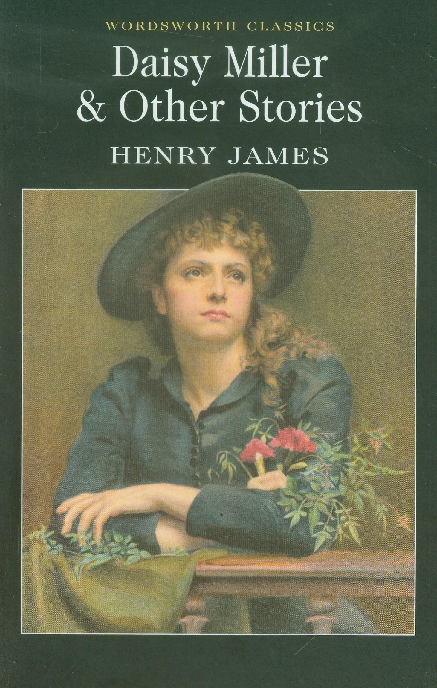

0
стр. з
0
сторінок

завантаження...

Генри Джеймс
Дейзи Миллер
книгу адаптировал Сергей Андреевский
Метод чтения Ильи Франка
Сontents
PART I
At the little town of Vevey, in Switzerland (в маленьком городке Веве, в Швейцарии), there is a particularly comfortable hotel (есть в высшей степени комфортабельная гостиница; particular — частный, отдельный; особенный, исключительный). There are, indeed, many hotels (на самом деле там много гостиниц), for the entertainment of tourists is the business of the place (поскольку обслуживание туристов является /основным/ занятием в этом местечке; entertainment — гостеприимство /устар./; обслуживание; place — место; городок, населенный пункт), which, as many travelers will remember (которое, как многие путешественники вспомнят), is seated upon the edge of a remarkably blue lake (расположено на краю необыкновенно синего озера; to seat — сажать, усаживать; находиться, помещаться /pass./; remarkable — заметный, примечательный; замечательный, поразительный) —a lake that it behooves every tourist to visit (озера, у которого каждому туристу надлежит побывать; to visit — навещать /кого-л./; посещать /что-л./, бывать /где-л./).
Switzerland ['swItsqlqnd], particularly [pq'tIkjulqlI], tourist ['tu(q)rIst]
At the little town of Vevey, in Switzerland, there is a particularly comfortable hotel. There are, indeed, many hotels, for the entertainment of tourists is the business of the place, which, as many travelers will remember, is seated upon the edge of a remarkably blue lake—a lake that it behooves every tourist to visit.
The shore of the lake presents an unbroken array of establishments (берег озера представляет собой непрерывную вереницу заведений; to present — преподносить, вручать; являть, представлять собою; unbroken — неразбитый, целый; непрерывный; array — строй, боевой порядок) of this order, of every category (подобного: "этого" рода, всех категорий; order — порядок, последовательность; род, сорт; every — каждый, всякий; все), from the "grand hotel" of the newest fashion, with a chalk-white front (от новомоднейшего "гранд-отеля"с белым, как мел, фасадом; fashion — образ, манера; мода), a hundred balconies, and a dozen flags flying from its roof (сотней балконов и дюжиной флагов, развевающихся с его крыши; to fly — летать, лететь; развеваться), to the little Swiss pension of an elder day (до маленького швейцарского пансиона былых времен; elder — более старый; предшествующий, более ранний; day — день; время, эпоха), with its name inscribed in German (с его названием, начертанным на немецком) — looking lettering upon a pink or yellow wall (выглядящим как тиснение на розовой или желтой стене; lettering — надпись буквами; тиснение) and an awkward summerhouse in the angle of the garden (и неуклюжей беседкой в углу сада; summerhouse — летний домик; садовая беседка, павильон в саду).
chalk [tSO:k], inscribe [In'skraIb], awkward ['O:kwqd]
The shore of the lake presents an unbroken array of establishments of this order, of every category, from the "grand hotel" of the newest fashion, with a chalk-white front, a hundred balconies, and a dozen flags flying from its roof, to the little Swiss pension of an elder day, with its name inscribed in German-looking lettering upon a pink or yellow wall and an awkward summerhouse in the angle of the garden.
One of the hotels at Vevey, however, is famous, even classical (однако одна из гостиниц в Веве, знаменитая, даже классическая), being distinguished from many of its upstart neighbors (отличается от множества своих выскочек-соседок; upstart /прил./ — неожиданно выдвинувшийся, быстро получивший известность; to upstart — вскакивать /с места/; появляться) by an air both of luxury and of maturity (атмосферой роскоши и завершенности; air — воздух, атмосферные газы; атмосфера, обстановка; both — оба, и тот и другой; maturity — спелость, зрелость /плодов/; завершенность). In this region, in the month of June, American travelers are extremely numerous (в этих краях в июне месяце американские путешественники чрезвычайно многочисленны; region — область, район); it may be said, indeed, that Vevey assumes at this period (даже можно сказать, что Веве приобретает в этот период; indeed — в самом деле, действительно; даже; to assume — принимать /определенный характер, форму/) some of the characteristics of an American watering place (некоторые черты, /присущие/ американским морским курортам; characteristic — характерная черта, особенность; watering place — водопой /животных/, пункт набора воды; морской курорт).
distinguish [dIs'tINgwIS], neighbor ['neIbq], luxury ['lAkS(q)rI], characteristic ["kxrIktq'rIstIk]
One of the hotels at Vevey, however, is famous, even classical, being distinguished from many of its upstart neighbors by an air both of luxury and of maturity. In this region, in the month of June, American travelers are extremely numerous; it may be said, indeed, that Vevey assumes at this period some of the characteristics of an American watering place.
There are sights and sounds which evoke a vision, an echo, of Newport and Saratoga (существуют видимые /признаки/ и звуки, которые вызывают образы, отголоски Ньюпорта и Саратоги; sight — зрение, видение; вид; echo — эхо, отраженный звук; отклик, отголосок; vision — видение, галлюцинация; картина, образ). There is a flitting hither and thither of "stylish" young girls (повсюду мельтешение "стильных" юных девиц; to flit — порхать, перелетать с места на место; проноситься, мелькать; hither and thither — туда и сюда, повсюду), a rustling of muslin flounces (шуршание муслиновых оборок), a rattle of dance music in the morning hours (грохот танцевальной музыки в утренние часы), a sound of high-pitched voices at all times (звук оживленных голосов в любое время суток: "во все времена"; high-pitched — высокий, пронзительный /о звуке/; взволнованный, оживленный).
sight [saIt], rustling ['rAslIN], flounce [flauns]
There are sights and sounds which evoke a vision, an echo, of Newport and Saratoga. There is a flitting hither and thither of "stylish" young girls, a rustling of muslin flounces, a rattle of dance music in the morning hours, a sound of high-pitched voices at all times.
You receive an impression of these things at the excellent inn of the "Trois Couronnes" (вы получаете впечатление от этого: "от этих вещей" в превосходной гостинице "Три короны"; trois /фр./ — три, трое; couronne /фр./ — корона, венец) and are transported in fancy to the Ocean House or to Congress Hall (и переноситесь в воображении в "Дом на океане" или в "Зал Конгресса"). But at the "Trois Couronnes," it must be added (но в "Трех коронах", необходимо добавить), there are other features that are much at variance with these suggestions (есть и другие особенности, которые сильно расходятся с этими предположениями; to be at variance — расходиться во мнениях; не совпадать; variance — разногласие; размолвка; спор, конфликт): neat German waiters, who look like secretaries of legation (ловкие немецкие официанты, которые выглядят, как секретари дипломатических представительств; neat — чистый, опрятный; искусный; to look like — выглядеть как, быть похожим); Russian princesses sitting in the garden (русские княгини, сидящие в саду);
receive [rI'si:v], ocean [quSn, 'quSqn], variance ['vFqrIqns]
You receive an impression of these things at the excellent inn of the "Trois Couronnes" and are transported in fancy to the Ocean House or to Congress Hall. But at the "Trois Couronnes," it must be added, there are other features that are much at variance with these suggestions: neat German waiters, who look like secretaries of legation; Russian princesses sitting in the garden;
little Polish boys walking about held by the hand, with their governors (маленькие польские мальчики, прогуливающиеся, держась за руку, со своими гувернерами; to hold); a view of the sunny crest of the Dent du Midi (вид на освещенный солнцем гребень Дан-дю-Миди /"Зуб Юга", франц./; sunny — солнечный; освещенный солнцем; crest — гребешок, хохолок /птицы/; гребень горы) and the picturesque towers of the Castle of Chillon (и на живописные башни Шильонского замка).
I hardly know whether it was the analogies or the differences (мне неизвестно: "едва ли я знаю", сходства или различия) that were uppermost in the mind of a young American (преобладали в уме юного американца; uppermost — самый верхний; преобладающий), who, two or three years ago, sat in the garden of the "Trois Couronnes" (который два или три года назад сидел в саду /гостиницы/ "Три короны"), looking about him, rather idly (посматривая вокруг себя с совершенно праздным /видом/), at some of the graceful objects I have mentioned (на некоторые приятные /глазу/ объекты, о которых я упоминал).
view [vju:], picturesque ["pIktSq'resk], uppermost ['Apqmqust], idly ['aIdlI]
little Polish boys walking about held by the hand, with their governors; a view of the sunny crest of the Dent du Midi and the picturesque towers of the Castle of Chillon.
I hardly know whether it was the analogies or the differences that were uppermost in the mind of a young American, who, two or three years ago, sat in the garden of the "Trois Couronnes," looking about him, rather idly, at some of the graceful objects I have mentioned.
It was a beautiful summer morning (стояло: "было" прекрасное летнее утро), and in whatever fashion the young American looked at things (и в какой манере бы молодой американец ни смотрел на вещи), they must have seemed to him charming (они должны были казаться ему очаровательными). He had come from Geneva the day before by the little steamer (он приехал из Женевы днем ранее на маленьком пароходе; the day before — накануне), to see his aunt, who was staying at the hotel (повидаться с теткой, которая остановилась в этой гостинице; to stay — оставаться, не уходить; останавливаться, гостить) —Geneva having been for a long time his place of residence (Женева же была на протяжении долгого времени местом его проживания).
beautiful ['bju:tqful], whatever [wOt'evq], Geneva [dZI'ni:vq]
It was a beautiful summer morning, and in whatever fashion the young American looked at things, they must have seemed to him charming. He had come from Geneva the day before by the little steamer, to see his aunt, who was staying at the hotel—Geneva having been for a long time his place of residence.
But his aunt had a headache (но у тетки была головная боль) — his aunt had almost always a headache (у тетки почти всегда была головная боль) —and now she was shut up in her room, smelling camphor (и теперь она заперлась в своей комнате, нюхая камфару; to shut up — плотно закрыть, запереть), so that he was at liberty to wander about (так что он был волен идти, куда захочет; at liberty — свободный /в выборе/; liberty — свобода; право, свобода выбора; to wander about — бродить без цели). He was some seven–and–twenty years of age (ему было лет двадцать семь; age — возраст); when his friends spoke of him (когда его друзья упоминали о нем; to speak — говорить; упоминать), they usually said that he was at Geneva "studying" (они обычно говорили, что в Женеве он "учится").
aunt [Q:nt], headache ['hedeIk], wander ['wOndq], usually ['ju:ZuqlI]
But his aunt had a headache— his aunt had almost always a headache—and now she was shut up in her room, smelling camphor, so that he was at liberty to wander about. He was some seven–and–twenty years of age; when his friends spoke of him, they usually said that he was at Geneva "studying."
When his enemies spoke of him, they said (когда его враги упоминали о нем, они говорили) —but, after all, he had no enemies (хотя, впрочем, врагов он не имел; after all — в конце концов; тем не менее, все же); he was an extremely amiable fellow, and universally liked (он был необыкновенно: "чрезвычайно" славным малым и всеми любимым; amiable — дружелюбный; приятный, симпатичный; fellow — товарищ, собрат; человек, парень). What I should say is, simply (просто мне следует сказать; simply — просто, несложно; просто, только), that when certain persons spoke of him (что, когда люди упоминали о нем) they affirmed that the reason of his spending so much time at Geneva was (они утверждали, что причиной того, что он проводил так много времени в Женеве, являлось то; to spend — тратить расходовать; проводить время) that he was extremely devoted to a lady who lived there (что он был безумно: "чрезвычайно" влюблен в даму, которая жила там; to devote — посвящать, отдавать себя целиком) —a foreign lady—a person older than himself (в иностранку, особу старше, чем он сам; person — человек, личность).
extremely [Iks'tri:mlI], amiable ['eImjqbl], foreign ['fOrIn]
When his enemies spoke of him, they said—but, after all, he had no enemies; he was an extremely amiable fellow, and universally liked. What I should say is, simply, that when certain persons spoke of him they affirmed that the reason of his spending so much time at Geneva was that he was extremely devoted to a lady who lived there—a foreign lady—a person older than himself.
Very few Americans—indeed, I think none (очень мало американцев — на самом деле, я полагаю, никто /из них/) —had ever seen this lady (когда-либо видел эту даму), about whom there were some singular stories (о которой ходили кое-какие любопытные рассказы; singular — особый, отдельный; необычайный, своеобразный). But Winterbourne had an old attachment for the little metropolis of Calvinism (но Уинтерборн имел старинную привязанность к маленькой столице кальвинизма; attachment — прикрепление, присоединение; привязанность, преданность); he had been put to school there as a boy (мальчиком его отдали там в школу; to put a child to school — определить ребенка в школу), and he had afterward gone to college there (и впоследствии там же он пошел в колледж) —circumstances which had led to his forming a great many youthful friendships (обстоятельства, которые привели к формированию множества юношеских дружеских связей; to lead; a great many — громадное количество).
few [fju:], afterward ['Q:ftqwqdz], circumstances ['sq:kqmstqnsIz]
Very few Americans—indeed, I think none—had ever seen this lady, about whom there were some singular stories. But Winterbourne had an old attachment for the little metropolis of Calvinism; he had been put to school there as a boy, and he had afterward gone to college there—circumstances which had led to his forming a great many youthful friendships.
Many of these he had kept (многие из них: "из этих" он поддерживал; to keep — держать, хранить; поддерживать /дружбу, компанию/), and they were a source of great satisfaction to him (и они являли собой источник большого удовольствия для него; satisfaction — удовлетворение; удовольствие).
After knocking at his aunt’s door (постучав в теткину дверь) and learning that she was indisposed (и узнав, что ей нездоровится; to learn — изучать, учить /что-л./; узнавать; indisposed — не расположенный /к чему-л./, не склонный /делать что-л./; испытывающий недомогание), he had taken a walk about the town (он предпринял прогулку по городу), and then he had come in to his breakfast (а затем вернулся: "пришел в" /гостиницу/ позавтракать). He had now finished his breakfast (теперь он уже закончил свой завтрак); but he was drinking a small cup of coffee (но /еще/ пил из маленькой чашечки кофе), which had been served to him on a little table in the garden (который подал ему на маленький столик в саду) by one of the waiters who looked like an attache (один из официантов, выглядевший, как атташе посольства).
source [sO:s], knock [nOk], attache [q'txSeI]
Many of these he had kept, and they were a source of great satisfaction to him.
After knocking at his aunt’s door and learning that she was indisposed, he had taken a walk about the town, and then he had come in to his breakfast. He had now finished his breakfast; but he was drinking a small cup of coffee, which had been served to him on a little table in the garden by one of the waiters who looked like an attache.
At last he finished his coffee and lit a cigarette (наконец он закончил со своим кофе и зажег сигарету; to light). Presently a small boy came walking along the path (вскоре показался идущий по дорожке маленький мальчик; presently — сразу же, немедленно /устар./; вскоре, через минуту; to come — приходить; появляться) —an urchin of nine or ten (сорванец девяти или десяти лет; urchin — еж /устар./; сорванец, пострел /шутл./). The child, who was diminutive for his years (ребенок, который был /слишком/ мал для своих лет; diminutive — уменьшительный; маленький, крохотный), had an aged expression of countenance (/его/ лицо имело старческое выражение; aged — в возрасте; старческий; countenance — самообладание; выражение лица), a pale complexion, and sharp little features (бледный цвет и резкие, мелкие черты; complexion — характер; цвет лица). He was dressed in knickerbockers, with red stockings (одет он был в бриджи и красные чулки), which displayed his poor little spindle-shanks (которые подчеркивали: "демонстрировали" его тощие слабенькие длинные голени; poor — бедный, неимущий; худой, тощий; little — маленький, небольшой; слабый; spindle-shanks — длинные тонкие ноги; spindle — веретено; жердь; shank — нога /от колена до лодыжки/); he also wore a brilliant red cravat (также он носил блестящий красный галстук; to wear).
urchin ['q:tSIn], feature ['fi:tSq], knickerbockers ['nIkqbOkqz]
At last he finished his coffee and lit a cigarette. Presently a small boy came walking along the path—an urchin of nine or ten. The child, who was diminutive for his years, had an aged expression of countenance, a pale complexion, and sharp little features. He was dressed in knickerbockers, with red stockings, which displayed his poor little spindle-shanks; he also wore a brilliant red cravat.
He carried in his hand a long alpenstock (в руке он держал: "нес" длинный альпеншток), the sharp point of which he thrust into everything that he approached (острый наконечник которого втыкал во все, к чему приближался; point — точка; острие, наконечник; to thrust) —the flowerbeds, the garden benches, the trains of the ladies’ dresses (в цветочные клумбы, в садовые скамейки, в шлейфы дамских платьев). In front of Winterbourne he paused (перед Уинтерборном он остановился), looking at him with a pair of bright, penetrating little eyes (посматривая на него парой смышленых, проницательных глазенок: "маленьких глаз"; bright — светлый, яркий; сообразительный).
alpenstock ['xlpqnstOk], pause [pO:z], bright [braIt]
He carried in his hand a long alpenstock, the sharp point of which he thrust into everything that he approached—the flowerbeds, the garden benches, the trains of the ladies’ dresses. In front of Winterbourne he paused, looking at him with a pair of bright, penetrating little eyes.
"Will you give me a lump of sugar (а вы дадите мне кусок сахару; lump — глыба; крупный кусок)?" he asked in a sharp, hard little voice (спросил он резким, неприятным голоском; hard — твердый; грубый, неприятный /о голосе/) — a voice immature and yet, somehow, not young (голоском незрелым, но, однако же, каким-то /отнюдь/ не юным).
Winterbourne glanced at the small table near him (Уинтерборн взглянул на маленький столик рядом с собой), on which his coffee service rested (на котором стоял его кофейный сервиз; to rest — отдыхать; покоиться /на чем-л./), and saw that several morsels of sugar remained (и увидел, что несколько кусочков сахару осталось). "Yes, you may take one," he answered (да, можешь взять, — ответил он); "but I don’t think sugar is good for little boys (но я не думаю, что сахар полезен маленьким мальчикам; good — добрый, хороший; полезный)."
sugar ['Sugq], immature ["Imq'tjuq], service ['sq:vIs]
"Will you give me a lump of sugar?" he asked in a sharp, hard little voice— a voice immature and yet, somehow, not young.
Winterbourne glanced at the small table near him, on which his coffee service rested, and saw that several morsels of sugar remained. "Yes, you may take one," he answered; "but I don’t think sugar is good for little boys."
This little boy stepped forward (маленький мальчик шагнул вперед) and carefully selected three of the coveted fragments (и тщательно отобрал три желанных куска; fragment — обломок, осколок; кусок), two of which he buried in the pocket of his knickerbockers (два из которых спрятал в карман своих бриджей), depositing the other as promptly in another place (поместив оставшийся так же быстро в другое место). He poked his alpenstock, lance-fashion, into Winterbourne’s bench (он воткнул свой альпеншток на манер копья в скамейку Уинтерборна) and tried to crack the lump of sugar with his teeth (и попытался расколоть кусок сахара зубами; lump — ком, глыба; крупный кусок).
carefully ['kFqlIs], covet ['kAvIt], bury ['berI]
This little boy stepped forward and carefully selected three of the coveted fragments, two of which he buried in the pocket of his knickerbockers, depositing the other as promptly in another place. He poked his alpenstock, lance-fashion, into Winterbourne’s bench and tried to crack the lump of sugar with his teeth.
"Oh, blazes; it’s har–r–d!" he exclaimed (ох, дьявол, он кр-р-репкий! — воскликнул он; blaze — пламя, яркий огонь; blazes /эвф./ — ад), pronouncing the adjective in a peculiar manner (произнося прилагательное по-особенному: "в особенной манере"; manner — метод, способ; манера).
Winterbourne had immediately perceived (Уинтерборн тотчас же понял) that he might have the honor of claiming him as a fellow countryman (что имеет честь назвать его собратом-соотечественником; to claim — требовать, претендовать; утверждать, заявлять /амер./; fellow — товарищ, собрат). "Take care you don’t hurt your teeth (осторожно, не повреди себе зубы; to take care /зд./ — быть осторожным)," he said, paternally (сказал он по-отечески).
"I haven’t got any teeth to hurt (нет у меня зубов, /которые можно/ повредить). They have all come out (они все выпали; to come out /зд./ — выпадать /о зубах, волосах/).
pronounce [prq'nauns], peculiar [pI'kju:ljq], countryman ['kAntrImqn]
"Oh, blazes; it’s har–r–d!" he exclaimed, pronouncing the adjective in a peculiar manner.
Winterbourne had immediately perceived that he might have the honor of claiming him as a fellow countryman. "Take care you don’t hurt your teeth," he said, paternally.
"I haven’t got any teeth to hurt. They have all come out.
I have only got seven teeth (у меня осталось: "имеется" только семь зубов). My mother counted them last night (мама пересчитала их прошлой ночью), and one came out right afterward (и сразу после этого выпал еще один; right — правильно, справедливо; прямо, как раз; afterward — впоследствии, позже). She said she’d slap me if any more came out (она сказала, что отшлепает меня, если еще выпадут). I can’t help it (но это же не от меня зависит; I can’t help it — ничего не могу поделать). It’s this old Europe (это /все/ эта старая Европа). It’s the climate that makes them come out (из-за ее климата они выпадают: "ее климат заставляет их выпадать"; to make smb. do smth. — заставить кого-л. сделать что-л.). In America they didn’t come out (в Америке они не выпадали). It’s these hotels (это /все/ из-за этих гостиниц)."
Winterbourne was much amused (Уинтерборна /эти слова/ изрядно позабавили).
Europe ['juqrqp], climate ['klaImIt], amused [q'mju:zd]
I have only got seven teeth. My mother counted them last night, and one came out right afterward. She said she’d slap me if any more came out. I can’t help it. It’s this old Europe. It’s the climate that makes them come out. In America they didn’t come out. It’s these hotels."
Winterbourne was much amused.
"If you eat three lumps of sugar (если будешь есть по три куска сахару), your mother will certainly slap you," he said (твоя мама непременно отшлепает тебя, — сказал он).
"She’s got to give me some candy, then (тогда она должна давать мне конфеты; candy — леденцы; конфеты /амер./)," rejoined his young interlocutor (возразил его юный собеседник; to rejoin — отвечать на обвинение; отвечать, возражать). "I can’t get any candy here—any American candy (я не могу достать конфет здесь — любых американских конфет). American candy’s the best candy (американские конфеты — самые лучшие конфеты)."
"And are American little boys the best little boys (а американские маленькие мальчики /тоже/ самые лучшие маленькие мальчики)?" asked Winterbourne (спросил Уинтерборн).
"I don’t know (не знаю). I’m an American boy," said the child (я американский мальчик, — сказал ребенок).
lump [lAmp], certainly ['sq:tnlI], interlocutor ["Intq'lOkjutq]
"If you eat three lumps of sugar, your mother will certainly slap you," he said.
"She’s got to give me some candy, then," rejoined his young interlocutor. "I can’t get any candy here—any American candy. American candy’s the best candy."
"And are American little boys the best little boys?" asked Winterbourne.
"I don’t know. I’m an American boy," said the child.
"I see you are one of the best!" laughed Winterbourne (я вижу, что ты — один из лучших! — рассмеялся Уинтерборн).
"Are you an American man (а вы американский мужчина)?" pursued this vivacious infant (продолжало это неугомонное дитя; to pursue — преследовать, гнаться; продолжать /занятие, обсуждение/; vivacious — живой, оживленный; бодрый). And then, on Winterbourne’s affirmative reply (и затем, после утвердительного ответа Уинтерборна) —"American men are the best," he declared (американские мужчины — самые лучшие, — заявил он).
His companion thanked him for the compliment (собеседник поблагодарил его за комплимент; companion — товарищ; собеседник), and the child, who had now got astride of his alpenstock (а ребенок, который к этому времени оседлал свой альпеншток; now — теперь, сейчас; в тот момент, в то время /в повествовании/; astride — широко расставив ноги; верхом), stood looking about him (стоял, поглядывая вокруг себя), while he attacked a second lump of sugar (одновременно трудясь над вторым куском сахара; while — пока, в то время как; to attack — нападать; энергично браться /за работу/).
laugh [lQ:f], pursue [pq'sju:], vivacious [vI'veISqs]
"I see you are one of the best!" laughed Winterbourne.
"Are you an American man?" pursued this vivacious infant. And then, on Winterbourne’s affirmative reply—"American men are the best," he declared.
His companion thanked him for the compliment, and the child, who had now got astride of his alpenstock, stood looking about him, while he attacked a second lump of sugar.
Winterbourne wondered if he himself had been like this in his infancy (Уинтерборн задумался, был ли он сам таким же в раннем детстве; to wonder — удивляться; интересоваться, задавать себе вопрос; infancy — младенчество), for he had been brought to Europe at about this age (поскольку его привезли в Европу примерно в этом возрасте).
"Here comes my sister (а вот идет моя сестра)!" cried the child in a moment (воскликнул ребенок через минуту; to cry — кричать, вопить; восклицать). "She’s an American girl (она — американская девушка)."
Winterbourne looked along the path and saw (Уинтерборн взглянул вдоль дорожки и увидел) a beautiful young lady advancing (как /по ней/ идет красивая молодая девушка; to advance — продвигаться, идти вперед). "American girls are the best girls (американские девушки самые лучшие)," he said cheerfully to his young companion (сказал он весело своему юному собеседнику).
brought [brO:t], child [tSaIld], companion [kqm'pxnjqn]
Winterbourne wondered if he himself had been like this in his infancy, for he had been brought to Europe at about this age.
"Here comes my sister!" cried the child in a moment. "She’s an American girl."
Winterbourne looked along the path and saw a beautiful young lady advancing. "American girls are the best girls," he said cheerfully to his young companion.
"My sister ain’t the best!" the child declared (моя сестра не самая лучшая! — заявил малыш). "She’s always blowing at me (она всегда бранит меня; to blow — дуть, веять /о ветре/; разражаться гневом)."
"I imagine that is your fault, not hers," said Winterbourne (мне кажется, это твоя вина, не ее, — сказал Уинтерборн; to imagine — воображать, представлять себе; предполагать). The young lady meanwhile had drawn near (молодая девушка тем временем приблизилась; to draw near — приближаться; to draw — тащить, волочить; тащиться, волочиться; near — близко). She was dressed in white muslin (она была одета в белый муслин), with a hundred frills and flounces, and knots of pale-colored ribbon (с сотней рюшей, оборок и бантов из лент пастельных: "бледных" тонов; knot — узел; бант).
fault [fO:lt], meanwhile ['mi:n'waIl], muslin ['mAzlIn]
"My sister ain’t the best!" the child declared. "She’s always blowing at me."
"I imagine that is your fault, not hers," said Winterbourne. The young lady meanwhile had drawn near. She was dressed in white muslin, with a hundred frills and flounces, and knots of pale-colored ribbon.
She was bareheaded, but she balanced in her hand a large parasol (она была с непокрытой головой, но покачивала в руке большим зонтом от солнца; to balance — сохранять равновесие), with a deep border of embroidery (с широкой каймой из вышивки; deep — глубокий; широкий); and she was strikingly, admirably pretty (и она была поразительно, восхитительно хороша; pretty — милый, прелестный; хорошенький /о женщине/). "How pretty they are (как же они прелестны)!" thought Winterbourne, straightening himself in his seat (подумал Уинтерборн, выпрямляясь "на своем сиденье"), as if he were prepared to rise (как будто приготовился встать: "подняться").
The young lady paused in front of his bench (молодая девушка остановилась перед его скамейкой), near the parapet of the garden (рядом с садовым парапетом), which overlooked the lake (за которым виднелось озеро; to overlook — смотреть сверху на /что-л./, обозревать).
bareheaded ["bIq'hedId], admirably ['xdmqrqblI], pretty ['prItI]
She was bareheaded, but she balanced in her hand a large parasol, with a deep border of embroidery; and she was strikingly, admirably pretty. "How pretty they are!" thought Winterbourne, straightening himself in his seat, as if he were prepared to rise.
The young lady paused in front of his bench, near the parapet of the garden, which overlooked the lake.
The little boy had now converted his alpenstock into a vaulting pole (мальчонка к этому моменту превратил свой альпеншток в шест для прыжков), by the aid of which he was springing about in the gravel (при помощи которого он скакал по гравию) and kicking it up not a little (подбрасывая его вверх на изрядную /высоту/; to kick up — поднимать/швырять вверх ударом ноги; not a little — совсем немало).
"Randolph," said the young lady (Рэндольф, — сказала юная леди), "what ARE you doing (что ты делаешь)?"
"I’m going up the Alps," replied Randolph (я поднимаюсь в Альпы, — ответил Рэндольф). "This is the way (вот так вот; this is the way — таким образом; way — путь, дорога; образ действия)!" And he gave another little jump (и он еще легонько подпрыгнул; jump — прыжок, скачок), scattering the pebbles about Winterbourne’s ears (разбросав камешки, /пролетевшие/ рядом с ушами Уинтерборна; pebble — галька, голыш).
vaulting ['vO:ltIN], reply [rI'plaI], ear [Iq]
The little boy had now converted his alpenstock into a vaulting pole, by the aid of which he was springing about in the gravel and kicking it up not a little.
"Randolph," said the young lady, "what ARE you doing?"
"I’m going up the Alps," replied Randolph. "This is the way!" And he gave another little jump, scattering the pebbles about Winterbourne’s ears.
"That’s the way they come down," said Winterbourne (а так: "таким способом" спускаются вниз, — сказал Уинтерборн).
"He’s an American man (он — американский мужчина)!" cried Randolph, in his little hard voice (крикнул Рэндольф своим неприятным голоском).
The young lady gave no heed to this announcement (юная дама не обратила никакого внимания на это сообщение; announcement — объявление; сообщение), but looked straight at her brother (а посмотрела прямо: "пристально" на своего брата). "Well, I guess you had better be quiet (итак, я полагаю, тебе лучше успокоиться: "быть спокойным"; to guess — приблизительно определять; думать, полагать /амер. разг./)," she simply observed (заметила она просто = спокойно; to observe — наблюдать; сделать замечание, высказаться).
announcement [q'naunsmqnt], guess [ges], quiet ['kwaIqt]
"That’s the way they come down," said Winterbourne.
"He’s an American man!" cried Randolph, in his little hard voice.
The young lady gave no heed to this announcement, but looked straight at her brother. "Well, I guess you had better be quiet," she simply observed.
It seemed to Winterbourne that he had been in a manner presented (Уинтерборну показалось, что его уже определенным образом представили; in a manner — некоторым образом, в некотором смысле; to present — преподносить, дарить; представить, отрекомендовать /кого-л. кому-л./). He got up and stepped slowly toward the young girl (он поднялся и медленно шагнул к молодой девушке; to get up — вставать), throwing away his cigarette (отбрасывая в сторону сигарету). "This little boy and I have made acquaintance (мы с этим маленьким мальчиком уже познакомились; to make acquaintance with smb. — познакомиться с кем-л.)," he said, with great civility (сказал он весьма учтиво: "с большой вежливостью"). In Geneva, as he had been perfectly aware (в Женеве, как он прекрасно знал), a young man was not at liberty to speak to a young unmarried lady (молодой человек не /мог/ свободно заговорить с молодой незамужней дамой) except under certain rarely occurring conditions (разве только /находясь/ в определенных чрезвычайных: "редко случающихся" обстоятельствах; except — кроме, за исключением);
toward [tq'wO:d], acquaintance [q'kweIntqns], occur [q'kq:]
It seemed to Winterbourne that he had been in a manner presented. He got up and stepped slowly toward the young girl, throwing away his cigarette. "This little boy and I have made acquaintance," he said, with great civility. In Geneva, as he had been perfectly aware, a young man was not at liberty to speak to a young unmarried lady except under certain rarely occurring conditions;
but here at Vevey, what conditions could be better than these (но здесь в Веве какие обстоятельства могли бы быть лучше, чем эти)?— a pretty American girl coming and standing in front of you in a garden (хорошенькая американская девушка подходит и останавливается перед вами в саду). This pretty American girl, however (эта хорошенькая американская девушка, впрочем), on hearing Winterbourne’s observation (услышав замечание Уинтерборна), simply glanced at him (спокойно: "просто" взглянула на него); she then turned her head and looked over the parapet (затем она повернула голову и посмотрела через парапет), at the lake and the opposite mountains (на озеро и находящиеся напротив горы).
however [hau'evq], observation ["Obzq:'veIS(q)n], mountain ['mauntIn]
but here at Vevey, what conditions could be better than these?— a pretty American girl coming and standing in front of you in a garden. This pretty American girl, however, on hearing Winterbourne’s observation, simply glanced at him; she then turned her head and looked over the parapet, at the lake and the opposite mountains.
He wondered whether he had gone too far (он засомневался, не зашел ли слишком далеко; to wonder /зд./ — задавать себе вопрос, сомневаться), but he decided that he must advance farther, rather than retreat (но решил, что должен продвигаться дальше, вместо того, чтобы сдаваться; rather than — вместо того, чтобы). While he was thinking of something else to say (пока он раздумывал, что же еще сказать), the young lady turned to the little boy again (молодая леди снова повернулась к мальчугану).
"I should like to know where you got that pole," she said (мне бы хотелось знать, где ты взял этот шест, — сказала она).
"I bought it," responded Randolph (я купил его, — отозвался Рэндольф).
"You don’t mean to say (не хочешь же ты сказать; to mean — подразумевать, иметь в виду) you’re going to take it to Italy (что собираешься взять его в Италию; to be going to do smth. — собираться/намереваться сделать что-л.)?"
wonder ['wAndq], decide [dI'saId], advance [qd'vQ:ns]
He wondered whether he had gone too far, but he decided that he must advance farther, rather than retreat. While he was thinking of something else to say, the young lady turned to the little boy again.
"I should like to know where you got that pole," she said.
"I bought it," responded Randolph.
"You don’t mean to say you’re going to take it to Italy?"
"Yes, I am going to take it to Italy," the child declared (да, я намерен взять его в Италию, — заявил ребенок).
The young girl glanced over the front of her dress (молодая девушка оглядела переднюю часть своего платья) and smoothed out a knot or two of ribbon (и пригладила несколько бантов "из ленты"; one or two — несколько). Then she rested her eyes upon the prospect again (затем снова остановила взгляд на панораме; to rest — отдыхать; останавливаться, быть прикованным /о взгляде, внимании, мыслях/; eyes — глаза; взгляд). "Well, I guess you had better leave it somewhere (но я полагаю, лучше бы тебе оставить его где-нибудь; had better — лучше бы, следовало бы)," she said after a moment (сказала она через минуту).
"Are you going to Italy (вы едете в Италию)?" Winterbourne inquired in a tone of great respect (осведомился Уинтерборн весьма почтительным тоном: "тоном глубокого почтения"; great — большой, огромный; сильный, глубокий /о чувствах, состояниях/).
glance [glQ:ns], knot [nOt], eye [aI]
"Yes, I am going to take it to Italy," the child declared.
The young girl glanced over the front of her dress and smoothed out a knot or two of ribbon. Then she rested her eyes upon the prospect again. "Well, I guess you had better leave it somewhere," she said after a moment.
"Are you going to Italy?" Winterbourne inquired in a tone of great respect.
The young lady glanced at him again (юная леди снова взглянула на него). "Yes, sir," she replied (да, сэр, — ответила она). And she said nothing more (но больше не сказала ничего).
"Are you—a— going over the Simplon (а вы… э… поедете через Симплон)?" Winterbourne pursued, a little embarrassed (продолжал Уинтерборн, немного смутившись; to embarrass — мешать, препятствовать; смущать, приводить в замешательство).
"I don’t know," she said (я не знаю, — сказала она). "I suppose it’s some mountain (мне думается, это будет какая-то гора; to suppose — предполагать, допускать). Randolph, what mountain are we going over (Рэндольф, через какую гору мы поедем)?"
"Going where?" the child demanded (поедем куда? — спросил малыш; to demand — настойчиво требовать ответа; задавать вопрос /часто после прямой речи/).
"To Italy," Winterbourne explained (в Италию, — объяснил Уинтерборн).
embarrass [Im'bxrqs], suppose [sq'pquz], demand [dI'mQ:nd]
The young lady glanced at him again. "Yes, sir," she replied. And she said nothing more.
"Are you—a— going over the Simplon?" Winterbourne pursued, a little embarrassed.
"I don’t know," she said. "I suppose it’s some mountain. Randolph, what mountain are we going over?"
"Going where?" the child demanded.
"To Italy," Winterbourne explained.
"I don’t know," said Randolph (я не знаю, — сказал Рэндольф). "I don’t want to go to Italy (я не хочу ехать в Италию; to want — испытывать недостаток /в чем-л./; хотеть, желать). I want to go to America (я хочу поехать в Америку)."
"Oh, Italy is a beautiful place (о, Италия — это прекрасное место)!" rejoined the young man (возразил молодой человек; to rejoin /зд./ — отвечать на обвинение; отвечать, возражать).
"Can you get candy there (а можно там купить конфет; to get — доставать, добывать; покупать, приобретать)?" Randolph loudly inquired (громко осведомился Рэндольф).
"I hope not," said his sister (надеюсь, что нет, — сказала его сестра). "I guess you have had enough candy (мне кажется, ты съел уже достаточно конфет; to have — иметь, обладать; есть, пить), and mother thinks so too (и мама тоже так считает; to think — думать, мыслить; полагать, считать)."
"I haven’t had any for ever so long—for a hundred weeks (я не ел конфет уже целую вечность — сто недель; ever so long — бесконечно долго)!" cried the boy, still jumping about (крикнул мальчик, продолжая прыгать: "все еще прыгая"; about /зд./ — поблизости, неподалеку; вокруг).
loudly ['laudlI], inquire [In'kwaIq], enough [I'nAf]
"I don’t know," said Randolph. "I don’t want to go to Italy. I want to go to America."
"Oh, Italy is a beautiful place!" rejoined the young man.
"Can you get candy there?" Randolph loudly inquired.
"I hope not," said his sister. "I guess you have had enough candy, and mother thinks so too."
"I haven’t had any for ever so long—for a hundred weeks!" cried the boy, still jumping about.
The young lady inspected her flounces and smoothed her ribbons again (юная леди снова пристально осмотрела свои оборки и пригладила ленты); and Winterbourne presently risked an observation upon the beauty of the view (а Уинтерборн вскоре отважился на замечание о красоте пейзажа). He was ceasing to be embarrassed (он /постепенно/ переставал смущаться = начал утрачивать смущение; to cease — прекращать; переставать), for he had begun to perceive (поскольку уже начал понимать) that she was not in the least embarrassed herself (что сама она не смущается ничуть; in the least — совсем, вообще). There had not been the slightest alteration in her charming complexion (в ее очаровательном личике не произошло: "не было" ни малейшей перемены; complexion /зд./ — цвет лица); she was evidently neither offended nor flattered (она явно не была ни оскорблена, ни польщена).
cease [si:s], neither ['naIDq], offend [q'fend]
The young lady inspected her flounces and smoothed her ribbons again; and Winterbourne presently risked an observation upon the beauty of the view. He was ceasing to be embarrassed, for he had begun to perceive that she was not in the least embarrassed herself. There had not been the slightest alteration in her charming complexion; she was evidently neither offended nor flattered.
If she looked another way (если она и смотрела в другую сторону: "в другом направлении"; way — путь, дорога; направление) when he spoke to her (когда он говорил с нею), and seemed not particularly to hear him (и, казалось, не особенно слушала его), this was simply her habit, her manner (это было просто ее привычкой, ее манерой поведения). Yet, as he talked a little more (однако, по мере того как он говорил "немного больше") and pointed out some of the objects of interest in the view (и указывал достопримечательности: "на некоторые объекты интереса", /находящиеся/ в поле зрения; object — предмет; объект), with which she appeared quite unacquainted (с которыми она, по-видимому, совсем не была знакома: "казалась совершенно незнакомой"; to appear — появляться, показываться; производить впечатление, казаться), she gradually gave him more of the benefit of her glance (она постепенно все больше милостиво удостаивала его своим взглядом; to give — давать; дарить, жаловать; benefit — благодеяние, доброе дело; милость); and then he saw that this glance was perfectly direct and unshrinking (и тогда он увидел, что этот взгляд был совершенно прямым и бесхитростным: "неуклоняющимся"; to shrink — уменьшать/ся/, сокращать/ся/; избегать /чего-л./, уклоняться /от чего-л./).
particularly [pq'tIkjulqlI], unacquainted ['Anq'kweIntId], gradually ['grxdjuqlI]
If she looked another way when he spoke to her, and seemed not particularly to hear him, this was simply her habit, her manner. Yet, as he talked a little more and pointed out some of the objects of interest in the view, with which she appeared quite unacquainted, she gradually gave him more of the benefit of her glance; and then he saw that this glance was perfectly direct and unshrinking.
It was not, however, what would have been called an immodest glance (он был, однако, не таким, какой называют нескромным взглядом), for the young girl’s eyes were singularly honest and fresh (поскольку глаза молодой девушки были необыкновенно честными и невинными; fresh — свежий, натуральный; неиспорченный). They were wonderfully pretty eyes (они были удивительно прелестными глазами); and, indeed, Winterbourne had not seen for a long time anything prettier (и в самом деле, Уинтерборн не видел в течение долгого времени ничего прелестнее) than his fair countrywoman’s various features (чем "различные" черты лица его красивой соотечественницы) —her complexion, her nose, her ears, her teeth (цвет ее /кожи/, носик, ушки, зубки; complexion — цвет лица).
singularly ['sINgjulqlI], indeed [In'di:d], various ['vFqrIqs]
It was not, however, what would have been called an immodest glance, for the young girl’s eyes were singularly honest and fresh. They were wonderfully pretty eyes; and, indeed, Winterbourne had not seen for a long time anything prettier than his fair countrywoman’s various features—her complexion, her nose, her ears, her teeth.
He had a great relish for feminine beauty (он очень ценил женскую красоту: "имел огромную склонность к женской красоте"; relish — приятный вкус, запах; вкус, склонность /к чему-л./); he was addicted to observing and analyzing it (он был склонен замечать и исследовать ее; to observe — наблюдать, следить; замечать); and as regards this young lady’s face he made several observations (и в отношении лица этой юной леди он сделал несколько наблюдений; as regards — что касается). It was not at all insipid (оно никоим образом не было обыкновенным; at all — нисколько, ничуть; insipid — безвкусный, пресный; неинтересный), but it was not exactly expressive (но очень уж выразительным оно не было /тоже/; exactly — точно; совершенно, полностью); and though it was eminently delicate (и хотя /черты/ его были в высшей степени утонченными), Winterbourne mentally accused it—very forgivingly (Уинтерборн мысленно упрекнул его — весьма снисходительно; to accuse — обвинять, винить; упрекать) —of a want of finish (в недостатке законченности = завершенности).
analyze ['xnqlaIz], exactly [Ig'zxktlI], accuse [q'kju:z]
He had a great relish for feminine beauty; he was addicted to observing and analyzing it; and as regards this young lady’s face he made several observations. It was not at all insipid, but it was not exactly expressive; and though it was eminently delicate, Winterbourne mentally accused it—very forgivingly—of a want of finish.
He thought it very possible that Master Randolph’s sister was a coquette (ему подумалось, что, весьма вероятно, сестра мастера Рэндольфа — кокетка; master — хозяин, владелец; молодой барин); he was sure she had a spirit of her own (он был уверен, что она девушка с характером: "что у нее есть свой собственный характер"; spirit — душа, дух; моральная сила, характер); but in her bright, sweet, superficial little visage (но в ее светлом, милом невыразительном личике; sweet — приятный; милый, прелестный /разг./; superficial — поверхностный, внешний; несущественный; visage — лицо, выражение лица) there was no mockery, no irony (не было ни насмешки, ни иронии). Before long it became obvious (в скором времени стало заметно; before long — вскоре, в ближайшее время; to become) that she was much disposed toward conversation (что она очень расположена к разговору). She told him that they were going to Rome for the winter (она рассказала ему, что они поедут в Рим на зиму) —she and her mother and Randolph (она, ее мать и Рэндольф).
coquette [kq(u)'ket], superficial ["sju:pq'fIS(q)l], irony ['aIqrqnI], obvious ['ObvIqs]
He thought it very possible that Master Randolph’s sister was a coquette; he was sure she had a spirit of her own; but in her bright, sweet, superficial little visage there was no mockery, no irony. Before long it became obvious that she was much disposed toward conversation. She told him that they were going to Rome for the winter—she and her mother and Randolph.
She asked him if he was a "real American" (она спросила его, "настоящий" ли он американец); she shouldn’t have taken him for one (она не приняла бы его за такого; to take smb. for smb. — принимать кого-л. за кого-л.); he seemed more like a German (он кажется больше похожим на немца; to seem — казаться, представляться) —this was said after a little hesitation (это было сказано после некоторого колебания) — especially when he spoke (особенно, когда он разговаривает). Winterbourne, laughing, answered (Уинтерборн, смеясь, отвечал) that he had met Germans who spoke like Americans (что он встречал немцев, которые говорят, как американцы), but that he had not, so far as he remembered, met an American (но что он не встречал, насколько ему помнится, американца; as far as — насколько) who spoke like a German (который говорил бы, как немец).
should [Sud], especially [Is'peS(q)lI], answer ['Q:nsq]
She asked him if he was a "real American"; she shouldn’t have taken him for one; he seemed more like a German—this was said after a little hesitation— especially when he spoke. Winterbourne, laughing, answered that he had met Germans who spoke like Americans, but that he had not, so far as he remembered, met an American who spoke like a German.
Then he asked her (потом он спросил ее) if she should not be more comfortable in sitting upon the bench (не будет ли ей удобнее сесть на скамейку) which he had just quitted (с которой он только что встал: "которую" он только что покинул). She answered that she liked standing up and walking about (она ответила, что ей нравится стоять или ходить); but she presently sat down (но тотчас же села). She told him she was from New York State (она рассказала ему, что она из штата Нью-Йорк) —"if you know where that is (если вам известно, где это находится) ". Winterbourne learned more about her (Уинтерборн узнал еще больше о ней) by catching hold of her small, slippery brother (поймав ее маленького увертливого братца; to catch hold — схватить, поймать; slippery — скользкий; увертливый) and making him stand a few minutes by his side (и заставив его постоять несколько минут рядом с ним; to make smb. do smth. — заставить кого-л. сделать что-л.).
comfortable ['kAmfqtqbl], quit [kwIt], minute ['mInIt]
Then he asked her if she should not be more comfortable in sitting upon the bench which he had just quitted. She answered that she liked standing up and walking about; but she presently sat down. She told him she was from New York State—"if you know where that is." Winterbourne learned more about her by catching hold of her small, slippery brother and making him stand a few minutes by his side.
"Tell me your name, my boy," he said (назови-ка мне свое имя, мой мальчик, — сказал он; to tell — рассказывать; говорить, сообщать).
"Randolph C. Miller," said the boy sharply (Рэндольф С. Миллер, — сказал мальчик резко). "And I’ll tell you her name (и я назову вам ее имя) "; and he leveled his alpenstock at his sister (и он направил свой альпеншток на свою сестру; to level — равнять, выравнивать; наводить оружие на, целиться в /кого-л./).
"You had better wait till you are asked (ты бы лучше подождал, когда тебя спросят)!" said this young lady calmly (сказала эта юная леди спокойно).
"I should like very much to know your name," said Winterbourne (мне бы очень хотелось узнать ваше имя).
"Her name is Daisy Miller!" cried the child (ее имя Дейзи Миллер! — выкрикнул ребенок). "But that isn’t her real name (но это не ее настоящее имя); that isn’t her name on her cards (на ее визитных карточках стоит другое имя: "это не ее имя на визитных карточках"; card — игральная карта; визитная карточка)."
sharply ['SQ:plI], calmly ['kQ:mlI], much [mAtS]
"Tell me your name, my boy," he said.
"Randolph C. Miller," said the boy sharply. "And I’ll tell you her name"; and he leveled his alpenstock at his sister.
"You had better wait till you are asked!" said this young lady calmly.
"I should like very much to know your name," said Winterbourne.
"Her name is Daisy Miller!" cried the child. "But that isn’t her real name; that isn’t her name on her cards."
"It’s a pity you haven’t got one of my cards!" said Miss Miller (жаль, что ты не прихватил /с собой/ одну из моих визитных карточек! — сказала мисс Миллер; to have got — иметь, обладать).
"Her real name is Annie P. Miller," the boy went on (ее настоящее имя — Энни П. Миллер, — продолжал мальчик; to go on /зд./ — продолжать).
"Ask him HIS name," said his sister, indicating Winterbourne (спроси у него ЕГО имя, — сказала его сестра, указывая на Уинтерборна).
But on this point Randolph seemed perfectly indifferent (но на этот счет Рэндольф казался совершенно равнодушным = но Рэндольфа это, казалось, совершенно не интересовало; on this point — на этот счет; point — точка; пункт, момент, вопрос, дело); he continued to supply information with regard to his own family (он продолжал поставлять сведения, касающиеся его собственной семьи; with regard to — относительно, что касается). "My father’s name is Ezra B. Miller," he announced (моего отца зовут Эзра Б. Миллер). "My father ain’t in Europe (мой отец не в Европе); my father’s in a better place than Europe (мой отец в лучшем месте, чем Европа) ".
continue [kqn'tInju:], supply [sq'plaI], announce [q'nauns]
"It’s a pity you haven’t got one of my cards!" said Miss Miller.
"Her real name is Annie P. Miller," the boy went on.
"Ask him HIS name," said his sister, indicating Winterbourne.
But on this point Randolph seemed perfectly indifferent; he continued to supply information with regard to his own family. "My father’s name is Ezra B. Miller," he announced. "My father ain’t in Europe; my father’s in a better place than Europe;."
Winterbourne imagined for a moment that this was the manner (Уинтерборн представил на мгновение, что это был способ) in which the child had been taught to intimate (которым ребенка научили давать понять; to intimate — намекать, делать намеки) that Mr. Miller had been removed to the sphere of celestial reward (что мистер Миллер переместился в края небесных воздаяний; sphere — сфера, шар; поле, область /деятельности/; reward — награда, вознаграждение; воздаяние). But Randolph immediately added (но Рэндольф тут же добавил), "My father’s in Schenectady (мой отец в Скенектади). He’s got a big business (у него большое дело). My father’s rich, you bet (мой отец богат, будьте уверены; to bet — держать пари, биться об заклад; быть уверенным /в чем-л./)!"
"Well!" ejaculated Miss Miller (ну и ну! — воскликнула мисс Миллер; to ejaculate — извергать, выбрасывать; восклицать), lowering her parasol and looking at the embroidered border (опуская зонтик и рассматривая расшитую окантовку).
taught [tO:t], business ['bIznIs], ejaculate [I'dZxkjuleIt]
Winterbourne imagined for a moment that this was the manner in which the child had been taught to intimate that Mr. Miller had been removed to the sphere of celestial reward. But Randolph immediately added, "My father’s in Schenectady. He’s got a big business. My father’s rich, you bet!"
"Well!" ejaculated Miss Miller, lowering her parasol and looking at the embroidered border.
Winterbourne presently released the child (тут Уинтерборн отпустил ребенка; presently /зд./ — теперь, сейчас; to release — освобождать; отпускать), who departed, dragging his alpenstock along the path (который удалился, волоча по дорожке свой альпеншток; to depart — отбывать; уходить). "He doesn’t like Europe," said the young girl (он не любит Европу, — сказала молодая девушка). "He wants to go back (он хочет вернуться назад; to go back — возвращаться /на прежнее место/)."
"To Schenectady, you mean (в Скенектади, вы хотите сказать)?"
"Yes; he wants to go right home (да, он хочет поехать "прямо" домой). He hasn’t got any boys here (у него нет мальчиков-/ровесников/ здесь). There is one boy here (есть здесь один мальчик), but he always goes round with a teacher (он всегда повсюду ходит с учителем; round — вокруг, кругом; всюду, повсюду); they won’t let him play (ему не позволяют играть)."
"And your brother hasn’t any teacher (а у вашего брата нет учителя)?" Winterbourne inquired (спросил Уинтерборн).
right [raIt], always ['O:lwqz], inquire [In'kwaIq]
Winterbourne presently released the child, who departed, dragging his alpenstock along the path. "He doesn’t like Europe," said the young girl. "He wants to go back."
"To Schenectady, you mean?"
"Yes; he wants to go right home. He hasn’t got any boys here. There is one boy here, but he always goes round with a teacher; they won’t let him play."
"And your brother hasn’t any teacher?" Winterbourne inquired.
"Mother thought of getting him one (мама думала о том, чтобы найти кого-то), to travel round with us (/кто мог бы/ везде ездить с нами; to travel — путешествовать; ездить). There was a lady told her of a very good teacher (одна дама рассказала ей об очень хорошем учителе); an American lady—perhaps you know her—Mrs. Sanders (/эта/ дама американка — возможно, вы знаете ее — миссис Сэндерс). I think she came from Boston (мне кажется, она приехала из Бостона; to think /зд./ — предполагать). She told her of this teacher (она рассказала ей об этом учителе), and we thought of getting him to travel round with us (и мы намеревались взять его путешествовать с нами; to think /зд./ — намереваться, иметь в виду). But Randolph said he didn’t want (но Рэндольф заявил, что не желает) a teacher traveling round with us (/чтобы/ учитель везде ездил с нами). He said he wouldn’t have lessons (он сказал, что не желает заниматься: "иметь уроки") when he was in the cars (когда находится в вагоне; car — /железнодорожный/ вагон).
thought [TO:t], perhaps [pq'hxps, prxps], want [wOnt]
"Mother thought of getting him one, to travel round with us. There was a lady told her of a very good teacher; an American lady—perhaps you know her—Mrs. Sanders. I think she came from Boston. She told her of this teacher, and we thought of getting him to travel round with us. But Randolph said he didn’t want a teacher traveling round with us. He said he wouldn’t have lessons when he was in the cars.
And we ARE in the cars about half the time (а мы проводим в вагонах почти все время: "находимся в вагонах около половины времени"). There was an English lady we met in the cars (в поезде: "в вагонах" мы познакомились с одной англичанкой: "английской дамой"; to meet — собираться, встречаться; знакомиться) —I think her name was Miss Featherstone (кажется, ее зовут мисс Фезерстоун); perhaps you know her (возможно, вы ее знаете). She wanted to know why I didn’t give Randolph lessons (ей хотелось знать, почему я не даю Рэндольфу уроков) —give him ‘instruction,’ she called it (не даю ему "наставлений", как она это называла; instruction — обучение, преподавание; инструкция, наставление). I guess he could give me more instruction than I could give him (полагаю, он мог бы дать мне больше наставлений, чем я смогла бы дать ему). He’s very smart (он очень смышленый; smart — сильный, резкий /о боли/; умный, сообразительный)."
"Yes," said Winterbourne; "he seems very smart (да, — сказал Уинтерборн, — он кажется = выглядит очень смышленым)."
half [hQ:f], could [kud], instruction [In'strAkS(q)n], said [sed]
And we ARE in the cars about half the time. There was an English lady we met in the cars—I think her name was Miss Featherstone; perhaps you know her. She wanted to know why I didn’t give Randolph lessons—give him ‘instruction,’ she called it. I guess he could give me more instruction than I could give him. He’s very smart."
"Yes," said Winterbourne; "he seems very smart."
"Mother’s going to get a teacher for him (мама собирается подыскать: "раздобыть" для него учителя) as soon as we get to Italy (как только мы прибудем в Италию; to get to a place — добираться до какого-л. места, прибывать куда-л.). Can you get good teachers in Italy (можно же найти хороших учителей в Италии)?"
"Very good, I should think," said Winterbourne (очень хороших, я бы предположил, — сказал Уинтерборн).
"Or else she’s going to find some school (или же она найдет какую-нибудь школу; or else — или же, иначе). He ought to learn some more (ему нужно многому выучиться: "нужно выучить кое-что еще"; more — больше; еще). He’s only nine (ему же только девять). He’s going to college (он пойдет в колледж)." And in this way Miss Miller continued to converse (и в этом же духе мисс Миллер продолжала говорить; in this way — таким способом) upon the affairs of her family and upon other topics (о делах своей семьи и на другие темы).
ought [O:t], converse [kqn'vq:s], affair [q'fFq]
"Mother’s going to get a teacher for him as soon as we get to Italy. Can you get good teachers in Italy?"
"Very good, I should think," said Winterbourne.
"Or else she’s going to find some school. He ought to learn some more. He’s only nine. He’s going to college." And in this way Miss Miller continued to converse upon the affairs of her family and upon other topics.
She sat there with her extremely pretty hands (она сидела там, свои невероятно: "чрезвычайно" красивые руки), ornamented with very brilliant rings (украшенные "очень" сверкающими кольцами), folded in her lap (сложив на коленях; to fold — сгибать, складывать), and with her pretty eyes now resting upon those of Winterbourne (а ее красивые глаза то неотрывно смотрели в глаза Уинтерборна; to rest /зд./ — быть прикованным /о взгляде/; those — множественное число от that — тот, та; заменяет слово во избежание его повторения), now wandering over the garden (то блуждали по саду), the people who passed by, and the beautiful view (по людям, проходившим мимо, и по прекрасному пейзажу). She talked to Winterbourne (она беседовала с Уинтерборном) as if she had known him a long time (как будто знала его уже долгое время). He found it very pleasant (он находил это очень приятным; to find — находить, отыскивать; считать, находить).
wander ['wOndq], found [faund], pleasant [pleznt]
She sat there with her extremely pretty hands, ornamented with very brilliant rings, folded in her lap, and with her pretty eyes now resting upon those of Winterbourne, now wandering over the garden, the people who passed by, and the beautiful view. She talked to Winterbourne as if she had known him a long time. He found it very pleasant.
It was many years since (много лет прошло с тех пор) he had heard a young girl talk so much (когда он слышал, как молодая девушка говорит так много). It might have been said of this unknown young lady (можно было бы сказать об этой незнакомой юной даме), who had come and sat down beside him upon a bench (которая подошла и села рядом с ним на скамейку), that she chattered (что она болтушка: "болтала"; to chatter — болтать, вести пустой разговор). She was very quiet (она была очень спокойна); she sat in a charming, tranquil attitude (сидела в очаровательной, расслабленной позе; tranquil — спокойный, безмятежный; attitude — позиция, отношение; положение, поза); but her lips and her eyes were constantly moving (но ее губы и глаза постоянно двигались). She had a soft, slender, agreeable voice (у нее был мягкий, негромкий, приятный голос; slender — тонкий, стройный; слабый), and her tone was decidedly sociable (а тон был несомненно дружелюбным; decidedly — решительно; бесспорно, несомненно; sociable — общительный; дружелюбный).
quiet ['kwaIqt], tranquil ['trxNkwIl], attitude ['xtItju:d], sociable ['squSqbl]
It was many years since he had heard a young girl talk so much. It might have been said of this unknown young lady, who had come and sat down beside him upon a bench, that she chattered. She was very quiet; she sat in a charming, tranquil attitude; but her lips and her eyes were constantly moving. She had a soft, slender, agreeable voice, and her tone was decidedly sociable.
She gave Winterbourne a history of her movements and intentions (она поведала Уинтерборну историю своих передвижений = путешествий, /сообщила о своих/ намерениях) and those of her mother and brother, in Europe (и о намерениях ее матушки и братца в Европе), and enumerated, in particular, the various hotels (и перечислила поименно различные гостиницы; in particular — в частности, конкретно) at which they had stopped (в которых они останавливались). "That English lady in the cars," she said—"Miss Featherstone (та англичанка в поезде, — сказала она, — мисс Фезерстоун) —asked me if we didn’t all live in hotels in America (спросила меня, не живем ли мы все в гостиницах в Америке). I told her I had never been in so many hotels in my life (я рассказала ей, что никогда не бывала в таком множестве гостиниц за свою жизнь) as since I came to Europe (как после того, когда приехала в Европу).
movement ['mu:vmqnt], enumerate [I'nju:mqreIt], since [sIns]
She gave Winterbourne a history of her movements and intentions and those of her mother and brother, in Europe, and enumerated, in particular, the various hotels at which they had stopped. "That English lady in the cars," she said—"Miss Featherstone—asked me if we didn’t all live in hotels in America. I told her I had never been in so many hotels in my life as since I came to Europe.
I have never seen so many (я никогда не видела /их/ так много) —it’s nothing but hotels (/здесь/ нет ничего, кроме гостиниц)." But Miss Miller did not make this remark with a querulous accent (но мисс Миллер не сделала это замечание с подчеркнутым недовольством; querulous — жалующийся, ворчливый; недовольный; accent — ударение); she appeared to be in the best humor with everything (ей, казалось, ничто не может испортить настроение: "она, казалось, находится в лучшем настроении от всего"; humor /амер./ = humour — влага, жидкость /как компонент живого тела/; настроение, расположение духа). She declared that the hotels were very good (она заявила, что эти гостиницы очень хорошие), when once you got used to their ways (если привыкнуть к их порядкам; to get used to — привыкнуть к /чему-л./; way — путь, дорога; уклад, обычай), and that Europe was perfectly sweet (и что в Европе довольно мило; perfectly — совершенно; вполне). She was not disappointed—not a bit (она не разочарована — ни чуточки). Perhaps it was because she had heard so much about it before (возможно, потому что она слышала так много о ней раньше).
querulous ['kwerulqs], accent ['xksqnt], humor ['hju:mq], because [bI'kOz]
I have never seen so many—it’s nothing but hotels." But Miss Miller did not make this remark with a querulous accent; she appeared to be in the best humor with everything. She declared that the hotels were very good, when once you got used to their ways, and that Europe was perfectly sweet. She was not disappointed—not a bit. Perhaps it was because she had heard so much about it before.
She had ever so many intimate friends (у нее так много близких друзей; ever — всегда, вечно; очень, чрезвычайно /эмоц.-усил./) that had been there ever so many times (которые побывали там = в Европе очень много раз; ever so — очень, крайне). And then she had had ever so many dresses and things from Paris (и потом, у нее было так много платьев и прочих вещей из Парижа; thing — вещь, предмет; things — носильные вещи, предметы одежды). Whenever she put on a Paris dress (всякий раз, когда она надевала парижские платья; whenever — когда бы ни; to put on — надевать) she felt as if she were in Europe (она чувствовала себя так, будто находится в Европе; to feel — трогать, осязать; чувствовать, ощущать).
"It was a kind of a wishing cap," said Winterbourne (что-то вроде шапочки, исполняющей желания, — сказал Уинтерборн; a kind of — нечто вроде; wishing cap — волшебная шапочка: "шапочка желаний").
"Yes," said Miss Miller without examining this analogy (да, — сказала мисс Миллер, не вдаваясь в это сравнение; to examine — проверять, испытывать; исследовать, изучать; analogy — сходство); "it always made me wish I was here (у меня всегда возникало желание: "это всегда побуждало меня желать" оказаться здесь; to make smb. do smth. — заставлять, побуждать кого-л. делать что-л.).
Paris ['pxrIs], without [wI'Daut], analogy [q'nxlqdZI]
She had ever so many intimate friends that had been there ever so many times. And then she had had ever so many dresses and things from Paris. Whenever she put on a Paris dress she felt as if she were in Europe.
"It was a kind of a wishing cap," said Winterbourne.
"Yes," said Miss Miller without examining this analogy; "it always made me wish I was here.
But I needn’t have done that for dresses (но мне не было необходимости делать это ради платьев). I am sure they send all the pretty ones to America (я уверена, все красивые платья отсылаются в Америку); you see the most frightful things here (а здесь видишь самые безобразные; frightful — страшный, ужасный; безобразный, уродливый /разг./). The only thing I don’t like," she proceeded, "is the society (единственное, что мне не нравится, — продолжала она, — это общество; to proceed — идти вперед; продолжать /говорить/). There isn’t any society (здесь нет никакого общества); or, if there is, I don’t know where it keeps itself (а если и есть, то я не знаю, где оно прячется; to keep — держать, хранить; удерживать, не выпускать). Do you (а вы)? I suppose there is some society somewhere (я полагаю, общество где-то есть), but I haven’t seen anything of it (но я ничего подобного не видела).
proceed [prq'si:d], frightful ['fraItf(q)l], society [sq'saIqtI]
But I needn’t have done that for dresses. I am sure they send all the pretty ones to America; you see the most frightful things here. The only thing I don’t like," she proceeded, "is the society. There isn’t any society; or, if there is, I don’t know where it keeps itself. Do you? I suppose there is some society somewhere, but I haven’t seen anything of it.
I’m very fond of society (я очень люблю общество; to be fond of — любить /кого-л., что-л./), and I have always had a great deal of it (и я никогда не испытывала недостатка в нем: "и я всегда имела его в большом количестве; a great deal of — изрядное, значительное количество). I don’t mean only in Schenectady, but in New York (я не имею в виду только в Скенектади, но и в Нью-Йорке). I used to go to New York every winter (я ездила в Нью-Йорк каждую зиму; used to — имела обыкновение). In New York I had lots of society (в Нью-Йорке общества мне было предостаточно; lot — жребий; много, уйма). Last winter I had seventeen dinners given me (прошлой зимой в мою честь: "мне" дали семнадцать обедов); and three of them were by gentlemen," added Daisy Miller (и три из них были /даны/ мужчинами, — добавила Дейзи Миллер; gentleman — дворянин /ист./; джентльмен, мужчина). "I have more friends in New York than in Schenectady (у меня больше друзей в Нью-Йорке, чем в Скенектади) — more gentleman friends (больше друзей-мужчин); and more young lady friends too (и больше молодых девушек-подружек)," she resumed in a moment (добавила: "продолжила" она через минуту; to resume — вновь обретать; возобновлять, продолжать).
always ['O:lwqz], great [greIt], resume [rI'zju:m]
I’m very fond of society, and I have always had a great deal of it. I don’t mean only in Schenectady, but in New York. I used to go to New York every winter. In New York I had lots of society. Last winter I had seventeen dinners given me; and three of them were by gentlemen," added Daisy Miller. "I have more friends in New York than in Schenectady— more gentleman friends; and more young lady friends too," she resumed in a moment.
She paused again for an instant (мгновение она снова помолчала; to pause — делать паузу, временно прекращать); she was looking at Winterbourne with all her prettiness in her lively eyes (она смотрела на Уинтерборна со всем очарованием своих выразительных глаз; lively — живой, полный жизни; выразительный) and in her light, slightly monotonous smile (и с беспечной, немного однообразной улыбкой; light — легкий, нетяжелый; веселый, беззаботный). "I have always had," she said, "a great deal of gentlemen’s society (у меня всегда, — сказала она, — было предостаточно мужского общества)."
Poor Winterbourne was amused, perplexed (бедняга Уинтерборн был удивлен, растерян), and decidedly charmed (и окончательно очарован; decidedly — определенно, точно, бесспорно, явно).
pause [pO:z], monotonous [mq'nOtnqs], decidedly [dI'saIdIdlI]
She paused again for an instant; she was looking at Winterbourne with all her prettiness in her lively eyes and in her light, slightly monotonous smile. "I have always had," she said, "a great deal of gentlemen’s society."
Poor Winterbourne was amused, perplexed, and decidedly charmed.
He had never yet heard (он никогда еще не слышал) a young girl express herself in just this fashion (чтобы молодая девушка выражалась подобным образом); never, at least, save in cases where to say such things (никогда, по крайней мере, за исключением случаев, когда произнесение подобных вещей; at least — по крайней мере, во всяком случае) seemed a kind of demonstrative evidence (казалось своего рода убедительным доказательством; evidence — ясность, очевидность; доказательство, подтверждение) of a certain laxity of deportment (определенной распущенности в поведении; certain — определенный; некоторый; laxity — слабость, вялость; неряшливость, небрежность). And yet was he to accuse Miss Daisy Miller of actual or potential inconduite (и все же, должен ли он обвинять мисс Дейзи Миллер в фактической или потенциальной безнравственности; inconduite /фр./ — безнравственное поведение), as they said at Geneva (как говорят в Женеве)? He felt that he had lived at Geneva so long (он почувствовал, что прожил в Женеве так долго) that he had lost a good deal (что потерял очень многое; to lose);
laxity ['lxksItI], accuse [q'kju:z], actual ['xktjuql], potential [pq'tenS(q)l]
He had never yet heard a young girl express herself in just this fashion; never, at least, save in cases where to say such things seemed a kind of demonstrative evidence of a certain laxity of deportment. And yet was he to accuse Miss Daisy Miller of actual or potential inconduite, as they said at Geneva? He felt that he had lived at Geneva so long that he had lost a good deal;
he had become dishabituated to the American tone (он отвык от американской манеры выражаться; to become — делаться, становиться; to dishabituate — отучать от привычки /к чему- л./; tone — тон, звук; манера выражаться). Never, indeed, since he had grown old enough to appreciate things (действительно, никогда с тех пор, как он стал достаточно взрослым, чтобы давать оценку окружающему; to grow — расти, становиться больше; делаться, становиться /каким-либо/; old — старый; определенного возраста, стольких-то лет; thing — вещь, предмет; событие), had he encountered a young American girl of so pronounced a type as this (не встречал он молодой девушки такого ярко выраженного типа, как эта; to encounter — иметь столкновение, встретиться в бою; /неожиданно/ встретить). Certainly she was very charming (определенно она была "очень" очаровательна), but how deucedly sociable (но как чертовски общительна)! Was she simply a pretty girl from New York State (что она, просто хорошенькая девушка из штата Нью-Йорк)? Were they all like that (неужели они все похожи на нее), the pretty girls who had a good deal of gentlemen’s society (хорошенькие девушки, у которых мужского общества предостаточно)?
dishabituate ["dIshQ'bItjueit], appreciate [q'pri:SIeIt], deucedly ['dju:sIdlI]
he had become dishabituated to the American tone. Never, indeed, since he had grown old enough to appreciate things, had he encountered a young American girl of so pronounced a type as this. Certainly she was very charming, but how deucedly sociable! Was she simply a pretty girl from New York State? Were they all like that, the pretty girls who had a good deal of gentlemen’s society?
Or was she also a designing, an audacious, an unscrupulous young person (или она также расчетливая, дерзкая, беспринципная юная особа; designing — планирующий; интригующий; to design — планировать, проектировать; замышлять; audacious — смелый, отважный; дерзкий)? Winterbourne had lost his instinct in this matter (Уинтерборн утратил чутье в этом вопросе; instinct — инстинкт; чутье, интуиция), and his reason could not help him (и разум не мог помочь ему). Miss Daisy Miller looked extremely innocent (мисс Дейзи Миллер выглядела совершенно бесхитростной; extremely — чрезвычайно, крайне; innocent — невинный, непорочный; наивный, простодушный). Some people had told him that, after all (одни люди рассказывали ему, однако; after all — в конце концов, все же, тем не менее), American girls were exceedingly innocent (что американские девушки совершенно бесхитростны; exceedingly — чрезмерно, крайне); and others had told him that, after all, they were not (а другие рассказывали ему, тем не менее, что нет). He was inclined to think Miss Daisy Miller was a flirt (он был склонен считать мисс Дейзи Миллер кокеткой; flirt — любитель пофлиртовать) —a pretty American flirt (хорошенькой американской кокеткой).
audacious [O:'deIS(q)s], unscrupulous [An'skru:pjulqs], exceedingly [Ik'si:dINlI]
Or was she also a designing, an audacious, an unscrupulous young person? Winterbourne had lost his instinct in this matter, and his reason could not help him. Miss Daisy Miller looked extremely innocent. Some people had told him that, after all, American girls were exceedingly innocent; and others had told him that, after all, they were not. He was inclined to think Miss Daisy Miller was a flirt—a pretty American flirt.
He had never, as yet, had any relations with young ladies of this category (до этого времени у него никогда еще не было никаких отношений с дамами этой категории; as yet — до сих пор, пока еще). He had known, here in Europe, two or three women (он знавал здесь в Европе нескольких: "двух или трех" женщин) —persons older than Miss Daisy Miller (особ постарше, чем мисс Дейзи Миллер), and provided, for respectability’s sake, with husbands (/успевших/ обзавестись, приличия ради, мужьями; to provide — снабжать, обеспечивать; respectability — респектабельность, благоприличие; for sake — для, ради /кого-л., чего-л./) —who were great coquettes—dangerous, terrible women (которые были опытнейшими соблазнительницами — опасные, ужасные женщины; great /зд./ — опытный, искусный), with whom one’s relations were liable to take a serious turn (отношения с которыми могли принять серьезный оборот; liable — связанный обязательством; вероятный, возможный /амер./; turn — оборот, поворот /движение/; перемена, изменение состояния).
liable ['laIqbl], dangerous ['deIndZrqs], serious ['sIqrIqs]
He had never, as yet, had any relations with young ladies of this category. He had known, here in Europe, two or three women—persons older than Miss Daisy Miller, and provided, for respectability’s sake, with husbands—who were great coquettes—dangerous, terrible women, with whom one’s relations were liable to take a serious turn.
But this young girl was not a coquette in that sense (но эта юная девушка не была кокеткой в этом смысле; sense — чувство, восприятие; значение /слова/); she was very unsophisticated (она была очень простодушна); she was only a pretty American flirt (она была лишь хорошенькой американской фифочкой). Winterbourne was almost grateful for having found the formula (Уинтерборн почти обрадовался тому, что нашел формулу; grateful — благодарный, признательный) that applied to Miss Daisy Miller (которая применима к мисс Дейзи Миллер). He leaned back in his seat (он откинулся на спинку скамейки: "наклонился назад на своем сиденье"); he remarked to himself (он отметил про себя) that she had the most charming nose he had ever seen (что у нее самый очаровательный носик, который он когда-либо видел); he wondered what were the regular conditions and limitations (он размышлял, какие существуют правила: "правильные условия" и ограничения; condition — состояние, положение; условие) of one’s intercourse with a pretty American flirt (при общении с хорошенькими американскими фифочками).
formula ['fO:mjulq], regular ['regjulq], intercourse ['Intq:kO:s]
But this young girl was not a coquette in that sense; she was very unsophisticated; she was only a pretty American flirt. Winterbourne was almost grateful for having found the formula that applied to Miss Daisy Miller. He leaned back in his seat; he remarked to himself that she had the most charming nose he had ever seen; he wondered what were the regular conditions and limitations of one’s intercourse with a pretty American flirt.
It presently became apparent (вскоре стало очевидно) that he was on the way to learn (что он скоро что-то об этом узнает: "он находится на пути, /чтобы это/ узнать").
"Have you been to that old castle (вы бывали в том старинном замке)?" asked the young girl (спросила молодая девушка), pointing with her parasol to the far-gleaming walls of the Chateau de Chillon (указывая зонтиком на блестевшие вдали стены Шильонского замка; chateau [шато] /фр./ — замок, крепость).
"Yes, formerly, more than once," said Winterbourne (да, прежде /бывал/ не раз: "более чем однажды", — сказал Уинтерборн). "You too, I suppose, have seen it (вы тоже, я полагаю, уже осмотрели его)?"
"No; we haven’t been there (нет, мы еще не были там). I want to go there dreadfully (я ужасно хочу поехать туда). Of course I mean to go there (и конечно же, я намерена поехать туда; to mean — подразумевать, иметь в виду; намереваться). I wouldn’t go away from here without having seen that old castle (я не уеду отсюда, не посмотрев этот старинный замок)."
learn [lq:n], castle [kQ:sl], once [wAns], dreadfully ['dredf(q)lI]
It presently became apparent that he was on the way to learn.
"Have you been to that old castle?" asked the young girl, pointing with her parasol to the far-gleaming walls of the Chateau de Chillon.
"Yes, formerly, more than once," said Winterbourne. "You too, I suppose, have seen it?"
"No; we haven’t been there. I want to go there dreadfully. Of course I mean to go there. I wouldn’t go away from here without having seen that old castle."
"It’s a very pretty excursion," said Winterbourne (это очень интересная экскурсия, — сказал Уинтерборн), "and very easy to make (и /ее/ очень легко организовать). You can drive, you know (знаете, можно поехать на автомобиле; to drive — водить машину, управлять повозкой, коляской), or you can go by the little steamer (или можно поплыть на пароходике)."
"You can go in the cars," said Miss Miller (а можно поехать поездом: "в вагонах", — сказала мисс Миллер).
"Yes; you can go in the cars," Winterbourne assented (да, можно поехать и поездом, — согласился Уинтерборн).
"Our courier says (наш агент говорит; courier — гонец, посыльный; агент, обслуживающий путешественников) they take you right up to the castle (что тебя привозят прямо к замку; to take — доставлять, отвозить /кого-л. куда-л./)," the young girl continued (продолжала молодая девушка). "We were going last week (мы собирались на прошлой неделе), but my mother gave out (но маме вдруг стало нехорошо: "но мама обессилела"; to give out — ослабеть, обессилеть). She suffers dreadfully from dyspepsia (она страдает сильным расстройством пищеварения; dreadfully — ужасно; чрезвычайно, невероятно).
excursion [Iks'kq:S(q)n], courier ['kurIq], suffer ['sAfq]
"It’s a very pretty excursion," said Winterbourne, "and very easy to make. You can drive, you know, or you can go by the little steamer."
"You can go in the cars," said Miss Miller.
"Yes; you can go in the cars," Winterbourne assented.
"Our courier says they take you right up to the castle," the young girl continued. "We were going last week, but my mother gave out. She suffers dreadfully from dyspepsia.
She said she couldn’t go (она сказала, что не может ехать). Randolph wouldn’t go either (Рэндольф не захотел ехать тоже); he says he doesn’t think much of old castles (он говорит, что не высокого мнения о старинных замках; to think much of — высоко ценить). But I guess we’ll go this week (но я полагаю, мы поедем на этой неделе), if we can get Randolph (если сможем уговорить Рэндольфа; to get smb. to do smth. — уговаривать, убеждать кого-л. сделать что-л.)."
"Your brother is not interested in ancient monuments (ваш брат не интересуется памятниками старины: "древними памятниками")?" Winterbourne inquired, smiling (спросил Уинтерборн, улыбаясь).
"He says he don’t care much about old castles (он говорит, что его не очень-то заботят старинные замки). He’s only nine (/ведь/ ему только девять). He wants to stay at the hotel (он хочет остаться в гостинице). Mother’s afraid to leave him alone (мама боится оставлять его одного), and the courier won’t stay with him (а агент не желает оставаться с ним); so we haven’t been to many places (поэтому мы и не побывали во многих местах).
either ['aIDq], ancient ['eInS(q)nt], hotel [hq(u)'tel]
She said she couldn’t go. Randolph wouldn’t go either; he says he doesn’t think much of old castles. But I guess we’ll go this week, if we can get Randolph."
"Your brother is not interested in ancient monuments?" Winterbourne inquired, smiling.
"He says he don’t care much about old castles. He’s only nine. He wants to stay at the hotel. Mother’s afraid to leave him alone, and the courier won’t stay with him; so we haven’t been to many places.
But it will be too bad if we don’t go up there (но будет очень жаль: "слишком плохо", если мы не съездим туда)." And Miss Miller pointed again at the Chateau de Chillon (и мисс Миллер снова указала на Шильонский замок).
"I should think it might be arranged," said Winterbourne (мне кажется, это можно устроить, — сказал Уинтерборн). "Couldn’t you get some one to stay for the afternoon with Randolph (разве нельзя: "разве вы не могли бы" найти кого-то, /кто/ побыл бы с Рэндольфом вторую половину дня; to stay — оставаться, не уходить; afternoon — время после полудня)?"
Miss Miller looked at him a moment (мисс Миллер мгновение смотрела на него), and then, very placidly (и затем — очень спокойно; placid — безмятежный), "I wish YOU would stay with him!" she said (мне бы хотелось, чтобы вы побыли с ним! — сказала она).
might [maIt], arrange [q'reIndZ], placidly ['plxsIdlI]
But it will be too bad if we don’t go up there." And Miss Miller pointed again at the Chateau de Chillon.
"I should think it might be arranged," said Winterbourne. "Couldn’t you get some one to stay for the afternoon with Randolph?"
Miss Miller looked at him a moment, and then, very placidly, "I wish YOU would stay with him!" she said.
Winterbourne hesitated a moment (Уинтерборн мгновение колебался). "I should much rather go to Chillon with you (я хотел бы поехать в Шильон с вами; I should/had much rather… — я бы лучше/охотнее…, я предпочитаю…)."
"With me?" asked the young girl with the same placidity (со мной? — спросила молодая девушка с той же безмятежностью).
She didn’t rise, blushing (она не поднялась, залившись румянцем), as a young girl at Geneva would have done (как сделала бы любая молодая девушка в Женеве); and yet Winterbourne, conscious that he had been very bold, thought (и все же Уинтерборн, уверенный, что был слишком дерзок, подумал; bold — храбрый, смелый; наглый, дерзкий) it possible she was offended (что, возможно, оскорбил ее: "что она была оскорблена"). "With your mother," he answered very respectfully (с вашей матушкой, — ответил он весьма почтительно).
But it seemed that both his audacity and his respect (но, казалось, ни его нахальство, ни его почтительность; both — оба; и тот и другой; audacity — смелость; дерзость, нахальство) were lost upon Miss Daisy Miller (не подействовали на мисс Дейзи Миллер; to be lost upon smb. — пропасть даром для кого-л., не достигнуть цели).
rather ['rQ:Dq], conscious ['kOnSqs], audacity [O:'dxsItI]
Winterbourne hesitated a moment. "I should much rather go to Chillon with you."
"With me?" asked the young girl with the same placidity.
She didn’t rise, blushing, as a young girl at Geneva would have done; and yet Winterbourne, conscious that he had been very bold, thought it possible she was offended. "With your mother," he answered very respectfully.
But it seemed that both his audacity and his respect were lost upon Miss Daisy Miller.
"I guess my mother won’t go, after all," she said (полагаю, мама все-таки не захочет ехать, — сказала она; after all /зд./ — все же). "She don’t like to ride round in the afternoon (она не любит выезжать во второй половине дня). But did you really mean what you said just now (но вы правда имели в виду то, что сейчас сказали) —that you would like to go up there (что хотели бы поехать туда; to like — любить /что-л./; хотеть, желать)?"
"Most earnestly," Winterbourne declared (самым серьезным образом, — заявил Уинтерборн; most — больше всего; очень, чрезвычайно /усил./).
"Then we may arrange it (тогда мы можем это устроить). If mother will stay with Randolph (если мама останется с Рэндольфом), I guess Eugenio will (то, полагаю, Юджинио /останется тоже/)."
"Eugenio?" the young man inquired (Юджинио? — осведомился молодой человек).
really ['rIqlI], earnestly ['q:nIstlI], inquire [In'kwaIq]
"I guess my mother won’t go, after all," she said. "She don’t like to ride round in the afternoon. But did you really mean what you said just now—that you would like to go up there?"
"Most earnestly," Winterbourne declared.
"Then we may arrange it. If mother will stay with Randolph, I guess Eugenio will."
"Eugenio?" the young man inquired.
"Eugenio’s our courier (Юджинио — наш агент). He doesn’t like to stay with Randolph (он не любит оставаться с Рэндольфом); he’s the most fastidious man I ever saw (он самый привередливый человек, которого я когда-либо видела). But he’s a splendid courier (но он превосходный агент; splendid — блестящий, сверкающий /редк./; великолепный, прекраснейший). I guess he’ll stay at home with Randolph if mother does (мне думается, он останется дома с Рэндольфом, если и мама /останется/), and then we can go to the castle (и тогда мы сможем поехать в замок)."
Winterbourne reflected for an instant as lucidly as possible (Уинтерборн мгновение раздумывал с предельной ясностью: "так рассудительно, как возможно"; lucid — светлый, светящийся; ясный, понятный; рассудительный; to reflect — отражать /свет, тепло, звук/; размышлять, раздумывать) — "we" could only mean Miss Daisy Miller and himself ("мы" могло означать только мисс Дейзи и его самого).
saw [sO:], fastidious [fxs'tIdIqs], lucidly ['lu:sIdlI]
"Eugenio’s our courier. He doesn’t like to stay with Randolph; he’s the most fastidious man I ever saw. But he’s a splendid courier. I guess he’ll stay at home with Randolph if mother does, and then we can go to the castle."
Winterbourne reflected for an instant as lucidly as possible— "we" could only mean Miss Daisy Miller and himself.
This program seemed almost too agreeable for credence (эта перспектива казалась чуть ли не слишком привлекательной, чтобы /в нее/ поверить; program /амер./ = programme — программа, план; almost — почти; едва не; agreeable — выражающий согласие /разг./; приятный; credence — вера, доверие); he felt as if he ought to kiss the young lady’s hand (ему подумалось, будто следует поцеловать руку юной леди; to feel /зд./ — полагать, считать). Possibly he would have done so (возможно, он бы так и сделал) and quite spoiled the project (и совершенно испортил бы /весь/ этот замысел), but at this moment another person, presumably Eugenio, appeared (но в этот момент появился еще один человек, по-видимому, Юджинио). A tall, handsome man, with superb whiskers (высокий, статный мужчина с роскошными бакенбардами; superb — превосходный; великолепный, роскошный), wearing a velvet morning coat and a brilliant watch chain (носивший бархатную визитку и сверкающую цепочку для часов; to wear — быть одетым /во что-л./, носить /одежду и т.п./; morning coat — "утренняя куртка", визитка), approached Miss Miller, looking sharply at her companion (приблизился к мисс Миллер, внимательно посматривая на ее собеседника; sharply — остро, резко; внимательно).
credence ['kri:dqns], presumably [prI'zju:mqblI], superb [sju:'pq:b]
This program seemed almost too agreeable for credence; he felt as if he ought to kiss the young lady’s hand. Possibly he would have done so and quite spoiled the project, but at this moment another person, presumably Eugenio, appeared. A tall, handsome man, with superb whiskers, wearing a velvet morning coat and a brilliant watch chain, approached Miss Miller, looking sharply at her companion.
"Oh, Eugenio!" said Miss Miller with the friendliest accent (о, Юджинио! — сказала мисс Миллер дружелюбно: "в дружеской манере"; accent — ударение, акцент; тон, манера).
Eugenio had looked at Winterbourne from head to foot (Юджинио оглядел Уинтерборна с головы до ног); he now bowed gravely to the young lady (потом с серьезным видом поклонился юной леди; now — сейчас, теперь; тогда, в тот момент /в повествовании/). "I have the honor to inform mademoiselle (имею честь известить мадемуазель) that luncheon is upon the table (что ланч подан: "находится на столе")."
Miss Miller slowly rose (мисс Миллер медленно поднялась; to rise). "See here, Eugenio!" she said (слушайте, Юджинио! — сказала она; see here — "посмотрите сюда", послушайте); "I’m going to that old castle, anyway (я все-таки еду в тот старинный замок; anyway — как бы то ни было; в любом случае)."
bow [bau], luncheon ['lAntSqn], mademoiselle ["mxdqmwq`zel]
"Oh, Eugenio!" said Miss Miller with the friendliest accent.
Eugenio had looked at Winterbourne from head to foot; he now bowed gravely to the young lady. "I have the honor to inform mademoiselle that luncheon is upon the table."
Miss Miller slowly rose. "See here, Eugenio!" she said; "I’m going to that old castle, anyway."
"To the Chateau de Chillon, mademoiselle (в Шильонский замок, мадемуазель)?" the courier inquired (переспросил агент). "Mademoiselle has made arrangements (мадемуазель уже договорилась; arrangement — приведение в порядок; договоренность)?" he added in a tone which struck Winterbourne as very impertinent (добавил он тоном, который показался Уинтерборну очень дерзким; to strike — ударять, бить; поражать, производить впечатление).
Eugenio’s tone apparently threw (тон Юджинио очевидно пролил; to throw — бросать, швырять; направлять, проливать), even to Miss Miller’s own apprehension (даже согласно собственному представлению мисс Миллер; apprehension — способность схватывать, постигать; мнение, представление), a slightly ironical light (легкий иронический свет) upon the young girl’s situation (на положение, /в котором находилась/ молодая девушка; situation — расположение, местоположение; состояние, положение). She turned to Winterbourne (она повернулась к Уинтерборну), blushing a little—a very little (покраснев чуть-чуть, совсем чуть-чуть). "You won’t back out?" she said (вы не откажетесь? — сказала = спросила она; to back out — отказаться от /участия в чем-л./, уклониться от /чего-л./).
impertinent [Im'pq:tInqnt], threw [Tru:], ironical [aI'rOnIk(ql)]
"To the Chateau de Chillon, mademoiselle?" the courier inquired. "Mademoiselle has made arrangements?" he added in a tone which struck Winterbourne as very impertinent.
Eugenio’s tone apparently threw, even to Miss Miller’s own apprehension, a slightly ironical light upon the young girl’s situation. She turned to Winterbourne, blushing a little—a very little. "You won’t back out?" she said.
"I shall not be happy till we go!" he protested (я не успокоюсь: "я не буду счастлив", покуда мы не поедем! — возразил он).
"And you are staying in this hotel (а вы остановились в этой гостинице)?" she went on (продолжала она). "And you are really an American (и вы действительно американец)?"
The courier stood looking at Winterbourne offensively (агент стоял, оскорбительно = с вызовом глядя на Уинтерборна; offensive — наступательный, атакующий; обидный, оскорбительный). The young man, at least, thought his manner of looking (молодому человеку, по крайней мере, показалась его манера смотреть) an offense to Miss Miller (оскорблением для мисс Миллер); it conveyed an imputation (в ней чувствовалось порицание /того/; to convey — перевозить, транспортировать; выражать; imputation — приписывание /кому-л. что-л./, вменять в вину) that she "picked up" acquaintances (что она заводит случайные знакомства; to pick up — познакомиться, "подцепить" /кого-л./).
offense [q'fens], imputation ["Impjut'eISn], acquaintance [q'kweIntqns]
"I shall not be happy till we go!" he protested.
"And you are staying in this hotel?" she went on. "And you are really an American?"
The courier stood looking at Winterbourne offensively. The young man, at least, thought his manner of looking an offense to Miss Miller; it conveyed an imputation that she "picked up" acquaintances.
"I shall have the honor of presenting to you a person (я буду иметь честь представить вам человека) who will tell you all about me (который расскажет вам все обо мне)," he said, smiling and referring to his aunt (сказал он, улыбаясь и имея в виду свою тетю; to refer — относить /к эпохе, классу и т.п./; намекать, подразумевать).
"Oh, well, we’ll go some day," said Miss Miller (ну, хорошо, мы поедем на днях, — сказала мисс Миллер; some day — в один прекрасный день). And she gave him a smile and turned away (она одарила его улыбкой и повернулась). She put up her parasol and walked back to the inn beside Eugenio (она подняла свой зонтик и пошла назад к гостинице рядом с Юджинио; to put up — поднимать). Winterbourne stood looking after her (Уинтерборн стоял, глядя ей вслед; to look after — следить взглядом, смотреть вслед); and as she moved away, drawing her muslin furbelows over the gravel (и когда она удалялась: "двигалась прочь", волоча свои муслиновые оборки по гравию), said to himself that she had the tournure of a princess (сказал себе, что у нее осанка принцессы).
honor ['Onq], draw [drO:], tournure ['tuqnjuq]
"I shall have the honor of presenting to you a person who will tell you all about me," he said, smiling and referring to his aunt.
"Oh, well, we’ll go some day," said Miss Miller. And she gave him a smile and turned away. She put up her parasol and walked back to the inn beside Eugenio. Winterbourne stood looking after her; and as she moved away, drawing her muslin furbelows over the gravel, said to himself that she had the tournure of a princess.
He had, however, engaged to do more than proved feasible (он, однако, пообещал сделать больше, чем оказалось осуществимо; to engage — брать на себя обязательство; обещать, гарантировать; to prove — испытывать, пробовать /арх./; доказывать; оказываться), in promising to present his aunt, Mrs. Costello, to Miss Daisy Miller (обязуясь познакомить свою тетушку миссис Костелло с мисс Дейзи Миллер; to present /зд./ — представить, отрекомендовать /кого-л. кому-л./). As soon as the former lady had got better of her headache (как только вышеупомянутая дама оправилась от своей головной боли; as soon as — как только; to get better — идти на поправку /о здоровье/), he waited upon her in her apartment (он посетил ее в ее номере; to wait upon — являться /к кому-л./, наносить визит); and, after the proper inquiries in regard to her health (и после соответствующих расспросов касательно ее здоровья; proper — присущий, свойственный; должный, надлежащий; in regard to — относительно, что касается), he asked her (он спросил ее) if she had observed in the hotel an American family (не замечала ли она в гостинице американской семьи) —a mamma, a daughter, and a little boy (мамы, дочки и маленького мальчика).
feasible ['fi:zqbl], health [helT], daughter ['dO:tq]
He had, however, engaged to do more than proved feasible, in promising to present his aunt, Mrs. Costello, to Miss Daisy Miller. As soon as the former lady had got better of her headache, he waited upon her in her apartment; and, after the proper inquiries in regard to her health, he asked her if she had observed in the hotel an American family—a mamma, a daughter, and a little boy.
"And a courier?" said Mrs. Costello (и агента? — спросила миссис Костелло). "Oh yes, I have observed them (о да, я заметила их). Seen them—heard them—and kept out of their way (видела их, слышала их и держалась от них в стороне: "в стороне от их пути"; to keep out — держаться в стороне)." Mrs. Costello was a widow with a fortune (миссис Костелло была богатой вдовой; fortune — счастливый случай; богатство, состояние); a person of much distinction (особа весьма почтенная; distinction — различение, распознавание; почтительное отношение), who frequently intimated (которая частенько давала понять) that, if she were not so dreadfully liable to sick headaches (что, если бы она не была так чрезвычайно подвержена головным болям; dreadfully — ужасно; невероятно, чрезвычайно; sick — чувствующий тошноту; болезненный), she would probably have left a deeper impress upon her time (она, вероятно, оставила бы более глубокий след в своей эпохе; impress — отпечаток, оттиск; след, впечатление; time — время; пора, эпоха).
frequently ['fri:kwqntlI], fortune ['fO:tS(q)n], impress [Im'pres]
"And a courier?" said Mrs. Costello. "Oh yes, I have observed them. Seen them—heard them—and kept out of their way." Mrs. Costello was a widow with a fortune; a person of much distinction, who frequently intimated that, if she were not so dreadfully liable to sick headaches, she would probably have left a deeper impress upon her time.
She had a long, pale face, a high nose (у нее было длинное бледное лицо, благородный нос; high — высокий; благородный), and a great deal of very striking white hair (и большая шевелюра удивительно белых волос; a great deal — большое количество; striking — ударяющий, ударный /воен./; изумительный, необыкновенный), which she wore in large puffs and rouleaux (которые она носила уложенными: "свернутыми" в большие букли; to wear; puff — дуновение ветра; завиток волос; rouleaux /мн. ч./ от rouleau — небольшой сверток) over the top of her head (на макушке: "над верхней частью головы"). She had two sons married in New York (у нее было два женатых сына в Нью-Йорке) and another who was now in Europe (и еще один, который теперь находился в Европе). This young man was amusing himself at Hamburg (этот молодой человек развлекался в Гамбурге), and, though he was on his travels (и, несмотря на то, что он /много/ путешествовал; to be on one’s travels — путешествовать), was rarely perceived to visit any particular city (редко бывал замечен в том, что посещал какой-нибудь определенный город; to perceive — понимать, осознавать; различить, подметить; particular — частный, отдельный; особый, особенный) at the moment selected by his mother for her own appearance there (в момент, выбранный его матушкой для ее собственного появления там).
high [haI], though [Dqu], rouleaux [ru:'lquz]
She had a long, pale face, a high nose, and a great deal of very striking white hair, which she wore in large puffs and rouleaux over the top of her head. She had two sons married in New York and another who was now in Europe. This young man was amusing himself at Hamburg, and, though he was on his travels, was rarely perceived to visit any particular city at the moment selected by his mother for her own appearance there.
Her nephew, who had come up to Vevey expressly to see her (ее племянник, который приехал в Веве специально, чтобы повидаться с нею; expressly — определенно, ясно; нарочно, намеренно), was therefore more attentive than those (был, следовательно, более внимательным, чем те) who, as she said, were nearer to her (кто, как она говорила, является ей ближе). He had imbibed at Geneva the idea (он проникся в Женеве убеждением; to imbibe — впитывать, всасывать; воспринимать, усваивать; idea — представление, понятие; мнение, убеждение) that one must always be attentive to one’s aunt (что нужно всегда быть внимательным к своей тетушке). Mrs. Costello had not seen him for many years (миссис Костелло не видела его много лет), and she was greatly pleased with him (и была чрезвычайно довольна им), manifesting her approbation by initiating him (проявляя свое одобрение посвящением его; to manifest — ясно показывать, обнаруживать; to initiate — начинать, вводить; посвящать /в тайну/) into many of the secrets of that social sway (во многие тайны того влияния на общественность; sway — качание, колебание; власть, влияние) which, as she gave him to understand (которое, как она дала ему понять), she exerted in the American capital (она проявляла в американской столице; to exert — напрягать /силы/, прилагать /усилия/; проявлять).
nephew ['nevju:], imbibe [Im'baIb], exert [Ig'zq:t]
Her nephew, who had come up to Vevey expressly to see her, was therefore more attentive than those who, as she said, were nearer to her. He had imbibed at Geneva the idea that one must always be attentive to one’s aunt. Mrs. Costello had not seen him for many years, and she was greatly pleased with him, manifesting her approbation by initiating him into many of the secrets of that social sway which, as she gave him to understand, she exerted in the American capital.
She admitted that she was very exclusive (она призналась, что очень взыскательна; exclusive — исключающий; разборчивый, взыскательный); but, if he were acquainted with New York (но если бы он был знаком с Нью-Йорком), he would see that one had to be (он бы понял, что таким нужно быть каждому; to see — видеть; понимать, сознавать). And her picture of the minutely hierarchical constitution of the society of that city (а картина подробного иерархического строения общества этого города), which she presented to him in many different lights (которую она представила ему в самых разных: "во многих различных" аспектах; light — свет; сторона, аспект), was, to Winterbourne’s imagination, almost oppressively striking (поразила воображение Уинтерборна своим деспотизмом: "была в воображении Уинтерборна почти что деспотически поразительной"; oppressively — подавляющий; деспотический, тиранический).
He immediately perceived, from her tone (он сразу же понял по ее тону), that Miss Daisy Miller’s place in the social scale was low (что место мисс Миллер на этой иерархической лестнице находится в самом низу: "было низким"; social scale — "социальная шкала", социальная иерархия).
exclusive [Iks'klu:sIv], minutely [maI'nju:tlI], hierarchical ['haIqrQ:kIkql]
She admitted that she was very exclusive; but, if he were acquainted with New York, he would see that one had to be. And her picture of the minutely hierarchical constitution of the society of that city, which she presented to him in many different lights, was, to Winterbourne’s imagination, almost oppressively striking.
He immediately perceived, from her tone, that Miss Daisy Miller’s place in the social scale was low.
"I am afraid you don’t approve of them," he said (боюсь, вы не одобряете их, — сказал он).
"They are very common," Mrs. Costello declared (они очень вульгарны, — заявила миссис Костелло; common — общий, всеобщий; грубый, вульгарный). "They are the sort of Americans (они американцы такого сорта) that one does one’s duty by not—not accepting (не принимая которых, исполняешь свой долг; duty — долг, моральное обязательство)."
"Ah, you don’t accept them (и вы не примите их)?" said the young man (спросил молодой человек).
"I can’t, my dear Frederick (я не могу, мой дорогой Фредерик). I would if I could, but I can’t (я бы приняла, если бы могла, но я не могу)."
"The young girl is very pretty," said Winterbourne in a moment (молодая девушка очень хорошенькая, — сказал Уинтерборн через минуту).
"Of course she’s pretty (конечно, она хорошенькая). But she is very common (но она очень вульгарна)."
approve [q'pru:v], declare [dI'klFq], duty ['dju:tI]
"I am afraid you don’t approve of them," he said.
"They are very common," Mrs. Costello declared. "They are the sort of Americans that one does one’s duty by not—not accepting."
"Ah, you don’t accept them?" said the young man.
"I can’t, my dear Frederick. I would if I could, but I can’t."
"The young girl is very pretty," said Winterbourne in a moment.
"Of course she’s pretty. But she is very common."
"I see what you mean, of course (я понимаю, конечно, что вы имеете в виду)," said Winterbourne after another pause (сказал Уинтерборн после еще одной паузы).
"She has that charming look that they all have (у нее такой же очаровательный вид, как и у всех них; look — взгляд; вид, наружность)," his aunt resumed (продолжала его тетушка). "I can’t think where they pick it up (не могу и вообразить, где они ему учатся; to think — думать, мыслить; воображать, представлять себе; to pick up /зд./ — научиться /чему-л./); and she dresses in perfection (и одевается она безупречно: "в совершенстве") —no, you don’t know how well she dresses (нет, ты не понимаешь, насколько хорошо она одевается). I can’t think where they get their taste (я не могу представить, откуда у них такой вкус: "где они получают их вкус")."
"But, my dear aunt, she is not, after all, a Comanche savage (но, моя дорогая тетушка, она же, в конце концов, не дикарка из /племени/ команчей)."
another [q'nADq], perfection [pq'fekS(q)n], savage ['sxvIdZ]
"I see what you mean, of course," said Winterbourne after another pause.
"She has that charming look that they all have," his aunt resumed. "I can’t think where they pick it up; and she dresses in perfection—no, you don’t know how well she dresses. I can’t think where they get their taste."
"But, my dear aunt, she is not, after all, a Comanche savage."
"She is a young lady," said Mrs. Costello (она — юная леди, — сказала миссис Костелло), "who has an intimacy with her mamma’s courier (у которой весьма доверительные отношения с агентом ее матушки; intimacy — близкое знакомство, тесные дружеские отношения)."
"An intimacy with the courier?" the young man demanded (доверительные отношения с агентом? — переспросил молодой человек; to demand — предъявлять требование, настойчиво просить; задавать вопрос /после прямой речи/).
"Oh, the mother is just as bad (о, и мать ничуть не лучше: "такая же плохая"; just as — точно так же)! They treat the courier like a familiar friend—like a gentleman (они относятся к агенту, как к близкому другу… как к джентльмену; to treat — обращаться, обходиться /с кем-л./). I shouldn’t wonder if he dines with them (я бы не удивилась, если он обедает с ними). Very likely they have never seen a man with such good manners (весьма вероятно, что они никогда не видели человека с такими хорошими манерами), such fine clothes, so like a gentleman (в столь изысканной одежде, столь похожего на джентльмена; fine — превосходный, высшего качества).
Mrs. ['mIstrIs], intimacy ['IntImqsI], demand [dI'mQ:nd]
"She is a young lady," said Mrs. Costello, "who has an intimacy with her mamma’s courier."
"An intimacy with the courier?" the young man demanded.
"Oh, the mother is just as bad! They treat the courier like a familiar friend—like a gentleman. I shouldn’t wonder if he dines with them. Very likely they have never seen a man with such good manners, such fine clothes, so like a gentleman.
He probably corresponds to the young lady’s idea of a count (он, вероятно, соответствует представлениям юной леди об аристократе; count — граф /неанглийский титул/). He sits with them in the garden in the evening (он сидит с ними в саду по вечерам). I think he smokes (мне кажется, он курит)."
Winterbourne listened with interest to these disclosures (Уинтерборн выслушал с интересом эти разоблачения); they helped him to make up his mind about Miss Daisy (они помогли ему составить свое мнение насчет мисс Дейзи). Evidently she was rather wild (сомнений нет: "очевидно", она весьма неотесана; wild — дикий, дикорастущий; нецивилизованный). "Well," he said, "I am not a courier (что ж, — сказал он, — я не агент), and yet she was very charming to me (и однако же, она была весьма благосклонна ко мне: "очаровательна со мной")."
idea [aI'dIq], listen [lIsn], disclosure [dIs'klquZq]
He probably corresponds to the young lady’s idea of a count. He sits with them in the garden in the evening. I think he smokes."
Winterbourne listened with interest to these disclosures; they helped him to make up his mind about Miss Daisy. Evidently she was rather wild. "Well," he said, "I am not a courier, and yet she was very charming to me."
"You had better have said at first (лучше бы ты рассказал в самом начале; at first — сначала)," said Mrs. Costello with dignity (сказала миссис Костелло с достоинством), "that you had made her acquaintance (что уже познакомился с ней)."
"We simply met in the garden, and we talked a bit (мы просто встретились в парке и побеседовали немного; a bit — немного, чуть-чуть; bit — кусочек; небольшое количество)."
"Tout bonnement (проще простого; tout bonnement [ту бонман] /фр./ — попросту)! And pray what did you say (Боже милостивый, и что же ты сказал; pray /нареч./ — скажите на милость; to pray — молиться; просить /часто как вводное слово/)?"
"I said I should take the liberty of introducing her to my admirable aunt (я сказал, что позволю себе представить ее своей восхитительной тетушке; to take the liberty to do smth. — позволить себе сделать что-л.; liberty — свобода; вольность; to admire — восхищаться, восторгаться)."
"I am much obliged to you (премного тебе благодарна; obliged — обязанный, принужденный; благодарный, признательный)."
first [fq:st], introduce ["Intrq'dju:s], oblige [q'blaIdZ]
"You had better have said at first," said Mrs. Costello with dignity, "that you had made her acquaintance."
"We simply met in the garden, and we talked a bit."
"Tout bonnement! And pray what did you say?"
"I said I should take the liberty of introducing her to my admirable aunt."
"I am much obliged to you."
"It was to guarantee my respectability," said Winterbourne (это чтобы гарантировать мою добропорядочность, — сказал Уинтерборн).
"And pray who is to guarantee hers (скажи на милость, а кто гарантирует ее /добропорядочность/)?"
"Ah, you are cruel!" said the young man (ах, /как/ вы жестоки! — сказал молодой человек). "She’s a very nice young girl (она очень милая молодая девушка)."
"You don’t say that as if you believed it (ты не говоришь это так, как если бы верил в это)," Mrs. Costello observed (заметила миссис Костелло).
"She is completely uncultivated," Winterbourne went on (она совершенно нецивилизованна, — продолжал Уинтерборн; uncultivated — невозделанный, необработанный; неотесанный, некультурный; to go on /зд./ — продолжать). "But she is wonderfully pretty (но она удивительно красива), and, in short, she is very nice (и, одним словом, она очень порядочная; in short — вкратце, короче говоря; nice — милый, славный; скромный, порядочный). To prove that I believe it (чтобы доказать, что я так считаю), I am going to take her to the Chateau de Chillon (я намерен свозить ее в Шильонский замок)."
guarantee ["gxr(q)n'ti:], completely [kqm'pli:tlI], prove [pru:v]
"It was to guarantee my respectability," said Winterbourne.
"And pray who is to guarantee hers?"
"Ah, you are cruel!" said the young man. "She’s a very nice young girl."
"You don’t say that as if you believed it," Mrs. Costello observed.
"She is completely uncultivated," Winterbourne went on. "But she is wonderfully pretty, and, in short, she is very nice. To prove that I believe it, I am going to take her to the Chateau de Chillon."
"You two are going off there together (вы двое отправляетесь туда вместе)? I should say it proved just the contrary (я бы сказала, что это доказывает как раз обратное). How long had you known her, may I ask (как долго ты был знаком с нею, могу я спросить), when this interesting project was formed (прежде чем возник сей занимательный план; to form — придавать форму; создавать, составлять)? You haven’t been twenty–four hours in the house (ты не побыл и двадцати четырех часов в этой гостинице)."
"I have known her half an hour (я знаком с нею уже полчаса)!" said Winterbourne, smiling (сказал Уинтерборн, улыбаясь).
"Dear me!" cried Mrs. Costello (Боже мой! — воскликнула миссис Костелло; dear me! — батюшки!, вот те на!). "What a dreadful girl (что за ужасная девчонка)!"
together [tq'geDq], hour ['auq], dreadful ['dredful]
"You two are going off there together? I should say it proved just the contrary. How long had you known her, may I ask, when this interesting project was formed? You haven’t been twenty-four hours in the house."
"I have known her half an hour!" said Winterbourne, smiling.
"Dear me!" cried Mrs. Costello. "What a dreadful girl!"
Her nephew was silent for some moments (ее племянник несколько минут молчал: "был молчалив"). "You really think, then (значит, вы действительно полагаете)," he began earnestly (начал он /уже/ серьезно), and with a desire for trustworthy information (и с желанием /получить/ заслуживающие доверия сведения) —"you really think that (вы действительно полагаете, что) —" But he paused again (но он замолчал снова).
"Think what, sir?" said his aunt (полагаю что, сэр? — спросила его тетушка).
"That she is the sort of young lady (что она из тех юных леди; sort — вид, род) who expects a man, sooner or later, to carry her off (которые ожидают, что какой-нибудь мужчина рано или поздно их похитит; to carry off — "увозить прочь", похищать)?"
"I haven’t the least idea (не имею ни малейшего представления) what such young ladies expect a man to do (что /именно/ подобные юные леди ожидают, что сделает мужчина).
silent ['saIlqnt], earnestly ['q:nIstlI], trustworthy ['trAst"wq:DI]
Her nephew was silent for some moments. "You really think, then," he began earnestly, and with a desire for trustworthy information—"you really think that—" But he paused again.
"Think what, sir?" said his aunt.
"That she is the sort of young lady who expects a man, sooner or later, to carry her off?"
"I haven’t the least idea what such young ladies expect a man to do.
But I really think that you had better not meddle (но я и вправду считаю, что тебе лучше не путаться; to meddle — смешивать /устар./; иметь предосудительные отношения /с кем-л./) with little American girls that are uncultivated (с маленькими = молоденькими американскими девушками, которые нецивилизованны), as you call them (как ты их называешь). You have lived too long out of the country (ты прожил слишком долго за пределами этой страны). You will be sure to make some great mistake (и ты наверняка сделаешь какую-нибудь серьезную: "огромную" ошибку). You are too innocent (ты слишком простодушен; innocent — невинный, непорочный; простодушный)."
"My dear aunt, I am not so innocent (моя дорогая тетушка, я не настолько простодушен)," said Winterbourne, smiling and curling his mustache (сказал Уинтерборн, улыбаясь и покручивая ус).
"You are guilty too, then (тогда ты тоже заслуживаешь порицания; guilty — виновный; guilt — вина)!"
innocent ['Inqsnt], mustache [mqs'tQ:S], guilty ['gIltI]
But I really think that you had better not meddle with little American girls that are uncultivated, as you call them. You have lived too long out of the country. You will be sure to make some great mistake. You are too innocent."
"My dear aunt, I am not so innocent," said Winterbourne, smiling and curling his mustache.
"You are guilty too, then!"
Winterbourne continued to curl his mustache meditatively (Уинтерборн продолжал задумчиво крутить ус). "You won’t let the poor girl know you then (значит, вы не позволите бедной девушке познакомиться с вами)?" he asked at last (спросил он наконец).
"Is it literally true (так это истинная правда; literally — буквально, дословно; точно; true –верный, правильный) that she is going to the Chateau de Chillon with you (что она поедет в Шильонский замок с тобой)?"
"I think that she fully intends it (полагаю, она решительно настроена на это; fully — полностью, совершенно; to intend — намереваться, предполагать /что-л. сделать/)."
"Then, my dear Frederick," said Mrs. Costello (тогда, мой дорогой Фредерик, — сказала миссис Костелло), "I must decline the honor of her acquaintance (я должна отклонить честь знакомства с ней). I am an old woman (я старая женщина), but I am not too old, thank Heaven, to be shocked (но я не слишком стара, благодаренье Небесам, чтобы /подобное меня/ не возмущало; to shock — поражать, потрясать; возмущать)!"
curl [kq:l], meditatively ['medIteItIvlI], true [tru:], decline [dI'klaIn]
Winterbourne continued to curl his mustache meditatively. "You won’t let the poor girl know you then?" he asked at last.
"Is it literally true that she is going to the Chateau de Chillon with you?"
"I think that she fully intends it."
"Then, my dear Frederick," said Mrs. Costello, "I must decline the honor of her acquaintance. I am an old woman, but I am not too old, thank Heaven, to be shocked!"
"But don’t they all do these things (но разве они все не делают этих вещей = не поступают точно так же) —the young girls in America (молоденькие девушки в Америке)?" Winterbourne inquired (осведомился Уинтерборн).
Mrs. Costello stared a moment (миссис Костелло с минуту пристально смотрела /на него/). "I should like to see my granddaughters do them (хотела бы я увидеть, как мои внучки поступают так)!" she declared grimly (неумолимо заявила она; grim — жестокий, беспощадный; непреклонный, неумолимый).
This seemed to throw some light upon the matter (это, казалось, пролило кое-какой свет на этот вопрос; matter — вещество, материал; дело, вопрос), for Winterbourne remembered to have heard (ибо Уинтерборн вспомнил, что слышал) that his pretty cousins in New York were "tremendous flirts" (будто его хорошенькие кузины в Нью-Йорке были = слыли "ужасными вертихвостками"; tremendous — потрясающий; очень большой, ужасный /эмоц.-усил./). If, therefore, Miss Daisy Miller exceeded the liberal margin (поэтому, если мисс Дейзи Миллер превышала /весьма/ либеральные пределы; liberal — щедрый, великодушный; свободный, нестрогий; margin — край, кромка; /допускаемый/ предел) allowed to these young ladies (дозволенные этим юным дамам), it was probable that anything might be expected of her (то вероятно, от нее можно было ожидать чего угодно).
tremendous [trI'mendqs], cousin [kAzn], exceed [Ik'si:d]
"But don’t they all do these things—the young girls in America?" Winterbourne inquired.
Mrs. Costello stared a moment. "I should like to see my granddaughters do them!" she declared grimly.
This seemed to throw some light upon the matter, for Winterbourne remembered to have heard that his pretty cousins in New York were "tremendous flirts." If, therefore, Miss Daisy Miller exceeded the liberal margin allowed to these young ladies, it was probable that anything might be expected of her.
Winterbourne was impatient to see her again (Уинтерборну не терпелось увидеть ее снова; impatient — нетерпеливый; ожидающий с нетерпением), and he was vexed with himself (и он сердился на себя) that, by instinct, he should not appreciate her justly (что посредством природного чутья ему не оценить ее правильно; justly — справедливо; верно, правильно /амер./).
Though he was impatient to see her (хоть Уинтерборну и не терпелось увидеть ее), he hardly knew what he should say to her (он имел лишь смутное представление /о том/, что ему следует сказать ей; hardly — едва; почти не; to know /зд./ — иметь представление) about his aunt’s refusal to become acquainted with her (насчет отказа тетушки знакомиться с ней); but he discovered, promptly enough, that with Miss Daisy Miller (но он узнал, и довольно-таки скоро, что с мисс Дейзи Миллер; to discover — делать открытие; обнаруживать, узнавать; promptly — быстро, сразу) there was no great need of walking on tiptoe (не было особой: "большой" нужды ходить на цыпочках).
impatient [Im'peIS(q)nt], refusal [rI'fju:z(q)l], tiptoe ['tIptqu]
Winterbourne was impatient to see her again, and he was vexed with himself that, by instinct, he should not appreciate her justly.
Though he was impatient to see her, he hardly knew what he should say to her about his aunt’s refusal to become acquainted with her; but he discovered, promptly enough, that with Miss Daisy Miller there was no great need of walking on tiptoe.
He found her that evening in the garden (он обнаружил ее тем же вечером в саду), wandering about in the warm starlight (прогуливающуюся в теплом свете звезд) like an indolent sylph (словно праздная сильфида), and swinging to and fro the largest fan (и помахивающую вверх-вниз огромнейшим веером; to swing — бросаться, кидаться; взмахивать, махать; to and fro — туда и сюда, вверх и вниз) he had ever beheld (какой ему когда либо /доводилось/ узреть; to behold — увидеть, заметить, узреть). It was ten o’clock (было десять часов). He had dined with his aunt (он отобедал с тетушкой), had been sitting with her since dinner (просидел с нею все время после обеда; since — с /такого-то времени/; после /какого-л. момента/), and had just taken leave of her till the morrow (и только-только попрощался с нею до утра; to take leave of — уходить, прощаться). Miss Daisy Miller seemed very glad to see him (мисс Дейзи Миллер, казалось, очень обрадовалась, увидев его); she declared it was the longest evening (она объявила, что это был самый длинный вечер) she had ever passed (какой она когда-либо проводила; to pass — проходить; проводить /время/).
starlight ['stQ:laIt], sylph [sIlf], morrow ['mOrqu]
He found her that evening in the garden, wandering about in the warm starlight like an indolent sylph, and swinging to and fro the largest fan he had ever beheld. It was ten o’clock. He had dined with his aunt, had been sitting with her since dinner, and had just taken leave of her till the morrow. Miss Daisy Miller seemed very glad to see him; she declared it was the longest evening she had ever passed.
"Have you been all alone?" he asked (вы были совершенно одна? — спросил он).
"I have been walking round with mother (я гуляла с матушкой). But mother gets tired walking round," she answered (но матушка устает: "становится уставшей" от прогулок, — ответила она).
"Has she gone to bed (она отправилась спать: "пошла в постель")?"
"No; she doesn’t like to go to bed (нет, ей не нравится ложиться спать)," said the young girl (сказала молодая девушка). "She doesn’t sleep—not three hours (она не спит… и трех часов). She says she doesn’t know how she lives (она говорит, что не знает, как еще до сих пор жива: "не знает, как она живет"). She’s dreadfully nervous (она ужасно нервозная). I guess she sleeps more than she thinks (но я полагаю, она спит больше, чем ей кажется).
alone [q'lqun], nervous ['nq:vqs], guess [ges]
"Have you been all alone?" he asked.
"I have been walking round with mother. But mother gets tired walking round," she answered.
"Has she gone to bed?"
"No; she doesn’t like to go to bed," said the young girl. "She doesn’t sleep—not three hours. She says she doesn’t know how she lives. She’s dreadfully nervous. I guess she sleeps more than she thinks.
She’s gone somewhere after Randolph (она пошла куда-то за Рэндольфом); she wants to try to get him to go to bed (она хочет попытаться найти его, чтобы отправить спать). He doesn’t like to go to bed (он не любит ложиться спать)."
"Let us hope she will persuade him," observed Winterbourne (давайте надеяться, что она убедит его, — заметил Уинтерборн).
"She will talk to him all she can (она будет уговаривать его изо всех сил: "скажет ему все, что может"; to talk — разговаривать, беседовать; убеждать, уговаривать); but he doesn’t like her to talk to him (но ему не нравится, когда она его уговаривает)," said Miss Daisy, opening her fan (сказала мисс Дейзи Миллер, раскрывая свой веер). "She’s going to try to get Eugenio to talk to him (она попытается привлечь Юджинио, чтобы /тот/ уговорил его; to get smb. to do smth. /зд./ — просить кого-л. сделать что-л.). But he isn’t afraid of Eugenio (но он = Рэндольф не боится Юджинио). Eugenio’s a splendid courier (Юджинио отличный агент), but he can’t make much impression on Randolph (но он не умеет = у него не получается серьезно влиять на Рэндольфа; impression — впечатление; влияние, воздействие)!
somewhere ['sAmwFq], try [traI], persuade [pq'sweId]
She’s gone somewhere after Randolph; she wants to try to get him to go to bed. He doesn’t like to go to bed."
"Let us hope she will persuade him," observed Winterbourne.
"She will talk to him all she can; but he doesn’t like her to talk to him," said Miss Daisy, opening her fan. "She’s going to try to get Eugenio to talk to him. But he isn’t afraid of Eugenio. Eugenio’s a splendid courier, but he can’t make much impression on Randolph!
I don’t believe he’ll go to bed before eleven (не думаю, что он пойдет спать раньше одиннадцати)." It appeared that Randolph’s vigil was in fact triumphantly prolonged (похоже, бодрствование Рэндольфа, в сущности, победоносно продолжалось; to appear — появляться, показываться; казаться, производить впечатление; in fact — фактически, в сущности; to prolong — увеличивать в длину; продлевать, продолжать), for Winterbourne strolled about with the young girl for some time (поскольку Уинтерборн прогуливался с молодой девушкой некоторое время) without meeting her mother (не встречая ее матушки). "I have been looking round for that lady (я все еще ищу ту даму; to look for — искать, разыскивать; round — кругом /указывает на движение по кругу, спирали или на вращение/; указывает на нахождение рядом, по соседству) you want to introduce me to (которой вы хотите меня представить; to introduce — вводить, помещать /внутрь чего-л./; представлять, знакомить)," his companion resumed (продолжала его собеседница). "She’s your aunt (она ваша тетя)."
appear [q'pIq], triumphantly [traI'AmfqntlI], companion [kqm'pxnjqn]
I don’t believe he’ll go to bed before eleven." It appeared that Randolph’s vigil was in fact triumphantly prolonged, for Winterbourne strolled about with the young girl for some time without meeting her mother. "I have been looking round for that lady you want to introduce me to," his companion resumed. "She’s your aunt."
Then, on Winterbourne’s admitting the fact (и затем, после признания Уинтерборном этого факта) and expressing some curiosity as to how she had learned it (и проявления любопытства насчет того, как она узнала об этом; to express — выражать), she said she had heard all about Mrs. Costello from the chambermaid (она сообщила, что слышала все о миссис Костелло от горничной). She was very quiet and very comme il faut (она очень спокойная и с очень хорошими манерами; comme il faut [ком иль фо] /фр./ — воспитанный, с хорошими манерами: "как надо"); she wore white puffs (она носит белые букли); she spoke to no one (она ни с кем не разговаривает), and she never dined at the table d’hote (и она никогда не обедает за общим столом; table d’hote — табльдот /общий обеденный стол в пансионатах, курортных столовых и ресторанах/: "стол хозяина" /фр./). Every two days she had a headache (каждые два дня у нее мигрени; headache — головная боль). "I think that’s a lovely description, headache and all (мне кажется, это восхитительное описание — мигрени и все прочее; and all — и все остальное)!" said Miss Daisy, chattering along in her thin, gay voice (сказала мисс Дейзи, щебеча своим тоненьким, веселым голоском).
curiosity ["kjuqrI'OsItI], chambermaid ['tSeImbqmeId], puff [pAf]
Then, on Winterbourne’s admitting the fact and expressing some curiosity as to how she had learned it, she said she had heard all about Mrs. Costello from the chambermaid. She was very quiet and very comme il faut; she wore white puffs; she spoke to no one, and she never dined at the table d’hote. Every two days she had a headache. "I think that’s a lovely description, headache and all!" said Miss Daisy, chattering along in her thin, gay voice.
"I want to know her ever so much (мне так сильно хочется познакомиться с нею; ever so — очень, крайне). I know just what YOUR aunt would be (я знаю точно, какой ваша тетушка должна быть); I know I should like her (я знаю, что она бы мне понравилась). She would be very exclusive (она должна быть очень разборчивой; exclusive — исключающий; недоступный). I like a lady to be exclusive (мне нравится, когда дама разборчива); I’m dying to be exclusive myself (мне самой до смерти хочется быть разборчивой; to die — умирать; очень хотеть, жаждать /разг./). Well, we ARE exclusive, mother and I (ну, мы и так разборчивы, мама и я). We don’t speak to everyone (мы не разговариваем с каждым = со всеми; everyone — каждый, всякий; все) —or they don’t speak to us (или они не разговаривают с нами). I suppose it’s about the same thing (я полагаю, это примерно одно и то же; the same thing — "та же самая вещь", одно и то же). Anyway, I shall be ever so glad to know your aunt (в любом случае я буду очень рада познакомиться с вашей тетушкой)."
dying ['daIIN], exclusive [Iks'klu:sIv], aunt [Q:nt]
"I want to know her ever so much. I know just what YOUR aunt would be; I know I should like her. She would be very exclusive. I like a lady to be exclusive; I’m dying to be exclusive myself. Well, we ARE exclusive, mother and I. We don’t speak to everyone—or they don’t speak to us. I suppose it’s about the same thing. Anyway, I shall be ever so glad to know your aunt."
Winterbourne was embarrassed (Уинтерборн смутился: "был смущен"). "She would be most happy," he said (она была бы чрезвычайно рада, — сказал он; happy — счастливый; довольный); "but I am afraid those headaches will interfere (но, боюсь, помешают эти мигрени)."
The young girl looked at him through the dusk (молодая девушка посмотрела на него в сумерках). "But I suppose she doesn’t have a headache every day (но, я полагаю, у нее мигрени не каждый день)," she said sympathetically (сказала она сочувственно).
Winterbourne was silent a moment (Уинтерборн молчал с минуту). "She tells me she does (она говорит мне, что каждый)," he answered at last, not knowing what to say (ответил он наконец, не зная что /еще/ сказать).
interfere ["Intq'fIq], through [Tru:], sympathetically ["sImpq'TetIk(q)lI]
Winterbourne was embarrassed. "She would be most happy," he said; "but I am afraid those headaches will interfere."
The young girl looked at him through the dusk. "But I suppose she doesn’t have a headache every day," she said sympathetically.
Winterbourne was silent a moment. "She tells me she does," he answered at last, not knowing what to say.
Miss Daisy Miller stopped and stood looking at him (мисс Дейзи Миллер остановилась и стояла, глядя на него). Her prettiness was still visible in the darkness (ее миловидность все еще была заметна: "видима" в темноте); she was opening and closing her enormous fan (она открывала и закрывала свой огромный веер). "She doesn’t want to know me (она не хочет знакомиться со мной)!" she said suddenly (сказала она вдруг). "Why don’t you say so (почему вы так и не говорите)? You needn’t be afraid (вам не нужно бояться). I’m not afraid (я не боюсь)!" And she gave a little laugh (и она издала легкий: "маленький" смешок).
Winterbourne fancied there was a tremor in her voice (Уинтерборну показалось, что в ее голосе была дрожь; to fancy — воображать, представлять себе); he was touched, shocked, mortified by it (он был тронут, поражен, огорчен этим; to mortify — умерщвлять /плоть/; обижать, огорчать).
enormous [I'nO:mqs], tremor ['tremq], mortify ['mO:tɪfaɪ]
Miss Daisy Miller stopped and stood looking at him. Her prettiness was still visible in the darkness; she was opening and closing her enormous fan. "She doesn’t want to know me!" she said suddenly. "Why don’t you say so? You needn’t be afraid. I’m not afraid!" And she gave a little laugh.
Winterbourne fancied there was a tremor in her voice; he was touched, shocked, mortified by it.
"My dear young lady," he protested (моя дорогая юная леди, — возразил он), "she knows no one (она ни с кем не знакомится). It’s her wretched health (это /все/ из-за ее ужасного здоровья; wretched — несчастный, жалкий; отвратительный, никуда не годный /разг./)."
The young girl walked on a few steps, laughing still (молодая девушка прошла вперед несколько шагов, все еще посмеиваясь). "You needn’t be afraid," she repeated (вам не нужно бояться, — повторила она). "Why should she want to know me (с какой стати ей желать знакомства со мной)?" Then she paused again (тут она снова замолчала); she was close to the parapet of the garden (она стояла: "была" рядом с садовым парапетом), and in front of her was the starlit lake (а перед ней было озеро, освещенное светом звезд). There was a vague sheen upon its surface (его поверхность тускло мерцала: "на его поверхности было неясное сияние"), and in the distance were dimly seen mountain forms (а вдалеке смутно виднелись очертания гор; form — очертание; форма).
wretched ['retSId], vague [veIg], surface ['sq:fIs]
"My dear young lady," he protested, "she knows no one. It’s her wretched health."
The young girl walked on a few steps, laughing still. "You needn’t be afraid," she repeated. "Why should she want to know me?" Then she paused again; she was close to the parapet of the garden, and in front of her was the starlit lake. There was a vague sheen upon its surface, and in the distance were dimly seen mountain forms.
Daisy Miller looked out upon the mysterious prospect (Дейзи Миллер взглянула на эту полную загадочности панораму) and then she gave another little laugh (и затем еще раз слегка усмехнулась: "издала еще один маленький смешок"). "Gracious! she IS exclusive!" she said (Боже милостивый! она разборчива! — сказала она; gracious — милостивый, милосердный; боже мой!, батюшки! /в грам. знач. междометия/). Winterbourne wondered whether she was seriously wounded (Уинтерборн задумался, серьезно ли /это/ ее задело; to wound — ранить; причинить боль, нанести обиду), and for a moment almost wished (и на мгновение почти что пожелал) that her sense of injury might be such (чтобы ее чувство обиды было таким) as to make it becoming in him (которое позволило бы ему: "сделало бы подобающим для него"; to become — делаться, становиться; приличествовать, соответствовать) to attempt to reassure and comfort her (попытаться подбодрить и утешить ее; to reassure — /вновь/ заверять, убеждать; успокаивать, подбадривать). He had a pleasant sense (у него было = возникло приятное чувство) that she would be very approachable for consolatory purposes (что она с удовольствием примет его утешения: "что она станет очень доступной для утешительных намерений").
mysterious [mIs'tIqrIqs], gracious ['greISqs], injury ['IndZqrI], approachable [q'prqutSqb(q)l]
Daisy Miller looked out upon the mysterious prospect and then she gave another little laugh. "Gracious! she IS exclusive!" she said. Winterbourne wondered whether she was seriously wounded, and for a moment almost wished that her sense of injury might be such as to make it becoming in him to attempt to reassure and comfort her. He had a pleasant sense that she would be very approachable for consolatory purposes.
He felt then, for the instant, quite ready (кроме того, он почувствовал на мгновение полную готовность; then — тогда, в то время; кроме того, к тому же) to sacrifice his aunt, conversationally (принести в жертву тетушку, /хоть бы и/ на словах; conversational — разговорный, в форме беседы); to admit that she was a proud, rude woman (признать, что она гордая, неучтивая женщина; rude — грубый, необработанный; невежливый), and to declare that they needn’t mind her (и заявить, что им не обязательно обращать на нее внимание; to mind — помнить /устар./; обращать внимание, считаться с /кем-л., чем-л./). But before he had time to commit himself (но прежде чем он успел: "прежде чем он имел время" скомпрометировать себя; to commit — присоединять /устар./; компрометировать) to this perilous mixture of gallantry and impiety (этой опасной смесью любезности и непочтительности; gallantry — храбрость, доблесть; любезность; impiety — неверие в бога; непочтительность), the young lady, resuming her walk (юная леди, возобновляя прогулку), gave an exclamation in quite another tone (издала восклицание совсем другим тоном).
sacrifice ['sxkrIfaIs], mixture ['mIkstSq], impiety [Im'paIqtI]
He felt then, for the instant, quite ready to sacrifice his aunt, conversationally; to admit that she was a proud, rude woman, and to declare that they needn’t mind her. But before he had time to commit himself to this perilous mixture of gallantry and impiety, the young lady, resuming her walk, gave an exclamation in quite another tone.
"Well, here’s Mother (ну, а вот и матушка)! I guess she hasn’t got Randolph to go to bed (полагаю, она не убедила Рэндольфа отправиться в постель; to get smb. to do smth. — заставлять, убеждать кого-л. сделать что-л.)." The figure of a lady appeared at a distance (фигура женщины появилась вдалеке), very indistinct in the darkness (очень неясная в темноте), and advancing with a slow and wavering movement (приближающаяся медленной, колышущейся походкой; movement — движение, перемещение). Suddenly it seemed to pause (вдруг показалось, что она остановилась).
"Are you sure it is your mother (вы уверены, что это ваша матушка)? Can you distinguish her in this thick dusk (неужели вы узнаете ее в этих сгустившихся сумерках; to distinguish — отделять, разделять; различать, распознавать; thick — плотный, густой)?" Winterbourne asked (спросил Уинтерборн).
"Well!" cried Miss Daisy Miller with a laugh (еще бы! — воскликнула мисс Дейзи Миллер со смехом; to cry — кричать; восклицать); "I guess I know my own mother (полагаю, я знаю свою родную: "собственную" мать). And when she has got on my shawl, too (да еще когда она надела мою шаль; to get on — надевать; too — также, тоже; к тому же)! She is always wearing my things (она всегда носит мои вещи)."
figure ['fIgq], distance ['dIst(q)ns], shawl [SO:l]
"Well, here’s Mother! I guess she hasn’t got Randolph to go to bed." The figure of a lady appeared at a distance, very indistinct in the darkness, and advancing with a slow and wavering movement. Suddenly it seemed to pause.
"Are you sure it is your mother? Can you distinguish her in this thick dusk?" Winterbourne asked.
"Well!" cried Miss Daisy Miller with a laugh; "I guess I know my own mother. And when she has got on my shawl, too! She is always wearing my things."
The lady in question, ceasing to advance (дама, о которой шла речь, больше не приближаясь: "прекращая приближаться"; in question — обсуждаемый, о котором идет речь), hovered vaguely about the spot (нерешительно топталась вокруг того места; to hover — медлить, мешкать; топтаться; vaguely — неясно, смутно; неопределенно) at which she had checked her steps (где она остановилась: "у которого она остановила свои шаги").
"I am afraid your mother doesn’t see you," said Winterbourne (боюсь, ваша матушка не видит вас, — сказал Уинтерборн). "Or perhaps," he added (или, возможно, — добавил он), thinking, with Miss Miller, the joke permissible (полагая, что с мисс Миллер эта шутка позволительна) —"perhaps she feels guilty about your shawl (возможно, она чувствует вину из-за вашей шали)."
"Oh, it’s a fearful old thing (о, это ужасная и старая вещь; fearful — страшный; ужасный /эмоц.-усил./)!" the young girl replied serenely (невозмутимо отвечала юная девушка; serenely — ясно, безоблачно; спокойно). "I told her she could wear it (я говорила ей, что она может носить ее). She won’t come here because she sees you (она не хочет подходить сюда, потому что видит вас)."
advance [qd'vQ:ns], reply [rI'plaI], serenely [sI'ri:nlI]
The lady in question, ceasing to advance, hovered vaguely about the spot at which she had checked her steps.
"I am afraid your mother doesn’t see you," said Winterbourne. "Or perhaps," he added, thinking, with Miss Miller, the joke permissible—"perhaps she feels guilty about your shawl."
"Oh, it’s a fearful old thing!" the young girl replied serenely. "I told her she could wear it. She won’t come here because she sees you."
"Ah, then," said Winterbourne, "I had better leave you (ну, тогда, — сказал Уинтерборн, — мне лучше оставить вас)."
"Oh, no; come on (о, нет, пойдемте дальше)!" urged Miss Daisy Miller (настойчиво попросила мисс Дейзи Миллер; to urge — понуждать, подгонять; настаивать, уговаривать).
"I’m afraid your mother doesn’t approve of my walking with you (боюсь, ваша матушка не одобрит то, что я гуляю с вами: "не одобрит мое прогуливание с вами")."
Miss Miller gave him a serious glance (мисс Миллер бросила на него серьезный взгляд). "It isn’t for me (дело не во мне: "это не из-за меня"); it’s for you—that is, it’s for HER (дело в вас… то есть, дело в ней; that is — то есть, а именно). Well, I don’t know who it’s for (ну, я не знаю, в ком дело)! But mother doesn’t like any of my gentlemen friends (но маме не нравится никто из моих друзей-мужчин). She’s right down timid (она необыкновенно застенчивая; right down — совершенно, полностью). She always makes a fuss if I introduce a gentleman (она всегда ужасно волнуется, когда я представляю /ей/ какого-нибудь джентльмена; to make a fuss — устраивать переполох, сильно волноваться).
walking ['wO:kIN], serious ['sIqrIqs], fuss [fAs]
"Ah, then," said Winterbourne, "I had better leave you."
"Oh, no; come on!" urged Miss Daisy Miller.
"I’m afraid your mother doesn’t approve of my walking with you."
Miss Miller gave him a serious glance. "It isn’t for me; it’s for you—that is, it’s for HER. Well, I don’t know who it’s for! But mother doesn’t like any of my gentlemen friends. She’s right down timid. She always makes a fuss if I introduce a gentleman.
But I DO introduce them—almost always (но я нарочно представляю их… почти всегда; do /зд./ — употребляется для усиления). If I didn’t introduce my gentlemen friends to Mother (ели бы я не знакомила своих друзей-мужчин с матушкой)," the young girl added in her little soft, flat monotone (добавила молодая девушка своим мягким, ровным голоском; flat — плоский; ровный, однотонный; monotone — монотонность; монотонный звук, голос), "I shouldn’t think I was natural (я бы не считала себя естественной = поступающей естественно; natural — естественный, природный; обычный, нормальный)."
"To introduce me," said Winterbourne (чтобы представить меня, — сказал Уинтерборн), "you must know my name (вы должны знать мое имя)." And he proceeded to pronounce it (и он стал произносить его; to proceed — идти далее, продолжить путь /особ. после остановки/; продолжать /говорить/).
natural ['nxtSr(q)l], proceed [prq'si:d], pronounce [prq'nauns]
But I DO introduce them—almost always. If I didn’t introduce my gentlemen friends to Mother," the young girl added in her little soft, flat monotone, "I shouldn’t think I was natural."
"To introduce me," said Winterbourne, "you must know my name." And he proceeded to pronounce it.
"Oh, dear, I can’t say all that (о, Боже, я не смогу и произнести все это; oh, dear /межд./ — выражает симпатию, сожаление, огорчение, нетерпение, удивление, презрение)!" said his companion with a laugh (сказала его собеседница со смехом). But by this time they had come up to Mrs. Miller (но к этому времени они уже подошли к миссис Миллер), who, as they drew near (которая, когда они приблизились; to draw near — подходить, приближаться), walked to the parapet of the garden and leaned upon it (отошла к садовому парапету и облокотилась на него), looking intently at the lake and turning her back to them (пристально всматриваясь в озеро и поворачиваясь к ним спиной). "Mother!" said the young girl in a tone of decision (мама! — сказала молодая девушка решительным тоном). Upon this the elder lady turned round (на это старшая дама обернулась). "Mr. Winterbourne," said Miss Daisy Miller (мистер Уинтерборн, — сказала мисс Дейзи Миллер), introducing the young man very frankly and prettily (представляя молодого человека очень мило и без церемоний: "и открыто"; frankly — откровенно; прямо, открыто).
drew [dru:], parapet ['pxrqpIt], decision [dI'sIZ(q)n]
"Oh, dear, I can’t say all that!" said his companion with a laugh. But by this time they had come up to Mrs. Miller, who, as they drew near, walked to the parapet of the garden and leaned upon it, looking intently at the lake and turning her back to them. "Mother!" said the young girl in a tone of decision. Upon this the elder lady turned round. "Mr. Winterbourne," said Miss Daisy Miller, introducing the young man very frankly and prettily.
"Common," she was, as Mrs. Costello had pronounced her (она "вульгарна", как миссис Костелло высказалась о ней; to pronounce — объявлять, провозглашать; высказываться); yet it was a wonder to Winterbourne (однако для Уинтерборна было удивительно то; wonder — чудо; удивление) that, with her commonness, she had a singularly delicate grace (что вместе с вульгарностью она обладает необыкновенно тонким чувством такта; delicate — утонченный, изысканный; grace — любезность, благосклонность; чувство приличия, такт).
Her mother was a small, spare, light person (ее мать была маленькой, худощавой, подвижной особой; spare — запасной, дополнительный; худой, тощий; light — легкий; легковесный; подвижный), with a wandering eye, a very exiguous nose, and a large forehead (с блуждающим взглядом, совершенно крохотным носиком и большим лбом; exiguous — ничтожный, незначительный), decorated with a certain amount of thin, much frizzled hair (украшенным некоторым количеством реденьких, сильно завитых волос; certain — точный, определенный; некоторый, определенного рода; thin — тонкий; редкий). Like her daughter (как и ее дочь), Mrs. Miller was dressed with extreme elegance (миссис Миллер была одета с чрезвычайным изяществом); she had enormous diamonds in her ears (а в ушах у нее были громадные бриллианты).
forehead ['fOrId], exiguous [Ig'zIgjuqs], diamond ['daIqmqnd]
"Common," she was, as Mrs. Costello had pronounced her; yet it was a wonder to Winterbourne that, with her commonness, she had a singularly delicate grace.
Her mother was a small, spare, light person, with a wandering eye, a very exiguous nose, and a large forehead, decorated with a certain amount of thin, much frizzled hair. Like her daughter, Mrs. Miller was dressed with extreme elegance; she had enormous diamonds in her ears.
So far as Winterbourne could observe (насколько Уинтерборн мог заметить; so far as — насколько), she gave him no greeting (она никак его не поприветствовала; greeting — приветствие) —she certainly was not looking at him (она определенно не смотрела на него). Daisy was near her, pulling her shawl straight (Дейзи была рядом с ней, оправляя на ней шаль; to pull — тянуть, тащить; натягивать; straight — по прямой линии, прямо). "What are you doing, poking round here (что ты тут высматриваешь: "что ты делаешь, высматривая тут"; to poke — пронзать, протыкать; высматривать, любопытствовать)?" this young lady inquired (осведомилась эта юная леди), but by no means with that harshness of accent (но совершенно без той грубости в тоне; by no means — никоим образом не, отнюдь не; accent — ударение, акцент; тон, манера) which her choice of words may imply (которую этот: "ее" выбор слов может подразумевать).
"I don’t know," said her mother (я не знаю, — сказала ее матушка), turning toward the lake again (снова поворачиваясь к озеру).
certainly ['sq:tnlI], straight [streIt], harshness ['hQ:SnIs]
So far as Winterbourne could observe, she gave him no greeting—she certainly was not looking at him. Daisy was near her, pulling her shawl straight. "What are you doing, poking round here?" this young lady inquired, but by no means with that harshness of accent which her choice of words may imply.
"I don’t know," said her mother, turning toward the lake again.
"I shouldn’t think you’d want that shawl (я бы и не подумала, что тебе понадобится эта шаль; to want — испытывать недостаток, потребность /в чем-л./)!" Daisy exclaimed (воскликнула Дейзи).
"Well I do (однако ж, понадобилась)!" her mother answered with a little laugh (ответила ее мать с легким смешком).
"Did you get Randolph to go to bed (ты уговорила Рэндольфа пойти спать)?" asked the young girl (спросила молодая девушка).
"No; I couldn’t induce him (нет, я не смогла повлиять на него; to induce — побуждать; воздействовать /на кого-л./)," said Mrs. Miller very gently (сказала миссис Миллер очень тихо; gently — мягко; тихо). "He wants to talk to the waiter (он хочет поболтать с официантом). He likes to talk to that waiter (он любит болтать с тем официантом)."
"I was telling Mr. Winterbourne," the young girl went on (я рассказывала мистеру Уинтерборну, — продолжала молодая девушка); and to the young man’s ear her tone might have indicated (и по ее тону молодому человеку почудилось: "и уху молодого человека ее тон мог указать") that she had been uttering his name all her life (будто она произносила его имя всю свою жизнь).
exclaim [Iks'kleIm], induce [In'dju:s], utter ['Atq]
"I shouldn’t think you’d want that shawl!" Daisy exclaimed.
"Well I do!" her mother answered with a little laugh.
"Did you get Randolph to go to bed?" asked the young girl.
"No; I couldn’t induce him," said Mrs. Miller very gently. "He wants to talk to the waiter. He likes to talk to that waiter."
I was telling Mr. Winterbourne," the young girl went on; and to the young man’s ear her tone might have indicated that she had been uttering his name all her life.
"Oh, yes!" said Winterbourne (о, да! — сказал Уинтерборн); "I have the pleasure of knowing your son (я имею удовольствие знать вашего сына)."
Randolph’s mamma was silent (мама Рэндольфа молчала: "была молчаливой"); she turned her attention to the lake (она сосредоточила свое внимание на озере; to turn — поворачивать/ся/; обращать, сосредоточивать /внимание, мысли/). But at last she spoke (но наконец она заговорила). "Well, I don’t see how he lives (вообще не понимаю, как он живет)!"
"Anyhow, it isn’t so bad as it was at Dover," said Daisy Miller (в любом случае, это = все не так плохо, как было в Дувре, — сказала Дейзи Миллер).
"And what occurred at Dover?" Winterbourne asked (а что случилось в Дувре? — спросил Уинтерборн).
"He wouldn’t go to bed at all (он вообще не хотел ложиться спать). I guess he sat up all night in the public parlor (мне кажется, он просидел всю ночь в общем фойе; public — общественный; общий, общедоступный). He wasn’t in bed at twelve o’clock: I know that (в двенадцать часов его не было в постели, я знаю это)."
attention [q'tenS(q)n], Dover ['dquvq], public ['pAblIk]
"Oh, yes!" said Winterbourne; "I have the pleasure of knowing your son."
Randolph’s mamma was silent; she turned her attention to the lake. But at last she spoke. "Well, I don’t see how he lives!"
"Anyhow, it isn’t so bad as it was at Dover," said Daisy Miller.
"And what occurred at Dover?" Winterbourne asked.
"He wouldn’t go to bed at all. I guess he sat up all night in the public parlor. He wasn’t in bed at twelve o’clock: I know that."
"It was half–past twelve (была половина первого)," declared Mrs. Miller with mild emphasis (заявила миссис Миллер с легким нажимом; mild — мягкий; легкий, слабый; emphasis — выразительность, ударение).
"Does he sleep much during the day (а он много спит в течение дня)?" Winterbourne demanded (поинтересовался Уинтерборн).
"I guess he doesn’t sleep much," Daisy rejoined (по-моему, он не спит много, — возразила Дейзи).
"I wish he would!" said her mother (хорошо было бы, если б он /спал/; I wish — хотелось бы). "It seems as if he couldn’t (но впечатление такое, будто он не может; to seem — казаться, представляться)."
"I think he’s real tiresome," Daisy pursued (мне кажется, он настоящая морока, — продолжала Дейзи; tiresome — утомительный; надоедливый; to pursue — преследовать, гнаться; продолжать /обсуждение/).
Then, for some moments, there was silence (тут на некоторое время наступило молчание). "Well, Daisy Miller," said the elder lady, presently (что ж, Дейзи Миллер, — через минуту сказала старшая дама), "I shouldn’t think you’d want to talk against your own brother (я /никогда/ бы не подумала, что тебе захочется позлословить о своем собственном брате; against — против)!"
emphasis ['emfqsIs], tiresome ['taIqsqm], silence ['saIlqns]
"It was half-past twelve," declared Mrs. Miller with mild emphasis.
"Does he sleep much during the day?" Winterbourne demanded.
"I guess he doesn’t sleep much," Daisy rejoined.
"I wish he would!" said her mother. "It seems as if he couldn’t."
"I think he’s real tiresome," Daisy pursued.
Then, for some moments, there was silence. "Well, Daisy Miller," said the elder lady, presently, "I shouldn’t think you’d want to talk against your own brother!"
"Well, he IS tiresome, Mother (но он же /действительно/ морока, мама)," said Daisy, quite without the asperity of a retort (сказала Дейзи совсем без резкости в словах; retort — возражение, резкий ответ).
"He’s only nine," urged Mrs. Miller (ему только девять, — настаивала миссис Миллер).
"Well, he wouldn’t go to that castle," said the young girl (вот и в тот замок он не желает ехать, — сказала молодая девушка). "I’m going there with Mr. Winterbourne (я еду туда завтра с мистером Уинтерборном)."
To this announcement, very placidly made (на это заявление, сделанное очень спокойно), Daisy’s mamma offered no response (мама Дейзи никак не отреагировала: "не выразила никакой реакции"; to offer — предлагать; response — ответ; реакция, реагирование). Winterbourne took for granted (Уинтерборн воспринял как должное; to take for granted — считать само собой разумеющимся) that she deeply disapproved of the projected excursion (что она очень сильно не одобряет запланированную экскурсию; deeply — глубоко; сильно, очень);
asperity [xs'perItI], retort [rI'tO:t], announcement [q'naunsmqnt]
"Well, he IS tiresome, Mother," said Daisy, quite without the asperity of a retort.
"He’s only nine," urged Mrs. Miller.
"Well, he wouldn’t go to that castle," said the young girl. "I’m going there with Mr. Winterbourne."
To this announcement, very placidly made, Daisy’s mamma offered no response. Winterbourne took for granted that she deeply disapproved of the projected excursion;
but he said to himself that she was a simple, easily managed person (но он сказал себе, что она женщина простая и ею легко управлять), and that a few deferential protestations (и что несколько почтительных фраз; protestation — торжественное заявление) would take the edge from her displeasure (смягчат ее недовольство; to take the edge — притуплять, ослаблять; edge — кромка, край; лезвие, острие; режущая кромка; острота, резкость /о языке, манерах/). "Yes," he began (да, — начал он); "your daughter has kindly allowed me the honor of being her guide (ваша дочь любезно предоставила мне честь быть ее гидом; to allow — позволять, разрешать; предоставлять)."
Mrs. Miller’s wandering eyes attached themselves (блуждающий взгляд миссис Миллер остановился; to attach — прикреплять, присоединять), with a sort of appealing air, to Daisy (с каким-то: "со своего рода" молящим выражением на Дейзи; air — воздух, атмосфера; вид, выражение /лица и т.п./), who, however, strolled a few steps farther (которая, несмотря на это, сделала еще несколько шагов дальше; to stroll — гулять, прогуливаться), gently humming to herself (тихонько напевая /что-то/; to hum — жужжать; напевать, мурлыкать).
displeasure [dIs'pleZq], deferential ["defq'renS(q)l], guide [gaId]
but he said to himself that she was a simple, easily managed person, and that a few deferential protestations would take the edge from her displeasure. "Yes," he began; "your daughter has kindly allowed me the honor of being her guide."
Mrs. Miller’s wandering eyes attached themselves, with a sort of appealing air, to Daisy, who, however, strolled a few steps farther, gently humming to herself.
"I presume you will go in the cars," said her mother (я полагаю, вы поедете на поезде, — сказала ее мать).
"Yes, or in the boat," said Winterbourne (да, или на лодке, — сказал Уинтерборн).
"Well, of course, I don’t know," Mrs. Miller rejoined (ну, конечно, я же не знаю, — ответила миссис Миллер). "I have never been to that castle (я никогда не бывала в том замке)."
"It is a pity you shouldn’t go (жаль, что вы не поедете)," said Winterbourne, beginning to feel reassured as to her opposition (сказал Уинтерборн, начиная чувствовать уверенность, что она /не станет им/ противодействовать; to reassure — вновь заверять, убеждать; opposition — сопротивление, противодействие). And yet he was quite prepared to find that, as a matter of course (но, тем не менее, он был вполне готов узнать, как само собой разумеющееся; to find — находить, отыскивать; обнаруживать; a matter of course — само собой разумеющееся), she meant to accompany her daughter (что она намерена сопровождать свою дочь; to mean /зд./ — намереваться).
presume [prI'zju:m], reassure ["ri:q'Suq], accompany [q'kAmpqnI]
"I presume you will go in the cars," said her mother.
"Yes, or in the boat," said Winterbourne.
"Well, of course, I don’t know," Mrs. Miller rejoined. "I have never been to that castle."
"It is a pity you shouldn’t go," said Winterbourne, beginning to feel reassured as to her opposition. And yet he was quite prepared to find that, as a matter of course, she meant to accompany her daughter.
"We’ve been thinking ever so much about going," she pursued (мы всегда так много думаем о поездке, — продолжала она); "but it seems as if we couldn’t (но, кажется, будто у нас ничего не получается). Of course Daisy—she wants to go round (конечно, Дейзи… ей хочется /всюду/ побывать). But there’s a lady here (но тут одна дама) —I don’t know her name (я не знаю ее имени) — she says she shouldn’t think we’d want to go to see castles HERE (она говорит, что ей не кажется, будто нам нужно ехать смотреть замки здесь); she should think we’d want to wait till we got to Italy (она полагает, что нам нужно подождать, пока мы не попадем в Италию). It seems as if there would be so many there (кажется, их там будет так много)," continued Mrs. Miller with an air of increasing confidence (продолжала миссис Миллер все с более растущим доверием: "с видом возрастающего доверия"; air /зд./ — /внешний/ вид).
course [kO:s], increasing [In'kri:sIN], confidence ['kOnfId(q)ns]
"We’ve been thinking ever so much about going," she pursued; "but it seems as if we couldn’t. Of course Daisy—she wants to go round. But there’s a lady here—I don’t know her name— she says she shouldn’t think we’d want to go to see castles HERE; she should think we’d want to wait till we got to Italy. It seems as if there would be so many there," continued Mrs. Miller with an air of increasing confidence.
"Of course we only want to see the principal ones (конечно, нам нужно осмотреть только самые известные; principal — главный, основной). We visited several in England," she presently added (мы посетили несколько в Англии, — тут же добавила она).
"Ah yes! in England there are beautiful castles," said Winterbourne (ах, да! в Англии есть прекрасные замки, — сказал Уинтерборн). "But Chillon here, is very well worth seeing (но здесь Шильонский очень даже стоит посмотреть; worth — стоящий, имеющий ценность; заслуживающий, стоящий /чего-л./)."
"Well, if Daisy feels up to it—" said Mrs. Miller (что ж, если Дейзи настроена на это…, — сказала миссис Миллер; to feel up to — быть в настроении), in a tone impregnated with a sense of the magnitude of the enterprise (тоном, полным осознания: "ощущения" значительности этого предприятия; to impregnate — оплодотворять; пропитывать, насыщать).
principal ['prInsqp(q)l], impregnated ['ImpregneItId], magnitude ['mxgnItju:d]
"Of course we only want to see the principal ones. We visited several in England," she presently added.
"Ah yes! in England there are beautiful castles," said Winterbourne. "But Chillon here, is very well worth seeing."
"Well, if Daisy feels up to it—" said Mrs. Miller, in a tone impregnated with a sense of the magnitude of the enterprise.
"It seems as if there was nothing she wouldn’t undertake (кажется, будто нет ничего, что она бы не предприняла)."
"Oh, I think she’ll enjoy it!" Winterbourne declared (о, мне кажется, ей это понравится! — заявил Уинтерборн). And he desired more and more to make it a certainty (и ему все больше и больше захотелось увериться: "сделать это уверенностью") that he was to have the privilege of a tete-a-tete with the young lady (что у него будет привилегия побыть наедине с юной леди; tete-a-tete [тэт-а-тэт] /фр./ — свидание/разговор наедине: "голова к голове"), who was still strolling along in front of them, softly vocalizing (которая все еще прогуливалась впереди них, тихонько /что-то/ напевая; soft — мягкий; тихий, еле уловимый; to vocalize — издавать звуки; петь, напевать). "You are not disposed, madam," he inquired (а вы не расположены, мадам, — осведомился он), "to undertake it yourself (предпринять это самой)?"
undertake ['Andq"teIk], privilege ['prIvIlIdZ], vocalize ['vquk(q)laIz]
"It seems as if there was nothing she wouldn’t undertake."
"Oh, I think she’ll enjoy it!" Winterbourne declared. And he desired more and more to make it a certainty that he was to have the privilege of a tete-a-tete with the young lady, who was still strolling along in front of them, softly vocalizing. "You are not disposed, madam," he inquired, "to undertake it yourself?"
Daisy’s mother looked at him an instant askance (мать Дейзи бросила на него быстрый, недоверчивый взгляд; instant — немедленный, незамедлительный; askance — криво, косо; с подозрением), and then walked forward in silence (и затем молча: "в тишине" пошла вперед). Then—"I guess she had better go alone," she said simply (а потом: "Думаю, ей лучше поехать самой", — сказала она просто). Winterbourne observed to himself (Уинтерборн заметил про себя) that this was a very different type of maternity (что это этот тип матери: "материнства" весьма отличен) from that of the vigilant matrons (от тех бдительных матрон) who massed themselves in the forefront of social intercourse (которые сосредоточились на переднем крае общественных отношений; to mass — собирать в кучу; сосредоточивать /войска/) in the dark old city at the other end of the lake (в угрюмом старом городе на том краю озера; dark — темный; мрачный).
askance [qs'kxns], vigilant ['vIdZIlqnt], forefront ['fO:frAnt]
Daisy’s mother looked at him an instant askance, and then walked forward in silence. Then—"I guess she had better go alone," she said simply. Winterbourne observed to himself that this was a very different type of maternity from that of the vigilant matrons who massed themselves in the forefront of social intercourse in the dark old city at the other end of the lake.
But his meditations were interrupted by hearing his name (но его размышления прервались, когда он услышал свое имя) very distinctly pronounced by Mrs. Miller’s unprotected daughter (очень отчетливо произнесенное беззащитной: "незащищенной" дочерью миссис Миллер).
"Mr. Winterbourne!" murmured Daisy (мистер Уинтерборн! — промурлыкала Дейзи; to murmur — журчать, шелестеть; говорить тихо).
"Mademoiselle!" said the young man (мадемуазель? — сказал молодой человек).
"Don’t you want to take me out in a boat (а вы не хотите покатать: "вывезти" меня на лодке; to take out — выводить /из дому, на прогулку и т.п./)?"
"At present?" he asked (сейчас? — спросил он).
"Of course!" said Daisy (конечно! — сказала Дейзи).
"Well, Annie Miller!" exclaimed her mother (ну и ну, Энни Миллер! — воскликнула ее мать).
interrupt ["Intq'rApt], distinctly [dIs'tINktlI], unprotected ["Anprq'tektId]
But his meditations were interrupted by hearing his name very distinctly pronounced by Mrs. Miller’s unprotected daughter.
"Mr. Winterbourne!" murmured Daisy.
"Mademoiselle!" said the young man.
"Don’t you want to take me out in a boat?"
"At present?" he asked.
"Of course!" said Daisy.
"Well, Annie Miller!" exclaimed her mother.
"I beg you, madam, to let her go," said Winterbourne ardently (умоляю вас, мадам, позволить ей поехать, — пылко сказал Уинтерборн); for he had never yet enjoyed the sensation (ибо он никогда еще не наслаждался ощущением) of guiding through the summer starlight a skiff (управления весельной лодкой: "яликом" при летнем свете звезд; to guide — вести, показывать путь; направлять) freighted with a fresh and beautiful young girl (с грузом, /состоящим/ из цветущей и красивой молодой девушки; to freight — фрахтовать; грузить; fresh — свежий, натуральный; свежий, цветущий).
"I shouldn’t think she’d want to," said her mother (я бы не подумала, что ей захочется, — сказала ее мать). "I should think she’d rather go indoors (я бы подумала, что она охотнее пойдет /к себе/ в комнату; indoors — внутри дома, в помещении)."
"I’m sure Mr. Winterbourne wants to take me," Daisy declared (я уверена, мистер Уинтерборн хочет взять меня, — заявила Дейзи). "He’s so awfully devoted (он такой ужасно преданный)!"
ardently ['Q:dqntlI], freighted ['freItId], awfully ['O:fulI, 'O:f(q)lI]
"I beg you, madam, to let her go," said Winterbourne ardently; for he had never yet enjoyed the sensation of guiding through the summer starlight a skiff freighted with a fresh and beautiful young girl.
"I shouldn’t think she’d want to," said her mother. "I should think she’d rather go indoors."
"I’m sure Mr. Winterbourne wants to take me," Daisy declared. "He’s so awfully devoted!"
"I will row you over to Chillon in the starlight (я отвезу вас к Шильонскому /замку/ при свете звезд; to row — грести; перевозить в лодке)."
"I don’t believe it!" said Daisy (я не верю в это! — сказала Дейзи).
"Well!" ejaculated the elder lady again (ну и ну! — воскликнула старшая дама снова).
"You haven’t spoken to me for half an hour (вы не разговариваете со мной уже полчаса)," her daughter went on (продолжала дочь).
"I have been having some very pleasant conversation with your mother (у меня был очень приятный разговор с вашей матушкой)," said Winterbourne (сказал Уинтерборн).
"Well, I want you to take me out in a boat!" Daisy repeated (итак, я хочу, чтоб вы покатали меня на лодке! — повторила Дейзи). They had all stopped (они все остановились), and she had turned round and was looking at Winterbourne (а она, повернувшись, смотрела на Уинтерборна). Her face wore a charming smile (на лице ее сияла очаровательная улыбка: "ее лицо носило очаровательную улыбку"; to wear), her pretty eyes were gleaming (ее прелестные глаза сверкали), she was swinging her great fan about (она обмахивалась своим огромным веером).
pleasant [pleznt], conversation ["kOnvq'seIS(q)n], round [raund]
"I will row you over to Chillon in the starlight."
"I don’t believe it!" said Daisy.
"Well!" ejaculated the elder lady again.
"You haven’t spoken to me for half an hour," her daughter went on.
"I have been having some very pleasant conversation with your mother," said Winterbourne.
"Well, I want you to take me out in a boat!" Daisy repeated. They had all stopped, and she had turned round and was looking at Winterbourne. Her face wore a charming smile, her pretty eyes were gleaming, she was swinging her great fan about.
No; it’s impossible to be prettier than that, thought Winterbourne (нет, невозможно быть красивее, чем она: "чем это", подумалось Уинтерборну).
"There are half a dozen boats moored at that landing place (на пристани пришвартовано с полдюжины лодок; landing place — место высадки; пристань)," he said, pointing to certain steps (сказал он, указывая на ступеньки; certain — определенный; step — шаг; ступенька) which descended from the garden to the lake (которые спускались из сада к озеру). "If you will do me the honor to accept my arm (если вы окажете мне честь принять мою руку), we will go and select one of them (мы пойдем и выберем одну из них)."
Daisy stood there smiling (Дейзи стояла и улыбалась); she threw back her head and gave a little, light laugh (она откинула назад свою головку и издала легкий, радостный смешок; light — легкий, нетяжелый; веселый). "I like a gentleman to be formal (мне нравятся джентльмены, которые ведут себя официально; formal — официальный; выполненный по установленной форме, в соответствии с этикетом)!" she declared (заявила она).
impossible [Im'pOsqbl], dozen [dAzn], descend [dI'send]
No; it’s impossible to be prettier than that, thought Winterbourne.
"There are half a dozen boats moored at that landing place," he said, pointing to certain steps which descended from the garden to the lake. "If you will do me the honor to accept my arm, we will go and select one of them."
Daisy stood there smiling; she threw back her head and gave a little, light laugh. "I like a gentleman to be formal!" she declared.
"I assure you it’s a formal offer (уверяю вас, это официальное предложение)."
"I was bound I would make you say something," Daisy went on (мне очень хотелось заставить вас сказать что-нибудь, — продолжала Дейзи; to be bound to do smth. — чувствовать потребность сделать что-л.; bound — связанный; вынужденный).
"You see, it’s not very difficult," said Winterbourne (видите ли, это не очень трудно, — сказал Уинтерборн). "But I am afraid you are chaffing me (но боюсь, вы подшучиваете надо мной)."
"I think not, sir," remarked Mrs. Miller very gently (полагаю, что нет, сэр, — заметила миссис Миллер очень тихо).
"Do, then, let me give you a row (ну, тогда позвольте вас прокатить на лодке; row — гребля; прогулка на лодке)," he said to the young girl (сказал он молодой девушке).
"It’s quite lovely, the way you say that!" cried Daisy (так "совершенно" очаровательно то, как вы говорите это! — воскликнула Дейзи).
"It will be still more lovely to do it (будет еще более очаровательно осуществить это)."
assure [q'Suq], quite [kwaIt], lovely ['lAvlI]
"I assure you it’s a formal offer."
"I was bound I would make you say something," Daisy went on.
"You see, it’s not very difficult," said Winterbourne. "But I am afraid you are chaffing me."
"I think not, sir," remarked Mrs. Miller very gently.
"Do, then, let me give you a row," he said to the young girl.
"It’s quite lovely, the way you say that!" cried Daisy.
"It will be still more lovely to do it."
"Yes, it would be lovely!" said Daisy (да, это было бы очаровательно! — сказала Дейзи). But she made no movement to accompany him (но она не сделала никакого движения, чтобы сопровождать его); she only stood there laughing (а только стояла, посмеиваясь).
"I should think you had better find out (мне кажется, тебе не мешало бы: "тебе бы лучше" узнать; to find out — разузнать, выяснить) what time it is (который сейчас час: "какое это время")," interposed her mother (вмешалась ее мать; to interpose — ставить, помещать /что-л. между чем-л./; вмешиваться).
"It is eleven o’clock, madam (одиннадцать часов, мадам)," said a voice, with a foreign accent (сказал голос с иностранным акцентом; accent — ударение; /иностранный/ акцент), out of the neighboring darkness (из темноты откуда-то рядом: "из соседней темноты"); and Winterbourne, turning, perceived the florid personage (и Уинтерборн, обернувшись, заметил того напыщенного субъекта; to perceive — понимать, постигать; различать; florid — цветистый; напыщенный; personage — /важная/ персона; человек, особа) who was in attendance upon the two ladies (который обслуживал этих двух дам; attendance — присутствие; уход, обслуживание). He had apparently just approached (очевидно, он только что подошел).
personage ['pq:s(q)nIdZ], attendance [q'tendqns], apparently [q'pxr(q)ntlI]
"Yes, it would be lovely!" said Daisy. But she made no movement to accompany him; she only stood there laughing.
"I should think you had better find out what time it is," interposed her mother.
"It is eleven o’clock, madam," said a voice, with a foreign accent, out of the neighboring darkness; and Winterbourne, turning, perceived the florid personage who was in attendance upon the two ladies. He had apparently just approached.
"Oh, Eugenio," said Daisy, "I am going out in a boat (о, Юджинио, — сказала Дейзи, — я еду кататься на лодке)!"
Eugenio bowed (Юджинио поклонился). "At eleven o’clock, mademoiselle (в одиннадцать часов, мадемуазель)?"
"I am going with Mr. Winterbourne—this very minute (я еду с мистером Уинтерборном… в эту самую = сию же минуту; very — настоящий, истинный; тот самый, именно тот)."
"Do tell her she can’t (скажите же ей, что не следует этого делать: "скажите же ей, что она не может")," said Mrs. Miller to the courier (сказала миссис Миллер агенту).
"I think you had better not go out in a boat, mademoiselle," Eugenio declared (мне кажется, вам лучше не ездить на лодке, мадемуазель, — объявил Юджинио).
Winterbourne wished to Heaven (Уинтерборну очень хотелось; to heaven — весьма, в высшей степени) this pretty girl were not so familiar with her courier (чтобы эта прелестная девушка не была настолько близка со своим агентом); but he said nothing (но он не сказал ничего).
familiar [fq'mIljq], minute ['mInIt], declare [dI'klFq]
"Oh, Eugenio," said Daisy, "I am going out in a boat!"
Eugenio bowed. "At eleven o’clock, mademoiselle?"
"I am going with Mr. Winterbourne—this very minute."
"Do tell her she can’t," said Mrs. Miller to the courier.
"I think you had better not go out in a boat, mademoiselle," Eugenio declared.
Winterbourne wished to Heaven this pretty girl were not so familiar with her courier; but he said nothing.
"I suppose you don’t think it’s proper!" Daisy exclaimed (я полагаю, вы не считаете, что это /не/прилично! — воскликнула Дейзи; proper — присущий, свойственный; приличный, пристойный). "Eugenio doesn’t think anything’s proper (Юджинио ни что не считает приличным = все считает неприличным)."
"I am at your service," said Winterbourne (я к вашим услугам, — сказал Уинтерборн).
"Does mademoiselle propose to go alone (мадемуазель предполагает поехать одна; to propose — предлагать; предполагать, намереваться)?" asked Eugenio of Mrs. Miller (спросил Юджинио у миссис Миллер).
"Oh, no; with this gentleman!" answered Daisy’s mamma (о, нет, с этим джентльменом! — ответила мама Дейзи).
The courier looked for a moment at Winterbourne (агент на мгновение взглянул на Уинтерборна) —the latter thought he was smiling (последнему показалось, что он улыбается) —and then, solemnly, with a bow (и затем — торжественно, с поклоном), "As mademoiselle pleases!" he said (как мадемуазель будет угодно! — сказал он; if you please! — как вам будет угодно; to please — быть в радость, нравиться /кому-л./; желать, хотеть).
proper ['prOpq], mamma [mq'mQ:], solemnly ['sOlqmlI]
"I suppose you don’t think it’s proper!" Daisy exclaimed. "Eugenio doesn’t think anything’s proper."
"I am at your service," said Winterbourne.
"Does mademoiselle propose to go alone?" asked Eugenio of Mrs. Miller.
"Oh, no; with this gentleman!" answered Daisy’s mamma.
The courier looked for a moment at Winterbourne—the latter thought he was smiling—and then, solemnly, with a bow, "As mademoiselle pleases!" he said.
"Oh, I hoped you would make a fuss!" said Daisy (а я надеялась, вы поднимите шум; to make a fuss — поднять шум, устроить переполох). "I don’t care to go now (теперь мне уже не хочется ехать; to care — заботиться; иметь желание, хотеть)."
"I myself shall make a fuss if you don’t go," said Winterbourne (я сам подниму шум, если вы не поедете, — сказал Уинтерборн).
"That’s all I want—a little fuss (это все, что мне нужно — немножко шума)!" And the young girl began to laugh again (и молодая девушка снова начала смеяться).
"Mr. Randolph has gone to bed (мистер Рэндольф уже пошел спать)!" the courier announced frigidly (бесстрастно объявил агент; frigidly — холодно; бесстрастно).
"Oh, Daisy; now we can go!" said Mrs. Miller (о, Дейзи, теперь и мы можем идти! — сказала миссис Миллер).
Daisy turned away from Winterbourne (Дейзи отошла от Уинтерборна; to turn away — отворачиваться; отходить /в сторону/), looking at him, smiling and fanning herself (посматривая на него, улыбаясь и обмахиваясь веером). "Good night," she said (доброй ночи, — сказала она); "I hope you are disappointed, or disgusted, or something (надеюсь, вы разочарованы, или раздражены, или еще что-нибудь; to disgust — внушать отвращение; вызывать недовольство, раздражение)!"
announce [q'nauns], frigidly ['frIdZIdlI], disgust [dIs'gAst]
"Oh, I hoped you would make a fuss!" said Daisy. "I don’t care to go now."
"I myself shall make a fuss if you don’t go," said Winterbourne.
"That’s all I want—a little fuss!" And the young girl began to laugh again.
"Mr. Randolph has gone to bed!" the courier announced frigidly.
"Oh, Daisy; now we can go!" said Mrs. Miller.
Daisy turned away from Winterbourne, looking at him, smiling and fanning herself. "Good night," she said; "I hope you are disappointed, or disgusted, or something!"
He looked at her, taking the hand she offered him (он взглянул на нее, взяв руку, которую она предложила ему). "I am puzzled," he answered (я озадачен, — ответил он).
"Well, I hope it won’t keep you awake (что ж, я надеюсь, это не помешает вам уснуть; to keep /smb. in some state/ — держать /кого-л. в каком-л. состоянии/; awake — бодрствующий, не спящий)!" she said very smartly (сказала она весьма насмешливо; smart — сильный, резкий /о боли/; едкий, колкий); and, under the escort of the privileged Eugenio (и под конвоем привилегированного Юджинио), the two ladies passed toward the house (обе дамы пошли к гостинице).
Winterbourne stood looking after them (Уинтерборн стоял и смотрел им вслед); he was indeed puzzled (он на самом деле был озадачен). He lingered beside the lake for a quarter of an hour (он погулял у озера с четверть часа; to linger — задерживаться; двигаться медленно, неторопливо), turning over the mystery of the young girl’s sudden familiarities and caprices (размышляя над загадкой внезапных причуд и нескромного поведения девушки; to turn over — тщательно обдумывать; familiarity — близкое знакомство; фамильярный поступок, жест).
puzzled [pAzld], quarter ['kwO:tq], caprice [kq'pri:s]
He looked at her, taking the hand she offered him. "I am puzzled," he answered.
"Well, I hope it won’t keep you awake!" she said very smartly; and, under the escort of the privileged Eugenio, the two ladies passed toward the house.
Winterbourne stood looking after them; he was indeed puzzled. He lingered beside the lake for a quarter of an hour, turning over the mystery of the young girl’s sudden familiarities and caprices.
But the only very definite conclusion he came to (но единственный определенный вывод, к которому он пришел) was that he should enjoy deucedly (заключался в том, что он чертовски хорошо провел бы время; to enjoy — получать удовольствие; хорошо проводить время) "going off" with her somewhere ("отправившись" с нею куда-нибудь).
Two days afterward he went off with her to the Castle of Chillon (два дня спустя он отправился с ней в Шильонский замок). He waited for her in the large hall of the hotel (он ждал ее в большом холле гостиницы), where the couriers, the servants, the foreign tourists (где агенты, слуги, иностранные путешественники), were lounging about and staring (бесцельно слонялись и глазели /по сторонам/; to lounge about — шатать без дела, слоняться). It was not the place he should have chosen (это место было не тем, которое выбрал бы он; to choose), but she had appointed it (но она назначила его).
conclusion [kqn'klu:Z(q)n], afterward ['Q:ftqwqdz], lounge [laundZ]
But the only very definite conclusion he came to was that he should enjoy deucedly "going off" with her somewhere.
Two days afterward he went off with her to the Castle of Chillon. He waited for her in the large hall of the hotel, where the couriers, the servants, the foreign tourists, were lounging about and staring. It was not the place he should have chosen, but she had appointed it.
She came tripping downstairs, buttoning her long gloves (она вприпрыжку спустилась вниз по лестнице, застегивая свои длинные перчатки; to trip — идти быстро и легко, скакать), squeezing her folded parasol against her pretty figure (прижимая сложенный зонтик к своей стройной: "красивой" фигурке), dressed in the perfection of a soberly elegant traveling costume (одетой в высшей степени элегантный дорожный костюм спокойных тонов; perfection — совершенство, безупречность; высшая ступень, верх /чего-л./; sober — трезвый; неяркий, спокойный /о цвете/; traveling — путешествующий. странствующий; используемый в дороге, путешествии). Winterbourne was a man of imagination (Уинтерборн был человеком с воображением) and, as our ancestors used to say, sensibility (и, как говаривали наши предки, с чувствительностью; used to do smth. — иметь в прошлом обыкновение делать что-л.; sensibility — чувствительность; сентиментальность); as he looked at her dress (когда смотрел на ее платье) and, on the great staircase, her little rapid, confiding step (и на ее быструю, уверенную поступь на огромной лестнице; step — шаг; походка), he felt as if there were something romantic going forward (он чувствовал, как будто что-то романтическое ожидается впереди).
squeeze [skwi:z], costume ['kOstju:m], staircase ['stFqkeIs]
She came tripping downstairs, buttoning her long gloves, squeezing her folded parasol against her pretty figure, dressed in the perfection of a soberly elegant traveling costume. Winterbourne was a man of imagination and, as our ancestors used to say, sensibility; as he looked at her dress and, on the great staircase, her little rapid, confiding step, he felt as if there were something romantic going forward.
He could have believed (он бы смог поверить) he was going to elope with her (что собирается сбежать с ней; to elope — сбежать /от мужа к любовнику/; сбежать /с возлюбленным, чтобы тайно пожениться/). He passed out with her among all the idle people (он прошел с нею сквозь /толпу/ всех этих праздных людей; among — среди, между) that were assembled there (которые собрались там); they were all looking at her very hard (они все очень внимательно смотрели на нее; hard — твердо, крепко; сильно, интенсивно); she had begun to chatter as soon as she joined him (а она принялась болтать, как только присоединилась к нему). Winterbourne’s preference had been (Уинтерборн предпочитал: "предпочтением Уинтерборна было") that they should be conveyed to Chillon in a carriage (чтобы их доставили: "перевезли" к Шильону в поезде); but she expressed a lively wish to go in the little steamer (но она выразила горячее желание поплыть на пароходике; lively — живой, полный жизни; сильный);
assemble [q'sembl], convey [kqn'veI], carriage ['kxrIdZ]
He could have believed he was going to elope with her. He passed out with her among all the idle people that were assembled there; they were all looking at her very hard; she had begun to chatter as soon as she joined him. Winterbourne’s preference had been that they should be conveyed to Chillon in a carriage; but she expressed a lively wish to go in the little steamer;
she declared that she had a passion for steamboats (она заявила, что имеет страсть к пароходам). There was always such a lovely breeze upon the water (на воде всегда такой приятный ветерок; lovely — красивый, очаровательный; приятный /разг./), and you saw such lots of people (и ты видишь так много людей). The sail was not long (плавание было недолгим; sail — парус; путешествие/прогулка по воде), but Winterbourne’s companion found time to say a great many things (но спутница Уинтерборна нашла время, чтобы рассказать об очень многих вещах; companion — товарищ; спутник, попутчик; a great many — великое множество, огромное количество). To the young man himself their little excursion (лично для молодого человека их маленькая экскурсия) was so much of an escapade—an adventure (была ничем иным, как шальной проделкой, смелым шагом; so much — не что иное как, просто; adventure — приключение; рискованное предприятие) — that, even allowing for her habitual sense of freedom (что, даже учитывая привычное восприятие девушкой свободы: "ее привычное восприятие свободы"; to allow for — принимать во внимание), he had some expectation of seeing her regard it in the same way (он ожидал: "у него были кое-какие ожидания" увидеть, что и она относится к ней = к этой прогулке точно так же; to regard — внимательно смотреть, разглядывать; относиться, рассматривать /так или иначе/; in the same way — в том же духе).
escapade ["eskq'peId], adventure [qd'ventSq], habitual [hq'bItjuql]
she declared that she had a passion for steamboats. There was always such a lovely breeze upon the water, and you saw such lots of people. The sail was not long, but Winterbourne’s companion found time to say a great many things. To the young man himself their little excursion was so much of an escapade—an adventure— that, even allowing for her habitual sense of freedom, he had some expectation of seeing her regard it in the same way.
But it must be confessed that, in this particular (но нужно признать, что как раз в этом; particular — частность, деталь), he was disappointed (он разочаровался). Daisy Miller was extremely animated (Дейзи Миллер была чрезвычайно оживлена), she was in charming spirits (находилась в отличнейшем: "очаровательном" настроении; spirit — душа, дух; spirits — настроение, душевное состояние); but she was apparently not at all excited (но с виду была совершенно спокойна: "совсем не была возбуждена"; apparently — по видимости, по внешнему виду); she was not fluttered (она не была взволнована; to flutter — трепетать, дрожать; волноваться, беспокоиться); she avoided neither his eyes nor those of anyone else (она не избегала ни его взглядов, ни чьих других; those /мн. от that/; that — этот, тот; употребляется вместо другого слова, упомянутого выше, во избежание повторения); she blushed neither when she looked at him (она не краснела, ни когда смотрела на него) nor when she felt that people were looking at her (ни когда чувствовала, что люди на нее смотрят).
confess [kqn'fes], excited [Ik'saItId], flutter ['flAtq]
But it must be confessed that, in this particular, he was disappointed. Daisy Miller was extremely animated, she was in charming spirits; but she was apparently not at all excited; she was not fluttered; she avoided neither his eyes nor those of anyone else; she blushed neither when she looked at him nor when she felt that people were looking at her.
People continued to look at her a great deal (люди продолжали неотрывно смотреть на нее; a great deal — много, без меры), and Winterbourne took much satisfaction (и Уинтерборн получал массу удовольствия; satisfaction — удовлетворение; удовольствие, радость) in his pretty companion’s distinguished air (от элегантной внешности своей прелестной спутницы; distinguished — выдающийся; изысканный, изящный; to distinguish — отличать, различать; выделять, делать заметным; air — внешний вид /человека/). He had been a little afraid that she would talk loud (/поначалу/ он немного боялся, что она будет громко разговаривать), laugh overmuch, and even, perhaps, desire (слишком много смеяться и, даже, возможно, пожелает) to move about the boat a good deal (расхаживать по всему пароходу; to move — двигать/ся/, перемещать/ся/; about /зд./ — указывает на движение в разных направлениях по какой-л. ограниченной территории; boat — лодка, шлюпка; судно, корабль). But he quite forgot his fears (но он совершенно позабыл о своих страхах; to forget); he sat smiling, with his eyes upon her face (он сидел, улыбаясь, /не сводя/ глаз с ее лица), while, without moving from her place (тогда как, не двигаясь со своего места), she delivered herself of a great number of original reflections (она высказывала множество: "огромное количество" оригинальных суждений; to deliver — передавать, вручать; to deliver oneself — высказываться, выражать свое мнение; reflection — отражение; размышление, раздумье).
distinguish [dIs'tINgwIS], even ['i:vqn], original [q'rIdZqnl]
People continued to look at her a great deal, and Winterbourne took much satisfaction in his pretty companion’s distinguished air. He had been a little afraid that she would talk loud, laugh overmuch, and even, perhaps, desire to move about the boat a good deal. But he quite forgot his fears; he sat smiling, with his eyes upon her face, while, without moving from her place, she delivered herself of a great number of original reflections.
It was the most charming garrulity he had ever heard (это была самая очаровательная болтовня, какую он когда-либо слышал). He had assented to the idea that she was "common" (тогда он согласился с мнением /тетушки/, что она "вульгарна"; idea — понятие, общее представление; мнение); but was she so, after all (но была ли все-таки она такой; after all /зд./ — все-таки), or was he simply getting used to her commonness (или он просто /начинает/ привыкать к ее вульгарности; to get used to — привыкнуть к /кому-л., чему-л./)? Her conversation was chiefly of (ее разговоры представляли собой главным образом /то/) what metaphysicians term the objective cast (что метафизики именуют объективным прогнозом; cast — бросок, швыряние; догадка, предположение /амер./), but every now and then it took a subjective turn (но порой принимали и личный оборот; every now and then — время от времени, то и дело; subjective — субъективный /филос./; личный, индивидуальный).
"What on EARTH are you so grave about (а с чего это вы такой серьезный; on earth /эмоц.-усил./ — "на земле"; вообще, просто /после вопросительных слов/)?" she suddenly demanded (вдруг спросила она), fixing her agreeable eyes upon Winterbourne’s (глядя своими милыми глазками в /глаза/ Уинтерборна; to fix — укреплять, фиксировать; устремить /взгляд/, неотрывно смотреть).
garrulity [gx'ru:lItI], chiefly ['tSi:flI], metaphysician ["metq'fIzIS(q)n]
It was the most charming garrulity he had ever heard. he had assented to the idea that she was "common"; but was she so, after all, or was he simply getting used to her commonness? Her conversation was chiefly of what metaphysicians term the objective cast, but every now and then it took a subjective turn.
"What on EARTH are you so grave about?" she suddenly demanded, fixing her agreeable eyes upon Winterbourne’s.
"Am I grave?" he asked (а разве я серьезный? — спросил он). "I had an idea I was grinning from ear to ear (а мне казалось: "я имел представление", что я улыбаюсь от уха до уха; to grin — оскалиться; широко улыбаться)."
"You look as if you were taking me to a funeral (вы выглядите так, будто везете меня на похороны; to look — смотреть, глядеть; выглядеть, иметь вид). If that’s a grin, your ears are very near together (если это улыбка, то ваши уши находятся очень близко друг к другу)."
"Should you like me to dance a hornpipe on the deck (а вы бы хотели, чтоб я сплясал хорнпайп на палубе; hornpipe — волынка /муз. инстр./; хорнпайп /английский матросский танец/)?"
"Pray do (пожалуйста, станцуйте; to pray /зд./ — просить /в обращении/; do –употребляется во избежание повторения глагола), and I’ll carry round your hat (а я обнесу по кругу вашу шляпу). It will pay the expenses of our journey (это окупит расходы по нашему путешествию; to pay — платить; окупаться)."
"I never was better pleased in my life," murmured Winterbourne (я в жизни никогда еще не получал большего: "лучшего" удовольствия, — пробормотал Уинтерборн; to be pleased — получать удовольствие; to murmur /зд./ — говорить тихо, бормотать).
funeral ['fju:nqrql], hornpipe ['hO:npaIp], journey ['dZq:nI]
"Am I grave?" he asked. "I had an idea I was grinning from ear to ear."
"You look as if you were taking me to a funeral. If that’s a grin, your ears are very near together."
"Should you like me to dance a hornpipe on the deck?"
"Pray do, and I’ll carry round your hat. It will pay the expenses of our journey."
"I never was better pleased in my life," murmured Winterbourne.
She looked at him a moment (мгновение она смотрела на него) and then burst into a little laugh (а потом тихонько рассмеялась; to burst — разрываться, лопаться; разражаться; давать выход чувствам). "I like to make you say those things (мне нравится заставлять вас говорить подобные вещи)! You’re a queer mixture (вы очень странный: "вы странная смесь")!"
In the castle, after they had landed (в замке, после того, как они сошли на берег), the subjective element decidedly prevailed (личностный элемент /в их разговоре/ решительно восторжествовал). Daisy tripped about the vaulted chambers (Дейзи бегала по сводчатым залам; to trip — бежать вприпрыжку; chamber — комната, покои), rustled her skirts in the corkscrew staircases (шуршала юбками по винтовым лестницам), flirted back with a pretty little cry and a shudder (с вскрикиваньем и содроганьем шаловливо бросалась назад; to flirt — флиртовать, кокетничать; делать кокетливые движения) from the edge of the oubliettes (от входов в потайные темницы; edge — острие, режущая кромка; край, кромка; oubliette [ублиэт] /фр./ — потайная подземная темница с люком), and turned a singularly well-shaped ear to everything (и прислушивалась ушком необыкновенно красивой формы ко всему; to turn — поворачивать; направлять; to turn an ear — прислушиваться; well — хорошо, отлично; -shaped /суфф./ — имеющий определенную форму) that Winterbourne told her about the place (что Уинтерборн рассказывал ей об этом месте).
queer [kwIq], corkscrew ['kO:kskru:], oubliette ["HblI'et]
She looked at him a moment and then burst into a little laugh. "I like to make you say those things! You’re a queer mixture!"
In the castle, after they had landed, the subjective element decidedly prevailed. Daisy tripped about the vaulted chambers, rustled her skirts in the corkscrew staircases, flirted back with a pretty little cry and a shudder from the edge of the oubliettes, and turned a singularly well–shaped ear to everything that Winterbourne told her about the place.
But he saw that she cared very little for feudal antiquities (но он видел, что ее очень мало заботят памятники феодальных времен; to care for — питать интерес; antiquities — древности; памятники древности) and that the dusky traditions of Chillon (и что печальные предания Шильонского замка; dusky — сумеречный, темный; сумрачный, печальный; tradition — традиция, старинный обычай; предание) made but a slight impression upon her (не производили должного впечатления: "произвели лишь незначительное впечатление" на нее; slight — слабый, некрепкий; незначительный). They had the good fortune to have been able to walk about (им посчастливилось, /что они/ смогли повсюду бродить; good fortune — счастливый случай) without other companionship than that of the custodian (без других сопровождающих, за исключением /одного лишь/ смотрителя; companion — товарищ; случайный попутчик; -ship /суфф., зд./ — указывает на круг людей, объединенных какой-л. деятельностью); and Winterbourne arranged with this functionary (и Уинтерборн договорился с этим чиновником; to arrange — выстраивать /войска/; договариваться, приходить к соглашению) that they should not be hurried (что их не будут торопить) —that they should linger and pause wherever they chose (что они будут задерживаться и останавливаться, где бы им ни захотелось; wherever — в любом месте, где бы то ни было; to choose — выбирать; хотеть, желать /разг./).
feudal [fju:dl], antiquity [xn'tIkwItI], custodian [kAs'tqudjqn], functionary ['fANkSnqrI]
But he saw that she cared very little for feudal antiquities and that the dusky traditions of Chillon made but a slight impression upon her. They had the good fortune to have been able to walk about without other companionship than that of the custodian; and Winterbourne arranged with this functionary that they should not be hurried—that they should linger and pause wherever they chose.
The custodian interpreted the bargain generously (служитель великодушно отнесся к договоренности; to interpret — истолковывать, объяснять; расценивать; bargain — торговая сделка; договоренность) —Winterbourne, on his side, had been generous (Уинтерборн со своей стороны /предварительно/ проявил щедрость: "был щедр") —and ended by leaving them quite to themselves (и в конце концов полностью предоставил их самим себе: "закончил /тем, что/ предоставил их полностью самим себе"; to leave — оставлять, покидать; предоставить, поручить). Miss Miller’s observations were not remarkable for logical consistency (замечания мисс Миллер не отличались логической последовательностью; remarkable — замечательный /чем-л./; отличающийся); for anything she wanted to say (для всего, что ей хотелось спросить: "сказать") she was sure to find a pretext (она непременно находила предлог; sure — уверенный; обязательный, непременный).
generously ['dZen(q)rqslI], consistency [kqn'sIst(q)nsI], pretext ['pri:tekst]
The custodian interpreted the bargain generously—Winterbourne, on his side, had been generous—and ended by leaving them quite to themselves. Miss Miller’s observations were not remarkable for logical consistency; for anything she wanted to say she was sure to find a pretext.
She found a great many pretexts in the rugged embrasures of Chillon (она находила огромное множество предлогов, /залезая/ в шероховатые бойницы Шильонского замка) for asking Winterbourne sudden questions about himself (чтобы задавать Уинтерборну неожиданные вопросы о нем самом) —his family, his previous history, his tastes, his habits, his intentions (о его семье, его прошлом: "его предыдущей истории", его вкусах, привычках, намерениях) —and for supplying information upon corresponding points in her own personality (и чтобы предоставлять информацию по аналогичным вопросам о себе самой: "по соответствующим вопросам о своей собственной личности"; point /зд./ — вопрос, дело). Of her own tastes, habits, and intentions Miss Miller was prepared (о своих собственных вкусах, привычках и намерениях мисс Миллер была готова) to give the most definite, and indeed the most favorable account (дать самый точный и, конечно, самый благоприятный отчет; definite — определенный; точный).
embrasure [Im'breIZq], indeed [In'di:d], account [q'kaunt]
She found a great many pretexts in the rugged embrasures of Chillon for asking Winterbourne sudden questions about himself—his family, his previous history, his tastes, his habits, his intentions—and for supplying information upon corresponding points in her own personality. Of her own tastes, habits, and intentions Miss Miller was prepared to give the most definite, and indeed the most favorable account.
"Well, I hope you know enough (что ж, надеюсь, вы знаете достаточно)!" she said to her companion (сказала она своему спутнику), after he had told her the history of the unhappy Bonivard (после того, как он рассказал ей историю несчастного Бонивара). "I never saw a man that knew so much (я никогда не видела = не встречала человека, который знал бы так много)!" The history of Bonivard had evidently, as they say (история Бонивара, очевидно, как говорится), gone into one ear and out of the other (вошла в одно ухо, а вышла в другое). But Daisy went on to say (но Дейзи продолжала твердить) that she wished Winterbourne would travel with them (что она хочет, чтобы Уинтерборн путешествовал с ними) and "go round" with them (и "бывал везде" с ними); they might know something, in that case (они могли бы узнать кое-что в этом случае).
enough [I'nAf], knew [nju:], evidently ['evId(q)ntlI]
"Well, I hope you know enough!" she said to her companion, after he had told her the history of the unhappy Bonivard. "I never saw a man that knew so much!" The history of Bonivard had evidently, as they say, gone into one ear and out of the other. But Daisy went on to say that she wished Winterbourne would travel with them and "go round" with them; they might know something, in that case.
"Don’t you want to come and teach Randolph (а вы не хотите поехать и поучить Рэндольфа)?" she asked (спросила она). Winterbourne said that nothing could possibly please him so much (Уинтерборн сказал, что ничто /другое/ не могло бы, возможно, порадовать его так сильно), but that he had unfortunately other occupations (но что у него, к сожалению, есть другие занятия). "Other occupations (другие занятия)? I don’t believe it!" said Miss Daisy (я не верю этому! — сказала мисс Дейзи). "What do you mean (что вы хотите сказать; to mean — подразумевать, иметь в виду)? You are not in business (вы же не занимаетесь коммерцией; business — постоянное занятие; торговое дело)." The young man admitted that he was not in business (молодой человек признал, что не занимается коммерцией); but he had engagements (но у него есть дела; engagement — обязательство; дело, занятие) which, even within a day or two (которые через день или два; within — в, внутри; не дальше чем, в пределах), would force him to go back to Geneva (вынудят его вернуться в Женеву; to force — применять силу, брать силой; заставлять, принуждать; to go back — возвращаться /на прежнее место/).
unfortunately [An'fO:tSnItlI], occupation ["Okju'peIS(q)n], business ['bIznIs]
"Don’t you want to come and teach Randolph?" she asked. Winterbourne said that nothing could possibly please him so much, but that he unfortunately other occupations. "Other occupations? I don’t believe it!" said Miss Daisy. "What do you mean? You are not in business." The young man admitted that he was not in business; but he had engagements which, even within a day or two, would force him to go back to Geneva.
"Oh, bother!" she said (да ладно! — сказала она; bother! /межд./ — да ну тебя! тьфу ты!; bother — беспокойство, хлопоты; источник беспокойства; to bother — надоедать; беспокоить, докучать, донимать); "I don’t believe it (я не верю этому)!" and she began to talk about something else (и она стала говорить о чем-то еще). But a few moments later (но несколько минут спустя), when he was pointing out to her the pretty design of an antique fireplace (когда он указал ей на красивую отделку старинного камина; design — замысел, план; рисунок, узор), she broke out irrelevantly (она выпалила не к месту; to break out — разразиться, начаться внезапно; irrelevant — несоответствующий, неуместный), "You don’t mean to say you are going back to Geneva (вы же не хотите сказать, что возвращаетесь в Женеву)?"
"It is a melancholy fact (это печальный факт) that I shall have to return to Geneva tomorrow (но мне придется вернуться в Женеву завтра)."
"Well, Mr. Winterbourne," said Daisy (что ж, мистер Уинтерборн, — сказала Дейзи), "I think you’re horrid (я считаю вас отвратительным)!"
"Oh, don’t say such dreadful things!" said Winterbourne (о, не говорите такие ужасные вещи! — сказал Уинтерборн) —"just at the last (да еще в последнюю /встречу/)!"
design [dI'zaIn], antique [xn'ti:k], melancholy ['melqnkqlI]
"Oh, bother!" she said; "I don’t believe it!" and she began to talk about something else. But a few moments later, when he was pointing out to her the pretty design of an antique fireplace, she broke out irrelevantly, "You don’t mean to say you are going back to Geneva?"
"It is a melancholy fact that I shall have to return to Geneva tomorrow."
"Well, Mr. Winterbourne," said Daisy, "I think you’re horrid!"
"Oh, don’t say such dreadful things!" said Winterbourne—"just at the last!"
"The last!" cried the young girl (последнюю! — вскричала молодая девушка); "I call it the first (я бы назвала ее первой). I have half a mind to leave you here (я подумываю о том, чтобы оставить вас здесь; to have half a mind to do smth. — иметь намерение/быть склонным сделать что-л.) and go straight back to the hotel alone (и вернуться прямиком в гостиницу одной)." And for the next ten minutes she did nothing (но в течение следующих десяти минут она не делала ничего) but call him horrid (кроме как называла его отвратительным). Poor Winterbourne was fairly bewildered (бедняга Уинтерборн был совершенно сбит с толку; fairly — честно, справедливо; совершенно, весьма); no young lady had as yet done him the honor (еще ни одна молодая женщина не оказывала ему чести) to be so agitated by the announcement of his movements (приходить в такое волнение: "быть такой взволнованной" его сообщением об отъезде: "перемещении"; announcement — объявление; сообщение). His companion, after this, ceased to pay any attention (его спутница после этого перестала уделять внимание; to pay attention — обращать/уделять внимание) to the curiosities of Chillon or the beauties of the lake (достопримечательностям Шильонского замка и красотам озера; curiosity — любознательность; редкая антикварная вещь);
fairly ['fFqlI], agitate ['xdZIteIt], curiosity ["kjuqrI'OsItI]
"The last!" cried the young girl; "I call it the first. I have half a mind to leave you here and go straight back to the hotel alone." And for the next ten minutes she did nothing but call him horrid. Poor Winterbourne was fairly bewildered; no young lady had as yet done him the honor to be so agitated by the announcement of his movements. His companion, after this, ceased to pay any attention to the curiosities of Chillon or the beauties of the lake;
she opened fire upon the mysterious charmer in Geneva (она открыла огонь по таинственной очаровательнице в Женеве) whom she appeared to have instantly taken it for granted (к которой, что, как она, по-видимому, тотчас же решила, не подлежит сомнению; to take for granted — считать не требующим доказательств) that he was hurrying back to see (он спешил назад, чтобы увидеться). How did Miss Daisy Miller know (как мисс Дейзи Миллер узнала) that there was a charmer in Geneva (что существовала некая очаровательница в Женеве)? Winterbourne, who denied the existence of such a person (Уинтерборн, который отрицал существование подобной особы), was quite unable to discover (был совершенно не в состоянии понять; to discover — открывать, делать открытие; выяснять, узнавать), and he was divided between amazement at the rapidity of her induction (и он то удивлялся быстроте = поспешности ее умозаключений; to divide — делить, разделять; between — между; amazement — удивление, изумление; induction — введение /в должность/; умозаключение) and amusement at the frankness of her persiflage (то забавлялся откровенностью ее насмешек; amusement — развлечение, приятное занятие).
divide [dI'vaId], between [bI'twi:n], induction [In'dAkS(q)n], persiflage ["pFqsI'flQ:Z]
she opened fire upon the mysterious charmer in Geneva whom she appeared to have instantly taken it for granted that he was hurrying back to see. How did Miss Daisy Miller know that there was a charmer in Geneva? Winterbourne, who denied the existence of such a person, was quite unable to discover, and he was divided between amazement at the rapidity of her induction and amusement at the frankness of her persiflage.
She seemed to him, in all this (она казалась ему со всем этим), an extraordinary mixture of innocence and crudity (необычайной смесью простодушия и неотесанности; innocence — невинность; простодушие, наивность; crudity — необработанность; вульгарность). "Does she never allow you more than three days at a time (неужто она не позволяет вам /отлучаться/ более, чем на три дня за один раз)?" asked Daisy ironically (спрашивала Дейзи иронично). "Doesn’t she give you a vacation in summer (а разве она не дает вам отдохнуть летом; vacation — отдых, свобода)? There’s no one so hard worked (нет никого, кто бы так усердно работал; hard — твердо, крепко; упорно, усердно) but they can get leave (но и такие могли бы: "но и они могут получать отпуск") to go off somewhere at this season (чтобы съездить куда-нибудь в это время года). I suppose, if you stay another day (мне кажется, ели вы останетесь еще на один день), she’ll come after you in the boat (она приплывет за вами на лодке). Do wait over till Friday (подождите до пятницы), and I will go down to the landing to see her arrive (и я спущусь к пристани, чтобы посмотреть на ее прибытие; landing — высадка на берег; место высадки, пристань)!"
extraordinary [Iks'trO:dnrI], crudity ['kru:dItI], arrive [q'raIv]
She seemed to him, in all this, an extraordinary mixture of innocence and crudity. "Does she never allow you more than three days at a time?" asked Daisy ironically. "Doesn’t she give you a vacation in summer? There’s no one so hard worked but they can get leave to go off somewhere at this season. I suppose, if you stay another day, she’ll come after you in the boat. Do wait over till Friday, and I will go down to the landing to see her arrive!"
Winterbourne began to think (Уинтерборн начинал подумывать) he had been wrong to feel disappointed in the temper (что он был неправ, почувствовав разочарование из-за ее настроения; temper — характер, нрав; настроение) in which the young lady had embarked (в котором юная леди села на пароход; to embark — грузиться, садиться на корабль). If he had missed the personal accent (если он и не заметил тогда личного интереса; to miss — промахнуться, не попасть в цель; не заметить, проглядеть; accent /зд./ — внимание/интерес /к чему-л./), the personal accent was now making its appearance (то теперь этот личный интерес проявился; to make appearance — появляться, показываться; appearance — появление). It sounded very distinctly, at last, in her telling him (он прозвучал очень отчетливо, наконец, когда он сказала ему) she would stop "teasing" him (что прекратит "дразнить" его) if he would promise her solemnly (если он торжественно пообещает ей) to come down to Rome in the winter (приехать в Рим зимой).
sound [saund], appearance [q'pI(q)r(q)ns], solemnly ['sOlqmlI]
Winterbourne began to think he had been wrong to feel disappointed in the temper in which the young lady had embarked. If he had missed the personal accent, the personal accent was now making its appearance. It sounded very distinctly, at last, in her telling him she would stop "teasing" him if he would promise her solemnly to come down to Rome in the winter.
"That’s not a difficult promise to make," said Winterbourne (это не трудно — сделать такое обещание, — сказал Уинтерборн). "My aunt has taken an apartment in Rome for the winter (моя тетушка сняла комнаты в Риме на зиму; to take /зд./ — снимать, арендовать /помещение/) and has already asked me to come and see her (и уже пригласила меня приехать и навестить ее; to ask — спрашивать; приглашать)."
"I don’t want you to come for your aunt," said Daisy (я не хочу, чтобы вы приезжали ради тетушки, — сказала Дейзи); "I want you to come for me (я хочу, чтобы вы приехали ради меня)." And this was the only allusion (и это было единственным упоминанием) that the young man was ever to hear (которое молодой человек когда-либо слышал) her make to his invidious kinswoman (что она делала относительно его неприязненной родственницы; invidious — вызывающий зависть; враждебный). He declared that, at any rate, he would certainly come (он заявил, что в любом случае он непременно приедет; at any rate — в любом случае). After this Daisy stopped teasing (после этого Дейзи прекратила дразниться; to tease).
apartment [q'pQ:tmqnt], already [O:l'redI], invidious [In'vIdIqs]
"That’s not a difficult promise to make," said Winterbourne. "My aunt has taken an apartment in Rome for the winter and has already asked me to come and see her."
"I don’t want you to come for your aunt," said Daisy; "I want you to come for me." And this was the only allusion that the young man was ever to hear her make to his invidious kinswoman. He declared that, at any rate, he would certainly come. After this Daisy stopped teasing.
Winterbourne took a carriage (Уинтерборн нанял экипаж), and they drove back to Vevey in the dusk (и они приехали назад в Веве на закате); the young girl was very quiet (молодая девушка все время молчала: "была очень молчаливой").
In the evening Winterbourne mentioned to Mrs. Costello (вечером Уинтерборн упомянул миссис Костелло) that he had spent the afternoon at Chillon with Miss Daisy Miller (что он провел послеполуденное время в Шильонском замке с мисс Миллер; to spend — тратить, расходовать; проводить /время/).
"The Americans—of the courier?" asked this lady (те американцы… с агентом? — спросила эта дама).
"Ah, happily," said Winterbourne, "the courier stayed at home (к счастью, — сказал Уинтерборн, — агент остался дома)."
"She went with you all alone (она поехала с тобой совершенно одна)?"
"All alone (совершенно одна)."
Mrs. Costello sniffed a little at her smelling bottle (миссис Костелло вдохнула немного из склянки с нюхательной /солью/). "And that," she exclaimed, "is the young person (и это, — воскликнула она, — та молодая особа) whom you wanted me to know (с которой ты хотел меня познакомить)!"
dusk [dAsk], mention ['menS(q)n], ask [Q:sk]
Winterbourne took a carriage, and they drove back to Vevey in the dusk; the young girl was very quiet.
In the evening Winterbourne mentioned to Mrs. Costello that he had spent the afternoon at Chillon with Miss Daisy Miller.
"The Americans—of the courier?" asked this lady.
"Ah, happily," said Winterbourne, "the courier stayed at home."
"She went with you all alone?"
"All alone."
Mrs. Costello sniffed a little at her smelling bottle. "And that," she exclaimed, "is the young person whom you wanted me to know!"
PART II
Winterbourne, who had returned to Geneva the day after his excursion to Chillon (Уинтерборн, который вернулся в Женеву на /следующий/ день после экскурсии в Шильонский замок), went to Rome toward the end of January (поехал в Рим в конце января). His aunt had been established there for several weeks (его тетушка уже жила: "устроилась" там в течение нескольких недель; to establish — устанавливать, создавать; устраивать /кого-л. куда-л./), and he had received a couple of letters from her (и он уже получил от нее несколько писем; couple — пара, парные предметы; несколько /разг./). "Those people you were so devoted to (те люди, которым ты посвящал так много времени: "которым ты был так посвящен") last summer at Vevey (прошлым летом в Веве) have turned up here, courier and all (объявились здесь, с агентом и всем прочим; to turn up — внезапно появляться, приезжать; and all — и все остальное)," she wrote (писала она). "They seem to have made several acquaintances (они, кажется, завели несколько знакомств), but the courier continues to be the most intime (но агент продолжает оставаться самым близким другом; intime = intimate).
January ['dZxnjuqrI], several ['sevr(q)l], receive [rI'si:v]
Winterbourne, who had returned to Geneva the day after his excursion to Chillon, went to Rome toward the end of January. His aunt had been established there for several weeks, and he had received a couple of letters from her. "Those people you were so devoted to last summer at Vevey have turned up here, courier and all," she wrote. "They seem to have made several acquaintances, but the courier continues to be the most intime.
The young lady, however, is also very intimate with some third-rate Italians (юная дама, однако, также очень близка с какими-то третьесортными итальянцами), with whom she rackets about in a way (с которыми она в некотором смысле таскается повсюду; to racket — шуметь, грохотать; вести шумный/разгульный образ жизни; in a way — в некотором смысле) that makes much talk (что вызывает массу разговоров). Bring me that pretty novel of Cherbuliez’s—Paule Mere (привези мне тот замечательный: "прелестный" роман Шербюлье — "Поль Мерэ") — and don’t come later than the 23rd (и не приезжай позже = и приезжай не позже двадцать третьего)."
In the natural course of events, Winterbourne, on arriving in Rome (согласно естественному ходу событий, Уинтерборн по прибытии в Рим), would presently have ascertained Mrs. Miller’s address at the American banker’s (тотчас бы выяснил адрес миссис Миллер в американском банке) and have gone to pay his compliments to Miss Daisy (и отправился бы засвидетельствовать свое почтение мисс Дейзи; to pay — платить, расплачиваться; засвидетельствовать /почтение/; compliments — привет, поклон).
event [I'vent], ascertain ["xsq'teIn], address [q'dres]
The young lady, however, is also very intimate with some third–rate Italians, with whom she rackets about in a way that makes much talk. Bring me that pretty novel of Cherbuliez’s—Paule Mere— and don’t come later than the 23rd."
In the natural course of events, Winterbourne, on arriving in Rome, would presently have ascertained Mrs. Miller’s address at the American banker’s and have gone to pay his compliments to Miss Daisy.
"After what happened at Vevey (после того, что случилось в Веве), I think I may certainly call upon them (я полагаю, мне, конечно же, можно навестить их; to call /зд./ — навещать, приходить с визитом)," he said to Mrs. Costello (сказал он миссис Костелло).
"If, after what happens—at Vevey and everywhere (если после того, что происходит — в Веве и везде) —you desire to keep up the acquaintance (ты желаешь продолжать это знакомство; to keep up — продолжать, не прекращать), you are very welcome (то дело твое: "ты совершенно волен"; welcome — желанный, долгожданный; вольный, вправе сделать что-л.). Of course a man may know everyone (конечно, мужчина может знакомиться с кем угодно; everyone — каждый, всякий). Men are welcome to the privilege (мужчины вправе воспользоваться этой привилегией)!"
"Pray what is it that happens—here, for instance (прошу, /скажите/, что же такое происходит… здесь, к примеру)?" Winterbourne demanded (настаивал Уинтерборн).
instance ['Instqns], everyone ['evrIwAn], privilege ['prIvIlIdZ]
"After what happened at Vevey, I think I may certainly call upon them," he said to Mrs. Costello.
"If, after what happens—at Vevey and everywhere—you desire to keep up the acquaintance, you are very welcome. Of course a man may know everyone. Men are welcome to the privilege!"
"Pray what is it that happens—here, for instance?" Winterbourne demanded.
"The girl goes about alone with her foreigners (девушка разгуливает одна с иностранцами). As to what happens further (а насчет того, что еще происходит; further — более отдаленный, дальний; дополнительный), you must apply elsewhere for information (ты должен обратиться куда-нибудь в другое место за сведениями; to apply — прикладывать, прилагать; обращаться /с просьбой/). She has picked up half a dozen of the regular Roman fortune hunters (она подцепила с полдюжины настоящих римских охотников за богатыми невестами; regular — правильный, размеренный; настоящий, сущий /эмоц.-усил./; fortune hunter — охотник за приданым), and she takes them about to people’s houses (и она водит их в дома к людям; to take about — сопровождать). When she comes to a party (когда она приезжает на какой-нибудь званый обед; party — группа, компания; прием гостей, вечеринка) she brings with her a gentleman (она привозит с собой джентльмена) with a good deal of manner and a wonderful mustache (с чрезвычайно изысканными манерами и дивными усами; manner — метод, способ; воспитанность, хорошие манеры; a good deal of — изрядное количество; wonderful — удивительный, изумительный; замечательный, чудесный)."
"And where is the mother (а где же мать)?"
further ['fq:Dq], apply [q'plaI], regular ['regjulq]
"The girl goes about alone with her foreigners. As to what happens further, you must apply elsewhere for information. She has picked up half a dozen of the regular Roman fortune hunters, and she takes them about to people’s houses. When she comes to a party she brings with her a gentleman with a good deal of manner and a wonderful mustache."
"And where is the mother?"
"I haven’t the least idea (не имею ни малейшего представления). They are very dreadful people (совершенно никудышная семейка; dreadful — ужасный, наводящий ужас; отвратительный; people — народ, нация; родные, родственники)."
Winterbourne meditated a moment (Уинтерборн раздумывал с минуту). "They are very ignorant— very innocent only (они очень невежественны… слишком: "очень" простодушны, вот и все; innocent — невинный, непорочный; наивный, простодушный; only — только; всего лишь). Depend upon it they are not bad (поверьте, они неплохие /люди/; depend upon it — будьте уверены: "положитесь на это")."
"They are hopelessly vulgar," said Mrs. Costello (они безнадежно вульгарны, — сказала миссис Костелло). "Whether or no being hopelessly vulgar is being ‘bad’ (а "плохо" ли быть безнадежно вульгарным) is a question for the metaphysicians (это вопрос для метафизиков). They are bad enough to dislike, at any rate (во всяком случае, они /ведут себя/ достаточно неприлично, чем вызывают неприязнь; bad — плохой, скверный; непристойный, неприличный; to dislike — испытывать неприязнь; at any rate — во всяком случае, по меньшей мере); and for this short life that is quite enough (а для нашей недолгой: "для этой короткой" жизни этого вполне достаточно)."
dreadful ['dredf(q)l], vulgar ['vAlgq], dislike [dIs'laIk]
"I haven’t the least idea. They are very dreadful people."
Winterbourne meditated a moment. "They are very ignorant— very innocent only. Depend upon it they are not bad."
"They are hopelessly vulgar," said Mrs. Costello. "Whether or no being hopelessly vulgar is being ‘bad’ is a question for the metaphysicians. They are bad enough to dislike, at any rate; and for this short life that is quite enough."
The news that Daisy Miller was surrounded by half a dozen wonderful mustaches (новость о том, что Дейзи Миллер окружена полудюжиной дивных усов) checked Winterbourne’s impulse to go straightway to see her (сдержала порыв Уинтерборна прямиком отправиться повидаться с ней; impulse — удар, толчок; порыв, побуждение). He had, perhaps, not definitely flattered himself (он, возможно, и не льстил себе открыто; definitely — определенно, ясно) that he had made an ineffaceable impression upon her heart (будто произвел неизгладимое впечатление на ее сердце), but he was annoyed at hearing (но он был раздосадован, услышав) of a state of affairs so little in harmony with an image (что в действительности положение дел так мало соответствует тому образу; state of affairs — фактическое положение дел; harmony — гармония, созвучие; согласованность, взаимное соответствие) that had lately flitted in and out of his own meditations (который в последнее время то и дело мелькал в его воображении: "в его собственных размышлениях"; to flit — перелетать с места на место; проноситься, мелькать; in and out — взад и вперед, туда и сюда);
surround [sq'raund], impulse ['ImpAls], ineffaceable ["InI'feIsqbl], harmony ['hQ:mqnI]
The news that Daisy Miller was surrounded by half a dozen wonderful mustaches checked Winterbourne’s impulse to go straightway to see her. He had, perhaps, not definitely flattered himself that he had made an ineffaceable impression upon her heart, but he was annoyed at hearing of a state of affairs so little in harmony with an image that had lately flitted in and out of his own meditations;
the image of a very pretty girl looking out of an old Roman window (образу очень милой девушки, выглядывающей из старинного римского окна) and asking herself urgently (и непрестанно задающейся вопросом: "и спрашивающей себя настойчиво") when Mr. Winterbourne would arrive (когда же прибудет мистер Уинтерборн). If, however, he determined to wait a little (однако, несмотря на то, что он решил немного повременить: "подождать") before reminding Miss Miller of his claims to her consideration (прежде чем напомнить мисс Миллер о своих притязаниях на ее внимание; consideration — рассмотрение, обсуждение; внимание), he went very soon to call upon two or three other friends (он очень скоро отправился навестить нескольких: "двух или трех" других /своих/ друзей). One of these friends was an American lady (одной из этих друзей была американка: "американская дама") who had spent several winters at Geneva (которая провела уже несколько зим в Женеве), where she had placed her children at school (где она отдала своих детей в школу; to place — помещать, ставить; отдавать, помещать /куда-л./). She was a very accomplished woman (она была женщиной весьма благовоспитанной; accomplished — законченный, выполненный; получивший хорошее образование; воспитанный), and she lived in the Via Gregoriana (и жила на Виа Грегориана; via /итал./ — улица).
urgently ['q:dZ(q)ntlI], determine [dI'tq:mIn], accomplish [q'kOmplIS]
the image of a very pretty girl looking out of an old Roman window and asking herself urgently when Mr. Winterbourne would arrive. If, however, he determined to wait a little before reminding Miss Miller of his claims to her consideration, he went very soon to call upon two or three other friends. One of these friends was an American lady who had spent several winters at Geneva, where she had placed her children at school. She was a very accomplished woman, and she lived in the Via Gregoriana.
Winterbourne found her in a little crimson drawing room on a third floor (Уинтерборн застал ее в маленькой гостиной в малиновых тонах на третьем этаже); the room was filled with southern sunshine (комната была залита: "наполнена" южным солнцем). He had not been there ten minutes (он не пробыл там и десяти минут) when the servant came in, announcing "Madame Mila!" (как вошел слуга, объявив: "Мадам Мила!"). This announcement was presently followed by the entrance of little Randolph Miller (за этим объявлением тотчас же последовало появление маленького Рэндольфа Миллера; entrance — вход, вхождение), who stopped in the middle of the room (который остановился посреди комнаты) and stood staring at Winterbourne (и стоял, уставившись на Уинтерборна). An instant later his pretty sister crossed the threshold (мгновением позже порог переступила: "пересекла" его прелестная сестрица); and then, after a considerable interval, Mrs. Miller slowly advanced (а затем, спустя значительный промежуток времени, медленно вошла миссис Миллер; to advance — продвигаться, идти вперед).
southern ['sADqn], sunshine ['sAnSaIn], entrance ['entr(q)ns], interval ['Intqv(q)l]
Winterbourne found her in a little crimson drawing room on a third floor; the room was filled with southern sunshine. He had not been there ten minutes when the servant came in, announcing "Madame Mila!" This announcement was presently followed by the entrance of little Randolph Miller, who stopped in the middle of the room and stood staring at Winterbourne. An instant later his pretty sister crossed the threshold; and then, after a considerable interval, Mrs. Miller slowly advanced.
"I know you!" said Randolph (а я вас знаю! — сказал Рэндольф).
"I’m sure you know a great many things (я уверен, ты знаешь множество всяких вещей)," exclaimed Winterbourne, taking him by the hand (воскликнул Уинтерборн, беря его за руку). "How is your education coming on (как продвигается твое обучение; to come on — продвигаться, делать успехи)?"
Daisy was exchanging greetings very prettily with her hostess (Дейзи очень мило обменивалась приветствиями с хозяйкой), but when she heard Winterbourne’s voice (но когда услышала голос Уинтерборна) she quickly turned her head (быстро повернула голову). "Well, I declare!" she said (вот это сюрприз! — сказала она; well, I declare! — однако, скажу я вам!, вот те на!: "я заявляю").
"I told you I should come, you know (я говорил, что приеду, между прочим; you know — видишь ли, понимаешь ли)," Winterbourne rejoined, smiling (возразил Уинтерборн, улыбаясь).
"Well, I didn’t believe it," said Miss Daisy (но я не поверила этому, — сказала мисс Дейзи Миллер).
"I am much obliged to you," laughed the young man (премного благодарен: "я много обязан вам", — рассмеялся молодой человек).
sure [Suq], education ["edju:'keIS(q)n], heard [hq:d], laugh [lQ:f]
"I know you!" said Randolph.
"I’m sure you know a great many things," exclaimed Winterbourne, taking him by the hand. "How is your education coming on?"
Daisy was exchanging greetings very prettily with her hostess, but when she heard Winterbourne’s voice she quickly turned her head. "Well, I declare!" she said.
"I told you I should come, you know," Winterbourne rejoined, smiling.
"Well, I didn’t believe it," said Miss Daisy.
"I am much obliged to you," laughed the young man.
"You might have come to see me!" said Daisy (вы могли бы прийти повидаться со мной! — сказала Дейзи).
"I arrived only yesterday (я приехал только вчера)."
"I don’t believe tte that!" the young girl declared (этому я /тоже/ не верю! — заявила молодая девушка; believe tte = believe to /устар./).
Winterbourne turned with a protesting smile to her mother (Уинтерборн повернулся с протестующей улыбкой к ее матери), but this lady evaded his glance (но эта дама отвела глаза: "избежала его взгляда"), and, seating herself, fixed her eyes upon her son (и, усевшись, устремила взгляд на своего сына). "We’ve got a bigger place than this," said Randolph (а у нас дом больше, чем этот, — сказал Рэндольф; place — место; дом, жилище). "It’s all gold on the walls (у него все стены в золоте)."
Mrs. Miller turned uneasily in her chair (миссис Миллер смущенно повернулась на стуле; uneasily — неудобно; смущенно, неловко). "I told you if I were to bring you (я же тебе говорила, если я приведу тебя), you would say something (ты скажешь что-нибудь /эдакое/)!" she murmured (пробормотала она).
evade [I'veId], smile [smaIl], uneasily [An'i:zIlI], murmur ['mq:mq]
"You might have come to see me!" said Daisy.
"I arrived only yesterday."
"I don’t believe tte that!" the young girl declared.
Winterbourne turned with a protesting smile to her mother, but this lady evaded his glance, and, seating herself, fixed her eyes upon her son. "We’ve got a bigger place than this," said Randolph. "It’s all gold on the walls."
Mrs. Miller turned uneasily in her chair. "I told you if I were to bring you, you would say something!" she murmured.
"I told YOU!" Randolph exclaimed (я говорил вам! — воскликнул Рэндольф). "I tell YOU, sir (я говорю вам, сэр)!" he added jocosely, giving Winterbourne a thump on the knee (шутливо добавил он, ударяя Уинтерборна по колену; thump — тяжелый удар /кулаком, дубинкой/). "It IS bigger, too (он в самом деле больше; too — также, тоже; действительно)!"
Daisy had entered upon a lively conversation with her hostess (Дейзи уже начала оживленный разговор с хозяйкой; to enter — входить; начинать, приступать); Winterbourne judged it becoming to address a few words to her mother (Уинтерборн посчитал нужным: "приличествующим" обратиться с несколькими словами к ее матери; to judge — судить, выносить приговор; считать, полагать). "I hope you have been well since we parted at Vevey," he said (надеюсь, вы хорошо /себя чувствуете/ с тех пор, как мы расстались в Веве, — сказал он; well — хороший, в удовлетворительном состоянии; здоровый).
Mrs. Miller now certainly looked at him—at his chin (миссис Миллер теперь, конечно, посмотрела на него, /точнее/ на его подбородок). "Not very well, sir," she answered (не очень хорошо, сэр, — ответила она).
jocosely [dZq'kquslI], thump [TAmp], knee [ni:]
"I told YOU!" Randolph exclaimed. "I tell YOU, sir!" he added jocosely, giving Winterbourne a thump on the knee. "It IS bigger, too!"
Daisy had entered upon a lively conversation with her hostess; Winterbourne judged it becoming to address a few words to her mother. "I hope you have been well since we parted at Vevey," he said.
Mrs. Miller now certainly looked at him—at his chin. "Not very well, sir," she answered.
"She’s got the dyspepsia," said Randolph (у нее расстройство пищеварения, — сказал Рэндольф). "I’ve got it too (и у меня тоже: "я имею его тоже"). Father’s got it (и у папы). I’ve got it most (у меня самое сильное)!"
This announcement, instead of embarrassing Mrs. Miller (это сообщение, вместо того, чтобы смутить миссис Миллер), seemed to relieve her (казалось, успокоило ее; to relieve — облегчать; утешать, успокаивать). "I suffer from the liver," she said (я страдаю печенью, — сказала она). "I think it’s this climate (думаю, из-за этого климата); it’s less bracing than Schenectady (он менее благоприятен, чем в Скенектади; bracing — бодрящий; укрепляющий), especially in the winter season (особенно в зимний сезон). I don’t know whether you know we reside at Schenectady (я не знаю, известно ли вам, что мы живем в Скенектади). I was saying to Daisy (я говорила Дейзи) that I certainly hadn’t found any one like Dr. Davis (что я, конечно же, не нашла никого, подобного доктору Дэйвису), and I didn’t believe I should (и мне не верится, что найду).
dyspepsia [dIs'pepsIq], especially [Is'peS(q)lI], climate ['klaImIt], whether ['weDq]
"She’s got the dyspepsia," said Randolph. "I’ve got it too. Father’s got it. I’ve got it most!"
This announcement, instead of embarrassing Mrs. Miller, seemed to relieve her. "I suffer from the liver," she said. "I think it’s this climate; it’s less bracing than Schenectady, especially in the winter season. I don’t know whether you know we reside at Schenectady. I was saying to Daisy that I certainly hadn’t found any one like Dr. Davis, and I didn’t believe I should.
Oh, at Schenectady he stands first (а в Скенектади он считается лучшим; to stand — стоять; занимать определенное положение /в обществе/; first — первый /по счету/; самый лучший, ведущий); they think everything of him (его очень ценят; to think — иметь /какое-л./ мнение; to think much/well/a great deal of smb. — быть высокого мнения о ком-л.; everything — всё; всё самое важное). He has so much to do (у него так много дел), and yet there was nothing he wouldn’t do for me (и, однако же, нет ничего такого, что он не сделал бы для меня). He said he never saw anything like my dyspepsia (он сказал, что никогда не видел ничего подобного моему расстройству), but he was bound to cure it (но он обязался вылечить его; to bind — вязать, связывать; обязывать /законом и т.п./; to be bound to do smth. –обязательно сделать что-л.). I’m sure there was nothing he wouldn’t try (я уверена, не было ничего, что он не испробовал бы). He was just going to try something new (он как раз намеревался испробовать что-то новенькое) when we came off (когда мы уехали). Mr. Miller wanted Daisy to see Europe for herself (мистер Миллер хотел, чтобы Дейзи увидела Европу собственными глазами: "увидела Европу для себя"). But I wrote to Mr. Miller (но я написала мистеру Миллеру) that it seems as if I couldn’t get on without Dr. Davis (что, кажется, я не могу поправиться без доктора Дэйвиса; to get on — делать успехи; поправляться /после болезни/).
bound [baund], cure [kjuq], Europe ['juqrqp]
Oh, at Schenectady he stands first; they think everything of him. He has so much to do, and yet there was nothing he wouldn’t do for me. He said he never saw anything like my dyspepsia, but he was bound to cure it. I’m sure there was nothing he wouldn’t try. He was just going to try something new when we came off. Mr. Miller wanted Daisy to see Europe for herself. But I wrote to Mr. Miller that it seems as if I couldn’t get on without Dr. Davis.
At Schenectady he stands at the very top (в Скенектади он лучше всех остальных: "он стоит на самой верхушке"); and there’s a great deal of sickness there, too (и там тоже полно заболеваний). It affects my sleep (это /расстройство/ плохо влияет на мой сон; to affect — воздействовать, влиять; наносить ущерб, плохо отражаться)."
Winterbourne had a good deal of pathological gossip with Dr. Davis’s patient (Уинтерборн вел разговоры: "имел множество разговоров" на /тему/ патологий с пациенткой доктора Дэйвиса; gossip — болтовня, разговоры), during which Daisy chattered unremittingly to her own companion (в течение которых Дейзи болтала без передышки со своей собеседницей). The young man asked Mrs. Miller (молодой человек спросил миссис Миллер) how she was pleased with Rome (как ей нравится Рим). "Well, I must say I am disappointed," she answered (что ж, должна сказать, я разочарована, — ответила она). "We had heard so much about it (мы так много слышали о нем); I suppose we had heard too much (полагаю, мы слышали слишком много). But we couldn’t help that (но мы ничего не можем поделать; cannot help — быть не в состоянии воспрепятствовать /чему-л./). We had been led to expect something different (нас убедили ожидать чего-то другого; to lead — вести, показывать путь; убедить, повлиять)."
pathological ["pxTq'lOGIk(q)l], patient ['peIS(q)nt], unremittingly ["AnrI'mItINlI]
At Schenectady he stands at the very top; and there’s a great deal of sickness there, too. It affects my sleep."
Winterbourne had a good deal of pathological gossip with Dr. Davis’s patient, during which Daisy chattered unremittingly to her own companion. The young man asked Mrs. Miller how she was pleased with Rome. "Well, I must say I am disappointed," she answered. "We had heard so much about it; I suppose we had heard too much. But we couldn’t help that. We had been led to expect something different."
"Ah, wait a little, and you will become very fond of it," said Winterbourne (погодите немного и вы полюбите: "станете очень любящими" его, — сказал Уинтерборн).
"I hate it worse and worse every day!" cried Randolph (я ненавижу его все больше и больше день ото дня: "я ненавижу его хуже и хуже каждый день"! — вскричал Рэндольф).
"You are like the infant Hannibal," said Winterbourne (ты как Ганнибал, только во младенчестве: "ты как младенческий Ганнибал", — сказал Уинтерборн).
"No, I ain’t!" Randolph declared at a venture (нет, я не /такой/! — заявил Рэндольф наугад; at a venture — наугад).
"You are not much like an infant," said his mother (ты не очень похож на младенца, — сказала его мать). "But we have seen places," she resumed (но мы повидали места, — продолжала она), "that I should put a long way before Rome (которые я бы поставила намного впереди Рима; a long way — далеко; значительно)." And in reply to Winterbourne’s interrogation (и в ответ на вопрос Уинтерборна), "There’s Zurich," she concluded (/к примеру/, Цюрих, — заключила она; to conclude — заканчивать, завершать; сделать вывод, подвести итог), "I think Zurich is lovely (мне кажется, Цюрих восхитителен); and we hadn’t heard half so much about it (а мы не слышали и половины того о нем)."
venture ['ventSq], conclude [kqn'klu:d], interrogation [In"terq'geIS(q)n]
"Ah, wait a little, and you will become very fond of it," said Winterbourne.
"I hate it worse and worse every day!" cried Randolph.
"You are like the infant Hannibal," said Winterbourne.
"No, I ain’t!" Randolph declared at a venture.
"You are not much like an infant," said his mother. "But we have seen places," she resumed, "that I should put a long way before Rome." And in reply to Winterbourne’s interrogation, "There’s Zurich," she concluded, "I think Zurich is lovely; and we hadn’t heard half so much about it."
"The best place we’ve seen is the City of Richmond!" said Randolph (самое лучшее место, которое мы повидали, это "Город Ричмонд"! — сказал Рэндольф).
"He means the ship," his mother explained (он имеет в виду пароход, — объяснила мать). "We crossed in that ship (мы переплыли /океан/ на этом пароходе; to cross — пересекать, переправляться). Randolph had a good time on the City of Richmond (Рэндольф отлично провел время на "Городе Ричмонде"; to have a good time — хорошо проводить время)."
"It’s the best place I’ve seen," the child repeated (это лучшее место, которое я повидал, — повторил ребенок). "Only it was turned the wrong way (только он повернул не в ту сторону: "повернул на неверный путь")."
"Well, we’ve got to turn the right way some time (ну, когда-нибудь нам придется повернуть в правильную сторону; some time — в какое-то время, когда-либо)," said Mrs. Miller with a little laugh (сказала миссис Миллер с легким смешком).
explain [Iks'pleIn], wrong [rON], repeat [rI'pi:t]
"The best place we’ve seen is the City of Richmond!" said Randolph.
"He means the ship," his mother explained. "We crossed in that ship. Randolph had a good time on the City of Richmond."
"It’s the best place I’ve seen," the child repeated. "Only it was turned the wrong way."
"Well, we’ve got to turn the right way some time," said Mrs. Miller with a little laugh.
Winterbourne expressed the hope (Уинтерборн выразил надежду) that her daughter at least found some gratification in Rome (что ее дочь, по крайней мере, нашла какие-то удовольствия в Риме; gratification — удовлетворение; удовольствие), and she declared that Daisy was quite carried away (и она объявила, что Дейзи в полном восторге; quite — вполне, совсем; to carry away — "уносить прочь", увлекать, охватывать /о чувстве/). "It’s on account of the society—the society’s splendid (это из-за /здешнего/ общества — общество блестящее; on account — "на счет"; из-за, вследствие). She goes round everywhere (она бывает везде; to go round — бывать /где-л./); she has made a great number of acquaintances (она завела огромное количество знакомств). Of course she goes round more than I do (конечно, она выезжает больше, чем я). I must say they have been very sociable (должна сказать, они = люди здесь очень дружелюбны); they have taken her right in (они ее приняли как надо; to take in — принимать /гостя/; right — правильно, верно; должным образом). And then she knows a great many gentlemen (и потом, она знакома с очень многими джентльменами).
express [Iks'pres], daughter ['dO:tq], society [sq'saIqtI], sociable ['squSqbl]
Winterbourne expressed the hope that her daughter at least found some gratification in Rome, and she declared that Daisy was quite carried away. "It’s on account of the society—the society’s splendid. She goes round everywhere; she has made a great number of acquaintances. Of course she goes round more than I do. I must say they have been very sociable; they have taken her right in. And then she knows a great many gentlemen.
Oh, she thinks there’s nothing like Rome (о, она считает, будто ничто не сравнится с Римом: "нет ничего, похожего на Рим"). Of course, it’s a great deal pleasanter for a young lady (конечно же, юной леди гораздо приятнее) if she knows plenty of gentlemen (если она знакома со множеством джентльменов)."
By this time Daisy had turned her attention again to Winterbourne (но к этому времени Дейзи снова обратила внимание на Уинтерборна; to turn /зд./ — обращать /мысли, внимание/). "I’ve been telling Mrs. Walker how mean you were (я /как раз/ рассказываю миссис Уокер, какой вы гадкий; mean — плохой, посредственный; неприятный, противный)!" the young girl announced (заявила молодая девушка).
"And what is the evidence you have offered (и какое же доказательство вы ей представили: "предложили")?" asked Winterbourne, rather annoyed (спросил Уинтерборн, изрядно раздосадованный) at Miss Miller’s want of appreciation of the zeal of an admirer (отсутствием у мисс Миллер высокой оценки пылкости /ее/ обожателя; want — нехватка, отсутствие /чего-л./; appreciation –оценка по достоинству; признательность, благодарность) who on his way down to Rome had stopped neither at Bologna nor at Florence (который на своем пути в Рим не остановился ни в Болонье, ни во Флоренции), simply because of a certain sentimental impatience (просто из-за неких нежных чувств; simply — просто, несложно; просто, прямо-таки; sentimental — относящийся к чувствам; нежный).
annoy [q'nOI], appreciation [q"pri:SI'eIS(q)n], admirer [qd'maIqrq], impatience [Im'peIS(q)ns]
Oh, she thinks there’s nothing like Rome. Of course, it’s a great deal pleasanter for a young lady if she knows plenty of gentlemen."
By this time Daisy had turned her attention again to Winterbourne. "I’ve been telling Mrs. Walker how mean you were!" the young girl announced.
"And what is the evidence you have offered?" asked Winterbourne, rather annoyed at Miss Miller’s want of appreciation of the zeal of an admirer who on his way down to Rome had stopped neither at Bologna nor at Florence, simply because of a certain sentimental impatience.
He remembered that a cynical compatriot (он припомнил, как один циничный соотечественник) had once told him that American women (однажды рассказывал ему, что американки) —the pretty ones, and this gave a largeness to the axiom (хорошенькие американки, а это придает аксиоме большего размаха; largeness — большие размеры, большая величина; величественность) — were at once the most exacting in the world (являются вместе с тем и самыми взыскательными в мире; at once — сразу, тотчас же; в то же время, вместе с тем) and the least endowed with a sense of indebtedness (и меньше всего наделены чувством признательности; the least — меньше всего; to endow — обеспечивать постоянным доходом; одарять, наделять /обыкн. passive/; indebtedness — задолженность; признательность, моральное обязательство; indebted — находящийся в долгу, задолжавший; обязанный, признательный; debt — долг).
"Why, you were awfully mean at Vevey," said Daisy (да вы же были ужасно противным в Веве). "You wouldn’t do anything (вы не желали ничего делать). You wouldn’t stay there when I asked you (вы не пожелали остаться там, когда я вас попросила)."
cynical ['sInIk(q)l], compatriot [kqm'pxtrIqt], axiom ['xksIqm], indebtedness [In'detIdnIs]
He remembered that a cynical compatriot had once told him that American women—the pretty ones, and this gave a largeness to the axiom— were at once the most exacting in the world and the least endowed with a sense of indebtedness.
"Why, you were awfully mean at Vevey," said Daisy. "You wouldn’t do anything. You wouldn’t stay there when I asked you."
"My dearest young lady," cried Winterbourne, with eloquence (но, моя дорогая юная леди, — воскликнул Уинтерборн витиевато; eloquence — ораторское искусство; красноречие), "have I come all the way to Rome to encounter your reproaches (неужели я только для того приехал в Рим, чтобы нарваться на ваши упреки; all the way — от начала до конца; to encounter — иметь столкновение, стычку)?"
"Just hear him say that (только послушайте, как он говорит это)!" said Daisy to her hostess (сказала Дейзи хозяйке дома: "своей хозяйке"), giving a twist to a bow on this lady’s dress (покручивая бант на платье этой дамы; twist — кручение, скручивание; bow — лук /оружие/; бант). "Did you ever hear anything so quaint (слыхали ли вы когда-нибудь что-либо столь замысловатое; quaint — странный, причудливый)?"
"So quaint, my dear (столь замысловатое, моя дорогая)?" murmured Mrs. Walker in the tone of a partisan of Winterbourne (пробормотала миссис Уокер тоном сторонника Уинтерборна).
"Well, I don’t know (ну, я не знаю)," said Daisy, fingering Mrs. Walker’s ribbons (сказала Дейзи, теребя ленточки миссис Уокер; to finger — трогать, прикасаться пальцами). "Mrs. Walker, I want to tell you something (миссис Уокер, я хочу рассказать вам кое-что)."
eloquence ['elqkw(q)ns], reproach [rI'prqutS], quaint [kweInt]
"My dearest young lady," cried Winterbourne, with eloquence, "have I come all the way to Rome to encounter your reproaches?"
"Just hear him say that!" said Daisy to her hostess, giving a twist to a bow on this lady’s dress. "Did you ever hear anything so quaint?"
"So quaint, my dear?" murmured Mrs. Walker in the tone of a partisan of Winterbourne.
"Well, I don’t know," said Daisy, fingering Mrs. Walker’s ribbons. "Mrs. Walker, I want to tell you something."
"Mother–r," interposed Randolph, with his rough ends to his words (мат-ть, — вмешался Рэндольф, в своей манере жестко оканчивая слова; to interpose — ставить, помещать /что-л./ между /чем-л./; вмешиваться, перебивать), "I tell you you’ve got to go (говорю тебе, пора уходить: "тебе нужно уходить"). Eugenio’ll raise—something (Юджинио поднимет… кое-что)!"
"I’m not afraid of Eugenio (я не боюсь Юджинио)," said Daisy with a toss of her head (сказала Дейзи, вскинув голову; toss — метание, бросание; вскидывание /головы/). "Look here, Mrs. Walker," she went on (вот, послушайте: "взгляните сюда", миссис Уокер, — продолжала она), "you know I’m coming to your party (знаете, я приду на ваш вечер)."
"I am delighted to hear it (я рада слышать это)."
"I’ve got a lovely dress (у меня есть восхитительное платье)!"
"I am very sure of that (ничуть не сомневаюсь: "я очень уверена в этом")."
"But I want to ask a favor—permission to bring a friend (но я хочу попросить об одном одолжении — позволении привести друга; favor /амер./ = favour — благосклонность; услуга, одолжение)."
rough [rAf], delight [dI'laIt], permission [pq'mIS(q)n]
"Mother–r," interposed Randolph, with his rough ends to his words, "I tell you you’ve got to go. Eugenio’ll raise—something!"
"I’m not afraid of Eugenio," said Daisy with a toss of her head. "Look here, Mrs. Walker," she went on, "you know I’m coming to your party."
"I am delighted to hear it."
"I’ve got a lovely dress!"
"I am very sure of that."
"But I want to ask a favor—permission to bring a friend."
"I shall be happy to see any of your friends (я буду счастлива видеть любого из ваших друзей)," said Mrs. Walker, turning with a smile to Mrs. Miller (сказала миссис Уокер, поворачиваясь с улыбкой к миссис Миллер).
"Oh, they are not my friends," answered Daisy’s mamma (о, они не мои друзья, — отвечала мама Дейзи), smiling shyly in her own fashion (смущенно улыбаясь в свойственной ей: "в своей собственной" манере). "I never spoke to them (я никогда не разговаривала с ними)."
"It’s an intimate friend of mine—Mr. Giovanelli (это очень близкий мой друг — мистер Джованелли)," said Daisy without a tremor in her clear little voice (сказала Дейзи без дрожи в своем чистом голосочке) or a shadow on her brilliant little face (или тени на ее сияющем личике).
answer ['Q:nsq], shyly ['SaIlI], brilliant ['brIljqnt]
"I shall be happy to see any of your friends," said Mrs. Walker, turning with a smile to Mrs. Miller.
"Oh, they are not my friends," answered Daisy’s mamma, smiling shyly in her own fashion. "I never spoke to them."
"It’s an intimate friend of mine—Mr. Giovanelli," said Daisy without a tremor in her clear little voice or a shadow on her brilliant little face.
Mrs. Walker was silent a moment (миссис Уокер молчала с минуту); she gave a rapid glance at Winterbourne (/потом/ бросила быстрый взгляд на Уинтерборна). "I shall be glad to see Mr. Giovanelli," she then said (я буду рада познакомиться с мистером Джованелли, — затем сказала она).
"He’s an Italian," Daisy pursued with the prettiest serenity (он итальянец, — продолжала Дейзи с полнейшим спокойствием; pretty — милый, прелестный; значительный, изрядный /разг./). "He’s a great friend of mine (он мой большой друг); he’s the handsomest man in the world (он самый красивый мужчина в мире) — except Mr. Winterbourne (если не считать мистера Уинтерборна; except — за исключением)! He knows plenty of Italians (он знаком со многими итальянцами), but he wants to know some Americans (но он хочет познакомиться с американцами). He thinks ever so much of Americans (он такого высоко мнения об американцах; ever so much — так много, так сильно). He’s tremendously clever (он ужасно умный; tremendously — ужасно, страшно; чрезвычайно). He’s perfectly lovely (он совершенно очаровательный)!"
serenity [sI'renItI], except [Ik'sept], tremendously [trI'mendqslI]
Mrs. Walker was silent a moment; she gave a rapid glance at Winterbourne. "I shall be glad to see Mr. Giovanelli," she then said.
"He’s an Italian," Daisy pursued with the prettiest serenity. "He’s a great friend of mine; he’s the handsomest man in the world— except Mr. Winterbourne! He knows plenty of Italians, but he wants to know some Americans. He thinks ever so much of Americans. He’s tremendously clever. He’s perfectly lovely!"
It was settled that this brilliant personage (было решено, что сего выдающегося субъекта; to settle — усаживаться; решать, принимать решение; brilliant — блестящий, сверкающий; выдающийся) should be brought to Mrs. Walker’s party (нужно привести на вечер к миссис Уокер), and then Mrs. Miller prepared to take her leave (и тогда миссис Миллер приготовилась = собралась откланяться; to take leave of — уходить, раскланиваться; leave — позволение, разрешение; отъезд, уход; прощание). "I guess we’ll go back to the hotel," she said (полагаю, мы вернемся в гостиницу, — сказала она).
"You may go back to the hotel, Mother (ты можешь возвращаться в гостиницу, мама), but I’m going to take a walk," said Daisy (а я намерена прогуляться, — сказала Дейзи; walk — ходьба; прогулка пешком).
"She’s going to walk with Mr. Giovanelli," Randolph proclaimed (она идет гулять с мистером Джованелли, — объявил Рэндольф).
"I am going to the Pincio," said Daisy, smiling (я иду на Пинчио, — сказала Дейзи улыбаясь; Pincio — холм Пинчио /расположенная в центральной части Рима возвышенность, почти полностью покрытая раскидистыми садами/).
brought [brO:t], prepare [prI'pFq], proclaim [prq'kleIm]
It was settled that this brilliant personage should be brought to Mrs. Walker’s party, and then Mrs. Miller prepared to take her leave. "I guess we’ll go back to the hotel," she said.
"You may go back to the hotel, Mother, but I’m going to take a walk," said Daisy.
"She’s going to walk with Mr. Giovanelli," Randolph proclaimed.
"I am going to the Pincio," said Daisy, smiling.
"Alone, my dear—at this hour?" Mrs. Walker asked (одна, моя дорогая, в такое время? — спросила миссис Уокер). The afternoon was drawing to a close (день близится к завершению; to draw to a close — подходить к концу) —it was the hour for the throng of carriages and of contemplative pedestrians (/наступает/ время скопления экипажей и задумчивых пешеходов; hour — час /одна двадцать четвертая часть суток/; время, период). "I don’t think it’s safe, my dear," said Mrs. Walker (не думаю, что это безопасно, моя дорогая, — сказала миссис Уокер).
"Neither do I," subjoined Mrs. Miller (я тоже /так не думаю/, — присовокупила миссис Миллер; to subjoin — добавлять; приписывать в конце; присовокуплять). "You’ll get the fever, as sure as you live (ты подхватишь лихорадку, как пить дать: "так же верно, как ты живешь"; fever — жар, лихорадочное состояние; лихорадка). Remember what Dr. Davis told you (вспомни, что доктор Дэйвис говорил тебе)!"
contemplative [kən'templqtIv], pedestrian [pI'destrIqn], fever ['fi:vq]
"Alone, my dear—at this hour?" Mrs. Walker asked. The afternoon was drawing to a close—it was the hour for the throng of carriages and of contemplative pedestrians. "I don’t think it’s safe, my dear," said Mrs. Walker.
"Neither do I," subjoined Mrs. Miller. "You’ll get the fever, as sure as you live. Remember what Dr. Davis told you!"
"Give her some medicine before she goes," said Randolph (дайте ей лекарств, прежде чем она пойдет, — сказал Рэндольф).
The company had risen to its feet (вся компания уже встала: "поднялась на ноги"; to rise); Daisy, still showing her pretty teeth (Дейзи, все еще демонстрируя свои красивые зубки), bent over and kissed her hostess (наклонилась и поцеловала хозяйку; to bend). "Mrs. Walker, you are too perfect," she said (миссис Уокер, вы слишком добры, — сказала она; perfect — законченный, полный; приятный, чудесный /разг./). "I’m not going alone (я иду не одна); I am going to meet a friend (я собираюсь встретиться с другом)."
"Your friend won’t keep you from getting the fever (твой друг не спасет тебя от лихорадки: "от получения лихорадки"; to keep — хранить, беречь; охранять, защищать)," Mrs. Miller observed (заметила миссис Миллер).
"Is it Mr. Giovanelli?" asked the hostess (это мистер Джованелли? — спросила хозяйка).
medicine ['medsIn], company ['kAmp(q)nI], hostess ['hqustIs]
"Give her some medicine before she goes," said Randolph.
The company had risen to its feet; Daisy, still showing her pretty teeth, bent over and kissed her hostess. "Mrs. Walker, you are too perfect," she said. "I’m not going alone; I am going to meet a friend."
"Your friend won’t keep you from getting the fever," Mrs. Miller observed.
"Is it Mr. Giovanelli?" asked the hostess.
Winterbourne was watching the young girl (Уинтерборн наблюдал за молодой девушкой); at this question his attention quickened (при этом вопросе его внимание оживилось). She stood there, smiling and smoothing her bonnet ribbons (она стояла там, улыбаясь и поглаживая ленты на своей шляпке); she glanced at Winterbourne (она взглянула на Уинтерборна). Then, while she glanced and smiled (затем, /продолжая смотреть и улыбаться/; while — в то время как, пока), she answered, without a shade of hesitation (она ответила без тени сомнения; hesitation — колебание, сомнение; неуверенность, нерешительность), "Mr. Giovanelli—the beautiful Giovanelli (мистер Джованелли, прекрасный Джованелли)."
"My dear young friend (мой дорогой юный друг)," said Mrs. Walker, taking her hand pleadingly (сказала миссис Уокер, умоляюще беря ее за руку), "don’t walk off to the Pincio at this hour to meet a beautiful Italian (не ходите к Пинчио в это время на встречу с прекрасным итальянцем)."
quicken ['kwIkqn], hesitation ["hezI'teIS(q)n], while [waIl], hour ['auq]
Winterbourne was watching the young girl; at this question his attention quickened. She stood there, smiling and smoothing her bonnet ribbons; she glanced at Winterbourne. Then, while she glanced and smiled, she answered, without a shade of hesitation, "Mr. Giovanelli—the beautiful Giovanelli."
"My dear young friend," said Mrs. Walker, taking her hand pleadingly, "don’t walk off to the Pincio at this hour to meet a beautiful Italian."
"Well, he speaks English," said Mrs. Miller (но он же говорит по-английски, — сказала миссис Миллер).
"Gracious me!" Daisy exclaimed (Боже мой! — воскликнула Дейзи; gracious me! — батюшки!, Боже мой!; gracious — милосердный, милостивый), "I don’t to do anything improper (я не делаю ничего предосудительного; improper — неподходящий; неприличный). There’s an easy way to settle it (есть легкий способ это уладить; to settle /зд./ — улаживать, разрешать /вопрос/)." She continued to glance at Winterbourne (она продолжала смотреть на Уинтерборна). "The Pincio is only a hundred yards distant (Пинчио находится всего лишь в сотне ярдов /отсюда/; distant — отдаленный, дальний; находящийся на /каком-л./ расстоянии); and if Mr. Winterbourne were as polite as he pretends (и если бы мистер Уинтерборн был таким вежливым, каким он хочет казаться; to pretend — притворяться, делать вид), he would offer to walk with me (он предложил бы пойти со мной)!"
gracious ['greISqs], hundred ['hAndrqd], pretend [prI'tend]
"Well, he speaks English," said Mrs. Miller.
"Gracious me!" Daisy exclaimed, "I don’t to do anything improper. There’s an easy way to settle it." She continued to glance at Winterbourne. "The Pincio is only a hundred yards distant; and if Mr. Winterbourne were as polite as he pretends, he would offer to walk with me!"
Winterbourne’s politeness hastened to affirm itself (вежливость Уинтерборна поспешила подтвердиться), and the young girl gave him gracious leave to accompany her (и молодая девушка дала ему милостивое позволение сопровождать ее). They passed downstairs before her mother (они спустились вниз по лестнице перед ее матерью), and at the door Winterbourne perceived Mrs. Miller’s carriage drawn up (и Уинтерборн заметил остановившийся у дверей экипаж миссис Миллер; to draw up — останавливаться /возле чего-либо: у дома и т. п./), with the ornamental courier whose acquaintance he had made at Vevey (с колоритным агентом, с которым он познакомился еще в Веве; ornamental — декоративный, служащий украшением; to make acquaintance with smb. — познакомиться с кем-л.) seated within (сидящим в нем; within — внутри). "Goodbye, Eugenio!" cried Daisy (до свидания, Юджинио! — воскликнула Дейзи); "I’m going to take a walk (я иду прогуляться)."
politeness [pq'laItnIs], hasten [heIsn], downstairs ['daun'stFqz]
Winterbourne’s politeness hastened to affirm itself, and the young girl gave him gracious leave to accompany her. They passed downstairs before her mother, and at the door Winterbourne perceived Mrs. Miller’s carriage drawn up, with the ornamental courier whose acquaintance he had made at Vevey seated within. "Goodbye, Eugenio!" cried Daisy; "I’m going to take a walk."
The distance from the Via Gregoriana to the beautiful garden (это расстояние от Виа Грегориана до прекрасного сада) at the other end of the Pincian Hill (на другом конце Пинчийского холма) is, in fact, rapidly traversed (на самом деле преодолевается быстро; in fact — в действительности, фактически; to traverse — переходить, пересекать). As the day was splendid, however (однако, поскольку день был превосходным), and the concourse of vehicles, walkers, and loungers numerous (а скопление транспортных средств, гуляющих и зевак — многочисленным), the young Americans found their progress much delayed (молодые американцы находили свое продвижение вперед весьма замедленным; to delay — отсрочивать, откладывать; задерживать). This fact was highly agreeable to Winterbourne (это обстоятельство в высшей степени устраивало Уинтерборна: "было чрезвычайно приемлемым для Уинтерборна"), in spite of his consciousness of his singular situation (несмотря на то, что он понимал странность своего положения; in spite of — несмотря на; consciousness — осознание, понимание; singular — исключительный, необыкновенный; странный, своеобразный).
concourse ['kONkO:s], numerous ['nju:m(q)rqs], consciousness ['kOnSqsnIs]
The distance from the Via Gregoriana to the beautiful garden at the other end of the Pincian Hill is, in fact, rapidly traversed. As the day was splendid, however, and the concourse of vehicles, walkers, and loungers numerous, the young Americans found their progress much delayed. This fact was highly agreeable to Winterbourne, in spite of his consciousness of his singular situation.
The slow-moving, idly gazing Roman crowd (медленно движущаяся, праздно глазеющая римская толпа) bestowed much attention upon the extremely pretty young foreign lady (посвящала много внимания чрезвычайно красивой молодой иностранке; to bestow — посвящать, тратить /время, энергию/) who was passing through it upon his arm (которая проходила сквозь нее, /опираясь/ на его руку); and he wondered what on earth had been in Daisy’s mind (и он спрашивал себя, что же все-таки было у Дейзи в мыслях) when she proposed to expose herself, unattended, to its appreciation (когда она намеревалась выставить себя, /никем/ не сопровождаемая, на ее суд; to propose — предлагать; предполагать, намереваться; appreciation — оценка по достоинству). His own mission, to her sense (его собственная миссия, по ее мнению), apparently, was to consign her to the hands of Mr. Giovanelli (очевидно, заключалась в том, чтобы передать ее в руки мистера Джованелли); but Winterbourne, at once annoyed and gratified (но Уинтерборн, и раздосадованный и вместе с тем довольный; at once — одновременно, вместе с тем), resolved that he would do no such thing (решил, что не станет делать этого: "делать такое дело"; thing — вещь, предмет; дело).
crowd [kraud], bestow [bI'stqu], earth [q:T], consign [kqn'saIn]
The slow-moving, idly gazing Roman crowd bestowed much attention upon the extremely pretty young foreign lady who was passing through it upon his arm; and he wondered what on earth had been in Daisy’s mind when she proposed to expose herself, unattended, to its appreciation. His own mission, to her sense, apparently, was to consign her to the hands of Mr. Giovanelli; but Winterbourne, at once annoyed and gratified, resolved that he would do no such thing.
"Why haven’t you been to see me?" asked Daisy (почему же вы не должны были повидаться со мной? — спросила Дейзи). "You can’t get out of that (вы не сможете отделаться от этого = вам не удастся уйти от ответа; to get out of — избавляться от /какого-л. дела/)."
"I have had the honor of telling you (я уже имел честь говорить вам) that I have only just stepped out of the train (что я вот только-только сошел с поезда; only /зд./ — недавно, только что; just — только что; to step — шагать, ступать)."
"You must have stayed in the train a good while (вы, должно быть, оставались в поезде довольно долго; a good while — довольно долго) after it stopped (после того, как он остановился)!" cried the young girl with her little laugh (воскликнула молодая девушка со своим легким смешком). "I suppose you were asleep (я полагаю, вы спали). You have had time to go to see Mrs. Walker (у вас же было время прийти повидаться с миссис Уокер)."
"I knew Mrs. Walker—" Winterbourne began to explain (я познакомился с миссис Уокер…, — начал объяснять Уинтерборн).
honor ['Onq], just [dZAst], asleep [q'sli:p]
"Why haven’t you been to see me?" asked Daisy. "You can’t get out of that."
"I have had the honor of telling you that I have only just stepped out of the train."
"You must have stayed in the train a good while after it stopped!" cried the young girl with her little laugh. "I suppose you were asleep. You have had time to go to see Mrs. Walker."
"I knew Mrs. Walker—" Winterbourne began to explain.
"I know where you knew her (мне известно, где вы познакомились с нею). You knew her at Geneva (вы познакомились в Женеве). She told me so (она мне рассказывала так = она мне так сказала). Well, you knew me at Vevey (ну, а со мной вы познакомились в Веве). That’s just as good (это точно так же хорошо). So you ought to have come (так что вам следовало прийти /ко мне/)." She asked him no other question than this (она не задавала ему других вопросов, кроме этого); she began to prattle about her own affairs (она начала щебетать о своих собственных делах). "We’ve got splendid rooms at the hotel (у нас великолепные комнаты в гостинице); Eugenio says they’re the best rooms in Rome (Юджинио говорит, что это лучшие комнаты в Риме). We are going to stay all winter (мы намерены остаться на всю зиму), if we don’t die of the fever (если не умрем от лихорадки); and I guess we’ll stay then (и, значит, я полагаю, мы останемся; then — тогда; значит, следовательно).
where [wFq], other ['ADq], die [daI]
"I know where you knew her. You knew her at Geneva. She told me so. Well, you knew me at Vevey. That’s just as good. So you ought to have come." She asked him no other question than this; she began to prattle about her own affairs. "We’ve got splendid rooms at the hotel; Eugenio says they’re the best rooms in Rome. We are going to stay all winter, if we don’t die of the fever; and I guess we’ll stay then.
It’s a great deal nicer than I thought (здесь намного лучше, чем я думала); I thought it would be fearfully quiet (я думала, здесь будет ужасно тихо); I was sure it would be awfully poky (я была уверена, здесь будет совсем уж уныло; awfully — ужасно; крайне, чрезвычайно; poky — тесный, убогий; вялый, медлительный /амер. разг./). I was sure we should be going round all the time (я была уверена, что мы будем все время ходить) with one of those dreadful old men (с одним из тех противных стариков; dreadful — страшный, ужасный; отвратительный, никудышный /эмоц.-усил./) that explain about the pictures and things (которые рассказывают: "объясняют" о картинах и всем остальном; and things — и другое, и тому подобное). But we only had about a week of that (но на это у нас ушло всего лишь около недели), and now I’m enjoying myself (а теперь я весело провожу время; to enjoy — веселиться, хорошо проводить время). I know ever so many people, and they are all so charming (я знакома со многими людьми, и они все такие очаровательные). The society’s extremely select (общество в высшей степени изысканное: "отборное").
fearfully ['fIqf(q)lI], charming ['tSQ:mIN], extremely [Iks'tri:mlI]
It’s a great deal nicer than I thought; I thought it would be fearfully quiet; I was sure it would be awfully poky. I was sure we should be going round all the time with one of those dreadful old men that explain about the pictures and things. But we only had about a week of that, and now I’m enjoying myself. I know ever so many people, and they are all so charming. The society’s extremely select.
There are all kinds—English, and Germans, and Italians (есть все — и англичане, и немцы, и итальянцы; kind — род, вид). I think I like the English best (я думаю, мне нравятся англичане больше всех). I like their style of conversation (мне нравится их манера разговора). But there are some lovely Americans (но есть и несколько славных американцев). I never saw anything so hospitable (я никогда не встречала такого гостеприимства: "никогда не видела ничего настолько гостеприимного"). There’s something or other every day (каждый день что-то новое; something or other — что-то, то или другое). There’s not much dancing (танцуют здесь мало: "не много"); but I must say I never thought dancing was everything (но, должна сказать, я никогда не считала, что танцы это главное: "это все"). I was always fond of conversation (я всегда любила беседы). I guess I shall have plenty at Mrs. Walker’s (полагаю, /их/ будет у меня множество /на вечере/ у миссис Уокер), her rooms are so small (/ведь/ ее комнаты такие маленькие)."
style [staIl], lovely ['lAvlI], hospitable ['hOspItqbl]
There are all kinds—English, and Germans, and Italians. I think I like the English best. I like their style of conversation. But there are some lovely Americans. I never saw anything so hospitable. There’s something or other every day. There’s not much dancing; but I must say I never thought dancing was everything. I was always fond of conversation. I guess I shall have plenty at Mrs. Walker’s, her rooms are so small."
When they had passed the gate of the Pincian Gardens (когда они прошли ворота в Пинчийские сады), Miss Miller began to wonder where Mr. Giovanelli might be (мисс Миллер начала спрашивать себя, где же может находиться мистер Джованелли). "We had better go straight to that place in front," she said (нам лучше пойти прямо к тому месту спереди), "where you look at the view (где любуются панорамой: "где ты смотришь на панораму")."
"I certainly shall not help you to find him," Winterbourne declared (определенно, я не буду помогать вам отыскивать его, — заявил Уинтерборн).
"Then I shall find him without you," cried Miss Daisy (значит, я найду его без вас, — воскликнула мисс Дейзи).
"You certainly won’t leave me!" cried Winterbourne (но вы, конечно же, не оставите меня! — воскликнул Уинтерборн).
wonder ['wAndq], view [vju:], certainly ['sq:tnlI]
When they had passed the gate of the Pincian Gardens, Miss Miller began to wonder where Mr. Giovanelli might be. "We had better go straight to that place in front," she said, "where you look at the view."
"I certainly shall not help you to find him," Winterbourne declared.
"Then I shall find him without you," cried Miss Daisy.
"You certainly won’t leave me!" cried Winterbourne.
She burst into her little laugh (она засмеялась своим негромким смехом; to burst — лопнуть; разразиться /например, смехом/). "Are you afraid you’ll get lost— or run over (вы боитесь заблудиться… или что вас задавят; to get lost — заблудиться; to run over — переехать, задавить /кого-л./)? But there’s Giovanelli, leaning against that tree (а вон и Джованелли /стоит/, прислонившись к дереву). He’s staring at the women in the carriages (он пристально глядит на женщин в экипажах): did you ever see anything so cool (видали ли вы когда-нибудь такую дерзость: "что-нибудь такое дерзкое"; cool — прохладный; дерзкий, нахальный)?"
Winterbourne perceived at some distance a little man (Уинтерборн заметил на некотором расстоянии маленького человечка; to perceive — понимать, постигать; различать) standing with folded arms nursing his cane (стоящего со скрещенными: "сложенными" руками и прижимающим /к груди/ свою трость; to nurse — быть кормилицей, выкармливать ребенка; держать в объятиях, нежно прижимать к груди). He had a handsome face, an artfully poised hat (у него было красивое лицо, изящно: "искусно" надетая шляпа; to poise — удерживать в равновесии), a glass in one eye, and a nosegay in his buttonhole (монокль в одном глазу и бутоньерка в петлице; glass — стекло; линза, увеличительное стекло; nosegay — букетик цветов, бутоньерка /цветок или букетик цветов, прикалываемый к платью или вдеваемый в петлицу фрака, пиджака/). Winterbourne looked at him a moment and then said (Уинтерборн смотрел на него с минуту, а потом сказал), "Do you mean to speak to that man (вы намерены заговорить с этим человеком)?"
women ['wImIn], nosegay ['nquzgeI], buttonhole ['bAtnhqul]
She burst into her little laugh. "Are you afraid you’ll get lost— or run over? But there’s Giovanelli, leaning against that tree. He’s staring at the women in the carriages: did you ever see anything so cool?"
Winterbourne perceived at some distance a little man standing with folded arms nursing his cane. He had a handsome face, an artfully poised hat, a glass in one eye, and a nosegay in his buttonhole. Winterbourne looked at him a moment and then said, "Do you mean to speak to that man?"
"Do I mean to speak to him (намерена ли я заговорить с ним)? Why, you don’t suppose I mean to communicate by signs (но вы же не думаете, что я собираюсь объясняться знаками; to communicate — говорить, сообщать; общаться)?"
"Pray understand, then," said Winterbourne (тогда прошу иметь в виду, — сказал Уинтерборн; to understand — понимать; иметь в виду), "that I intend to remain with you (что я намерен остаться с вами)."
Daisy stopped and looked at him (Дейзи остановилась и посмотрела на него), without a sign of troubled consciousness in her face (и на лице у нее /не было/ никаких признаков беспокойства: "беспокойного понимания"; sign — знак, символ; признак, свидетельство), with nothing but the presence of her charming eyes and her happy dimples (/не было/ ничего, кроме ее очаровательных глаз и веселых ямочек /на щеках/; presence — присутствие, наличие; dimple — впадина, углубление /в земле/; ямочка /на щеке, подбородке/). "Well, she’s a cool one!" thought the young man (но какая же она невозмутимая! — подумал молодой человек; cool /зд./ — спокойный, хладнокровный).
"I don’t like the way you say that," said Daisy (мне не нравится тон, которым вы сказали это, — произнесла Дейзи; way — путь, дорога; манера, метод). "It’s too imperious (он слишком повелительный)."
communicate [kq'mju:nIkeIt], trouble [trAbl], imperious [Im'pIqrIqs]
"Do I mean to speak to him? Why, you don’t suppose I mean to communicate by signs?"
"Pray understand, then," said Winterbourne, "that I intend to remain with you."
Daisy stopped and looked at him, without a sign of troubled consciousness in her face, with nothing but the presence of her charming eyes and her happy dimples. "Well, she’s a cool one!" thought the young man.
"I don’t like the way you say that," said Daisy. "It’s too imperious."
"I beg your pardon if I say it wrong (прошу у вас прощения, если не так выразился: "если сказал это неправильно"). The main point is to give you an idea of my meaning (основной целью было дать вам представление о моих намерениях; point — точка, пятнышко; цель, намерение; to give an idea — давать представление /о чем-л./; to mean /зд./ — подразумевать, иметь в виду)."
The young girl looked at him more gravely (молодая девушка посмотрела на него серьезнее), but with eyes that were prettier than ever (но глаза /ее/ сделались еще красивее, чем когда-либо). "I have never allowed a gentleman to dictate to me (я никогда не позволяю джентльмену указывать мне; to dictate — предписывать, диктовать), or to interfere with anything I do (или вмешиваться в то, что я делаю; to interfere — сталкиваться, противоречить друг другу; вмешиваться, вторгаться /в чьи-л. дела, отношения и т.п./; anything — все, что угодно)."
"I think you have made a mistake," said Winterbourne (я думаю, вы совершаете ошибку, — сказал Уинтерборн). "You should sometimes listen to a gentleman—the right one (вам следует иногда выслушать джентльмена — настоящего: "правильного" джентльмена)."
pardon [pQ:dn], idea [aI'dIq], dictate [dIk'teIt]
"I beg your pardon if I say it wrong. The main point is to give you an idea of my meaning."
The young girl looked at him more gravely, but with eyes that were prettier than ever. "I have never allowed a gentleman to dictate to me, or to interfere with anything I do."
"I think you have made a mistake," said Winterbourne. "You should sometimes listen to a gentleman—the right one."
Daisy began to laugh again (Дейзи снова начала смеяться). "I do nothing but listen to gentlemen!" she exclaimed (я не делаю ничего /другого/, кроме как выслушиваю джентльменов! — воскликнула она). "Tell me if Mr. Giovanelli is the right one (скажите-ка мне, а мистер Джованелли — настоящий джентльмен)?"
The gentleman with the nosegay in his bosom (господин с бутоньеркой на груди) had now perceived our two friends (теперь уже заметил наших двух друзей), and was approaching the young girl with obsequious rapidity (и приближался к молодой девушке с подобострастной стремительностью; obsequious — исполнительный, послушный; раболепный). He bowed to Winterbourne as well as to the latter’s companion (он поклонился Уинтерборну так же, как и спутнице последнего; as well as — так же как; latter — более поздний; последний /из двух названных/); he had a brilliant smile, an intelligent eye (у него была ослепительная улыбка, умный взгляд; eye — глаз; взгляд); Winterbourne thought him not a bad-looking fellow (Уинтерборн подумал, что этот малый неплохо выглядит; - looking /как компонент сложных слов/ — имеющий определенную внешность; fellow — товарищ, собрат; парень, малый). But he nevertheless said to Daisy (но тем не менее сказал Дейзи), "No, he’s not the right one (нет, он не настоящий)."
bosom ['buzqm], obsequious [qb'si:kwIqs], intelligent [In'telIdZ(q)nt]
Daisy began to laugh again. "I do nothing but listen to gentlemen!" she exclaimed. "Tell me if Mr. Giovanelli is the right one?"
The gentleman with the nosegay in his bosom had now perceived our two friends, and was approaching the young girl with obsequious rapidity. He bowed to Winterbourne as well as to the latter’s companion; he had a brilliant smile, an intelligent eye; Winterbourne thought him not a bad–looking fellow. But he nevertheless said to Daisy, "No, he’s not the right one."
Daisy evidently had a natural talent for performing introductions (у Дейзи, по-видимому, был природный дар знакомить людей: "дар к осуществлению знакомств"; to perform — исполнять; совершать); she mentioned the name of each of her companions to the other (она назвала имя каждого из своих спутников другому; to mention — упоминать, ссылаться на; называть). She strolled along (она неторопливо пошла вперед) with one of them on each side of her (а они — по обе стороны от нее: "с одним из них с каждой ее стороны"); Mr. Giovanelli, who spoke English very cleverly (мистер Джованелли, который говорил по-английски очень грамотно; clever — умелый, искусный) —Winterbourne afterward learned (Уинтерборн впоследствии узнал; to learn — изучать, учить; узнавать) that he had practiced the idiom upon a great many American heiresses (что он отрабатывал свой языковой стиль на многих богатых американских невестах; to practice — тренироваться, упражняться; idiom — идиоматическое выражение; стиль, слог; heiress — наследница; богатая невеста) — addressed her a great deal of very polite nonsense (обратился к ней с массой очень вежливой чепухи; nonsense — бессмыслица, чепуха);
mention ['menS(q)n], heiress ['FqrIs], nonsense ['nOns(q)ns]
Daisy evidently had a natural talent for performing introductions; she mentioned the name of each of her companions to the other. She strolled along with one of them on each side of her; Mr. Giovanelli, who spoke English very cleverly—Winterbourne afterward learned that he had practiced the idiom upon a great many American heiresses— addressed her a great deal of very polite nonsense;
he was extremely urbane (он был чрезвычайно учтив; urbane — городской; вежливый, учтивый), and the young American, who said nothing (и молодой американец, который не говорил ничего), reflected upon that profundity of Italian cleverness (размышлял над той глубиной итальянской ловкости; cleverness — ловкость, умение) which enables people to appear more gracious in proportion (которая позволяет людям казаться тем больше любезными; in proportion — пропорционально) as they are more acutely disappointed (чем сильнее они разочарованы; acute — острый; сильный, резкий /об ощущениях/). Giovanelli, of course, had counted upon something more intimate (Джованелли, разумеется, рассчитывал на что-то более интимное; to count — считать, подсчитывать; рассчитывать); he had not bargained for a party of three (он не рассчитывал на прогулку втроем; to bargain — торговаться; ожидать, предвидеть /разг./; party /зд./ — прогулка в компании). But he kept his temper in a manner (но он держал себя в руках таким образом; to keep one’s temper — сдерживаться, владеть собой; temper — /раздражительный/ характер; /крутой/ нрав) which suggested far-stretching intentions (который наводил на мысль о далеко идущих намерениях; to suggest — предлагать, советовать; наводить на мысль; to stretch — растягиваться; простираться, иметь протяжение).
urbane [q:'beIn], profundity [prq'fAndItI], acutely [q'kju:tlI]
he was extremely urbane, and the young American, who said nothing, reflected upon that profundity of Italian cleverness which enables people to appear more gracious in proportion as they are more acutely disappointed. Giovanelli, of course, had counted upon something more intimate; he had not bargained for a party of three. But he kept his temper in a manner which suggested far–stretching intentions.
Winterbourne flattered himself that he had taken his measure (Уинтерборн польстил себе, что раскусил его; to take smb.’s measure — снимать мерку с кого-л.; распознать, раскусить кого-л.). "He is not a gentleman," said the young American (он не джентльмен, — сказал молодой американец); "he is only a clever imitation of one (он лишь искусное подражание джентльмену). He is a music master, or a penny-a-liner (он учитель музыки, или наемный писака; master — хозяин, владелец; учитель; penny-a-liner — литературный поденщик: "берущий пенни за строчку"), or a third-rate artist (или третьесортный художник). D__n his good looks (черт бы побрал его привлекательную внешность; d__n = damn; to damn — проклинать, посылать к черту)!" Mr. Giovanelli had certainly a very pretty face (у мистера Джованелли, безусловно, было очень привлекательное лицо); but Winterbourne felt a superior indignation (но Уинтерборн почувствовал ни с чем несравнимое негодование; superior — высший, старший /по рангу, званию/; превосходящий) at his own lovely fellow countrywoman’s not knowing the difference (на свою знакомую прелестную соотечественницу, не понимающую разницу; fellow /зд./ — приятель) between a spurious gentleman and a real one (между поддельным джентльменом и джентльменом подлинным; real — действительно существующий; истинный, подлинный).
measure ['meZq], superior [sju:'pIqrIq], spurious ['spjuqrIqs]
Winterbourne flattered himself that he had taken his measure. "He is not a gentleman," said the young American; "he is only a clever imitation of one. He is a music master, or a penny–a–liner, or a third–rate artist. D__n his good looks!" Mr. Giovanelli had certainly a very pretty face; but Winterbourne felt a superior indignation at his own lovely fellow countrywoman’s not knowing the difference between a spurious gentleman and a real one.
Giovanelli chattered and jested (Джованелли болтал, сыпал остротами) and made himself wonderfully agreeable (и старался выглядеть: "делал себя" удивительно милым). It was true that, if he was an imitation (и действительно, если он являлся подражанием; true — верный, правильный; правдивый, достоверный), the imitation was brilliant (то это подражание было блестящим). "Nevertheless," Winterbourne said to himself (как бы то ни было, — сказал себе Уинтерборн), "a nice girl ought to know (благовоспитанной девушке следует /это/ понимать; nice /зд./ — благовоспитанный)!" And then he came back to the question (и тут он вернулся к вопросу) whether this was, in fact, a nice girl (была ли она на самом деле благовоспитанной девушкой). Would a nice girl, even allowing for her being a little American flirt (неужели благовоспитанная девушка, пусть даже она будет маленькой американской кокеткой), make a rendezvous with a presumably low-lived foreigner (/станет/ устраивать свидание с предположительно малоимущим иностранцем)?
rendezvous ['rOndIvu:], presumably [prI'zju:mqblI], foreigner ['fOrInq]
Giovanelli chattered and jested and made himself wonderfully agreeable. It was true that, if he was an imitation, the imitation was brilliant. "Nevertheless," Winterbourne said to himself, "a nice girl ought to know!" And then he came back to the question whether this was, in fact, a nice girl. Would a nice girl, even allowing for her being a little American flirt, make a rendezvous with a presumably low–lived foreigner?
The rendezvous in this case, indeed (более того, свидание в данном случае; indeed — в самом деле, действительно; даже, более того), had been in broad daylight and in the most crowded corner of Rome (происходит средь бела дня и в самом многолюдном месте Рима; in broad daylight — средь бела дня; broad — широкий; полный, совершенный; to crowd — толпиться, тесниться; corner — угол, уголок; район), but was it not impossible to regard the choice of these circumstances (но разве нельзя: "не невозможно" расценивать: "рассматривать" выбор этих обстоятельств) as a proof of extreme cynicism (как доказательство крайней циничности)? Singular though it may seem, Winterbourne was vexed (хоть это и может показаться странным, Уинтерборн досадовал; singular — исключительный, необыкновенный; странный, необычный) that the young girl, in joining her amoroso (что молодая девушка, встретившись со своим поклонником; to join — соединять/ся/; присоединяться /к кому-л./; amoroso /ит./ — любовник, возлюбленный), should not appear more impatient of his own company (не казалась слишком раздраженной его — /Уинтерборна/ — обществом; impatient — нетерпеливый; раздраженный, беспокойный), and he was vexed because of his inclination (и досадовал из-за своего влечения /к ней/; inclination — наклонение, наклон; склонность; влечение).
circumstance ['sq:kqmstqns], cynicism ['sInIsIzm], impatient [Im'peIS(q)nt]
The rendezvous in this case, indeed, had been in broad daylight and in the most crowded corner of Rome, but was it not impossible to regard the choice of these circumstances as a proof of extreme cynicism? Singular though it may seem, Winterbourne was vexed that the young girl, in joining her amoroso, should not appear more impatient of his own company, and he was vexed because of his inclination.
It was impossible to regard her as a perfectly well-conducted young lady (было невозможно считать ее вполне благопристойной молодой девушкой; to conduct — вести, сопровождать; вести себя); she was wanting in a certain indispensable delicacy (ей недоставало некоторой необходимой утонченности). It would therefore simplify matters greatly (поэтому все весьма упростилось бы; matter — материал, вещество; вопрос, дело) to be able to treat her (если бы /он/ был способен относиться к ней; to treat — обращаться, обходиться; относиться /к кому-л. каким-л. образом/) as the object of one of those sentiments (как к объекту одного из тех чувств) which are called by romancers "lawless passions" (которые сочинители романов называют "необузданными страстями"; lawless — беззаконный; безудержный). That she should seem to wish to get rid of him (/если/ бы показалось, что она хочет отделаться от него; to get rid of — отделываться, избавляться) would help him to think more lightly of her (/то это/ помогло бы ему более легкомысленно относиться к ней; to think of — иметь /какое-л./ мнение; lightly — слегка; беспечно, с легким сердцем), and to be able to think more lightly of her (а возможность более легкомысленно относиться к ней; to be able — мочь, быть в состоянии) would make her much less perplexing (сделала бы ее гораздо менее загадочной; to perplex — приводить в недоумение, озадачивать).
delicacy ['delIkqsI], conduct ['kOndqkt], perplex [pq'pleks]
It was impossible to regard her as a perfectly well–conducted young lady; she was wanting in a certain indispensable delicacy. It would therefore simplify matters greatly to be able to treat her as the object of one of those sentiments which are called by romancers "lawless passions." That she should seem to wish to get rid of him would help him to think more lightly of her, and to be able to think more lightly of her would make her much less perplexing.
But Daisy, on this occasion, continued to present herself (но Дейзи и в этом случае продолжала представлять собой; to present — преподносить; являть, представлять /собою/) as an inscrutable combination of audacity and innocence (непостижимое сочетание безрассудства и невинности).
She had been walking some quarter of an hour (она прогуливалась уже около четверти часа), attended by her two cavaliers (сопровождаемая своими двумя кавалерами; cavalier — всадник, конный воин; партнер дамы /в танцах, на прогулке/), and responding in a tone of very childish gaiety (и отвечала по-детски радостным голосом: "тоном"; gaiety — веселье, празднество; веселость, радость), as it seemed to Winterbourne (как это казалось Уинтерборну), to the pretty speeches of Mr. Giovanelli (на красивые речи мистера Джованелли), when a carriage that had detached itself from the revolving train (когда какой-то экипаж, который отделился от /общего/ круговорота; to revolve — вращаться, вертеться; train — поезд; ряд, вереница) drew up beside the path (остановился у дорожки; to draw up — останавливаться /возле чего-либо, подъехав к чему-либо/).
inscrutable [In'skru:tqbl], audacity [O:'dxsItI], cavalier ["kxvq'lIq]
But Daisy, on this occasion, continued to present herself as an inscrutable combination of audacity and innocence.
She had been walking some quarter of an hour, attended by her two cavaliers, and responding in a tone of very childish gaiety, as it seemed to Winterbourne, to the pretty speeches of Mr. Giovanelli, when a carriage that had detached itself from the revolving train drew up beside the path.
At the same moment Winterbourne perceived that his friend Mrs. Walker (в ту же минуту Уинтерборн заметил, что его приятельница миссис Уокер) —the lady whose house he had lately left (дама, чей дом он недавно покинул) — was seated in the vehicle and was beckoning to him (сидит в коляске и делает ему знаки; vehicle — транспортное средство). Leaving Miss Miller’s side, he hastened to obey her summons (оставив мисс Миллер, он поспешил на ее зов: "поспешил подчиниться ее вызовам"; side — сторона, одна из поверхностей; место рядом). Mrs. Walker was flushed (миссис Уокер вся раскраснелась; to flush — вспыхнуть, покраснеть); she wore an excited air (у нее был встревоженный вид; to wear — носить /одежду/; иметь вид; excited — возбужденный; взволнованный). "It is really too dreadful," she said (это, право, совсем уж немыслимо: "слишком невероятно", — сказала она; dreadful — ужасный; невероятный). "That girl must not do this sort of thing (эта девушка не должна делать подобного рода вещи). She must not walk here with you two men (она не должна гулять здесь в вами, двумя мужчинами). Fifty people have noticed her (уже пятьдесят человек заметили ее)."
whose [hu:z], obey [q'beI], summon ['sAmqn]
At the same moment Winterbourne perceived that his friend Mrs. Walker—the lady whose house he had lately left— was seated in the vehicle and was beckoning to him. Leaving Miss Miller’s side, he hastened to obey her summons. Mrs. Walker was flushed; she wore an excited air. "It is really too dreadful," she said. "That girl must not do this sort of thing. She must not walk here with you two men. Fifty people have noticed her."
Winterbourne raised his eyebrows (Уинтерборн приподнял брови). "I think it’s a pity to make too much fuss about it (мне кажется, не стоит слишком переживать насчет этого; it’s a pity — обидно, досадно; pity — жалость, сострадание; печальный факт; to make a fuss — поднимать шум, суетиться)."
"It’s a pity to let the girl ruin herself (не стоит позволять девушке погубить себя)!"
"She is very innocent," said Winterbourne (она слишком наивна, — сказал Уинтерборн).
"She’s very crazy!" cried Mrs. Walker (она слишком безумна! — воскликнула миссис Уокер; crazy — сумасшедший). "Did you ever see anything so imbecile as her mother (видели ли вы когда-нибудь что-то такое же слабоумное, как ее мать)? After you had all left me just now (после того, как вы все ушли от меня только что; to leave — оставлять, покидать; уходить; just now — только что), I could not sit still for thinking of it (я не могла усидеть спокойно, потому что думала об этом). It seemed too pitiful (это показалось слишком недостойным; pitiful — сострадательный, жалостливый /устар./; достойный сожаления), not even to attempt to save her (даже не попытаться спасти ее). I ordered the carriage and put on my bonnet (я вызвала экипаж и надела свою шляпку; to order — приказывать; заказывать; to put on — надевать), and came here as quickly as possible (и приехала сюда так быстро, как могла: "как возможно"). Thank Heaven I have found you (хвала Небесам, что я нашла вас)!"
eyebrow ['aIbrau], ruin ['ruIn], imbecile ['ImbIsi:l], attempt [q'tempt]
Winterbourne raised his eyebrows. "I think it’s a pity to make too much fuss about it."
"It’s a pity to let the girl ruin herself!"
"She is very innocent," said Winterbourne.
"She’s very crazy!" cried Mrs. Walker. "Did you ever see anything so imbecile as her mother? After you had all left me just now, I could not sit still for thinking of it. It seemed too pitiful, not even to attempt to save her. I ordered the carriage and put on my bonnet, and came here as quickly as possible. Thank Heaven I have found you!"
"What do you propose to do with us (что же вы намерены делать с нами; to propose — предлагать; предполагать, намереваться)?" asked Winterbourne, smiling (спросил Уинтерборн улыбаясь).
"To ask her to get in (попросить ее сесть в /экипаж/; to get in — входить, влезать), to drive her about here for half an hour (покатать ее здесь с полчаса), so that the world may see (чтобы все могли видеть; world — мир, земной шар; общество) she is not running absolutely wild (что она еще не совсем распоясалась; to run wild — давать себе волю: "становиться диким"; to run — бежать; становиться, делаться /каким-л./; absolutely — совершенно, полностью), and then to take her safely home (и потом благополучно отвезти ее домой; to take smb. to a place — доставлять кого-л. куда-л.)."
"I don’t think it’s a very happy thought," said Winterbourne (не думаю, что это очень удачная мысль, — сказал Уинтерборн); "but you can try (но вы можете попробовать)."
Mrs. Walker tried (миссис Уокер попробовала).
world [wq:ld], absolutely ['xbsqlu:tlI], thought [TO:t]
"What do you propose to do with us?" asked Winterbourne, smiling.
"To ask her to get in, to drive her about here for half an hour, so that the world may see she is not running absolutely wild, and then to take her safely home."
"I don’t think it’s a very happy thought," said Winterbourne; "but you can try."
Mrs. Walker tried.
The young man went in pursuit of Miss Miller (молодой человек отправился догонять мисс Миллер; in pursuit of — в погоне за / кем-л./), who had simply nodded and smiled at his interlocutor in the carriage (которая перед этим просто кивнула и улыбнулась его собеседнице в экипаже) and had gone her way with her companion (и пошла дальше со своим спутником; to go one’s way — направляться, держать путь). Daisy, on learning that Mrs. Walker wished to speak to her (Дейзи, узнав, что миссис Уокер желает поговорить с ней), retraced her steps with a perfect good grace (вернулась назад с полной: "совершенной" готовностью; to retrace one’s steps — вернуться той же дорогой; to retrace — возвращаться /по пройденному пути/; with a good grace — охотно, с готовностью) and with Mr. Giovanelli at her side (и с мистером Джованелли в сопровождении; at smb.’s side — рядом с кем-л.). She declared that she was delighted to have a chance (она объявила, что рада иметь возможность; chance — случайность, случай; удобный случай, возможность) to present this gentleman to Mrs. Walker (представить этого джентльмена миссис Уокер).
pursuit [pq'sju:t], interlocutor ["Intq'lOkjutq], chance [tSQ:ns]
The young man went in pursuit of Miss Miller, who had simply nodded and smiled at his interlocutor in the carriage and had gone her way with her companion. Daisy, on learning that Mrs. Walker wished to speak to her, retraced her steps with a perfect good grace and with Mr. Giovanelli at her side. She declared that she was delighted to have a chance to present this gentleman to Mrs. Walker.
She immediately achieved the introduction (она немедленно это представление и осуществила; to achieve — успешно выполнять; introduction — введение, вступление; официальное представление /кого-л. кому-л./), and declared that she had never in her life seen anything (и объявила, что она никогда в своей жизни не видела ничего) so lovely as Mrs. Walker’s carriage rug (такого прелестного, как плед в экипаже миссис Уокер; rug — ковер, коврик; плед).
"I am glad you admire it (я рада, что вы им восхищаетесь)," said this lady, smiling sweetly (сказала эта дама, ласково улыбаясь; sweetly — сладко; нежно, с любовью). "Will you get in and let me put it over you (а, может, сядете /рядом/ и позволите мне накинуть его на вас)?"
"Oh, no, thank you," said Daisy (о нет, благодарю вас, — сказала Дейзи). "I shall admire it much more (я восхищаюсь им гораздо больше) as I see you driving round with it (когда вижу, как вы катаетесь с ним)."
"Do get in and drive with me!" said Mrs. Walker (садитесь же и покатайтесь со мной! сказала миссис Уокер).
immediately [I'mi:djqtlI], achieve [q'tSi:v], admire [qd'maIq]
She immediately achieved the introduction, and declared that she had never in her life seen anything so lovely as Mrs. Walker’s carriage rug.
"I am glad you admire it," said this lady, smiling sweetly. "Will you get in and let me put it over you?"
"Oh, no, thank you," said Daisy. "I shall admire it much more as I see you driving round with it."
"Do get in and drive with me!" said Mrs. Walker.
"That would be charming (это было бы замечательно; to charm — заклинать; очаровывать), but it’s so enchanting just as I am (но мне чудесно и там, где я нахожусь; to enchant — заколдовывать; очаровывать)!" and Daisy gave a brilliant glance at the gentlemen on either side of her (и Дейзи взглянула сверкающими /глазами/ на джентльменов по обе стороны от нее).
"It may be enchanting, dear child (это, возможно, и чудесно, милое дитя), but it is not the custom here (но здесь это не принято; custom — обычай; обыкновение)," urged Mrs. Walker, leaning forward in her Victoria (настаивала миссис Уокер, наклоняясь = подаваясь вперед в своей коляске; victoria — легкий двухместный экипаж), with her hands devoutly clasped (заламывая руки в искреннем /порыве/; devout — верный, преданный; искренний; to clasp one’s hands — ломать руки /в отчаянии/; to clasp — скреплять, застегивать; сжимать).
"Well, it ought to be, then!" said Daisy (что ж, значит, должно быть /принято/! — сказала Дейзи). "If I didn’t walk I should expire (если бы я не гуляла, я бы испустила дух; to expire — выдыхать, делать выдох; испустить последний вздох /поэт./)."
"You should walk with your mother, dear (вам нужно гулять с вашей матушкой, дорогая)," cried the lady from Geneva, losing patience (вскричала дама из Женевы, теряя терпение).
enchanting [In'tSQ:ntIN], devoutly [dI'vautlI], expire [Iks'paIq]
"That would be charming, but it’s so enchanting just as I am!" and Daisy gave a brilliant glance at the gentlemen on either side of her.
"It may be enchanting, dear child, but it is not the custom here," urged Mrs. Walker, leaning forward in her victoria, with her hands devoutly clasped.
"Well, it ought to be, then!" said Daisy. "If I didn’t walk I should expire."
"You should walk with your mother, dear," cried the lady from Geneva, losing patience.
"With my mother dear!" exclaimed the young girl (с моей матушкой, Боже! — воскликнула молодая девушка). Winterbourne saw that she scented interference (Уинтерборн понял, что она заподозрила посягательство на свою свободу: "заподозрила вмешательство"; to scent — ощущать запах, обонять; инстинктивно почувствовать). "My mother never walked ten steps in her life (моя матушка никогда не сделала и десяти шагов в своей жизни). And then, you know," she added with a laugh (и потом, знаете ли, — добавила она со смехом), "I am more than five years old (мне уже не пять лет: "мне больше, чем пять лет")."
"You are old enough to be more reasonable (вы уже достаточно взрослая, чтобы быть более благоразумной). You are old enough, dear Miss Miller, to be talked about (вы уже достаточно взрослая, дорогая мисс Миллер, чтобы о вас судачили)."
Daisy looked at Mrs. Walker, smiling intensely (Дейзи посмотрела на миссис Уокер, натянуто: "напряженно" улыбаясь). "Talked about (судачили)? What do you mean (что вы имеете в виду)?"
"Come into my carriage, and I will tell you (садитесь в мой экипаж, и я расскажу вам)."
interference ["Intq'fIqr(q)ns], reasonable ['ri:znqbl], intensely [In'tenslI]
"With my mother dear!" exclaimed the young girl. Winterbourne saw that she scented interference. "My mother never walked ten steps in her life. And then, you know," she added with a laugh, "I am more than five years old."
"You are old enough to be more reasonable. You are old enough, dear Miss Miller, to be talked about."
Daisy looked at Mrs. Walker, smiling intensely. "Talked about? What do you mean?"
"Come into my carriage, and I will tell you."
Daisy turned her quickened glance again (Дейзи снова перевела свой быстрый взгляд; to turn — поворачивать; отклонять, менять направление) from one of the gentlemen beside her to the other (с одного джентльмена рядом с собой на другого). Mr. Giovanelli was bowing to and fro (мистер Джованелли покачивался взад и вперед; to bow — гнуться, сгибаться), rubbing down his gloves and laughing very agreeably (потирая /руки/ в перчатках и приятно посмеиваясь); Winterbourne thought it a most unpleasant scene (Уинтерборну эта сцена показалась крайне неприятной). "I don’t think I want to know what you mean (не думаю, что мне хочется знать, что вы имеете в виду)," said Daisy presently (через минуту сказала Дейзи). "I don’t think I should like it (не думаю, что мне это понравится)."
Winterbourne wished that Mrs. Walker would tuck in her carriage rug (Уинтерборну хотелось, чтобы миссис Уокер закуталась в свой дорожный плед; to tuck — подгибать, подворачивать; подоткнуть /одеяло/) and drive away (и уехала прочь), but this lady did not enjoy being defied (но этой даме не понравилось оказаться побежденной; to defy — вызывать, бросать вызов; не обращать внимания, не придавать значения; манкировать, игнорировать: to defy public opinion — игнорировать общественное мнение), as she afterward told him (как она впоследствии рассказывала ему).
agreeably [q'grIqblI], scene [si:n], defy [dI'faI]
Daisy turned her quickened glance again from one of the gentlemen beside her to the other. Mr. Giovanelli was bowing to and fro, rubbing down his gloves and laughing very agreeably; Winterbourne thought it a most unpleasant scene. "I don’t think I want to know what you mean," said Daisy presently. "I don’t think I should like it."
Winterbourne wished that Mrs. Walker would tuck in her carriage rug and drive away, but this lady did not enjoy being defied, as she afterward told him.
"Should you prefer being thought a very reckless girl (вы бы предпочли, чтобы вас считали совсем уж безрассудной девушкой)?" she demanded (настаивала она).
"Gracious!" exclaimed Daisy (Боже мой: "милостивый"! — воскликнула Дейзи). She looked again at Mr. Giovanelli (она снова взглянула на мистера Джованелли), then she turned to Winterbourne (затем повернулась к Уинтерборну). There was a little pink flush in her cheek (на ее щеках появился легкий розовый румянец); she was tremendously pretty (она была чрезвычайно хороша; tremendous — огромный, гигантский, громадный; страшный, потрясающий). "Does Mr. Winterbourne think (а мистер Уинтерборн /тоже/ полагает)," she asked slowly, smiling, throwing back her head (медленно спросила = проговорила она, улыбаясь, откидывая голову назад), and glancing at him from head to foot (и оглядывая его с головы до ног), "that, to save my reputation, I ought to get into the carriage (что для того, чтобы спасти свою репутацию, я должна сесть в этот экипаж)?"
being ['bi:IN], tremendously [trI'mendqslI], reputation ["repju:'teIS(q)n]
"Should you prefer being thought a very reckless girl?" she demanded.
"Gracious!" exclaimed Daisy. She looked again at Mr. Giovanelli, then she turned to Winterbourne. There was a little pink flush in her cheek; she was tremendously pretty. "Does Mr. Winterbourne think," she asked slowly, smiling, throwing back her head, and glancing at him from head to foot, "that, to save my reputation, I ought to get into the carriage?"
Winterbourne colored (Уинтерборн покраснел); for an instant he hesitated greatly (мгновение он сильно колебался). It seemed so strange to hear (казалось таким странным слышать) her speak that way of her "reputation" (что она говорит так о своей "репутации"; that way — таким образом). But he himself, in fact, must speak in accordance with gallantry (но сам он, в сущности, должен говорить, сообразуясь с /правилами/ галантности; in accordance with — согласно, в соответствии с; gallantry — храбрость, доблесть; галантность, вежливость). The finest gallantry, here, was simply to tell her the truth (чистейшей галантностью здесь = в данном случае было бы просто сказать ей правду); and the truth, for Winterbourne (а правдой, по мнению Уинтерборна; for /зд./ — что касается, в отношении), as the few indications I have been able to give (если те несколько указаний, которые я был способен дать) have made him known to the reader (сделали его знакомым читателю), was that Daisy Miller should take Mrs. Walker’s advice (было то, что Дейзи Миллер следует принять совет миссис Уокер). He looked at her exquisite prettiness (он взглянул на ее изысканную красоту: "привлекательность"), and then he said, very gently (и затем сказал, очень мягко), "I think you should get into the carriage (я думаю, вам следует сесть в экипаж; to get into — садиться /в лодку, машину и т.п./)."
accordance [q'kO:dqns], advice [qd'vaIs], exquisite ['ekskwIzIt]
Winterbourne colored; for an instant he hesitated greatly. It seemed so strange to hear her speak that way of her "reputation." But he himself, in fact, must speak in accordance with gallantry. The finest gallantry, here, was simply to tell her the truth; and the truth, for Winterbourne, as the few indications I have been able to give have made him known to the reader, was that Daisy Miller should take Mrs. Walker’s advice. He looked at her exquisite prettiness, and then he said, very gently, "I think you should get into the carriage."
Daisy gave a violent laugh (Дейзи издала резкий смешок; violent — сильный, интенсивный). "I never heard anything so stiff (я никогда не слышала ничего настолько чопорного; stiff — жесткий, крепкий; чопорный)! If this is improper, Mrs. Walker," she pursued (если это неприлично, миссис Уокер, — продолжала она), "then I am all improper (тогда я вся неприлична), and you must give me up (и вы должны махнуть на меня рукой; to give up — отказаться /от имеющегося/; признать безнадежным, махнуть рукой). Goodbye; I hope you’ll have a lovely ride (до свидания; я надеюсь, у вас будет очаровательная прогулка)!" and, with Mr. Giovanelli, who made a triumphantly obsequious salute (и с мистером Джованелли, который отвесил победоносно-подобострастный поклон; salute — приветствие /поклон, рукопожатие/), she turned away (она пошла прочь; to turn away — уходить).
Mrs. Walker sat looking after her (миссис Уокер сидела, смотря ей вслед), and there were tears in Mrs. Walker’s eyes (а в глазах миссис Уокер стояли слезы). "Get in here, sir," she said to Winterbourne (забирайтесь сюда, сэр, — сказала она Уинтерборну), indicating the place beside her (указывая на место рядом с собой).
violent ['vaIqlqnt], obsequious [qb'si:kwIqs], beside [bI'saId]
Daisy gave a violent laugh. "I never heard anything so stiff! If this is improper, Mrs. Walker," she pursued, "then I am all improper, and you must give me up. Goodbye; I hope you’ll have a lovely ride!" and, with Mr. Giovanelli, who made a triumphantly obsequious salute, she turned away.
Mrs. Walker sat looking after her, and there were tears in Mrs. Walker’s eyes. "Get in here, sir," she said to Winterbourne, indicating the place beside her.
The young man answered (молодой человек ответил) that he felt bound to accompany Miss Miller (что чувствует себя обязанным сопровождать мисс Миллер), whereupon Mrs. Walker declared (после чего миссис Уокер объявила) that if he refused her this favor (что, если он откажет ей в этой любезности) she would never speak to him again (она никогда не заговорит с ним больше: "снова"). She was evidently in earnest (она была совершенно серьезна; evidently — очевидно, несомненно). Winterbourne overtook Daisy and her companion (Уинтерборн догнал Дейзи и ее спутника; to overtake), and, offering the young girl his hand, told her (и, предложив = протянув руку молодой девушке, сказал ей) that Mrs. Walker had made an imperious claim upon his society (что миссис Уокер настоятельно просила о его обществе; claim — требование).
whereupon ["wFqrq'pOn], refuse [rI'fju:z], imperious [Im'pIqrIqs]
The young man answered that he felt bound to accompany Miss Miller, whereupon Mrs. Walker declared that if he refused her this favor she would never speak to him again. She was evidently in earnest. Winterbourne overtook Daisy and her companion, and, offering the young girl his hand, told her that Mrs. Walker had made an imperious claim upon his society.
He expected that in answer she would say something rather free (он ожидал, что в ответ она скажет что-то довольно дерзкое; free — свободный; распущенный, вольный), something to commit herself still further to that "recklessness" (что-то /такое/, чтобы еще больше подтвердить свое "безрассудство"; to commit oneself — решить посвятить себя /чему-л./; still further — "еще дальше", более того) from which Mrs. Walker had so charitably endeavored to dissuade her (от которого миссис Уокер так самоотверженно: "благотворительно" пыталась отговорить ее). But she only shook his hand, hardly looking at him (но она лишь пожала ему руку, едва на него взглянув; to shake — трясти, встряхивать; пожимать /руку/), while Mr. Giovanelli bade him farewell (пока мистер Джованелли раскланивался с ним; to bid farewell — прощаться; to bid — предлагать /цену/; /устар./ просить; приглашать; приветствовать /кого-л. определенными словами/; обращаться с пожеланием /доброго утра, доброго дня/; farewell — прощание) with a too emphatic flourish of the hat (слишком подчеркнуто размахивая шляпой).
Winterbourne was not in the best possible humor (Уинтерборн был не в наилучшем настроении; best possible — "лучший возможный", наилучший) as he took his seat in Mrs. Walker’s victoria (когда занял место в коляске миссис Уокер). "That was not clever of you," he said candidly (это было не /очень-то/ умно с вашей стороны, — откровенно сказал он), while the vehicle mingled again with the throng of carriages (когда их коляска снова смешалась со скоплением экипажей).
endeavor [In'devq], dissuade [dI'sweId], flourish ['flArIS]
He expected that in answer she would say something rather free, something to commit herself still further to that "recklessness" from which Mrs. Walker had so charitably endeavored to dissuade her. But she only shook his hand, hardly looking at him, while Mr. Giovanelli bade him farewell with a too emphatic flourish of the hat.
Winterbourne was not in the best possible humor as he took his seat in Mrs. Walker’s victoria. "That was not clever of you," he said candidly, while the vehicle mingled again with the throng of carriages.
"In such a case," his companion answered (в таком случае, — отвечала его спутница), "I don’t wish to be clever (я не желаю быть умной); I wish to be EARNEST (я желаю быть искренней; earnest — серьезный; искренний)!"
"Well, your earnestness has only offended her (что ж, ваша искренность только оскорбила ее) and put her off (и оттолкнула; to put smb. off — отделаться от /кого-л./)."
"It has happened very well," said Mrs. Walker (очень хорошо, /что так/ получилось, — сказала миссис Уокер). "If she is so perfectly determined to compromise herself (если она окончательно: "совершенно" решила скомпрометировать себя), the sooner one knows it the better (чем быстрее это /можно будет/ узнать, тем лучше); one can act accordingly (и можно будет действовать соответствующе)."
"I suspect she meant no harm," Winterbourne rejoined (мне кажется, у нее на уме не было ничего дурного, — возразил Уинтерборн; to mean /зд./ — подразумевать; to suspect — подозревать; полагать, предполагать; harm — вред, ущерб; зло).
"So I thought a month ago (так и я думала месяц назад). But she has been going too far (но она заходит уже слишком далеко)."
"What has she been doing (и что же /такого/ она делает)?"
earnest ['q:nIst], compromise ['kOmprqmaIz], ago [q'gqu]
"In such a case," his companion answered, "I don’t wish to be clever; I wish to be EARNEST!"
"Well, your earnestness has only offended her and put her off."
"It has happened very well," said Mrs. Walker. "If she is so perfectly determined to compromise herself, the sooner one knows it the better; one can act accordingly."
"I suspect she meant no harm," Winterbourne rejoined.
"So I thought a month ago. But she has been going too far."
"What has she been doing?"
"Everything that is not done here (все, что здесь не принято делать: "все, что не делается здесь"). Flirting with any man she could pick up (флиртует с любым мужчиной, с которым может случайно познакомиться); sitting in corners with mysterious Italians (сидит по углам с загадочными итальянцами); dancing all the evening with the same partners (танцует весь вечер с одними и теми же партнерами); receiving visits at eleven o’clock at night (принимает гостей в одиннадцать часов вечера; visit — посещение, пребывание в гостях). Her mother goes away when visitors come (ее мать удаляется, когда приходят посетители)."
"But her brother," said Winterbourne, laughing (но ее брат, — сказал Уинтерборн, смеясь), "sits up till midnight (сидит до полуночи)."
"He must be edified by what he sees (для него должно быть поучительным то, что он видит; to edify — укреплять /морально или в вере/; поучать, наставлять). I’m told that at their hotel everyone is talking about her (мне рассказывали, что в их гостинице /буквально/ каждый о ней судачит), and that a smile goes round among all the servants (и что все служащие обмениваются улыбками: "что улыбка обходит по кругу всех служащих"; to go round — обходить всех по очереди) when a gentleman comes and asks for Miss Miller (когда приходит какой-нибудь джентльмен и спрашивает мисс Миллер; to ask — спрашивать, задавать вопрос; спрашивать, хотеть видеть /кого-л./)."
midnight ['mIdnaIt], edify ['edIfaI], servant ['sq:v(q)nt]
"Everything that is not done here. Flirting with any man she could pick up; sitting in corners with mysterious Italians; dancing all the evening with the same partners; receiving visits at eleven o’clock at night. Her mother goes away when visitors come."
"But her brother," said Winterbourne, laughing, "sits up till midnight."
"He must be edified by what he sees. I’m told that at their hotel everyone is talking about her, and that a smile goes round among all the servants when a gentleman comes and asks for Miss Miller."
"The servants be hanged!" said Winterbourne angrily (черт бы побрал эту прислугу! — сказал Уинтерборн гневно; to hang — вешать, подвешивать; казнить /через повешение/; hang him! — ну его к черту). "The poor girl’s only fault," he presently added (единственный недостаток бедной девушки в том, — тут же добавил он), "is that she is very uncultivated (что ее не воспитали должным образом: "что она совсем некультурна")."
"She is naturally indelicate," Mrs. Walker declared (она бестактна от природы, — заявила миссис Уокер). "Take that example this morning (возьмите, тот случай этим утром; example — пример; аналогичный случай, прецедент). How long had you known her at Vevey (как долго вы были знакомы с ней в Веве)?"
"A couple of days (пару дней)."
"Fancy, then, her making it a personal matter (тогда представьте себе, что она воспринимает как личную обиду; to fancy — воображать, представлять себе; думать, предполагать; matter — вещество, материал; неприятное дело, трудность) that you should have left the place (то, что вы уехали оттуда: "оставили то место")!"
fault [fO:lt], example [Ig'zQ:mpl], couple [kApl]
"The servants be hanged!" said Winterbourne angrily. "The poor girl’s only fault," he presently added, "is that she is very uncultivated."
"She is naturally indelicate," Mrs. Walker declared. "Take that example this morning. How long had you known her at Vevey?"
"A couple of days."
"Fancy, then, her making it a personal matter that you should have left the place!"
Winterbourne was silent for some moments (Уинтерборн несколько минут молчал); then he said (потом он сказал), "I suspect, Mrs. Walker, that you and I have lived too long at Geneva (я полагаю, миссис Уокер, что и вы и я слишком долго прожили в Женеве)!" And he added a request that she should inform him (и добавил просьбу, чтобы она сообщила ему) with what particular design (с какой конкретно целью; particular — детальный, обстоятельный) she had made him enter her carriage (она заставила его сесть: "войти" в экипаж; to make smb. do smth. — заставлять, побуждать кого-л. сделать что-л.).
"I wished to beg you to cease your relations with Miss Miller (я хотела просить вас прекратить ваши отношения с мисс Миллер) — not to flirt with her (не флиртовать с ней) —to give her no further opportunity to expose herself (не давать ей дополнительной возможности ставить себя под удар; to expose — выставлять, подвергать действию /солнца, непогоды/; подвергать /опасности/) —to let her alone, in short (оставить ее в покое, одним словом; to let smb. alone — оставлять кого-л. в покое; in short — короче говоря)."
request [rI'kwest], particular [pq'tIkjulq], design [dI'zaIn]
Winterbourne was silent for some moments; then he said, "I suspect, Mrs. Walker, that you and I have lived too long at Geneva!" And he added a request that she should inform him with what particular design she had made him enter her carriage.
"I wished to beg you to cease your relations with Miss Miller— not to flirt with her—to give her no further opportunity to expose herself—to let her alone, in short."
"I’m afraid I can’t do that," said Winterbourne (боюсь, я не могу сделать этого, — сказал Уинтерборн). "I like her extremely (мне она безумно: "чрезвычайно" нравится)."
"All the more reason that you shouldn’t help her to make a scandal (тем более оснований, что вам не нужно помогать ей совершить что-либо скандальное; all the more — тем более)."
"There shall be nothing scandalous in my attentions to her (нет ничего скандального в моих ухаживаниях за ней; attention — внимание; attentions — ухаживание)."
"There certainly will be (определенно будет) in the way she takes them (в той манере, в какой она воспринимает их). But I have said what I had on my conscience (но я уже сказала, что у меня на душе: "на совести")," Mrs. Walker pursued (продолжала миссис Уокер). "If you wish to rejoin the young lady (если желаете вновь присоединиться к этой юной даме) I will put you down (я вас высажу; to put down — высаживать, выпускать). Here, by the way, you have a chance (вот, кстати, у вас есть /подходящая/ возможность; by the way — кстати, между прочим)."
reason [ri:zn], scandalous ['skxndqlqs], conscience ['kOnSqns]
"I’m afraid I can’t do that," said Winterbourne. "I like her extremely."
"All the more reason that you shouldn’t help her to make a scandal."
"There shall be nothing scandalous in my attentions to her."
"There certainly will be in the way she takes them. But I have said what I had on my conscience," Mrs. Walker pursued. "If you wish to rejoin the young lady I will put you down. Here, by the way, you have a chance."
The carriage was traversing that part of the Pincian Garden (экипаж проезжал через ту часть Сада Пинчио) that overhangs the wall of Rome (которая нависает над римской стеной) and overlooks the beautiful Villa Borghese (и выходит на прекрасную Виллу Боргезе; to overlook — смотреть сверху /на что-л./; выходить на/в). It is bordered by a large parapet (ее окаймляет широкий парапет), near which there are several seats (рядом с которым стоит несколько скамеек; seat — место /для сидения/; скамья). One of the seats at a distance was occupied by a gentleman and a lady (одну из скамеек в отдалении занимали джентльмен и дама; at a distance — на некотором расстоянии, вдали), toward whom Mrs. Walker gave a toss of her head (в сторону которых миссис Уокер мотнула головой; toss — метание, бросание; резкое движение головой, кивок). At the same moment these persons rose (в этот самый момент эти особы поднялись; to rise) and walked toward the parapet (и пошли к парапету).
traverse ['trxvq:s], overhang ['quvq'hxN], occupy ['OkjupaI]
The carriage was traversing that part of the Pincian Garden that overhangs the wall of Rome and overlooks the beautiful Villa Borghese. It is bordered by a large parapet, near which there are several seats. One of the seats at a distance was occupied by a gentleman and a lady, toward whom Mrs. Walker gave a toss of her head. At the same moment these persons rose and walked toward the parapet.
Winterbourne had asked the coachman to stop (Уинтерборн перед этим попросил кучера остановиться); he now descended from the carriage (теперь он вышел из экипажа). His companion looked at him a moment in silence (его спутница с минуту смотрела на него молча); then, while he raised his hat (затем, когда он приподнял шляпу), she drove majestically away (она величественно укатила прочь). Winterbourne stood there (Уинтерборн /остался/ стоять там; to stand — стоять; не двигаться, стоять на месте); he had turned his eyes toward Daisy and her cavalier (он направил взгляд в сторону Дейзи и ее кавалера). They evidently saw no one (они, очевидно, никого не замечали); they were too deeply occupied with each other (они были слишком заняты друг другом; to occupy — занимать /место/; поглощать /мысли/, занимать /ум/). When they reached the low garden wall (когда они подошли к низкой = невысокой садовой ограде; to reach — протягивать /руку/; достигать /места назначения/; wall — стена; ограда), they stood a moment (они остановились на минуту) looking off at the great flat-topped pine clusters of the Villa Borghese (глядя на обширные скопления сосен с плоскими кронами вокруг Виллы Боргезе; cluster — кисть, гроздь; группа, купа /деревьев/);
coachman ['kquCmqn], descend [dI'send], cavalier ["kxvq'lIq]
Winterbourne had asked the coachman to stop; he now descended from the carriage. His companion looked at him a moment in silence; then, while he raised his hat, she drove majestically away. Winterbourne stood there; he had turned his eyes toward Daisy and her cavalier. They evidently saw no one; they were too deeply occupied with each other. When they reached the low garden wall, they stood a moment looking off at the great flat-topped pine clusters of the Villa Borghese;
then Giovanelli seated himself, familiarly (потом Джованелли бесцеремонно уселся), upon the broad ledge of the wall (на широкий край ограды). The western sun in the opposite sky (закатное: "западное" солнце на противоположной части неба) sent out a brilliant shaft through a couple of cloud bars (послало сверкающий луч сквозь два ряда облаков; shaft — древко /копья, стрелы/; луч /света/; bar — брусок; препятствие), whereupon Daisy’s companion took her parasol out of her hands (вследствие чего спутник Дейзи взял зонтик у нее из рук) and opened it (и открыл его). She came a little nearer (она подошла немного ближе), and he held the parasol over her (а он удерживал зонтик над ней); then, still holding it, he let it rest upon her shoulder (затем, по-прежнему держа его, он положил его ей на плечо: "он позволил ему опереться на ее плечо"; to rest — отдыхать, покоиться; опираться /на кого-л., что-л./, лежать /на ком-л., чем-л./), so that both of their heads were hidden from Winterbourne (так что обе их головы оказались скрыты от Уинтерборна; to hide).
familiarly [fq'mIljqlI], opposite ['OpqzIt], sky [skaI]
then Giovanelli seated himself, familiarly, upon the broad ledge of the wall. The western sun in the opposite sky sent out a brilliant shaft through a couple of cloud bars, whereupon Daisy’s companion took her parasol out of her hands and opened it. She came a little nearer, and he held the parasol over her; then, still holding it, he let it rest upon her shoulder, so that both of their heads were hidden from Winterbourne.
This young man lingered a moment (этот молодой человек с минуту помедлил; to linger — задерживаться, засиживаться; медлить, мешкать), then he began to walk (потом начал движение: "начал идти"). But he walked—not toward the couple with the parasol (но он пошел не к той паре с зонтиком); toward the residence of his aunt, Mrs. Costello (а по направлению к дому своей тетушки, миссис Костелло; residence — проживание; резиденция, дом).
He flattered himself on the following day (он польстил себе на следующий день) that there was no smiling among the servants (что среди слуг не /мелькают/ улыбки) when he, at least, asked for Mrs. Miller at her hotel (когда он, по крайней мере, справляется о миссис Миллер в гостинице). This lady and her daughter, however, were not at home (этой дамы и ее дочери, однако, дома не оказалось); and on the next day after, repeating his visit (и на следующий день, повторив свой визит), Winterbourne again had the misfortune not to find them (Уинтерборн снова имел несчастие не застать их; to find /зд./ — застать /где-л., за каким-л. занятием/). Mrs. Walker’s party took place on the evening of the third day (прием у миссис Уокер состоялся вечером третьего дня; to take place — случаться, происходить), and, in spite of the frigidity of his last interview with the hostess (и, несмотря на холодность его последней встречи с хозяйкой), Winterbourne was among the guests (Уинтерборн находился среди гостей).
among [q'mAN], visit ['vIzIt], misfortune [mIs'fO:tS(q)n]
This young man lingered a moment, then he began to walk. But he walked—not toward the couple with the parasol; toward the residence of his aunt, Mrs. Costello.
He flattered himself on the following day that there was no smiling among the servants when he, at least, asked for Mrs. Miller at her hotel. This lady and her daughter, however, were not at home; and on the next day after, repeating his visit, Winterbourne again had the misfortune not to find them.
Mrs. Walker was one of those American ladies (миссис Уокер была одной из американок) who, while residing abroad (которые, проживая за границей), make a point, in their own phrase, of studying European society (считают для себя обязательным, по их собственному выражению, изучать европейское общество; to make a point — взять /что-л./ себе за правило; point — точка; пункт; момент, вопрос), and she had on this occasion collected several specimens (и она по этой причине собрала нескольких представителей; occasion — случай; причина, повод; specimen — образец, экземпляр) of her diversely born fellow mortals (рода человечьего, которые родились в чужих для нее краях; diversely — различным образом, несходно; born — родившийся, появившийся на свет; to bear — носить, нести; рождать, производить на свет; fellow — принадлежащий к той же группе людей; mortal — смертный; человек, персона /шутл./) to serve, as it were, as textbooks (чтобы /они/ послужили, так сказать, учебниками; as it were — так сказать, некоторым образом).
interview ['Intqvju:], guest [gest], specimen ['spesImIn], diversely [daI'vq:slI]
Mrs. Walker’s party took place on the evening of the third day, and, in spite of the frigidity of his last interview with the hostess, Winterbourne was among the guests. Mrs. Walker was one of those American ladies who, while residing abroad, make a point, in their own phrase, of studying European society, and she had on this occasion collected several specimens of her diversely born fellow mortals to serve, as it were, as textbooks.
When Winterbourne arrived, Daisy Miller was not there (когда Уинтерборн прибыл, Дейзи Миллер там еще не было), but in a few moments he saw her mother come in (но через несколько минут он увидел, как вошла ее мать) alone, very shyly and ruefully (в одиночестве, очень застенчива и печальна). Mrs. Miller’s hair above her exposed-looking temples (волосы миссис Миллер над выглядящими /совсем/ неприкрытыми висками; exposed — обнаженный, незащищенный; to look /зд./ — выглядеть) was more frizzled than ever (были завиты еще сильнее, чем когда-либо). As she approached Mrs. Walker, Winterbourne also drew near (когда она подошла к миссис Уокер, Уинтерборн приблизился тоже).
"You see, I’ve come all alone," said poor Mrs. Miller (как видите, я приехала совсем одна, — сказала миссис Миллер). "I’m so frightened (я так напугана); I don’t know what to do (я не знаю, что делать).
drew [dru:], ruefully ['ru:fulI], frighten ['fraItn]
When Winterbourne arrived, Daisy Miller was not there, but in a few moments he saw her mother come in alone, very shyly and ruefully. Mrs. Miller’s hair above her exposed–looking temples was more frizzled than ever. As she approached Mrs. Walker, Winterbourne also drew near.
"You see, I’ve come all alone," said poor Mrs. Miller. "I’m so frightened; I don’t know what to do.
It’s the first time I’ve ever been to a party alone (это первый раз, когда я оказываюсь на приеме одна), especially in this country (по крайней мере, в этой стране; especially — особенно; в частности). I wanted to bring Randolph or Eugenio, or someone (я хотела привести = взять с собой Рэндольфа, или Юджинио, или еще кого-нибудь), but Daisy just pushed me off by myself (но Дейзи вытолкала меня одну; by oneself — в одиночку, сам по себе). I ain’t used to going round alone (я не привыкла выезжать сама; to be used to — быть привыкшим к, иметь привычку к /чему-л./)."
"And does not your daughter intend to favor us with her society (а разве ваша дочь не намерена порадовать нас своим обществом; to favor — благоволить; оказывать любезность)?" demanded Mrs. Walker impressively (спросила миссис Уокер выразительно).
alone [q'lqun], demand [dI'mQ:nd], intend [In'tend]
It’s the first time I’ve ever been to a party alone, especially in this country. I wanted to bring Randolph or Eugenio, or someone, but Daisy just pushed me off by myself. I ain’t used to going round alone."
"And does not your daughter intend to favor us with her society?" demanded Mrs. Walker impressively.
"Well, Daisy’s all dressed," said Mrs. Miller (однако, Дейзи уже полностью одета, — сказала миссис Миллер) with that accent of the dispassionate, if not of the philosophic, historian (в той бесстрастной — если не философской — манере историка; accent — тон, манера) with which she always recorded the current incidents of her daughter’s career (с которой она всегда регистрировала текущие события: "происшествия" в жизни своей дочери; to record — записывать, протоколировать; career — трудовой путь, карьера; жизненный путь). "She got dressed on purpose before dinner (она нарочно оделась перед обедом; on purpose — нарочно). But she’s got a friend of hers there (но у нее там ее друг); that gentleman—the Italian—that she wanted to bring (тот джентльмен, итальянец, которого она хотела привести). They’ve got going at the piano (они засели за фортепиано; to go at — набрасываться на); it seems as if they couldn’t leave off (и, кажется, будто не могут оторваться; to leave off — прекращать, останавливаться). Mr. Giovanelli sings splendidly (мистер Джованелли превосходно поет; splendidly — блестяще; отлично, превосходно). But I guess they’ll come before very long (но мне думается, они скоро прибудут; before very long — вскоре)," concluded Mrs. Miller hopefully (с надеждой заключила миссис Миллер).
current ['kAr(q)nt], career [kq'rIq], purpose ['pq:pqs], piano ['pjxnqu]
"Well, Daisy’s all dressed," said Mrs. Miller with that accent of the dispassionate, if not of the philosophic, historian with which she always recorded the current incidents of her daughter’s career. "She got dressed on purpose before dinner. But she’s got a friend of hers there; that gentleman—the Italian—that she wanted to bring. They’ve got going at the piano; it seems as if they couldn’t leave off. Mr. Giovanelli sings splendidly. But I guess they’ll come before very long," concluded Mrs. Miller hopefully.
"I’m sorry she should come in that way," said Mrs. Walker (мне жаль, что она прибудет таким образом, — сказала миссис Уокер).
"Well, I told her that there was no use (ну, я говорила ей, что нет необходимости; use — употребление, использование; польза, толк) in her getting dressed before dinner (/в том, чтобы/ она одевалась перед обедом) if she was going to wait three hours (если она будет ждать три часа)," responded Daisy’s mamma (ответила ее мама). "I didn’t see the use of her putting on such a dress (я не понимаю смысла в том, что она надела такое платье) as that to sit round with Mr. Giovanelli (чтобы просиживать с мистером Джованелли)."
"This is most horrible!" said Mrs. Walker (это просто ужасно! — сказала миссис Уокер; most /зд./ — очень, весьма /усил./), turning away and addressing herself to Winterbourne (поворачиваясь и обращаясь к Уинтерборну).
use [ju:s], most [mqust], horrible ['hOrqbl]
"I’m sorry she should come in that way," said Mrs. Walker.
"Well, I told her that there was no use in her getting dressed before dinner if she was going to wait three hours," responded Daisy’s mamma. "I didn’t see the use of her putting on such a dress as that to sit round with Mr. Giovanelli."
"This is most horrible!" said Mrs. Walker, turning away and addressing herself to Winterbourne.
"Elle s’affiche (она нарочно так себя ведет: "она себя демонстрирует = рисуется, намеренно производя дурное впечатление /фр./"). It’s her revenge for my having ventured to remonstrate with her (это ее месть за то, что я осмелилась уговаривать ее; to remonstrate — протестовать, возражать; увещевать, уговаривать). When she comes, I shall not speak to her (когда она приедет, я не стану разговаривать с нею)."
Daisy came after eleven o’clock (Дейзи приехала после одиннадцати часов); but she was not, on such an occasion, a young lady (но в подобных ситуациях она не была той юной леди; occasion — случай) to wait to be spoken to (которая /станет/ ждать, чтобы с ней заговорили). She rustled forward in radiant loveliness (она /прошла/ вперед, шелестя /оборками/, сияя красотой: "в сияющей красоте"; to rustle — шелестеть, шуршать), smiling and chattering, carrying a large bouquet (улыбаясь и /что-то/ щебеча, неся большой букет), and attended by Mr. Giovanelli (сопровождаемая мистером Джованелли). Everyone stopped talking and turned and looked at her (все прекратили разговаривать, повернулись и смотрели на нее).
remonstrate ['remqnstreIt], revenge [rI'vendZ], occasion [q'keIZ(q)n], bouquet ['bukeI]
"Elle s’affiche. It’s her revenge for my having ventured to remonstrate with her. When she comes, I shall not speak to her."
Daisy came after eleven o’clock; but she was not, on such an occasion, a young lady to wait to be spoken to. She rustled forward in radiant loveliness, smiling and chattering, carrying a large bouquet, and attended by Mr. Giovanelli. Everyone stopped talking and turned and looked at her.
She came straight to Mrs. Walker (она подошла прямиком к миссис Уокер). "I’m afraid you thought I never was coming (я боялась, что вы подумаете, будто я вообще не приеду; never — никогда; никоим образом /эмоц.-усил./), so I sent mother off to tell you (поэтому послала маму предупредить вас; to tell — говорить; рассказывать; сообщать). I wanted to make Mr. Giovanelli practice some things before he came (мне хотелось, чтобы мистер Джованелли кое в чем: "кое в каких вещах" поупражнялся, прежде чем он приедет; to make smb. do smth. — заставлять, побуждать кого-л. сделать что-л.); you know he sings beautifully (вы знаете, он прекрасно поет), and I want you to ask him to sing (и я хочу попросить его спеть). This is Mr. Giovanelli (вот мистер Джованелли); you know I introduced him to you (вы знаете /его/, я представляла его вам); he’s got the most lovely voice (у него самый восхитительный голос), and he knows the most charming set of songs (он знает самые очаровательные песенки; set — комплект, набор). I made him go over them this evening on purpose (я нарочно заставила его повторить их сегодня вечером: "в этот вечер"; to go over — перечитывать, повторять /что-л./; on purpose — нарочно); we had the greatest time at the hotel (мы отлично провели время в гостинице; to have — проводить /время/; great — огромный; замечательный, великолепный /разг./)."
straight [streIt], practice ['prxktIs], introduce ["Intrq'dju:s]
She came straight to Mrs. Walker. "I’m afraid you thought I never was coming, so I sent mother off to tell you. I wanted to make Mr. Giovanelli practice some things before he came; you know he sings beautifully, and I want you to ask him to sing. This is Mr. Giovanelli; you know I introduced him to you; he’s got the most lovely voice, and he knows the most charming set of songs. I made him go over them this evening on purpose; we had the greatest time at the hotel."
Of all this Daisy delivered herself with the sweetest, brightest audibleness (все это Дейзи произнесла приятнейшим, чистейшим /голоском/, внятно и четко; to deliver — передавать, вручать; to deliver oneself — высказаться; audibleness — внятность; audible — слышимый; слышный, внятный), looking now at her hostess and now round the room (поглядывая то на хозяйку, то обводя взглядом комнату: "то вокруг комнаты"; now… now… — то… то…; room — место, пространство; комната, помещение), while she gave a series of little pats (в то же время слегка похлопывая себя; series — ряд, последовательность; серия /событий, фактов и т.п./; pat — похлопывание), round her shoulders, to the edges of her dress (по плечам и по краям платья). "Is there anyone I know?" she asked (есть тут кто-нибудь, кого я знаю? — спросила она).
"I think every one knows you!" said Mrs. Walker pregnantly (мне кажется, все знают вас! — сказала миссис Уокер многозначительно; pregnant — беременная; чреватый; полный смысла, многозначительный), and she gave a very cursory greeting to Mr. Giovanelli (и весьма небрежно поздоровалась с мистером Джованелли; greeting — приветствие, поклон /при встрече/). This gentleman bore himself gallantly (сей джентльмен держал себя /весьма/ любезно; to bear oneself — держаться, вести себя).
audibleness ['O:dqblnIs], series ['sIqri:z], shoulder ['Squldq], cursory ['kq:sqrI]
Of all this Daisy delivered herself with the sweetest, brightest audibleness, looking now at her hostess and now round the room, while she gave a series of little pats, round her shoulders, to the edges of her dress. "Is there anyone I know?" she asked.
"I think every one knows you!" said Mrs. Walker pregnantly, and she gave a very cursory greeting to Mr. Giovanelli. This gentleman bore himself gallantly.
He smiled and bowed and showed his white teeth (он улыбался, кланялся и демонстрировал свои белые зубы); he curled his mustaches and rolled his eyes (он крутил усы, вращал глазами; curl — локон; завиток; to curl — закручивать /усы/) and performed all the proper functions of a handsome Italian at an evening party (и выполнял все надлежащие красивому итальянцу функции на званом вечере). He sang very prettily half a dozen songs (он очень мило спел с полдюжины песен), though Mrs. Walker afterward declared (хоть миссис Уокер впоследствии заявляла) that she had been quite unable to find out (что она совершенно не способна выяснить; to find out — разузнать, выяснить) who asked him (кто просил его /об этом/). It was apparently not Daisy (по-видимому, это не Дейзи была /тем человеком/) who had given him his orders (кто ему /их/ заказывал; order — порядок, последовательность; заказ).
curl [kq:l], unable ['An'eIbl], declare [dI'klFq]
He smiled and bowed and showed his white teeth; he curled his mustaches and rolled his eyes and performed all the proper functions of a handsome Italian at an evening party. He sang very prettily half a dozen songs, though Mrs. Walker afterward declared that she had been quite unable to find out who asked him. It was apparently not Daisy who had given him his orders.
Daisy sat at a distance from the piano (Дейзи сидела далеко от фортепиано), and though she had publicly, as it were, professed (и хоть она публично, так сказать, и выразила; to profess — вступить в религиозный орден; открыто признавать, заявлять /во всеуслышание/) a high admiration for his singing (крайнее восхищение его пением; high — высокий; большой, сильный), talked, not inaudibly, while it was going on (вела беседы, и отнюдь не шепотом: "не неслышно", пока оно = это пение продолжалось).
"It’s a pity these rooms are so small (жаль, что эти комнаты такие маленькие); we can’t dance," she said to Winterbourne (мы не сможем потанцевать, — сказала она Уинтерборну), as if she had seen him five minutes before (как будто она виделась с ним пять минут назад).
"I am not sorry we can’t dance," Winterbourne answered (а мне не жаль, что мы не сможем танцевать, — ответил Уинтерборн); "I don’t dance (я ведь не танцую)."
"Of course you don’t dance (конечно же, вы не танцуете); you’re too stiff," said Miss Daisy (вы слишком негибкий/чопорный, — сказала мисс Дейзи; stiff — жесткий, тугой, негибкий, неэластичный; натянутый, холодный, чопорный). "I hope you enjoyed your drive with Mrs. Walker (надеюсь, вы получили удовольствие от поездки с миссис Уокер)!"
admiration ["xdmq'reIS(q)n], answer ['Q:nsq], drive [draIv]
Daisy sat at a distance from the piano, and though she had publicly, as it were, professed a high admiration for his singing, talked, not inaudibly, while it was going on.
"It’s a pity these rooms are so small; we can’t dance," she said to Winterbourne, as if she had seen him five minutes before.
"I am not sorry we can’t dance," Winterbourne answered; "I don’t dance."
"Of course you don’t dance; you’re too stiff," said Miss Daisy. "I hope you enjoyed your drive with Mrs. Walker!"
"No. I didn’t enjoy it (нет, я не получил его); I preferred walking with you (я предпочитал прогуляться с вами)."
"We paired off: that was much better," said Daisy (мы разбились на пары: так было намного лучше; to pair — располагаться парами). "But did you ever hear anything so cool (но вы когда-либо слышали что-нибудь столь же бессердечное; cool — прохладный; неприветливый, равнодушный) as Mrs. Walker’s wanting me to get into her carriage (когда миссис Уокер хотела, чтобы я села в ее экипаж) and drop poor Mr. Giovanelli (и бросила бедного мистера Джованелли; to drop — стекать каплями; оставлять, бросать), and under the pretext that it was proper (под предлогом того, что этого требуют приличия: "что это прилично")? People have different ideas (у людей /такие/ разные понятия /о приличиях/)! It would have been most unkind (это было бы крайне жестоко: "недобро"); he had been talking about that walk for ten days (он просил об этой прогулке в течение десяти дней)."
prefer [prI'fq:], carriage ['kxrIdZ], unkind [An'kaInd]
"No. I didn’t enjoy it; I preferred walking with you."
"We paired off: that was much better," said Daisy. "But did you ever hear anything so cool as Mrs. Walker’s wanting me to get into her carriage and drop poor Mr. Giovanelli, and under the pretext that it was proper? People have different ideas! It would have been most unkind; he had been talking about that walk for ten days."
"He should not have talked about it at all," said Winterbourne (ему вообще не следовало бы просить о ней, — сказал Уинтерборн); "he would never have proposed to a young lady of this country (он никогда бы не предложил молодой даме из своей страны) to walk about the streets with him (погулять по улицам вместе с ним)."
"About the streets (по улицам)?" cried Daisy with her pretty stare (воскликнула Дейзи внимательно посмотрев на него своими прелестными глазками: "своим прелестным пристальным взглядом"). "Where, then, would he have proposed to her to walk (где же тогда он бы предложил ей погулять)? The Pincio is not the streets, either (да и Пинчио — это не улица); and I, thank goodness, am not a young lady of this country (и я, хвала Господу, молодая дама не из этой страны). The young ladies of this country have a dreadfully poky time of it (молодые дамы из этой страны ужасно уныло проводят время), so far as I can learn (насколько мне известно: "насколько я могу узнать"; so far as — насколько); I don’t see why I should change my habits for THEM (не понимаю, почему я должна менять свои привычки из-за них)."
young [jAN], goodness ['gudnIs], learn [lq:n]
"He should not have talked about it at all," said Winterbourne; "he would never have proposed to a young lady of this country to walk about the streets with him."
"About the streets?" cried Daisy with her pretty stare. "Where, then, would he have proposed to her to walk? The Pincio is not the streets, either; and I, thank goodness, am not a young lady of this country. The young ladies of this country have a dreadfully poky time of it, so far as I can learn; I don’t see why I should change my habits for THEM."
"I am afraid your habits are those of a flirt (боюсь, ваши привычки свойственны кокеткам)," said Winterbourne gravely (сказал Уинтерборн серьезно).
"Of course they are," she cried (конечно, так и есть, — воскликнула она), giving him her little smiling stare again (снова одаривая его своей легкой улыбочкой и пристальным взглядом). "I’m a fearful, frightful flirt (я страшная, ужасная кокетка)! Did you ever hear of a nice girl that was not (а вы когда-нибудь слыхали о благовоспитанной девушке, которая не была бы /ею/)? But I suppose you will tell me now (но я полагаю, вы мне сейчас расскажете) that I am not a nice girl (что я не благовоспитанная девушка)."
"You’re a very nice girl (вы очень благовоспитанная девушка); but I wish you would flirt with me, and me only," said Winterbourne (но мне бы хотелось, чтобы вы флиртовали со мной, и только со мной, — сказал Уинтерборн).
frightful ['fraItfql], flirt [flq:t], nice [naIs]
"I am afraid your habits are those of a flirt," said Winterbourne gravely.
"Of course they are," she cried, giving him her little smiling stare again. "I’m a fearful, frightful flirt! Did you ever hear of a nice girl that was not? But I suppose you will tell me now that I am not a nice girl."
"You’re a very nice girl; but I wish you would flirt with me, and me only," said Winterbourne.
"Ah! thank you—thank you very much (ах! благодарю вас… благодарю покорнейше); you are the last man I should think of flirting with (вы последний мужчина, с которым бы мне пришло в голову пофлиртовать). As I have had the pleasure of informing you (как я уже имела удовольствие сообщить вам), you are too stiff (вы слишком чопорный)."
"You say that too often," said Winterbourne (вы говорите это слишком часто, — сказал Уинтерборн).
Daisy gave a delighted laugh (Дейзи издала довольный смешок; to delight — радовать, восхищать; доставлять большое удовольствие). "If I could have the sweet hope (если бы у меня была милая /сердцу/ надежда; sweet /зд./ — приятный, милый) of making you angry (разозлить вас: "сделать вас злым"), I should say it again (я бы сказала это снова)."
"Don’t do that (не делайте этого); when I am angry I’m stiffer than ever (когда я злюсь, я, /становлюсь/ еще чопорнее, чем когда-либо). But if you won’t flirt with me (но если вы не желаете флиртовать со мной), do cease, at least, to flirt with your friend at the piano (прекратите, хотя бы, флиртовать с вашим другом, /сидящим/ за фортепиано); they don’t understand that sort of thing here (они здесь не понимают вещи подобного рода)."
pleasure ['pleZq], angry ['xNgrI], understand ["Andq'stxnd]
"Ah! thank you—thank you very much; you are the last man I should think of flirting with. As I have had the pleasure of informing you, you are too stiff."
"You say that too often," said Winterbourne.
Daisy gave a delighted laugh. "If I could have the sweet hope of making you angry, I should say it again."
"Don’t do that; when I am angry I’m stiffer than ever. But if you won’t flirt with me, do cease, at least, to flirt with your friend at the piano; they don’t understand that sort of thing here."
"I thought they understood nothing else!" exclaimed Daisy (а мне казалось, они не понимают ничего другого! — воскликнула Дейзи).
"Not in young unmarried women (не в молодых незамужних женщинах)."
"It seems to me much more proper in young unmarried women (это, как мне кажется, более уместно в молодых незамужних женщинах) than in old married ones," Daisy declared (чем в старых и замужних, — заявила Дейзи).
"Well," said Winterbourne, "when you deal with natives (но, — сказал Уинтерборн, когда вы имеете дело с местными) you must go by the custom of the place (вы должны следовать обычаям этой страны: "этого места"). Flirting is a purely American custom (флирт — это чисто американская привычка); it doesn’t exist here (здесь его не существует). So when you show yourself in public with Mr. Giovanelli (так что, когда вы показываетесь на публике с мистером Джованелли), and without your mother (и без вашей матушки) —"
unmarried ['An'mxrId], native ['neItIv], purely ['pjuqlI]
"I thought they understood nothing else!" exclaimed Daisy.
"Not in young unmarried women."
"It seems to me much more proper in young unmarried women than in old married ones," Daisy declared.
"Well," said Winterbourne, "when you deal with natives you must go by the custom of the place. Flirting is a purely American custom; it doesn’t exist here. So when you show yourself in public with Mr. Giovanelli, and without your mother—"
"Gracious! poor Mother!" interposed Daisy (о Боже! бедная мама! — перебила Дейзи).
"Though you may be flirting, Mr. Giovanelli is not (пускай, вы флиртуете, но мистер Джованелли-то нет); he means something else (у него на уме что-то другое)."
"He isn’t preaching, at any rate," said Daisy with vivacity (он, по крайней мере, не читает проповедей, — сказала мисс Дейзи с живостью; to preach — проповедовать; читать проповедь; at any rate — во всяком случае). "And if you want very much to know (и, если очень хотите знать), we are neither of us flirting (никто из нас /с ним/ не флиртует); we are too good friends for that (мы слишком добрые друзья для этого): we are very intimate friends (мы очень близкие друзья)."
"Ah!" rejoined Winterbourne (а! — ответил Уинтерборн), "if you are in love with each other, it is another affair (если вы влюблены друг в друга, то это другое дело; to be in love — любить, быть влюбленным)."
poor [puq], vivacity [vI'vxsItI], each [i:tS]
"Gracious! poor Mother!" interposed Daisy.
"Though you may be flirting, Mr. Giovanelli is not; he means something else."
"He isn’t preaching, at any rate," said Daisy with vivacity. "And if you want very much to know, we are neither of us flirting; we are too good friends for that: we are very intimate friends."
"Ah!" rejoined Winterbourne, "if you are in love with each other, it is another affair."
She had allowed him up to this point to talk so frankly (она позволяла ему вплоть до этого момента говорить настолько откровенно; point — точка; пункт; момент /времени/) that he had no expectation of shocking her by this ejaculation (что он не предполагал, что ее потрясет это высказывание; to shock — ударять; поражать, потрясать; ejaculation — извержение; восклицание /неожиданное/); but she immediately got up, blushing visibly (но она тотчас же встала, заметно заливаясь румянцем; to get up — вставать, подниматься на ноги; immediately — прямо, непосредственно; немедленно, тотчас же, незамедлительно), and leaving him to exclaim mentally (позволив ему мысленно воскликнуть; to leave /зд./ — позволять) that little American flirts were the queerest creatures in the world (что маленькие = молоденькие американские кокетки — самые странные существа в мире). "Mr. Giovanelli, at least (мистер Джованелли, во всяком случае)," she said, giving her interlocutor a single glance (сказала она, смерив своего собеседника быстрым взглядом; single — отдельный; единичный), "never says such very disagreeable things to me (никогда не говорит мне таких очень неприятных вещей)."
allow [q'lau], queer [kwIq], creature ['kri:tSq]
She had allowed him up to this point to talk so frankly that he had no expectation of shocking her by this ejaculation; but she immediately got up, blushing visibly, and leaving him to exclaim mentally that little American flirts were the queerest creatures in the world. "Mr. Giovanelli, at least," she said, giving her interlocutor a single glance, "never says such very disagreeable things to me."
Winterbourne was bewildered (Уинтерборн был сбит с толку); he stood, staring (он стоял, уставившись /на нее/). Mr. Giovanelli had finished singing (мистер Джованелли уже закончил петь). He left the piano and came over to Daisy (он оставил фортепиано и подошел к Дейзи). "Won’t you come into the other room and have some tea (не хотите ли пойти в другую комнату и выпить чаю)?" he asked, bending before her with his ornamental smile (спросил он, склоняясь перед ней с декоративной улыбкой; ornamental — служащий украшением).
Daisy turned to Winterbourne, beginning to smile again (Дейзи повернулась к Уинтерборну, снова начиная улыбаться). He was still more perplexed (он растерялся еще более), for this inconsequent smile made nothing clear (ибо эта непонятная: "непоследовательная" улыбка ничего не проясняла: "не делала ничего ясным"), though it seemed to prove, indeed (хотя она, казалось, на самом деле доказывала), that she had a sweetness and softness (что у нее = у Дейзи есть и добродушие и мягкость; sweetness — сладость; добродушие) that reverted instinctively to the pardon of offenses (которые безотчетно обращались к прощению обид = побуждали ее прощать обиды; to revert — возвращаться /в прежнее состояние/).
bewilder [bI'wIldq], inconsequent [In'kOnsIkwqnt], revert [rɪ'vɜːt]
Winterbourne was bewildered; he stood, staring. Mr. Giovanelli had finished singing. He left the piano and came over to Daisy. "Won’t you come into the other room and have some tea?" he asked, bending before her with his ornamental smile.
Daisy turned to Winterbourne, beginning to smile again. He was still more perplexed, for this inconsequent smile made nothing clear, though it seemed to prove, indeed, that she had a sweetness and softness that reverted instinctively to the pardon of offenses.
"It has never occurred to Mr. Winterbourne to offer me any tea (никогда не случалось такого, чтобы мистер Уинтерборн предложил мне чаю)," she said with her little tormenting manner (сказала она в своей слегка насмешливой манере; to torment — мучить, причинять страдания; дразнить).
"I have offered you advice," Winterbourne rejoined (я предложил вам совет, — возразил Уинтерборн; to rejoin — /юр./ отвечать на обвинение или заявление истца; подавать вторичное возражение /об ответчике/; отвечать, говорить в ответ; возражать).
"I prefer weak tea!" cried Daisy (я предпочитаю слабый = некрепкий чай! — воскликнула Дейзи), and she went off with the brilliant Giovanelli (и удалилась с блистательным Джованелли). She sat with him in the adjoining room, in the embrasure of the window (она просидела с ним в соседней комнате в оконном проеме; to adjoin — примыкать, прилегать; соседствовать), for the rest of the evening (весь остаток вечера). There was an interesting performance at the piano (на фортепиано исполняли что-то интересное; performance — выполнение, исполнение; исполнение, концерт), but neither of these young people gave heed to it (но ни один из этих молодых людей не обратил внимания на это).
tormenting [tO:'mentIN], embrasure [Im'breIZq], performance [pq'fO:mqns]
"It has never occurred to Mr. Winterbourne to offer me any tea," she said with her little tormenting manner.
"I have offered you advice," Winterbourne rejoined.
"I prefer weak tea!" cried Daisy, and she went off with the brilliant Giovanelli. She sat with him in the adjoining room, in the embrasure of the window, for the rest of the evening. There was an interesting performance at the piano, but neither of these young people gave heed to it.
When Daisy came to take leave of Mrs. Walker (когда Дейзи подошла, чтобы попрощаться с миссис Уокер), this lady conscientiously repaired the weakness (эта дама сознательно исправила ту слабость; to repair — исправлять, восстанавливать) of which she had been guilty at the moment of the young girl’s arrival (в которой она была виновна в момент прибытия молодой девушки). She turned her back straight upon Miss Miller (она повернулась спиной прямо к мисс Миллер) and left her to depart with what grace she might (и предоставила ей уезжать, /используя/ весь свой такт, который та могла; grace — любезность, благосклонность; чувство приличия, такт). Winterbourne was standing near the door (Уинтерборн стоял рядом с дверью); he saw it all (он все это видел). Daisy turned very pale and looked at her mother (Дейзи сделалась очень бледной и взглянула на мать; to turn — поворачивать, поворачиваться; становиться, делаться /каким-либо/), but Mrs. Miller was humbly unconscious (но миссис Миллер по скромности своей не заметила; unconscious — не сознающий, не знающий /чего-л./; humbly — смиренно, покорно; скромно, робко) of any violation of the usual social forms (каких-либо нарушений обычных общественных норм; form — форма, очертание; церемония, порядок).
conscientiously ["kOnSI'enSqslI], humbly ['hAmblI], usual ['ju:Zuql]
When Daisy came to take leave of Mrs. Walker, this lady conscientiously repaired the weakness of which she had been guilty at the moment of the young girl’s arrival. She turned her back straight upon Miss Miller and left her to depart with what grace she might. Winterbourne was standing near the door; he saw it all. Daisy turned very pale and looked at her mother, but Mrs. Miller was humbly unconscious of any violation of the usual social forms.
She appeared, indeed, to have felt an incongruous impulse (она, кажется, даже почувствовала неуместный порыв; to appear — казаться, представляться; incongruous — несоответствующий; неуместный; impulse — удар, толчок; порыв, побуждение) to draw attention to her own striking observance of them (привлечь внимание к ее собственному поразительному соблюдению их = этих норм). "Good night, Mrs. Walker," she said (доброй ночи, миссис Уокер, — сказала она); "we’ve had a beautiful evening (мы провели прекрасный вечер). You see, if I let Daisy come to parties without me (видите ли, если я и позволяю Дейзи приезжать в гости без меня), I don’t want her to go away without me (я не хочу, чтобы она уезжала без меня)." Daisy turned away (Дейзи отвернулась), looking with a pale, grave face at the circle near the door (глядя с бледным, грустным лицом на группу людей = гостей, /стоящих/ рядом с дверями; circle — круг; круг, группа /людей/; grave — серьезный; мрачный, печальный); Winterbourne saw that, for the first moment (Уинтерборн заметил: "увидел", что в первую минуту), she was too much shocked and puzzled even for indignation (она была слишком поражена и смущена, даже чтобы выразить свое негодование: "даже для негодования"; to puzzle — озадачивать; приводить в смущение).
incongruous [In'kONgruqs], circle [sq:kl], puzzled [pAzld]
She appeared, indeed, to have felt an incongruous impulse to draw attention to her own striking observance of them. "Good night, Mrs. Walker," she said; "we’ve had a beautiful evening. You see, if I let Daisy come to parties without me, I don’t want her to go away without me." Daisy turned away, looking with a pale, grave face at the circle near the door; Winterbourne saw that, for the first moment, she was too much shocked and puzzled even for indignation.
He on his side was greatly touched (он со своей стороны был чрезвычайно взволнован; to touch — прикасаться, трогать; волновать).
"That was very cruel," he said to Mrs. Walker (это было очень жестоко, — сказал он миссис Уокер).
"She never enters my drawing room again!" replied his hostess (она никогда более не войдет в мою гостиную! — ответствовала хозяйка).
Since Winterbourne was not to meet her in Mrs. Walker’s drawing room (поскольку Уинтерборн не должен был = не мог больше встретить ее в гостиной миссис Уокер), he went as often as possible to Mrs. Miller’s hotel (он /стал/ приходить так часто, как было возможно, в гостиницу к миссис Миллер). The ladies were rarely at home (дамы редко бывали дома), but when he found them (но когда он заставал их), the devoted Giovanelli was always present (преданный Джованелли всегда присутствовал /там/).
touch [tAtS], cruel [kruql], drawing room ['drO:INrum]
He on his side was greatly touched.
"That was very cruel," he said to Mrs. Walker.
"She never enters my drawing room again!" replied his hostess.
Since Winterbourne was not to meet her in Mrs. Walker’s drawing room, he went as often as possible to Mrs. Miller’s hotel. The ladies were rarely at home, but when he found them, the devoted Giovanelli was always present.
Very often the brilliant little Roman (очень часто блистательный маленький римлянин) was in the drawing room with Daisy alone (находился в гостиной с мисс Дейзи наедине), Mrs. Miller being apparently constantly of the opinion (ибо миссис Миллер, по-видимому, неизменно придерживалась мнения) that discretion is the better part of surveillance (что в надзоре за дочерью деликатность играет главную роль: "что деликатность — это лучшая часть надзора"; discretion — отделение, разделение; сдержанность, скромность, корректность; молчание, соблюдение тайны; осмотрительность, благоразумие; discrete part — сторона, аспект). Winterbourne noted, at first with surprise, that Daisy on these occasions (Уинтерборн замечал, вначале с удивлением, что Дейзи в этих случаях; at first — вначале, сначала) was never embarrassed or annoyed by his own entrance (никогда не была смущена или недовольна его приходом: "его собственным входом"); but he very presently began to feel (но он очень скоро начал ощущать) that she had no more surprises for him (что у нее больше нет для него сюрпризов); the unexpected in her behavior was the only thing to expect (неожиданность в ее поведении — единственное, чего /можно было/ ожидать).
opinion [q'pInjqn], surveillance [sq:'veIlqns], surprise [sq'praIz], behavior [bI'heIvIq]
Very often the brilliant little Roman was in the drawing room with Daisy alone, Mrs. Miller being apparently constantly of the opinion that discretion is the better part of surveillance. Winterbourne noted, at first with surprise, that Daisy on these occasions was never embarrassed or annoyed by his own entrance; but he very presently began to feel that she had no more surprises for him; the unexpected in her behavior was the only thing to expect.
She showed no displeasure (она не выказывала неудовольствия) at her tete-a-tete with Giovanelli being interrupted (когда прерывали ее тет-а-тет с Джованелли; tete-a-tete /фр./ — свидание/разговор наедине); she could chatter as freshly and freely with two gentlemen as with one (она могла болтать с двумя мужчинами так же живо и свободно, как и с одним; freshly — свежо; бодро, живо); there was always, in her conversation (всегда в ее разговоре присутствовала: "была"), the same odd mixture of audacity and puerility (все та же странная смесь дерзости и ребячества). Winterbourne remarked to himself (Уинтерборн отметил про себя) that if she was seriously interested in Giovanelli (что если ее серьезно интересовал Джованелли), it was very singular that she should not take more trouble (то очень странно, что она не прилагала больше усилий; singular — особенный, исключительный; странный, необычный; to take trouble — прилагать усилия) to preserve the sanctity of their interviews (чтобы сохранить уединенность их встреч; sanctity — священность; неприкосновенность);
interrupted ["Intq'rAptId], puerility [pjuq'rIlItI], sanctity ['sxNktItI]
She showed no displeasure at her tete–a–tete with Giovanelli being interrupted; she could chatter as freshly and freely with two gentlemen as with one; there was always, in her conversation, the same odd mixture of audacity and puerility. Winterbourne remarked to himself that if she was seriously interested in Giovanelli, it was very singular that she should not take more trouble to preserve the sanctity of their interviews;
and he liked her the more for her innocent-looking indifference (и она еще больше понравилась ему за это ее невинно выглядевшее безразличие) and her apparently inexhaustible good humor (и ее, по-видимому, неизменное хорошее настроение; inexhaustible — неистощимый, неисчерпаемый). He could hardly have said why (едва ли он мог сказать почему), but she seemed to him a girl (но она казалась ему такой девушкой) who would never be jealous (которая никогда не станет ревновать; jealous — ревнивый, ревнующий). At the risk of exciting a somewhat derisive smile on the reader’s part (рискуя вызвать отчасти ироническую улыбку у читателя: "со стороны читателя"; to excite — возбуждать, волновать; возбуждать, вызывать; at the risk of doing smth. — рискуя сделать что-л.), I may affirm that with regard to the women (я могу утверждать, что в отношении женщин; to affirm — подтверждать; утверждать, заявлять; regard — внимание, забота; касательство, отношение) who had hitherto interested him (которые до сей поры интересовали его), it very often seemed to Winterbourne (очень часто Уинтерборну казалось) among the possibilities that, given certain contingencies (что среди возможностей, предоставленных определенными обстоятельствами; contingency — вероятность, возможность; непредвиденное обстоятельство), he should be afraid—literally afraid—of these ladies (ему стоит опасаться — буквально опасаться — этих дам);
inexhaustible ["InIg'zO:stqbl], jealous ['dZelqs], hitherto ['hIDqtu:]
and he liked her the more for her innocent–looking indifference and her apparently inexhaustible good humor. He could hardly have said why, but she seemed to him a girl who would never be jealous. At the risk of exciting a somewhat derisive smile on the reader’s part, I may affirm that with regard to the women who had hitherto interested him, it very often seemed to Winterbourne among the possibilities that, given certain contingencies, he should be afraid—literally afraid—of these ladies;
he had a pleasant sense (у него было приятное чувство) that he should never be afraid of Daisy Miller (что ему вовсе не стоит опасаться Дейзи Миллер). It must be added that this sentiment (нужно добавить, что это чувство) was not altogether flattering to Daisy (было не совсем лестно для Дейзи; altogether — в целом, в общем; вполне, совершенно); it was part of his conviction, or rather of his apprehension (оно было частью убеждения, или, скорее, понимания), that she would prove a very light young person (что она окажется очень легкомысленной молодой особой).
But she was evidently very much interested in Giovanelli (но ее явно очень сильно занимал Джованелли). She looked at him whenever he spoke (она смотрела на него всякий раз, когда он говорил); she was perpetually telling him (она то и дело велела ему) to do this and to do that (делать это и не делать того); she was constantly "chaffing" and abusing him (она постоянно подшучивала над ним и бранила его).
altogether [O:ltq'geDq], perpetually [pq'petjuqlI], abuse [q'bju:z]
he had a pleasant sense that he should never be afraid of Daisy Miller. It must be added that this sentiment was not altogether flattering to Daisy; it was part of his conviction, or rather of his apprehension, that she would prove a very light young person.
But she was evidently very much interested in Giovanelli. She looked at him whenever he spoke; she was perpetually telling him to do this and to do that; she was constantly "chaffing" and abusing him.
She appeared completely to have forgotten (она, казалось, совершенно позабыла) that Winterbourne had said anything to displease her at Mrs. Walker’s little party (что Уинтерборн сказал что-то, что не понравилось ей на приеме у миссис Уокер). One Sunday afternoon, having gone to St. Peter’s with his aunt (одним воскресным днем после полудня, отправившись в /собор/ Святого Петра со своей тетушкой), Winterbourne perceived Daisy strolling about the great church (Уинтерборн заметил Дейзи, бродившую по огромной церкви) in company with the inevitable Giovanelli (в обществе неизменного Джованелли). Presently he pointed out the young girl and her cavalier to Mrs. Costello (тут же он показал молодую девушку и ее кавалера миссис Костелло; to point out — указывать, показывать). This lady looked at them a moment through her eyeglass (эта дама смотрела на них с минуту в лорнет), and then she said (а потом сказала):
"That’s what makes you so pensive in these days, eh (так вот от чего ты такой задумчивый: "вот что делает тебя таким задумчивым" /все/ эти дни", а)?"
completely [kqm'pli:tlI], church ['tSq:tS], through [Tru:], eyeglass ['aIglQ:s]
She appeared completely to have forgotten that Winterbourne had said anything to displease her at Mrs. Walker’s little party. One Sunday afternoon, having gone to St. Peter’s with his aunt, Winterbourne perceived Daisy strolling about the great church in company with the inevitable Giovanelli. Presently he pointed out the young girl and her cavalier to Mrs. Costello. This lady looked at them a moment through her eyeglass, and then she said:
"That’s what makes you so pensive in these days, eh?"
"I had not the least idea I was pensive," said the young man (не имел ни малейшего представления, что я задумчивый, — сказал молодой человек).
"You are very much preoccupied (ты очень сильно озабочен; to preoccupy — занимать, захватывать раньше других; поглощать внимание, озабочивать); you are thinking of something (ты /постоянно/ думаешь о чем-то)."
"And what is it," he asked (и о чем же таком, — спросил он), "that you accuse me of thinking of (в чем вы обвиняете меня, я думаю)?"
"Of that young lady’s (о той юной даме) —Miss Baker’s, Miss Chandler’s—what’s her name (мисс Бейкер, мисс Чэндлер… как там ее имя)?— Miss Miller’s intrigue with that little barber’s block (об интрижке мисс Миллер с тем маленьким болванчиком для париков; barber’s block — болванка для париков; barber — мужской парикмахер; block — чурбан, колода; болван, форма для шляпы)."
"Do you call it an intrigue," Winterbourne asked (вы называете интрижкой, — спросил Уинтерборн) —"an affair that goes on with such peculiar publicity (то, что происходит с такой особенной публичностью; affair — дело; событие /разг./; to go on /зд./ — происходить, случаться; peculiar — особенный, специфический)?"
"That’s their folly," said Mrs. Costello (это глупость с их стороны: "это их глупость", — сказала миссис Костелло); "it’s not their merit (а не их заслуга)."
intrigue [In'tri:g], peculiar [pI'kju:ljq], publicity [pAb'lIsItI]
"I had not the least idea I was pensive," said the young man.
"You are very much preoccupied; you are thinking of something."
"And what is it," he asked, "that you accuse me of thinking of?"
"Of that young lady’s—Miss Baker’s, Miss Chandler’s—what’s her name?— Miss Miller’s intrigue with that little barber’s block."
"Do you call it an intrigue," Winterbourne asked—"an affair that goes on with such peculiar publicity?"
"That’s their folly," said Mrs. Costello; "it’s not their merit."
"No," rejoined Winterbourne, with something of that pensiveness (нет, — возразил Уинтерборн с долей той задумчивости; something — кое-что, нечто) to which his aunt had alluded (о которой упоминала его тетушка; to allude — упоминать; ссылаться; намекать, указывать). "I don’t believe that there is anything to be called an intrigue (я не верю, что существует что-то, что можно назвать интрижкой)."
"I have heard a dozen people speak of it (я слышала, как дюжина людей говорила об этом); they say she is quite carried away by him (они говорят, она очень увлечена им; quite — совершенно, полностью; to carry away — увлекать, охватывать /о чувстве/)."
"They are certainly very intimate," said Winterbourne (они действительно очень близки, — сказал Уинтерборн).
Mrs. Costello inspected the young couple again (миссис Костелло оглядела молодую парочку снова) with her optical instrument (при помощи своего оптического прибора). "He is very handsome (он очень красив). One easily sees how it is (каждому легко понять, что это так). She thinks him the most elegant man in the world, the finest gentleman (она считает его самым элегантным мужчиной в мире, самым настоящим джентльменом; fine gentleman — истинный джентльмен; fine — тонкий; изысканный; прекрасный).
allude [q'lu:d], quite [kwaIt], easily ['i:zIlI]
"No," rejoined Winterbourne, with something of that pensiveness to which his aunt had alluded. "I don’t believe that there is anything to be called an intrigue."
"I have heard a dozen people speak of it; they say she is quite carried away by him."
"They are certainly very intimate," said Winterbourne.
Mrs. Costello inspected the young couple again with her optical instrument. "He is very handsome. One easily sees how it is. She thinks him the most elegant man in the world, the finest gentleman.
She has never seen anything like him (она никогда не видела ничего похожего на него); he is better, even, than the courier (он лучше даже, чем /их/ агент). It was the courier probably who introduced him (и, возможно, именно агент их и познакомил); and if he succeeds in marrying the young lady (и если ему удастся жениться на этой юной леди; to succeed — следовать за /кем-л., чем-л./, сменять /кого-л., что-л./; достигать цели, преуспевать), the courier will come in for a magnificent commission (агент получит внушительные комиссионные; to come in for — получить /свою долю/; magnificent — великолепный; отличный, изумительный)."
"I don’t believe she thinks of marrying him," said Winterbourne (я не верю, что она думает о том, чтоб выйти за него, — сказал Уинтерборн), "and I don’t believe he hopes to marry her (и мне не верится, что он надеется жениться на ней)."
"You may be very sure she thinks of nothing (ты можешь быть совершенно уверен, она не думает ни о чем). She goes on from day to day, from hour to hour (она живет от одного дня к другому, от часа к часу), as they did in the Golden Age (как жили: "как они делали" в Золотом веке).
succeed [sqk'si:d], magnificent [mxg'nIfIsnt], commission [kq'mIS(q)n]
She has never seen anything like him; he is better, even, than the courier. It was the courier probably who introduced him; and if he succeeds in marrying the young lady, the courier will come in for a magnificent commission."
"I don’t believe she thinks of marrying him," said Winterbourne, "and I don’t believe he hopes to marry her."
"You may be very sure she thinks of nothing. She goes on from day to day, from hour to hour, as they did in the Golden Age.
I can imagine nothing more vulgar (я не могу себе представить ничего более вульгарного). And at the same time," added Mrs. Costello, "depend upon it (и в то же время, — добавила миссис Костелло, — уверяю тебя; depend upon it — будьте уверены, уверяю вас; to depend — зависеть; полагаться, рассчитывать на) that she may tell you any moment that she is ‘engaged’ (что она может сказать тебе в любой момент, что помолвлена; to engage — брать на себя обязательство; to be engaged — обручиться, быть помолвленным). "
"I think that is more than Giovanelli expects," said Winterbourne (думаю, что это больше того, на что Джованелли рассчитывает).
"Who is Giovanelli (а кто такой Джованелли)?"
"The little Italian (маленький итальянец). I have asked questions about him and learned something (я задал вопросы = навел справки о нем и узнал кое-что). He is apparently a perfectly respectable little man (он, очевидно, вполне приличный человечек). I believe he is, in a small way, a cavaliere avvocato (я полагаю, он в каком-то роде судебный поверенный; in a small way — в небольшом масштабе, в небольших размерах; cavaliere — джентльмен; avvocato /ит./ — адвокат, поверенный в суде). But he doesn’t move in what are called the first circles (но он не вращается в что называется высших кругах; first — первый /по счету/; первый, выдающийся).
move [mu:v], respectable [rIs'pektqbl], apparently [q'pxr(q)ntlI]
I can imagine nothing more vulgar. And at the same time," added Mrs. Costello, "depend upon it that she may tell you any moment that she is ‘engaged.’"
"I think that is more than Giovanelli expects," said Winterbourne.
"Who is Giovanelli?"
"The little Italian. I have asked questions about him and learned something. He is apparently a perfectly respectable little man. I believe he is, in a small way, a cavaliere avvocato. But he doesn’t move in what are called the first circles.
I think it is really not absolutely impossible (полагаю, в самом деле нет ничего невозможного: "это не абсолютно невозможно") that the courier introduced him (что /именно/ агент представил его). He is evidently immensely charmed with Miss Miller (он, несомненно, безмерно очарован мисс Миллер). If she thinks him the finest gentleman in the world (если она считает его самым настоящим джентльменом в мире), he, on his side, has never found himself in personal contact (он, со своей стороны, никогда лично не сталкивался: "никогда не обнаруживал себя в личном соприкосновении") with such splendor, such opulence, such expensiveness as this young lady’s (с таким блеском, такой роскошью, такой дороговизной, какие /имеются/ у этой юной леди). And then she must seem to him wonderfully pretty and interesting (и к тому же, она должна казаться ему удивительно красивой и интересной; and then — кроме того, помимо того: "и тогда"). I rather doubt that he dreams of marrying her (я сильно сомневаюсь, что он мечтает жениться на ней). That must appear to him too impossible a piece of luck (это должно выглядеть для него слишком невозможным везением; piece of luck — удача, счастливая случайность: "кусок удачи").
opulence ['Opjulqns], rather ['rQ:Dq], doubt [daut], piece [pi:s]
I think it is really not absolutely impossible that the courier introduced him. He is evidently immensely charmed with Miss Miller. If she thinks him the finest gentleman in the world, he, on his side, has never found himself in personal contact with such splendor, such opulence, such expensiveness as this young lady’s. And then she must seem to him wonderfully pretty and interesting. I rather doubt that he dreams of marrying her. That must appear to him too impossible a piece of luck.
He has nothing but his handsome face to offer (ему нечего предложить, кроме своего красивого личика), and there is a substantial Mr. Miller in that mysterious land of dollars (а в загадочной стране долларов существует некий существенный мистер Миллер; substantial — реально существующий, материальный; состоятельный, солидный). Giovanelli knows that he hasn’t a title to offer (Джованелли знает, что у него нет титула, /который он мог бы/ предложить). If he were only a count or a marchese (если бы только он был графом или маркизом)! He must wonder at his luck (он должен удивляться своей удаче), at the way they have taken him up (что они его так приняли; way /зд./ — манера, способ)."
"He accounts for it by his handsome face (он объясняет это своим красивым личиком; to account for — объяснять, служить причиной) and thinks Miss Miller a young lady qui se passe ses fantaisies!" said Mrs. Costello (и полагает, что мисс Миллер — это девушка, которая следует своим прихотям! — сказала миссис Костелло; qui se passe ses fantaisies /фр./ — кто следует своим мимолетным желаниям).
substantial [sqb'stxnS(q)l], handsome ['hxnsqm], marchese [mQ:'keIzq]
He has nothing but his handsome face to offer, and there is a substantial Mr. Miller in that mysterious land of dollars. Giovanelli knows that he hasn’t a title to offer. If he were only a count or a marchese! He must wonder at his luck, at the way they have taken him up."
"He accounts for it by his handsome face and thinks Miss Miller a young lady qui se passe ses fantaisies!" said Mrs. Costello.
"It is very true," Winterbourne pursued (истинная правда /в том/, — продолжал Уинтерборн), "that Daisy and her mamma have not yet risen (что Дейзи и ее мамочка еще не поднялись) to that stage of—what shall I call it?—of culture (на ту ступень… как же мне ее назвать?... культуры; stage — сцена, театральные подмостки; ступень, этап) at which the idea of catching a count or a marchese begins (на которой появляется: "начинается" намерение ухватить графа или маркиза; idea /зд./ — план, замысел). I believe that they are intellectually incapable of that conception (я полагаю, их ум не способен этого /даже/ представить; intellectual — мыслительный, умственный; incapable — неспособный; conception — понимание; представление)."
"Ah! but the avvocato can’t believe it," said Mrs. Costello (ах! но этот "авокато" не может так считать, — сказала миссис Костелло).
Of the observation excited by Daisy’s "intrigue" (о наблюдении, вызванном "интрижкой" Дейзи; observation — наблюдение; замечание, высказывание), Winterbourne gathered that day at St. Peter’s sufficient evidence (Уинтерборн собрал достаточно доказательств в тот же день в Соборе святого Петра; sufficient — достаточный; evidence — ясность, очевидность; доказательство).
intellectually ["IntI'lektjuqlI], culture ['kAltSq], sufficient [sq'fIS(q)nt]
"It is very true," Winterbourne pursued, "that Daisy and her mamma have not yet risen to that stage of—what shall I call it?—of culture at which the idea of catching a count or a marchese begins. I believe that they are intellectually incapable of that conception."
"Ah! but the avvocato can’t believe it," said Mrs. Costello.
Of the observation excited by Daisy’s "intrigue," Winterbourne gathered that day at St. Peter’s sufficient evidence.
A dozen of the American colonists in Rome came to talk with Mrs. Costello (дюжина американцев, проживающих в Риме, пришли поговорить с миссис Костелло; colonist — колонист, поселенец), who sat on a little portable stool (которая сидела на маленьком складном стульчике; portable — портативный, переносной; складной) at the base of one of the great pilasters (у основания одного из высоких пилястров). The vesper service was going forward (вечерняя служба продолжалась; vesper — вечерняя звезда; вечерня, вечерняя молитва; to go forward — продолжать/ся/: "идти вперед") in splendid chants and organ tones in the adjacent choir (чудными песнопениями и звуками органа, идущими с соседних хоров; adjacent — примыкающий, прилежащий; расположенный рядом, соседний), and meanwhile, between Mrs. Costello and her friends (а тем временем между миссис Костелло и ее друзьями), there was a great deal said (было очень много сказано = произошел обмен мнениями) about poor little Miss Miller’s going really "too far" (насчет того, что бедняжка: "бедная маленькая" мисс Миллер заходит и в самом деле "слишком далеко").
chant [tSQ:nt], adjacent [q'dZeIsqnt], choir ['kwaIq], meanwhile ['mi:n'waIl]
A dozen of the American colonists in Rome came to talk with Mrs. Costello, who sat on a little portable stool at the base of one of the great pilasters. The vesper service was going forward in splendid chants and organ tones in the adjacent choir, and meanwhile, between Mrs. Costello and her friends, there was a great deal said about poor little Miss Miller’s going really "too far."
Winterbourne was not pleased with what he heard (Уинтерборну не понравилось то, что он услышал), but when, coming out upon the great steps of the church (но когда, выйдя на огромную лестницу церкви; steps — ступени, ступеньки; лестница), he saw Daisy, who had emerged before him (он увидел Дейзи, которая вышла перед ним; to emerge — всплывать, появляться на поверхности; выходить /откуда-л./), get into an open cab with her accomplice (села в открытый кабриолет со своим сообщником; cab /сокр./ = cabriolet) and roll away through the cynical streets of Rome (и укатила прочь по циничным улицам Рима), he could not deny to himself (он не мог отрицать перед самим собой) that she was going very far indeed (что она и вправду заходит слишком уж далеко). He felt very sorry for her (он почувствовал, что ему очень жаль ее) —not exactly that he believed (вовсе не потому, что он поверил; exactly — точно; совсем, полностью /с отрицанием/; to lose) that she had completely lost her head (будто она совсем потеряла голову),
accomplice [q'kOmplIs], cynical ['sInIk(q)l], exactly [Ig'zxktlI]
Winterbourne was not pleased with what he heard, but when, coming out upon the great steps of the church, he saw Daisy, who had emerged before him, get into an open cab with her accomplice and roll away through the cynical streets of Rome, he could not deny to himself that she was going very far indeed. He felt very sorry for her—not exactly that he believed that she had completely lost her head,
but because it was painful to hear (но потому, что было больно слышать) so much that was pretty, and undefended, and natural (как то, что было таким красивым, беззащитным и естественным) assigned to a vulgar place among the categories of disorder (определяют на пошлое место в категориях безнравственных поступков; disorder — беспорядок; нарушение общественных норм). He made an attempt after this to give a hint to Mrs. Miller (после этого он сделал попытку предупредить миссис Миллер; hint — намек; совет). He met one day in the Corso a friend, a tourist like himself (однажды в Корсо он встретил друга, такого же туриста, как и он сам), who had just come out of the Doria Palace (который как раз выходил из Палаццо Дориа), where he had been walking through the beautiful gallery (где гулял по прекраснейшим галереям). His friend talked for a moment (его друг с минуту рассказывал) about the superb portrait of Innocent X by Velasquez (о великолепном портрете Иннокентия Десятого, /написанным/ Веласкесом) which hangs in one of the cabinets of the palace (который висит в одной из комнат палаццо; cabinet — будуар /уст./; комната, кабинет), and then said (а потом сказал),
assign [q'saIn], category ['kxtIgqrI], portrait ['pO:trIt]
but because it was painful to hear so much that was pretty, and undefended, and natural assigned to a vulgar place among the categories of disorder. He made an attempt after this to give a hint to Mrs. Miller. He met one day in the Corso a friend, a tourist like himself, who had just come out of the Doria Palace, where he had been walking through the beautiful gallery. His friend talked for a moment about the superb portrait of Innocent X by Velasquez which hangs in one of the cabinets of the palace, and then said,
"And in the same cabinet, by the way (и в той же комнате, кстати), I had the pleasure of contemplating a picture of a different kind (я имел удовольствие созерцать картину иного рода) — that pretty American girl whom you pointed out to me last week (ту красивую американскую девушку, которую ты показал мне на прошлой неделе)." In answer to Winterbourne’s inquiries, his friend narrated (на расспросы Уинтерборна его друг рассказал) that the pretty American girl—prettier than ever (что эта красивая американка — красивее, чем когда-либо) —was seated with a companion in the secluded nook (села со своим спутником в укромном уголке; secluded — уединенный; укромный) in which the great papal portrait was enshrined (в котором и хранится великий папский портрет; to enshrine — помещать в раку, ковчег; бережно хранить).
"Who was her companion?" asked Winterbourne (кто же был ее спутником? — спросил Уинтерборн).
contemplate ['kOntempleIt], secluded [sI'klu:dId], enshrine [In'SraIn]
"And in the same cabinet, by the way, I had the pleasure of contemplating a picture of a different kind— that pretty American girl whom you pointed out to me last week." In answer to Winterbourne’s inquiries, his friend narrated that the pretty American girl—prettier than ever—was seated with a companion in the secluded nook in which the great papal portrait was enshrined.
"Who was her companion?" asked Winterbourne.
"A little Italian with a bouquet in his buttonhole (маленький итальянец с букетиком в петлице). The girl is delightfully pretty (девушка восхитительно прелестна), but I thought I understood from you the other day (но мне казалось, я понял по вашим /словам/ в тот день) that she was a young lady du meilleur monde (что она — молодая леди из лучшего общества; du meilleur monde — /фр./ лучшего общества)."
"So she is!" answered Winterbourne (это так! — ответил Уинтерборн); and having assured himself that his informant (и убедившись, что его собеседник: "осведомитель") had seen Daisy and her companion but five minutes before (видел Дейзи и ее спутника всего лишь пять минут назад), he jumped into a cab and went to call on Mrs. Miller (он вскочил в кабриолет и поехал навестить миссис Миллер). She was at home (она была дома); but she apologized to him for receiving him in Daisy’s absence (но извинилась перед ним за то, что принимает его в отсутствие Дейзи).
bouquet ['bukeI], apologize [q'pOlqdZaIz], absence ['xbsqns]
"A little Italian with a bouquet in his buttonhole. The girl is delightfully pretty, but I thought I understood from you the other day that she was a young lady du meilleur monde."
"So she is!" answered Winterbourne; and having assured himself that his informant had seen Daisy and her companion but five minutes before, he jumped into a cab and went to call on Mrs. Miller. She was at home; but she apologized to him for receiving him in Daisy’s absence.
"She’s gone out somewhere with Mr. Giovanelli," said Mrs. Miller (она куда-то поехала с мистером Джованелли, — сказала миссис Миллер). "She’s always going round with Mr. Giovanelli (она всегда ездит с мистером Джованелли)."
"I have noticed that they are very intimate," Winterbourne observed (я заметил, что они очень близки, — заметил Уинтерборн).
"Oh, it seems as if they couldn’t live without each other!" said Mrs. Miller (ох, кажется, будто они жить не смогли бы друг без друга! — сказала миссис Миллер). "Well, he’s a real gentleman, anyhow (но он настоящий джентльмен, во всяком случае). I keep telling Daisy she’s engaged (я все время говорю Дейзи, что она уже помолвлена; to keep doing smth. — не прекращать делать что-л.)!"
"And what does Daisy say (а что говорит Дейзи)?"
somewhere ['sAmwFq], anyhow ['enIhau], engaged [In'geIdZd]
"She’s gone out somewhere with Mr. Giovanelli," said Mrs. Miller. "She’s always going round with Mr. Giovanelli."
"I have noticed that they are very intimate," Winterbourne observed.
"Oh, it seems as if they couldn’t live without each other!" said Mrs. Miller. "Well, he’s a real gentleman, anyhow. I keep telling Daisy she’s engaged!"
"And what does Daisy say?"
"Oh, she says she isn’t engaged (о, она говорит, что она не помолвлена). But she might as well be (но все может быть: "но она могла бы так же быть"; as well — так же, с таким же успехом)!" this impartial parent resumed (заключила беспристрастная родительница); "she goes on as if she was (она ведет себя так, как будто помолвлена). But I’ve made Mr. Giovanelli promise to tell me (но я заставила мистера Джованелли пообещать, что скажет мне), if SHE doesn’t (если она этого не сделает). I should want to write to Mr. Miller about it—shouldn’t you (мне нужно бы написать мистеру Миллеру об этом, как вы думаете)?"
Winterbourne replied that he certainly should (Уинтерборн ответил, что он обязательно написал бы); and the state of mind of Daisy’s mamma (но душевный настрой мамы Дейзи; state of mind — душевное состояние) struck him as so unprecedented in the annals of parental vigilance (настолько поразил его своей беспримерностью в анналах родительской бдительности; to strike — ударять; поражать, производить впечатление) that he gave up as utterly irrelevant (что он бросил как совершенно бесполезные; irrelevant — не имеющий отношения; ненужный, бесполезный) the attempt to place her upon her guard (попытки взывать к ее бдительности; to place — ставить, помещать; поставить в определенное положение; guard — часовой, караульный; осмотрительность, бдительность).
impartial [Im'pQ:S(q)l], unprecedented [An'presIdqntId], utterly ['AtqlI]
"Oh, she says she isn’t engaged. But she might as well be!" this impartial parent resumed; "she goes on as if she was. But I’ve made Mr. Giovanelli promise to tell me, if SHE doesn’t. I should want to write to Mr. Miller about it—shouldn’t you?"
Winterbourne replied that he certainly should; and the state of mind of Daisy’s mamma struck him as so unprecedented in the annals of parental vigilance that he gave up as utterly irrelevant the attempt to place her upon her guard.
After this Daisy was never at home (после этого Дейзи никогда не была дома = Дейзи невозможно было застать дома), and Winterbourne ceased to meet her at the houses of their common acquaintances (и Уинтерборн перестал встречать ее в домах их общих знакомых), because, as he perceived (потому что, как он понял), these shrewd people had quite made up their minds (эти проницательные люди окончательно решили; to make up one’s mind — принять решение) that she was going too far (что она заходит слишком далеко). They ceased to invite her (они перестали приглашать ее); and they intimated that they desired (они давали понять, что желают) to express to observant Europeans the great truth (выразить = сообщить взыскательным европейцам великую истину; observant — наблюдательный, внимательный) that, though Miss Daisy Miller was a young American lady (что, хотя мисс Дейзи Миллер и является молодой американской дамой), her behavior was not representative (ее поведение /совершенно/ не типично; representative — представляющий, изображающий; характерный, типичный) — was regarded by her compatriots as abnormal (и расценивается ее соотечественниками как из ряда вон выходящее; abnormal — ненормальный, неправильный).
shrewd [Sru:d], European ["juqrq'pi:qn], abnormal [xb'nO:mql]
After this Daisy was never at home, and Winterbourne ceased to meet her at the houses of their common acquaintances, because, as he perceived, these shrewd people had quite made up their minds that she was going too far. They ceased to invite her; and they intimated that they desired to express to observant Europeans the great truth that, though Miss Daisy Miller was a young American lady, her behavior was not representative— was regarded by her compatriots as abnormal.
Winterbourne wondered how she felt (Уинтерборну было интересно, что она чувствует) about all the cold shoulders that were turned toward her (по отношению ко всем знакомым, которые повернулись к ней спиной; to turn the cold shoulder to smb. — оказывать кому-л. холодный прием; shoulder — плечо; shoulders — верхняя часть спины, заплечье), and sometimes it annoyed him to suspect (и порой это его раздражало /настолько, что он/ подозревал) that she did not feel at all (что она вообще не чувствует = что ей это совершенно безразлично). He said to himself that she was too light and childish (он говорил себе, что она слишком легко/мысленна/ и ребячлива), too uncultivated and unreasoning, too provincial (слишком нецивилизованна и безрассудна, слишком наивна; provincial — провинциальный; простоватый, ограниченный /пренебр./), to have reflected upon her ostracism (чтобы размышлять над своим отлучением; ostracism — остракизм /изгнание из общества в Древней Греции/), or even to have perceived it (или даже замечать его).
suspect [sqs'pekt], provincial [prq'vInS(q)l], ostracism ['OstrqsIz(q)m]
Winterbourne wondered how she felt about all the cold shoulders that were turned toward her, and sometimes it annoyed him to suspect that she did not feel at all. He said to himself that she was too light and childish, too uncultivated and unreasoning, too provincial, to have reflected upon her ostracism, or even to have perceived it.
Then at other moments he believed (затем в другие моменты ему казалось) that she carried about in her elegant and irresponsible little organism (что она носит в своем элегантном и безответственном маленьком теле) a defiant, passionate, perfectly observant consciousness (непокорное, страстное, сознание, которое превосходно замечает; observant — наблюдательный, внимательный) of the impression she produced (то впечатление, которое она производит). He asked himself (он спрашивал себя) whether Daisy’s defiance came from the consciousness of innocence (а, /может быть/, вызывающее поведение Дейзи происходит от наивности /ее/ сознания; to come from — происходить, исходить), or from her being, essentially, a young person of the reckless class (или от того, что она, по существу, принадлежит к той категории молодых особ, /которым свойственно/ безрассудство; reckless ['rekləs] — необдуманный, безрассудный; опрометчивый, беспечный).
defiant [dI'faIqnt], passionate ['pxS(q)nIt], essentially [I'senS(q)lI]
Then at other moments he believed that she carried about in her elegant and irresponsible little organism a defiant, passionate, perfectly observant consciousness of the impression she produced. He asked himself whether Daisy’s defiance came from the consciousness of innocence, or from her being, essentially, a young person of the reckless class.
It must be admitted (нужно признать: "это должно быть признано") that holding oneself to a belief in Daisy’s "innocence" (что вера в "наивность" Дейзи, которой он придерживался; to hold — держать; придерживаться /взглядов, убеждений/) came to seem to Winterbourne more and more (начинала казаться Уинтерборну все больше и больше) a matter of fine-spun gallantry (предметом /собственной/ слишком уж изощренной галантности; matter /зд./ — вопрос, предмет /обсуждения/; fine-spun — легкий, тонкий /о ткани/; в высшей степени изощренный; to spin — прясть, сучить). As I have already had occasion to relate (как я уже имел возможность рассказывать), he was angry at finding himself reduced (он злился, обнаружив, что дошел /уже до того/; to reduce — снижать, уменьшать; доводить /до какого-л. состояния/) to chopping logic about this young lady (что пускается в пространные рассуждения по поводу этой юной леди; to chop logic — рассуждать длинно и нравоучительно; to chop [ʧɔp] — рубить /топором/); he was vexed at his want of instinctive certitude (он досадовал на себя за нехватку интуитивной уверенности) as to how far her eccentricities were generic, national (относительно того, насколько ее эксцентричные /поступки/ присущи ее происхождению, национальности; generic — характерный для какого-л. рода; national — народный, национальный), and how far they were personal (и насколько они присущи ей лично; personal — личный, персональный).
reduce [rI'dju:s], certitude ['sq:tItju:d], eccentricity ["eksen'trIsItI]
It must be admitted that holding oneself to a belief in Daisy’s "innocence" came to seem to Winterbourne more and more a matter of fine–spun gallantry. As I have already had occasion to relate, he was angry at finding himself reduced to chopping logic about this young lady; he was vexed at his want of instinctive certitude as to how far her eccentricities were generic, national, and how far they were personal.
From either view of them he had somehow missed her (ни с той, ни с другой точки зрения он почему-то не /смог/ понять ее; view — вид, панорама; точка зрения; somehow — тем или иным образом; почему-то; to miss — промахнуться, не попасть в цель; не понять, не уловить), and now it was too late (и теперь было уже слишком поздно). She was "carried away" by Mr. Giovanelli (она "увлеклась" Джованелли).
A few days after his brief interview with her mother (через несколько дней после своей краткой беседы с ее матерью), he encountered her in that beautiful abode of flowering desolation (он случайно встретил ее в прекрасной обители цветущего безлюдья; desolation — опустошение, разорение; одиночество; уединение; заброшенность) known as the Palace of the Caesars (известной как Палаццо Цезарей). The early Roman spring had filled the air with bloom and perfume (ранняя римская весна наполнила воздух цветением и благоуханием), and the rugged surface of the Palatine was muffled with tender verdure (и неровная поверхность Палатинского холма была укутана = покрыта нежной зеленью).
Caesar ['sI:zq], perfume ['pq:fju:m], surface ['sq:fIs], verdure ['vq:dZq]
From either view of them he had somehow missed her, and now it was too late. She was "carried away" by Mr. Giovanelli.
A few days after his brief interview with her mother, he encountered her in that beautiful abode of flowering desolation known as the Palace of the Caesars. The early Roman spring had filled the air with bloom and perfume, and the rugged surface of the Palatine was muffled with tender verdure.
Daisy was strolling along the top (Дейзи бродила по верху) of one of those great mounds of ruin (одной из тех огромных груд развалин; mound — насыпь; куча, груда) that are embanked with mossy marble (которые ограждены замшелым мрамором) and paved with monumental inscriptions (и вымощены /плитами/ с увековечивающими /их/ надписями). It seemed to him that Rome had never been so lovely as just then (ему казалось, что Рим никогда не был так привлекателен, как в тот момент). He stood, looking off at the enchanting harmony of line and color (он стоял и смотрел на чарующую гармонию линий и красок) that remotely encircles the city (которые вдалеке опоясывали город), inhaling the softly humid odors (вдыхал мягкие, влажные ароматы), and feeling the freshness of the year and the antiquity of the place (ощущая, как новизна нынешних времен: "этого года" и древность этого места; fresh — свежий; новый, только что появившийся) reaffirm themselves in mysterious interfusion (подтверждаются в таинственном слиянии; interfusion — смешивание, перемешивание; слияние).
monumental ['mOnjumqntl], humid ['hju:mId], interfusion ["Intq:'fju:Z(q)n]
Daisy was strolling along the top of one of those great mounds of ruin that are embanked with mossy marble and paved with monumental inscriptions. It seemed to him that Rome had never been so lovely as just then. He stood, looking off at the enchanting harmony of line and color that remotely encircles the city, inhaling the softly humid odors, and feeling the freshness of the year and the antiquity of the place reaffirm themselves in mysterious interfusion.
It seemed to him also (а еще ему казалось) that Daisy had never looked so pretty (что Дейзи никогда не выглядела такой красивой), but this had been an observation of his (хотя он приходил к подобному заключению: "это было его наблюдением") whenever he met her (всякий раз, когда встречал ее). Giovanelli was at her side (Джованелли был рядом с нею), and Giovanelli, too, wore an aspect of even unwonted brilliancy (и Джованелли тоже выглядел необычайно красивым: "тоже имел вид даже необычайного великолепия"; to wear — носить /одежду/; иметь вид; aspect — внешний вид).
"Well," said Daisy, "I should think you would be lonesome (что ж, — сказала Дейзи, — мне показалось, что вы одиноки)!"
"Lonesome?" asked Winterbourne (одинок? — спросил Уинтерборн).
"You are always going round by yourself (вы всегда бываете повсюду один; by oneself — в одиночку). Can’t you get anyone to walk with you (разве вы не можете найти кого-нибудь, кто гулял бы с вами)?"
"I am not so fortunate," said Winterbourne, "as your companion (я не так удачлив, — сказал Уинтерборн, — как ваш спутник)."
lonesome ['lqunsqm], brilliancy ['brIljqnsI], fortunate ['fO:tSnIt]
It seemed to him also that Daisy had never looked so pretty, but this had been an observation of his whenever he met her. Giovanelli was at her side, and Giovanelli, too, wore an aspect of even unwonted brilliancy.
"Well," said Daisy, "I should think you would be lonesome!"
"Lonesome?" asked Winterbourne.
"You are always going round by yourself. Can’t you get anyone to walk with you?"
"I am not so fortunate," said Winterbourne, "as your companion."
Giovanelli, from the first, had treated Winterbourne with distinguished politeness (Джованелли с самого начала обращался = вел себя с Уинтерборном с безупречной вежливостью; from the first — с самого начала; distinguished — отличный, выдающийся; безупречный; to distinguish — отличать, различать; выделять, делать заметным). He listened with a deferential air to his remarks (он прислушивался с почтительным видом к его замечаниям); he laughed punctiliously at his pleasantries (скрупулезно смеялся над его шутками; punctilious — педантичный, щепетильный до мелочей); he seemed disposed to testify to his belief (он, казалось, был склонен искренне считать: "свидетельствовать о своем убеждении"; to dispose — располагать, размещать; склонять /кого-л. к чему-л./; belief — вера, доверие; мнение, убеждение) that Winterbourne was a superior young man (что Уинтерборн более достойный молодой человек; superior — лучший, больший; стоящий выше, превосходящий). He carried himself in no degree like a jealous wooer (он никоим образом не вел себя как ревнивый поклонник; in no degree — ни в коей мере, ничуть); he had obviously a great deal of tact (у него, безусловно, было очень развито чувство такта: "он явно имел много такта"); he had no objection to your expecting a little humility of him (он был не против держаться скромно, что от него и ожидалось: "он не имел возражений против ожидания скромности от него"; humility — покорность, смирение; сдержанность, скромность).
punctiliously [pANk'tIlIqslI], wooer [w:uq], obviously ['ObvIqslI]
Giovanelli, from the first, had treated Winterbourne with distinguished politeness. He listened with a deferential air to his remarks; he laughed punctiliously at his pleasantries; he seemed disposed to testify to his belief that Winterbourne was a superior young man. He carried himself in no degree like a jealous wooer; he had obviously a great deal of tact; he had no objection to your expecting a little humility of him.
It even seemed to Winterbourne at times (Уинтерборну даже казалось порой; at times — временами, иногда) that Giovanelli would find a certain mental relief (что Джованелли нашел бы определенное душевное облегчение; mental — умственный; душевный) in being able to have a private understanding with him (в возможности иметь личное понимание с ним = довериться ему) —to say to him, as an intelligent man (сказать ему, как мыслящий человек), that, bless you, HE knew (что, ей-богу, он знает; bless you! — Господи, помилуй!, честное слово!; to bless — благословлять; предохранять от зла) how extraordinary was this young lady (как эксцентрична бывает эта юная леди; extraordinary — необычный, странный, экстраординарный), and didn’t flatter himself with delusive— or at least TOO delusive (и не льстит себя обманчивыми — во всяком случае, слишком обманчивыми) —hopes of matrimony and dollars (надеждами на супружество и доллары). On this occasion he strolled away from his companion (в этот раз: "в этом случае" он неторопливо отошел от своей спутницы) to pluck a sprig of almond blossom (чтобы сорвать веточку цветущего миндаля; blossom — цветение), which he carefully arranged in his buttonhole (которую он заботливо вставил в петлицу; to arrange — располагать в определенном порядке; приспособлять, приспосабливать).
extraordinary [Iks'trO:dnrI], delusive [dI'lu:sIv], almond ['Q:mqnd]
It even seemed to Winterbourne at times that Giovanelli would find a certain mental relief in being able to have a private understanding with him—to say to him, as an intelligent man, that, bless you, HE knew how extraordinary was this young lady, and didn’t flatter himself with delusive— or at least TOO delusive—hopes of matrimony and dollars. On this occasion he strolled away from his companion to pluck a sprig of almond blossom, which he carefully arranged in his buttonhole.
"I know why you say that (я знаю, почему вы говорите это)," said Daisy, watching Giovanelli (сказала Дейзи, следя за Джованелли). "Because you think I go round too much with HIM (потому что вы думаете, что я бываю везде слишком много с ним)." And she nodded at her attendant (и она кивнула на своего провожатого).
"Every one thinks so—if you care to know," said Winterbourne (все так думают… если вы хотите знать, — сказал Уинтерборн; to care — беспокоиться, тревожиться; иметь желание, хотеть).
"Of course I care to know!" Daisy exclaimed seriously (конечно же, я хочу знать! — воскликнула Дейзи серьезно). "But I don’t believe it (но я не верю в это). They are only pretending to be shocked (они только притворяются потрясенными). They don’t really care a straw what I do (на самом деле их ничуть не заботит, что я делаю; not care a straw — в грош не ставить; straw — солома; пустяк, мелочь). Besides, I don’t go round so much (кроме того, я /теперь/ не выезжаю часто)."
"I think you will find they do care (я думаю, вы обнаружите, что их это очень заботит; do — при глаголе употребляется для усиления). They will show it disagreeably (они покажут это /весьма/ неприятным образом)."
watch [wOtS], attendant [q'tendqnt], straw [strO:]
"I know why you say that," said Daisy, watching Giovanelli. "Because you think I go round too much with HIM." And she nodded at her attendant.
"Every one thinks so—if you care to know," said Winterbourne.
"Of course I care to know!" Daisy exclaimed seriously. "But I don’t believe it. They are only pretending to be shocked. They don’t really care a straw what I do. Besides, I don’t go round so much."
"I think you will find they do care. They will show it disagreeably."
Daisy looked at him a moment (Дейзи с минуту смотрела на него). "How disagreeably (каким неприятным образом)?"
"Haven’t you noticed anything?" Winterbourne asked (а вы ничего не заметили? — спросил Уинтерборн).
"I have noticed you (я заметила вас). But I noticed you were as stiff as an umbrella (но я заметила, что вы были чопорным, как зонт) the first time I saw you (в первый раз, когда я вас увидела)."
"You will find I am not so stiff as several others (вы убедитесь, что я не такой чопорный, как кое-кто другой: "как несколько других")," said Winterbourne, smiling (сказал Уинтерборн, улыбаясь).
"How shall I find it (как же мне в этом убедиться)?"
"By going to see the others (поехать с визитом к кому-нибудь: "к другим"; to see — видеть, смотреть; видеться, встречаться)."
"What will they do to me (что же они мне сделают)?"
"They will give you the cold shoulder (они повернутся к вам спиной). Do you know what that means (вы понимаете, что это значит)?"
notice ['nqutIs], umbrella [Am'brelq], mean [mi:n]
Daisy looked at him a moment. "How disagreeably?"
"Haven’t you noticed anything?" Winterbourne asked.
"I have noticed you. But I noticed you were as stiff as an umbrella the first time I saw you."
"You will find I am not so stiff as several others," said Winterbourne, smiling.
"How shall I find it?"
"By going to see the others."
"What will they do to me?"
"They will give you the cold shoulder. Do you know what that means?"
Daisy was looking at him intently (Дейзи пристально смотрела на него); she began to color (она начала заливаться краской). "Do you mean as Mrs. Walker did the other night (вы хотите сказать, как миссис Уокер в тот вечер)?"
"Exactly!" said Winterbourne (точно! — сказал Уинтерборн).
She looked away at Giovanelli (она посмотрела на Джованелли), who was decorating himself with his almond blossom (который украшал себя цветущим миндалем). Then looking back at Winterbourne (затем перевела взгляд назад на Уинтерборна), "I shouldn’t think you would let people be so unkind!" she said (я бы не подумала, что вы позволите людям быть такими жестокими; unkind — недобрый; жестокий).
"How can I help it?" he asked (как же я могу этому помешать? — спросил он; to help — помогать; предотвращать).
"I should think you would say something (я бы подумала, что вы скажете что-то)."
intently [In'tentlI], color ['kAlq], decorate ['dekqreIt]
Daisy was looking at him intently; she began to color. "Do you mean as Mrs. Walker did the other night?"
"Exactly!" said Winterbourne.
She looked away at Giovanelli, who was decorating himself with his almond blossom. Then looking back at Winterbourne, "I shouldn’t think you would let people be so unkind!" she said.
"How can I help it?" he asked.
"I should think you would say something."
"I do say something"; and he paused a moment (я и говорю что-то, — и он помолчал немного). "I say that your mother tells me (я говорю, что ваша матушка рассказывает мне) that she believes you are engaged (что она полагает, будто вы обручены)."
"Well, she does," said Daisy very simply (ну да, она /так думает/, — сказала Дейзи совсем простодушно).
Winterbourne began to laugh (Уинтерборн начал смеяться). "And does Randolph believe it?" he asked (а Рэндольф верит в это? — спросил он).
"I guess Randolph doesn’t believe anything," said Daisy (полагаю, Рэндольф не верит ни во что; to guess — угадывать; полагать, считать). Randolph’s skepticism excited Winterbourne to further hilarity (скептицизм Рэндольфа вызвал у Уинтерборна еще большее веселье; to excite — возбуждать; побуждать, стимулировать; вызывать /эмоциональный отклик, какие-л. чувства/), and he observed that Giovanelli was coming back to them (и он заметил, что Джованелли возвращается к ним). Daisy, observing it too, addressed herself again to her countryman (Дейзи, заметив это тоже, снова обратилась к своему соотечественнику).
pause [pO:z], hilarity [hI'lxrItIl], skepticism ['skeptIsIz(q)m]
"I do say something"; and he paused a moment. "I say that your mother tells me that she believes you are engaged."
"Well, she does," said Daisy very simply.
Winterbourne began to laugh. "And does Randolph believe it?" he asked.
"I guess Randolph doesn’t believe anything," said Daisy. Randolph’s skepticism excited Winterbourne to further hilarity, and he observed that Giovanelli was coming back to them. Daisy, observing it too, addressed herself again to her countryman.
"Since you have mentioned it," she said, "I AM engaged (поскольку вы упомянули об этом, — сказала она, — я /действительно/ помолвлена)."
Winterbourne looked at her (Уинтерборн взглянул на нее); he had stopped laughing (он перестал смеяться). "You don’t believe!" she added (вы не верите! — добавила она).
He was silent a moment; and then (он помолчал минуту, а затем), "Yes, I believe it," he said (да, я верю этому, — сказал он).
"Oh, no, you don’t!" she answered (о, нет, не верите! — ответила она). "Well, then—I am not (ну, что ж тогда — я не помолвлена)!"
The young girl and her cicerone were on their way to the gate of the enclosure (молодая девушка и ее чичероне находились на пути к воротам ограды; cicerone — /ит./ чичероне, гид, проводник), so that Winterbourne, who had but lately entered (так что Уинтерборн, который только вошел), presently took leave of them (вскоре раскланялся с ними). A week afterward he went to dine at a beautiful villa on the Caelian Hill (неделю спустя он отправился пообедать в прекрасную виллу на Целийском холме), and, on arriving, dismissed his hired vehicle (и по прибытии отпустил свой наемный экипаж).
cicerone ["tSItSq'rqunI], enclosure [In'klquZq], hired ['haIqd]
"Since you have mentioned it," she said, "I AM engaged."
Winterbourne looked at her; he had stopped laughing. "You don’t believe!" she added.
He was silent a moment; and then, "Yes, I believe it," he said.
"Oh, no, you don’t!" she answered. "Well, then—I am not!"
The young girl and her cicerone were on their way to the gate of the enclosure, so that Winterbourne, who had but lately entered, presently took leave of them. A week afterward he went to dine at a beautiful villa on the Caelian Hill, and, on arriving, dismissed his hired vehicle.
The evening was charming (вечер был очарователен), and he promised himself the satisfaction of walking home (и он пообещал себе удовольствие прогуляться домой) beneath the Arch of Constantine and past the vaguely lighted monuments of the Forum (под Аркой Константина и мимо едва освещенных памятников Форума; vaguely — неясно, смутно). There was a waning moon in the sky (в небе была убывающая луна), and her radiance was not brilliant (и ее сияние не было ярким; brilliant — блестящий; яркий), but she was veiled in a thin cloud curtain (она скрывалась за тонкой завесой облаков; to veil — закрывать вуалью; скрывать; veil — вуаль) which seemed to diffuse and equalize it (которая, казалось, рассеивает и выравнивает ее /свет/). When, on his return from the villa (когда, возвращаясь с виллы) (it was eleven o’clock (а было /уже/ одиннадцать часов)), Winterbourne approached the dusky circle of the Colosseum (Уинтерборн приблизился к сумеречной окружности Колизея), it recurred to him, as a lover of the picturesque (ему пришло в голову как любителю /всего/ живописного; to recur — возвращаться /в речи, мысленно к чему-л./; снова приходить на ум), that the interior, in the pale moonshine, would be well worth a glance (что внутренняя часть при бледном свете луны определенно стоит того, чтобы на нее взглянуть; well /зд./ — очень, весьма; worth — стоящий, имеющий ценность; заслуживающий, стоящий /внимания и т.п./).
beneath [bI'ni:T], radiance ['reIdjqns], equalize ['i:kwqlaIz], interior [In'tIqrIq]
The evening was charming, and he promised himself the satisfaction of walking home beneath the Arch of Constantine and past the vaguely lighted monuments of the Forum. There was a waning moon in the sky, and her radiance was not brilliant, but she was veiled in a thin cloud curtain which seemed to diffuse and equalize it. When, on his return from the villa (it was eleven o’clock), Winterbourne approached the dusky circle of the Colosseum, it recurred to him, as a lover of the picturesque, that the interior, in the pale moonshine, would be well worth a glance.
He turned aside and walked to one of the empty arches (он свернул в сторону и направился к одному из пустых арочных /проемов/), near which, as he observed (возле которых, как он заметил), an open carriage—one of the little Roman streetcabs—was stationed (стоял открытый экипаж — один из тех маленьких римских уличных кабриолетов; to station — ставить на предусмотренное место; помещать, размещать). Then he passed in, among the cavernous shadows of the great structure (затем он шагнул в /этот проем/ среди глубоких: "похожих на пещеры" теней огромного строения; cavernous — похожий на пещеру; впалый, запавший: cavernous eyes — запавшие глаза), and emerged upon the clear and silent arena (и вышел на светлую и безмолвную арену). The place had never seemed to him more impressive (это место никогда еще не казалось ему более впечатляющим). One-half of the gigantic circus was in deep shade (одна половина гигантского цирка находилась в глубокой тени), the other was sleeping in the luminous dusk (другая спала в сумеречном свете /луны/; luminous — светящийся; ярко освещенный; dusk — сумерки, полумрак).
cavernous ['kxvqnqs], structure ['strAktSq], circus ['sq:kqs], gigantic [dZaI'gxntIk]
He turned aside and walked to one of the empty arches, near which, as he observed, an open carriage—one of the little Roman streetcabs—was stationed. Then he passed in, among the cavernous shadows of the great structure, and emerged upon the clear and silent arena. The place had never seemed to him more impressive. One–half of the gigantic circus was in deep shade, the other was sleeping in the luminous dusk.
As he stood there he began to murmur Byron’s famous lines, out of "Manfred" (стоя там: "когда он стоял там", он начал бормотать знаменитые строки Байрона из "Манфреда"; lines — стихи, поэзия; line — строка), but before he had finished his quotation he remembered (но прежде чем он закончил свое цитирование, он вспомнил) that if nocturnal meditations in the Colosseum are recommended by the poets (что, если поэты и рекомендуют ночные размышления), they are deprecated by the doctors (то врачи их осуждают; to deprecate — стараться отвратить молитвой /устар./; энергично возражать, протестовать). The historic atmosphere was there, certainly (историческая атмосфера там, несомненно, присутствовала); but the historic atmosphere, scientifically considered (но эта историческая атмосфера, если рассматривать /ее/ с научной точки зрения), was no better than a villainous miasma (была не более чем ядовитыми испарениями; villainous — гнусный, злодейский; отвратительный, мерзкий). Winterbourne walked to the middle of the arena (Уинтерборн прошел на середину арены), to take a more general glance (чтобы бросить более общий взгляд), intending thereafter to make a hasty retreat (намереваясь после этого поспешно удалиться; thereafter — после этого; retreat — отступление, отход).
atmosphere ['xtmqsfIq], scientifically [saIqn'tIfIk(q)lI], villainous ['vIlqnqs], arena [q'ri:nq]
As he stood there he began to murmur Byron’s famous lines, out of "Manfred," but before he had finished his quotation he remembered that if nocturnal meditations in the Colosseum are recommended by the poets, they are deprecated by the doctors. The historic atmosphere was there, certainly; but the historic atmosphere, scientifically considered, was no better than a villainous miasma. Winterbourne walked to the middle of the arena, to take a more general glance, intending thereafter to make a hasty retreat.
The great cross in the center was covered with shadow (огромный крест в центре был погружен в тень: "был покрыт тенью"); it was only as he drew near it (и только когда он приблизился к нему) that he made it out distinctly (то разглядел его отчетливо; to make out — увидеть, различить). Then he saw that two persons were stationed upon the low steps (потом он увидел, что две фигуры разместились на низких ступенях; person — человек, особа) which formed its base (которые образовывали его основание). One of these was a woman, seated (одной из них была женщина, /она/ сидела); her companion was standing in front of her (ее спутник стоял перед ней).
Presently the sound of the woman’s voice (тут звук голоса этой женщины) came to him distinctly in the warm night air (отчетливо донесся до него в теплом ночном воздухе). "Well, he looks at us (вот он смотрит на нас) as one of the old lions or tigers may have looked at the Christian martyrs (как один из львов или тигров в старину, возможно, смотрел на христианских мучеников; old — старый; существовавший в прошлом)!" These were the words he heard (таковы были слова, которые он услышал), in the familiar accent of Miss Daisy Miller (со знакомым произношением мисс Дейзи Миллер).
center ['sentq], shadow ['Sxdqu], martyr ['mQ:tq]
The great cross in the center was covered with shadow; it was only as he drew near it that he made it out distinctly. Then he saw that two persons were stationed upon the low steps which formed its base. One of these was a woman, seated; her companion was standing in front of her.
Presently the sound of the woman’s voice came to him distinctly in the warm night air. "Well, he looks at us as one of the old lions or tigers may have looked at the Christian martyrs!" These were the words he heard, in the familiar accent of Miss Daisy Miller.
"Let us hope he is not very hungry (давайте надеяться, что он не очень голоден)," responded the ingenious Giovanelli (ответил остроумный Джованелли). "He will have to take me first (ему придется съесть меня первым); you will serve for dessert (а вы послужите десертом)!"
Winterbourne stopped, with a sort of horror (Уинтерборн остановился с некоторым ужасом; a sort of — своего рода), and, it must be added, with a sort of relief (и, нужно добавить, c некоторым облегчением). It was as if a sudden illumination had been flashed (как будто внезапный свет пролился; illumination — освещение; to flash — вспыхивать; внезапно освещать, бросать яркий свет /на что-л./) upon the ambiguity of Daisy’s behavior (на непонятное поведение Дейзи; ambiguity — неясность, двусмысленность), and the riddle had become easy to read (и эту загадку стало легко решить; to read — читать; разбирать, расшифровывать). She was a young lady (она была юной леди) whom a gentleman need no longer be at pains to respect (уважать которою джентльмену больше не нужно совсем; to be at pains — стараться, прилагать усилия; pains — старания, труды; усилия; pain — боль).
hungry ['hANgrI], relief [rI'li:f], ingenious [In'dZi:njqs], ambiguity ["xmbI'gju:ItI]
"Let us hope he is not very hungry," responded the ingenious Giovanelli. "He will have to take me first; you will serve for dessert!"
Winterbourne stopped, with a sort of horror, and, it must be added, with a sort of relief. It was as if a sudden illumination had been flashed upon the ambiguity of Daisy’s behavior, and the riddle had become easy to read. She was a young lady whom a gentleman need no longer be at pains to respect.
He stood there, looking at her— looking at her companion (он стоял там и смотрел на нее, смотрел на ее спутника) and not reflecting that though he saw them vaguely (не задумываясь, что, хотя он видит их смутно), he himself must have been more brightly visible (сам он, должно быть, виден более отчетливо: "более ярко"). He felt angry with himself (он почувствовал злость на себя; angry — сердитый, недовольный; рассерженный, раздраженный) that he had bothered so much (что он так много беспокоился) about the right way of regarding Miss Daisy Miller (насчет того, как /следует/ правильно относиться к мисс Дейзи). Then, as he was going to advance again, he checked himself (затем, намереваясь снова пойти вперед, он остановился; to advance — двигаться вперед), not from the fear that he was doing her injustice (не из-за страха, что относится к ней несправедливо; to do smb. an injustice — несправедливо относиться к кому-л.; injustice — несправедливость), but from a sense of the danger of appearing unbecomingly exhilarated (а из-за чувства опасения выглядеть неподобающе обрадованным; to appear /зд./ — выглядеть, иметь вид; unbecoming — неподходящий, неподобающий) by this sudden revulsion from cautious criticism (из-за этого внезапного отказа от сдержанной критики; cautious — осторожный, осмотрительный; умеренный; revulsion — внезапное резкое изменение /чувств и т.п./).
exhilarated [Ig'zIlqreItId], revulsion [rI'vAlS(q)n], cautious ['kO:Sqs]
He stood there, looking at her— looking at her companion and not reflecting that though he saw them vaguely, he himself must have been more brightly visible. He felt angry with himself that he had bothered so much about the right way of regarding Miss Daisy Miller. Then, as he was going to advance again, he checked himself, not from the fear that he was doing her injustice, but from a sense of the danger of appearing unbecomingly exhilarated by this sudden revulsion from cautious criticism.
He turned away toward the entrance of the place (он повернулся к выходу из этого места), but, as he did so, he heard Daisy speak again (но, когда он делал это = но в этот момент услышал, как Дейзи заговорила снова).
"Why, it was Mr. Winterbourne (да это же мистер Уинтерборн)! He saw me, and he cuts me (он видит меня, но не замечает меня; to cut — резать, разрезать; не замечать, игнорировать /разг./)!"
What a clever little reprobate she was (как же умна эта маленькая негодница; reprobate — негодяй, подлец), and how smartly she played at injured innocence (и как искусно она разыграла оскорбленную невинность; to injure — ушибить/ся/, поранить/ся/; ранить, обижать)! But he wouldn’t cut her (но он не станет игнорировать ее). Winterbourne came forward again and went toward the great cross (Уинтерборн снова пошел вперед к огромному кресту). Daisy had got up (Дейзи уже стояла; to get up — вставать, подниматься); Giovanelli lifted his hat (Джованелли приподнял шляпу).
entrance ['entr(q)ns], reprobate ['reprq(u)beIt], injured ['IndZqd]
He turned away toward the entrance of the place, but, as he did so, he heard Daisy speak again.
"Why, it was Mr. Winterbourne! He saw me, and he cuts me!"
What a clever little reprobate she was, and how smartly she played at injured innocence! But he wouldn’t cut her. Winterbourne came forward again and went toward the great cross. Daisy had got up; Giovanelli lifted his hat.
Winterbourne had now begun to think simply of the craziness (Уинтерборн теперь уже начал думать, что это чистое безумие; simply — просто, несложно; прямо-таки /эмоц.-усил./), from a sanitary point of view (с санитарной точки зрения), of a delicate young girl lounging away the evening in this nest of malaria (/позволить/ хрупкой молодой девушке провести вечер в рассаднике малярии; to lounge — отдыхать откинувшись в кресле, на диване; nest — гнездо; очаг, рассадник). What if she WERE a clever little reprobate (что ж с того, что она умная маленькая негодница)? that was no reason for her dying of the perniciosa (это не повод, чтобы она умерла от пернициозной малярии). "How long have you been here (как долго вы здесь находитесь)?" he asked almost brutally (спросил он почти что грубо; brutal — животный; грубый).
Daisy, lovely in the flattering moonlight (Дейзи, очаровательная в льстивом лунном свете), looked at him a moment (мгновение смотрела на него). Then—"All the evening," she answered, gently (затем: "Весь вечер", — ответила она тихо). "I never saw anything so pretty (я не видела ничего столь же милого)."
sanitary ['sxnIt(q)rI], malaria [mq'leqrIq], brutally ['bru:tlI]
Winterbourne had now begun to think simply of the craziness, from a sanitary point of view, of a delicate young girl lounging away the evening in this nest of malaria. What if she WERE a clever little reprobate? that was no reason for her dying of the perniciosa. "How long have you been here?" he asked almost brutally.
Daisy, lovely in the flattering moonlight, looked at him a moment. Then—"All the evening," she answered, gently. "I never saw anything so pretty."
"I am afraid," said Winterbourne (боюсь, — сказал Уинтерборн), "that you will not think Roman fever very pretty (вы не будете считать римскую лихорадку очень милой). This is the way people catch it (вот таким образом люди ее и подхватывают). I wonder," he added, turning to Giovanelli (я удивляюсь, — добавил он, поворачиваясь к Джованелли), "that you, a native Roman, should countenance such a terrible indiscretion (что вы, уроженец Рима, поощряете столь ужасную неосмотрительность)."
"Ah," said the handsome native, "for myself I am not afraid (ах, — сказал красивый местный уроженец, — что касается меня, я не боюсь)."
"Neither am I—for you (да и я тоже /не боюсь/ — что касается вас/за вас)! I am speaking for this young lady (я говорю об этой юной леди)."
Giovanelli lifted his well-shaped eyebrows (Джованелли приподнял свои брови красивой формы) and showed his brilliant teeth (и продемонстрировал свои ослепительные: "сверкающие" зубы).
afraid [q'freId], countenance ['kauntInqns], indiscretion ["IndIs'kreS(q)n]
"I am afraid," said Winterbourne, "that you will not think Roman fever very pretty. This is the way people catch it. I wonder," he added, turning to Giovanelli, "that you, a native Roman, should countenance such a terrible indiscretion."
"Ah," said the handsome native, "for myself I am not afraid."
"Neither am I—for you! I am speaking for this young lady."
Giovanelli lifted his well–shaped eyebrows and showed his brilliant teeth.
But he took Winterbourne’s rebuke with docility (но он воспринял упрек Уинтерборна с покорностью). "I told the signorina it was a grave indiscretion (я говорил синьорине, что это крайне неосторожно; grave — серьезный; тяжелый, угрожающий; чреватый последствиями; indiscretion — неосмотрительность, неосторожность, опрометчивость), but when was the signorina ever prudent (но когда синьорина была благоразумной)?"
"I never was sick, and I don’t mean to be (я никогда не болела: "не была больной" и не намерена; sick — чувствующий тошноту; больной /амер./)!" the signorina declared (заявила синьорина). "I don’t look like much, but I’m healthy (я с виду и не очень крепкая: "я не выгляжу как много", но я здорова)! I was bound to see the Colosseum by moonlight (я должна была увидеть Колизей при лунном свете); I shouldn’t have wanted to go home without that (я не желала ехать домой без этого = не сделав этого); and we have had the most beautiful time, haven’t we, Mr. Giovanelli (и мы наипрекраснейшим образом провели время, не так ли, мистер Джованелли)? If there has been any danger (если тут и есть какая-нибудь опасность), Eugenio can give me some pills (Юджинио может дать мне пилюли). He has got some splendid pills (у него есть отличные пилюли)."
docility [dq(u)'sIlItI], signorina ["sI:njO:'rI:nq], Colosseum ["kqlq'sIqm]
But he took Winterbourne’s rebuke with docility. "I told the signorina it was a grave indiscretion, but when was the signorina ever prudent?"
"I never was sick, and I don’t mean to be!" the signorina declared. "I don’t look like much, but I’m healthy! I was bound to see the Colosseum by moonlight; I shouldn’t have wanted to go home without that; and we have had the most beautiful time, haven’t we, Mr. Giovanelli? If there has been any danger, Eugenio can give me some pills. He has got some splendid pills."
"I should advise you," said Winterbourne (я бы посоветовал вам, — сказал Уинтерборн), "to drive home as fast as possible and take one (ехать домой как можно быстрее и принять такую пилюлю)!"
"What you say is very wise," Giovanelli rejoined (то, что вы говорите очень мудро, — присоединился Джованелли). "I will go and make sure the carriage is at hand (я пойду и удостоверюсь, что экипаж на месте; at hand — под рукой, неподалеку)." And he went forward rapidly (и он быстро пошел вперед).
Daisy followed with Winterbourne (Дейзи с Уинтерборном последовали /за ним/). He kept looking at her (он продолжал смотреть на нее); she seemed not in the least embarrassed (она ничуть не казалась смущенной). Winterbourne said nothing (Уинтерборн ничего не говорил); Daisy chattered about the beauty of the place (Дейзи щебетала /что-то/ насчет красот этого места). "Well, I HAVE seen the Colosseum by moonlight!" she exclaimed (итак, я увидела Колизей при лунном свете! — воскликнула она). "That’s one good thing (и это очень хорошо: "это одна хорошая вещь")." Then, noticing Winterbourne’s silence (тут, обратив внимание на молчание Уинтерборна), she asked him why he didn’t speak (она спросила его, почему он не разговаривает).
advise [qd'vaIz], rapidly ['rxpIdlI], beauty ['bju:tI]
"I should advise you," said Winterbourne, "to drive home as fast as possible and take one!"
"What you say is very wise," Giovanelli rejoined. "I will go and make sure the carriage is at hand." And he went forward rapidly.
Daisy followed with Winterbourne. He kept looking at her; she seemed not in the least embarrassed. Winterbourne said nothing; Daisy chattered about the beauty of the place. "Well, I HAVE seen the Colosseum by moonlight!" she exclaimed. "That’s one good thing." Then, noticing Winterbourne’s silence, she asked him why he didn’t speak.
He made no answer; he only began to laugh (он не ответил, а только засмеялся: "он только начал смеяться"). They passed under one of the dark archways (они прошли под одной из темных арок); Giovanelli was in front with the carriage (Джованелли был = стоял впереди /рядом/ с экипажем). Here Daisy stopped a moment, looking at the young American (здесь Дейзи остановилась на минуту, глядя на молодого американца). "DID you believe I was engaged, the other day?" she asked (а вы тогда поверили, что я помолвлена? — спросила она).
"It doesn’t matter what I believed the other day (это неважно, во что я поверил тогда)," said Winterbourne, still laughing (сказал Уинтерборн, все еще смеясь).
"Well, what do you believe now (ну, а во что вы верите сейчас)?"
"I believe that it makes very little difference (я верю, что это не имеет большого значения: "имеет очень маленькое значение"; to make difference — иметь значение: "делать разницу") whether you are engaged or not (помолвлены вы или нет)!"
archway ['Q:tSweI], whether ['weDq], believe [bI'li:v]
He made no answer; he only began to laugh. They passed under one of the dark archways; Giovanelli was in front with the carriage. Here Daisy stopped a moment, looking at the young American. "DID you believe I was engaged, the other day?" she asked.
"It doesn’t matter what I believed the other day," said Winterbourne, still laughing.
"Well, what do you believe now?"
"I believe that it makes very little difference whether you are engaged or not!"
He felt the young girl’s pretty eyes fixed upon him (он почувствовал, что прекрасные глаза молодой девушки неотрывно смотрят на него; to fix — закреплять, фиксировать; неотрывно смотреть, устремить /взгляд/) through the thick gloom of the archway (сквозь густой мрак арочного проема); she was apparently going to answer (она, очевидно, собиралась ответить). But Giovanelli hurried her forward (но Джованелли поторопил ее /идти/ дальше). "Quick! quick!" he said (быстро! быстро! — сказал он); "if we get in by midnight we are quite safe (если попадем /домой/ до полуночи, мы будем в полной безопасности; safe — находящийся в безопасности)."
Daisy took her seat in the carriage (Дейзи заняла свое место в экипаже), and the fortunate Italian placed himself beside her (а удачливый итальянец разместился рядом с ней). "Don’t forget Eugenio’s pills (не забудьте пилюли Юджинио)!" said Winterbourne as he lifted his hat (сказал Уинтерборн, приподнимая шляпу).
"I don’t care," said Daisy in a little strange tone (мне все равно, — сказала Дейзи тихим странным голосом), "whether I have Roman fever or not (подхвачу я римскую лихорадку или нет)!"
hurry ['hArI], fever ['fi:vq], forget [fq'get]
He felt the young girl’s pretty eyes fixed upon him through the thick gloom of the archway; she was apparently going to answer. But Giovanelli hurried her forward. "Quick! quick!" he said; "if we get in by midnight we are quite safe."
Daisy took her seat in the carriage, and the fortunate Italian placed himself beside her. "Don’t forget Eugenio’s pills!" said Winterbourne as he lifted his hat.
"I don’t care," said Daisy in a little strange tone, "whether I have Roman fever or not!"
Upon this the cab driver cracked his whip (при этих /словах/ кучер щелкнул кнутом), and they rolled away over the desultory patches of the antique pavement (и они покатили по расположенным в беспорядке фрагментам древней мостовой; desultory — несвязный, беспорядочный; patch — клочок, лоскут).
Winterbourne, to do him justice, as it were, mentioned to no one (Уинтерборн, отдать ему справедливость, так сказать, никому не заикнулся: "не упомянул") that he had encountered Miss Miller (что случайно встретил мисс Миллер), at midnight, in the Colosseum with a gentleman (в полночь в Колизее с мужчиной); but nevertheless, a couple of days later (но, несмотря на это, пару дней спустя), the fact of her having been there under these circumstances (тот факт, что она находилась там при этих = известных обстоятельствах) was known to every member of the little American circle (был известен каждому члену маленького американского общества: "круга"), and commented accordingly (и соответствующе толковался).
desultory ['des(q)lt(q)rI], antique [xn'ti:k], justice ['dZAstIs], nevertheless ["nevqD(q)'les]
Upon this the cab driver cracked his whip, and they rolled away over the desultory patches of the antique pavement.
Winterbourne, to do him justice, as it were, mentioned to no one that he had encountered Miss Miller, at midnight, in the Colosseum with a gentleman; but nevertheless, a couple of days later, the fact of her having been there under these circumstances was known to every member of the little American circle, and commented accordingly.
Winterbourne reflected that they had of course known it at the hotel (Уинтерборн поразмыслил, что об этом, конечно же, узнали в гостинице), and that, after Daisy’s return (и что после возвращения Дейзи), there had been an exchange of remarks between the porter and the cab driver (состоялся обмен замечаниями между швейцаром и кучером). But the young man was conscious, at the same moment (но в то же время молодой человек ощущал; conscious — сознающий, понимающий; ощущающий), that it had ceased to be a matter of serious regret to him (что для него перестало быть предметом серьезного сожаления то) that the little American flirt should be "talked about" by low-minded menials (что эту маленькую американскую кокетку станет обсуждать ограниченная челядь; low-minded — ограниченный, с узким кругозором; menial ['miːnɪəl] — черный /о работе, не требующей высокого мастерства/: a menial job — черная работа; слуга). These people, a day or two later, had serious information to give (у этих людей два-три дня спустя появились: "имелись" /более/ серьезные сведения, /которые они могли/ предоставить): the little American flirt was alarmingly ill (маленькая американская кокетка оказалась нешуточно: "тревожно" больна).
low-minded ["lqu'maIndId], menial ['mi:njql], alarmingly [q'lQ:mINlI]
Winterbourne reflected that they had of course known it at the hotel, and that, after Daisy’s return, there had been an exchange of remarks between the porter and the cab driver. But the young man was conscious, at the same moment, that it had ceased to be a matter of serious regret to him that the little American flirt should be "talked about" by low-minded menials. These people, a day or two later, had serious information to give: the little American flirt was alarmingly ill.
Winterbourne, when the rumor came to him (Уинтерборн, когда слух дошел до него), immediately went to the hotel for more news (немедленно отправился в гостиницу за дополнительной информацией; news — новость, новости). He found that two or three charitable friends had preceded him (он обнаружил, что несколько: "двое или трое" отзывчивых друзей опередили его: "предшествовали ему"; charitable — благотворительный; отзывчивый), and that they were being entertained in Mrs. Miller’s salon by Randolph (и что их развлекал Рэндольф в гостиной миссис Миллер).
"It’s going round at night," said Randolph (это все поездки по ночам, — говорил Рэндольф) —"that’s what made her sick (из-за которых она заболела: "которые сделали ее больной"). She’s always going round at night (она всегда ездит /где-то/ по ночам). I shouldn’t think she’d want to (я бы и не подумал, что ей захочется), it’s so plaguy dark (/там/ же так чертовски темно; plaguy — чертовски, ужасно; plague — чума, моровая язва; бедствие, проклятье). You can’t see anything here at night (ничего ж нельзя увидеть ночью), except when there’s a moon (только если есть луна).
rumor ['ru:mq], charitable ['tSxrItqbl], plaguy [pleIgI]
Winterbourne, when the rumor came to him, immediately went to the hotel for more news. He found that two or three charitable friends had preceded him, and that they were being entertained in Mrs. Miller’s salon by Randolph.
"It’s going round at night," said Randolph—"that’s what made her sick. She’s always going round at night. I shouldn’t think she’d want to, it’s so plaguy dark. You can’t see anything here at night, except when there’s a moon.
In America there’s always a moon (в Америке всегда есть луна)!" Mrs. Miller was invisible (миссис Миллер не было видно: "миссис Миллер была невидимой"); she was now, at least, giving her daughter the advantage of her society (она теперь, по крайней мере, приносила дочери пользу своим присутствием: "давала дочери пользу своим обществом"; advantage — преимущество; польза). It was evident that Daisy was dangerously ill (несомненно, Дейзи была опасно больна; evident — очевидный, явный).
Winterbourne went often to ask for news of her (Уинтерборн часто приезжал справляться о ней: "спрашивать новости о ней"), and once he saw Mrs. Miller (и однажды он увиделся с миссис Миллер), who, though deeply alarmed (которая, хоть и была очень сильно встревожена; deeply — глубоко; сильно, очень), was, rather to his surprise, perfectly composed (оказалась, к его немалому удивлению, совершенно собранной; rather — скорее, лучше; весьма, в значительной степени; to compose — составлять), and, as it appeared, a most efficient and judicious nurse (и, как оказалось, чрезвычайно умелой и толковой: "рассудительной" сиделкой).
dangerously ['deIndZrqslI], efficient [I'fISI(q)nt], judicious [dZu:'dISqs]
In America there’s always a moon!" Mrs. Miller was invisible; she was now, at least, giving her daughter the advantage of her society. It was evident that Daisy was dangerously ill.
Winterbourne went often to ask for news of her, and once he saw Mrs. Miller, who, though deeply alarmed, was, rather to his surprise, perfectly composed, and, as it appeared, a most efficient and judicious nurse.
She talked a good deal about Dr. Davis (она много говорила о докторе Дэйвисе), but Winterbourne paid her the compliment of saying to himself (но Уинтерборн сделал ей комплимент, сказав себе; to pay compliment — сделать/сказать комплимент) that she was not, after all, such a monstrous goose (что она, в конечном итоге, не так уж и чудовищно = безнадежно глупа; goose — гусь, гусыня; глупец). "Daisy spoke of you the other day," she said to him (Дейзи говорила о вас недавно, — сказала она ему; the other day — на днях, давеча). "Half the time she doesn’t know what she’s saying (половину времени она не понимает, что говорит), but that time I think she did (но в тот раз, мне думается, понимала). She gave me a message she told me to tell you (она передала мне сообщение, которое велела мне пересказать вам; to tell — рассказывать; велеть, приказывать). She told me to tell you (она велела мне рассказать вам) that she never was engaged to that handsome Italian (что она никогда = вовсе не была помолвлена с тем красивым итальянцем).
monstrous ['mOnstrqs], goose [gu:s], message ['mesIdZ]
She talked a good deal about Dr. Davis, but Winterbourne paid her the compliment of saying to himself that she was not, after all, such a monstrous goose. "Daisy spoke of you the other day," she said to him. "Half the time she doesn’t know what she’s saying, but that time I think she did. She gave me a message she told me to tell you. She told me to tell you that she never was engaged to that handsome Italian.
I am sure I am very glad (безусловно: "я уверена", я очень рада); Mr. Giovanelli hasn’t been near us (мистер Джованелли не был у нас: "рядом с нами") since she was taken ill (с тех пор, как она заболела). I thought he was so much of a gentleman (я полагала, что в нем так много от джентльмена); but I don’t call that very polite (но я не назову = не могу назвать это очень вежливым)! A lady told me that he was afraid (одна дама говорила мне, будто он боится) I was angry with him (что я сержусь на него) for taking Daisy round at night (за то, что возил Дейзи по ночам). Well, so I am, but I suppose he knows I’m a lady (ну да, сержусь, но я полагаю, он знает, что я леди). I would scorn to scold him (я бы не позволила себе ругать его; to scorn — презирать; считать неприемлемым). Anyway, she says she’s not engaged (как бы то ни было, она говорит, что не помолвлена). I don’t know why she wanted you to know (я не знаю, почему она хотела, чтобы вы знали), but she said to me three times (но она сказала = повторила мне три раза), ‘Mind you tell Mr. Winterbourne (ты не забудь рассказать мистеру Уинтерборну).’
since [sIns], polite [pq'laIt], scold [skquld]
I am sure I am very glad; Mr. Giovanelli hasn’t been near us since she was taken ill. I thought he was so much of a gentleman; but I don’t call that very polite! A lady told me that he was afraid I was angry with him for taking Daisy round at night. Well, so I am, but I suppose he knows I’m a lady. I would scorn to scold him. Anyway, she says she’s not engaged. I don’t know why she wanted you to know, but she said to me three times, ‘Mind you tell Mr. Winterbourne.’
And then she told me to ask (и потом она велела мне спросить) if you remembered the time you went to that castle in Switzerland (помните ли вы тот раз, когда вы ездили в тот замок в Швейцарии). But I said I wouldn’t give any such messages as that (но я сказала, что не стану передавать никаких таких сообщений, как это). Only, if she is not engaged, I’m sure I’m glad to know it (вот только, если она не помолвлена, конечно же, я рада узнать это)."
But, as Winterbourne had said, it mattered very little (но, как Уинтерборн уже сказал, это значило очень мало). A week after this, the poor girl died (а неделю спустя после этого бедная девушка умерла); it had been a terrible case of the fever (это был тяжелейший: "ужасный" случай лихорадки; case — случай, положение /дел/; заболевание, медицинский случай).
remember [rI'membq], Switzerland ['swItsqlqnd], die [daI]
And then she told me to ask if you remembered the time you went to that castle in Switzerland. But I said I wouldn’t give any such messages as that. Only, if she is not engaged, I’m sure I’m glad to know it."
But, as Winterbourne had said, it mattered very little. A week after this, the poor girl died; it had been a terrible case of the fever.
Daisy’s grave was in the little Protestant cemetery (Дейзи положили в могилу: "могила Дейзи была" на маленьком протестантском кладбище), in an angle of the wall of imperial Rome (в углу у стены императорского Рима), beneath the cypresses and the thick spring flowers (под кипарисами и густо /разросшимися/ весенними цветами; thick — толстый; густой). Winterbourne stood there beside it (Уинтерборн стоял возле нее), with a number of other mourners (со многими другими скорбящими; a number of — некоторое количество, несколько; to mourn — оплакивать, скорбеть), a number larger than the scandal excited by the young lady’s career (числом бóльшим, чем скандал, вызванный поведением этой юной леди; career — карьера, успех) would have led you to expect (давал бы основания ожидать; to lead — вести, показывать путь; быть причиной /чего-л./, иметь результатом). Near him stood Giovanelli (рядом с ним стоял Джованелли), who came nearer still before Winterbourne turned away (который подошел ближе, прежде чем Уинтерборн /успел/ отвернуться).
cemetery ['semItrI], cypress ['saIprIs], mourner ['mO:nq]
Daisy’s grave was in the little Protestant cemetery, in an angle of the wall of imperial Rome, beneath the cypresses and the thick spring flowers. Winterbourne stood there beside it, with a number of other mourners, a number larger than the scandal excited by the young lady’s career would have led you to expect. Near him stood Giovanelli, who came nearer still before Winterbourne turned away.
Giovanelli was very pale (Джованелли был очень бледен): on this occasion he had no flower in his buttonhole (по такому поводу у него не было цветка в петлице); he seemed to wish to say something (он, по-видимому, хотел что-то сказать). At last he said (наконец он сказал), "She was the most beautiful young lady I ever saw (она была самой красивой юной леди, которую я когда-либо видел), and the most amiable" (и самой дружелюбной); and then he added in a moment (и потом он добавил через минуту), "and she was the most innocent (и она была самой чистой: "невинной")."
Winterbourne looked at him and presently repeated his words (Уинтерборн посмотрел на него и тут же повторил его слова), "And the most innocent (и самой наивной)?"
"The most innocent (самой чистой)!"
occasion [q'keIZ(q)n], flower ['flauq], amiable ['eImjqbl]
Giovanelli was very pale: on this occasion he had no flower in his buttonhole; he seemed to wish to say something. At last he said, "She was the most beautiful young lady I ever saw, and the most amiable"; and then he added in a moment, "and she was the most innocent."
Winterbourne looked at him and presently repeated his words, "And the most innocent?"
"The most innocent!"
Winterbourne felt sore and angry (Уинтерборн почувствовал боль и злость; sore — больной; болезненный, чувствительный; воспаленный; страдающий, испытывающий душевную боль). "Why the devil," he asked, "did you take her to that fatal place (какого же черта, — спросил он, — вы повезли ее к этому роковому месту)?"
Mr. Giovanelli’s urbanity was apparently imperturbable (учтивость мистера Джованелли была, по-видимому, непоколебимой; to perturb — смущать, тревожить). He looked on the ground a moment, and then he said (с минуту он смотрел в землю, а потом сказал), "For myself I had no fear (что касается меня, я не боялся: "не имел страха"); and she wanted to go (а она хотела поехать)."
"That was no reason!" Winterbourne declared (это не основание! — заявил Уинтерборн).
The subtle Roman again dropped his eyes (тщедушный итальянец снова опустил глаза; to drop one’s eyes — опустить глаза, потупить взор). "If she had lived, I should have got nothing (если бы она и осталась жива, я бы ничего не добился; to get /зд./ — добиваться, получать). She would never have married me, I am sure (она бы никогда не вышла за меня, я уверен)."
sore [sO:], imperturbable ["Impq:'tq:bqbl], subtle [sAtl]
Winterbourne felt sore and angry. "Why the devil," he asked, "did you take her to that fatal place?"
Mr. Giovanelli’s urbanity was apparently imperturbable. He looked on the ground a moment, and then he said, "For myself I had no fear; and she wanted to go."
"That was no reason!" Winterbourne declared.
The subtle Roman again dropped his eyes. "If she had lived, I should have got nothing. She would never have married me, I am sure."
"She would never have married you (она никогда не вышла бы за вас)?"
"For a moment I hoped so (в какой-то момент я надеялся на это). But no (но нет). I am sure (я уверен)."
Winterbourne listened to him (Уинтерборн слушал его): he stood staring at the raw protuberance among the April daisies (он стоял, глядя на свежую выпуклость /в земле/ среди апрельских маргариток; raw — сырой, невареный; свежий, необработанный). When he turned away again (когда повернулся снова), Mr. Giovanelli, with his light, slow step, had retired (мистер Джованелли уже удалялся своей легкой, неспешной походкой; step — шаг; походка, поступь).
Winterbourne almost immediately left Rome (Уинтерборн почти немедленно покинул Рим); but the following summer he again met his aunt, Mrs. Costello at Vevey (но следующим летом он снова встретил свою тетушку, миссис Костелло, в Веве). Mrs. Costello was fond of Vevey (миссис Костелло очень любила Веве).
raw [rO:], protuberance [prq'tju:b(q)r(q)ns], retire [rI'taIq]
"She would never have married you?"
"For a moment I hoped so. But no. I am sure."
Winterbourne listened to him: he stood staring at the raw protuberance among the April daisies. When he turned away again, Mr. Giovanelli, with his light, slow step, had retired.
Winterbourne almost immediately left Rome; but the following summer he again met his aunt, Mrs. Costello at Vevey. Mrs. Costello was fond of Vevey.
In the interval Winterbourne had often thought of Daisy Miller (за это время Уинтерборн часто думал о Дейзи Миллер; interval — промежуток, расстояние между /чем-л./; промежуток времени) and her mystifying manners (и ее загадочном поведении). One day he spoke of her to his aunt (однажды он заговорил о ней со своей тетушкой) —said it was on his conscience (сказал, что на его совести) that he had done her injustice (то, что он несправедливо отнесся к ней: "сделал ей несправедливость").
"I am sure I don’t know," said Mrs. Costello (совершенно непонятно: "я уверена, что я не понимаю", — сказала миссис Костелло). "How did your injustice affect her (как твоя несправедливость повлияла на нее)?"
"She sent me a message before her death (она послала мне сообщение перед смертью) which I didn’t understand at the time (которое я не понял в тот момент); but I have understood it since (но я понял его впоследствии). She would have appreciated one’s esteem (она была бы признательна за уважение)."
affect [q'fekt], death [dqT], esteem [Is'ti:m]
In the interval Winterbourne had often thought of Daisy Miller and her mystifying manners. One day he spoke of her to his aunt—said it was on his conscience that he had done her injustice.
"I am sure I don’t know," said Mrs. Costello. "How did your injustice affect her?"
"She sent me a message before her death which I didn’t understand at the time; but I have understood it since. She would have appreciated one’s esteem."
"Is that a modest way," asked Mrs. Costello, "of saying (в этой сдержанной манере, — спросила миссис Костелло, — /ты хочешь/ сказать; modest — скромный; сдержанный, умеренный) that she would have reciprocated one’s affection (что она ответила бы взаимностью на чьи-то нежные чувства; affection — воздействие, влияние; привязанность, любовь)?"
Winterbourne offered no answer to this question (Уинтерборн не предложил ответа на этот вопрос); but he presently said (но вскоре сказал), "You were right in that remark that you made last summer (вы были правы в том замечании, которое сделали прошлым летом). I was booked to make a mistake (я был обречен сделать ошибку; to book — заносить в книгу, записывать; заказывать заранее). I have lived too long in foreign parts (я прожил слишком долго в чужих краях; part /зд./ — край, местность)."
reciprocate [rI'sIprqkeIt], remark [rI'mQ:k], foreign ['fOrIn], mistake [mIs'teIk]
"Is that a modest way," asked Mrs. Costello, "of saying that she would have reciprocated one’s affection?"
Winterbourne offered no answer to this question; but he presently said, "You were right in that remark that you made last summer. I was booked to make a mistake. I have lived too long in foreign parts."
Nevertheless, he went back to live at Geneva (однако он вернулся жить в Женеву), whence there continue to come the most contradictory accounts (откуда продолжают приходить самые противоречивые сообщения; account — счет /в банке/; отчет, сообщение) of his motives of sojourn (о причинах его пребывания /там/; sojourn — временное местопребывание /где-л./): a report that he is "studying" hard (сведения, что он усердно "учится"; report — отчет, доклад; hard — твердо, крепко; настойчиво, упорно) —an intimation that he is much interested in a very clever foreign lady (намек на то, что он сильно увлекся одной очень умной иностранкой: "иностранной дамой").
whence [wens], contradictory ["kOntrq'dIkt(q)rI], sojourn ['sOdZq:n]
Nevertheless, he went back to live at Geneva, whence there continue to come the most contradictory accounts of his motives of sojourn: a report that he is "studying" hard—an intimation that he is much interested in a very clever foreign lady.
Виділення тексту
Абв
Абв
Абв
Абв
Абв
Абв
Абв
Абв
Абв
Абв
Абв
Абв
Абв
Абв
Абв
Абв
Абв
Абв